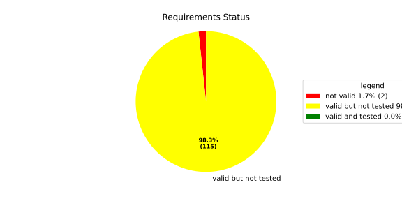
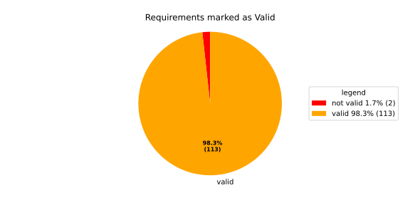
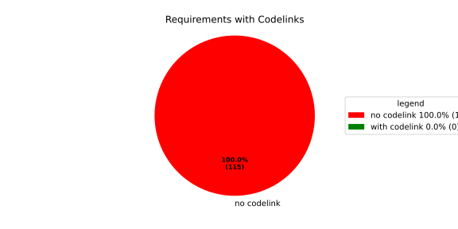

Component Requirements Statistics#
Overview#

In Detail#


No needs passed the filters
Failed Tests
Hint: This table should be empty. Before a PR can be merged all tests have to be successful.
No needs passed the filters
Skipped / Disabled Tests
No needs passed the filters
All passed Tests#
No needs passed the filters
Details About Testcases#
No needs passed the filters
No needs passed the filters
Test Log Files#
tests-report/tests/integration/switch_run_target/switch_run_target/test.log
exec ${PAGER:-/usr/bin/less} "$0" || exit 1
Executing tests from //tests/integration/switch_run_target:switch_run_target
-----------------------------------------------------------------------------
============================= test session starts ==============================
platform linux -- Python 3.12.12, pytest-9.0.3, pluggy-1.5.0
rootdir: /home/runner/.bazel/sandbox/processwrapper-sandbox/894/execroot/_main/bazel-out/k8-fastbuild/bin/tests/integration/switch_run_target/switch_run_target.runfiles/score_itf+
configfile: pytest.ini
collected 1 item
../score_itf+::test_switch_run_target
-------------------------------- live log setup --------------------------------
[2026-06-17 14:35:26.671] [INFO] [score.itf.plugins.docker] Executing custom image bootstrap command: tests/utils/environments/x86_64-linux/x86_64-linux.sh
[2026-06-17 14:35:29.647] [DEBUG] [docker.utils.config] Trying paths: ['/home/runner/.docker/config.json', '/home/runner/.dockercfg']
[2026-06-17 14:35:29.647] [DEBUG] [docker.utils.config] Found file at path: /home/runner/.docker/config.json
[2026-06-17 14:35:29.647] [DEBUG] [docker.auth] Found 'auths' section
[2026-06-17 14:35:29.647] [DEBUG] [docker.auth] Found entry (registry='https://index.docker.io/v1/', username='githubactions')
[2026-06-17 14:35:29.657] [DEBUG] [urllib3.connectionpool] http://localhost:None "GET /version HTTP/1.1" 200 823
[2026-06-17 14:35:29.672] [DEBUG] [urllib3.connectionpool] http://localhost:None "POST /v1.48/containers/create HTTP/1.1" 201 88
[2026-06-17 14:35:29.673] [DEBUG] [urllib3.connectionpool] http://localhost:None "GET /v1.48/containers/d80923a67ff02b9349ca7ab3029e1bedf8670474ae2d6c4ba5daa743330f7097/json HTTP/1.1" 200 None
[2026-06-17 14:35:29.885] [DEBUG] [urllib3.connectionpool] http://localhost:None "POST /v1.48/containers/d80923a67ff02b9349ca7ab3029e1bedf8670474ae2d6c4ba5daa743330f7097/start HTTP/1.1" 204 0
[2026-06-17 14:35:29.885] [DEBUG] [docker.utils.config] Trying paths: ['/home/runner/.docker/config.json', '/home/runner/.dockercfg']
[2026-06-17 14:35:29.885] [DEBUG] [docker.utils.config] Found file at path: /home/runner/.docker/config.json
[2026-06-17 14:35:29.885] [DEBUG] [docker.auth] Found 'auths' section
[2026-06-17 14:35:29.885] [DEBUG] [docker.auth] Found entry (registry='https://index.docker.io/v1/', username='githubactions')
[2026-06-17 14:35:29.895] [DEBUG] [urllib3.connectionpool] http://localhost:None "GET /version HTTP/1.1" 200 823
[2026-06-17 14:35:30.115] [INFO] [tests.utils.testing_utils.setup_test] Test case setup finished
-------------------------------- live log call ---------------------------------
[2026-06-17 14:35:30.243] [INFO] [launch_manager] 2026/06/17 14:35:30.6930242 1482216 000 ECU1 LM LM log debug verbose 1 Launch Manager Started !!!!
[2026-06-17 14:35:30.252] [INFO] [launch_manager] 2026/06/17 14:35:30.6930243 1482219 000 ECU1 LM LM log debug verbose 1 Loading LCM Configurations...
[2026-06-17 14:35:30.252] [INFO] [launch_manager] 2026/06/17 14:35:30.6930243 1482219 000 ECU1 LM LM log debug verbose 1 ECUCFG_ENV_VAR_ROOTFOLDER set successfully
[2026-06-17 14:35:30.252] [INFO] [launch_manager] 2026/06/17 14:35:30.6930243 1482220 000 ECU1 LM LM log debug verbose 5 FlatBufferParser::getModeGroupPgName: MainPG ( IdentifierHash: 18079021346025578134 )
[2026-06-17 14:35:30.252] [INFO] [launch_manager] 2026/06/17 14:35:30.6930243 1482221 000 ECU1 LM LM log debug verbose 5 FlatBufferParser::getModeGroupPgStateName: MainPG/Startup ( IdentifierHash: 10504605499600661529 )
[2026-06-17 14:35:30.252] [INFO] [launch_manager] 2026/06/17 14:35:30.6930243 1482221 000 ECU1 LM LM log debug verbose 5 FlatBufferParser::getModeGroupPgStateName: MainPG/run_target_a ( IdentifierHash: 4535707649935996147 )
[2026-06-17 14:35:30.252] [INFO] [launch_manager] 2026/06/17 14:35:30.6930243 1482221 000 ECU1 LM LM log debug verbose 5 FlatBufferParser::getModeGroupPgStateName: MainPG/run_target_c ( IdentifierHash: 6199163020077258462 )
[2026-06-17 14:35:30.252] [INFO] [launch_manager] 2026/06/17 14:35:30.6930243 1482221 000 ECU1 LM LM log debug verbose 5 FlatBufferParser::getModeGroupPgStateName: MainPG/Off ( IdentifierHash: 15281793077830264047 )
[2026-06-17 14:35:30.252] [INFO] [launch_manager] 2026/06/17 14:35:30.6930243 1482221 000 ECU1 LM LM log debug verbose 5 FlatBufferParser::getModeGroupPgStateName: MainPG/fallback_run_target ( IdentifierHash: 4059409696722237352 )
[2026-06-17 14:35:30.252] [INFO] [launch_manager] 2026/06/17 14:35:30.6930243 1482222 000 ECU1 LM LM log debug verbose 4 parseProcessConfigurations: Process index: 0 executable_path_: /tmp/tests/switch_run_target/control_client_mock
[2026-06-17 14:35:30.252] [INFO] [launch_manager] 2026/06/17 14:35:30.6930243 1482222 000 ECU1 LM LM log debug verbose 3 Process component_initial is Reporting execution state
[2026-06-17 14:35:30.253] [INFO] [launch_manager] 2026/06/17 14:35:30.6930243 1482230 000 ECU1 LM LM log debug verbose 1 Process is STATE_MANAGEMENT function Cluster Affiliation
[2026-06-17 14:35:30.253] [INFO] [launch_manager] 2026/06/17 14:35:30.6930244 1482231 000 ECU1 LM LM log debug verbose 3 Process component_initial is NOT Self terminating
[2026-06-17 14:35:30.253] [INFO] [launch_manager] 2026/06/17 14:35:30.6930244 1482231 000 ECU1 LM LM log debug verbose 4 ParseProcessProcessGroup: id:::pg_name_: MainPG , pg_state_name_: MainPG/Startup
[2026-06-17 14:35:30.253] [INFO] [launch_manager] 2026/06/17 14:35:30.6930244 1482231 000 ECU1 LM LM log debug verbose 4 ParseProcessProcessGroup: id:::pg_name_: MainPG , pg_state_name_: MainPG/run_target_a
[2026-06-17 14:35:30.253] [INFO] [launch_manager] 2026/06/17 14:35:30.6930244 1482232 000 ECU1 LM LM log debug verbose 4 parseProcessConfigurations: Process index: 1 executable_path_: /tmp/tests/switch_run_target/component_a
[2026-06-17 14:35:30.253] [INFO] [launch_manager] 2026/06/17 14:35:30.6930244 1482232 000 ECU1 LM LM log debug verbose 3 Process component_a is Reporting execution state
[2026-06-17 14:35:30.253] [INFO] [launch_manager] 2026/06/17 14:35:30.6930244 1482232 000 ECU1 LM LM log debug verbose 1 Process is NOT associated with any function Cluster Affiliation
[2026-06-17 14:35:30.253] [INFO] [launch_manager] 2026/06/17 14:35:30.6930244 1482232 000 ECU1 LM LM log debug verbose 3 Process component_a is NOT Self terminating
[2026-06-17 14:35:30.253] [INFO] [launch_manager] 2026/06/17 14:35:30.6930244 1482232 000 ECU1 LM LM log debug verbose 4 ParseProcessExecutionDependency: target process path: component_b ID: component_b
[2026-06-17 14:35:30.253] [INFO] [launch_manager] 2026/06/17 14:35:30.6930244 1482233 000 ECU1 LM LM log debug verbose 4 ParseProcessProcessGroup: id:::pg_name_: MainPG , pg_state_name_: MainPG/run_target_a
[2026-06-17 14:35:30.253] [INFO] [launch_manager] 2026/06/17 14:35:30.6930244 1482233 000 ECU1 LM LM log debug verbose 4 parseProcessConfigurations: Process index: 2 executable_path_: /tmp/tests/switch_run_target/component_b
[2026-06-17 14:35:30.253] [INFO] [launch_manager] 2026/06/17 14:35:30.6930244 1482233 000 ECU1 LM LM log debug verbose 3 Process component_b is Reporting execution state
[2026-06-17 14:35:30.253] [INFO] [launch_manager] 2026/06/17 14:35:30.6930244 1482233 000 ECU1 LM LM log debug verbose 1 Process is NOT associated with any function Cluster Affiliation
[2026-06-17 14:35:30.253] [INFO] [launch_manager] 2026/06/17 14:35:30.6930244 1482233 000 ECU1 LM LM log debug verbose 3 Process component_b is NOT Self terminating
[2026-06-17 14:35:30.253] [INFO] [launch_manager] 2026/06/17 14:35:30.6930244 1482234 000 ECU1 LM LM log debug verbose 4 ParseProcessProcessGroup: id:::pg_name_: MainPG , pg_state_name_: MainPG/run_target_a
[2026-06-17 14:35:30.253] [INFO] [launch_manager] 2026/06/17 14:35:30.6930244 1482234 000 ECU1 LM LM log debug verbose 4 parseProcessConfigurations: Process index: 3 executable_path_: /tmp/tests/switch_run_target/reporting_process
[2026-06-17 14:35:30.253] [INFO] [launch_manager] 2026/06/17 14:35:30.6930244 1482234 000 ECU1 LM LM log debug verbose 3 Process component_e is Reporting execution state
[2026-06-17 14:35:30.253] [INFO] [launch_manager] 2026/06/17 14:35:30.6930244 1482234 000 ECU1 LM LM log debug verbose 1 Process is NOT associated with any function Cluster Affiliation
[2026-06-17 14:35:30.254] [INFO] [launch_manager] 2026/06/17 14:35:30.6930244 1482234 000 ECU1 LM LM log debug verbose 3 Process component_e is NOT Self terminating
[2026-06-17 14:35:30.254] [INFO] [launch_manager] 2026/06/17 14:35:30.6930244 1482235 000 ECU1 LM LM log debug verbose 4 parseProcessConfigurations: Process index: 4 executable_path_: /tmp/tests/switch_run_target/component_d
[2026-06-17 14:35:30.254] [INFO] [launch_manager] 2026/06/17 14:35:30.6930244 1482235 000 ECU1 LM LM log debug verbose 3 Process component_d is Reporting execution state
[2026-06-17 14:35:30.254] [INFO] [launch_manager] 2026/06/17 14:35:30.6930244 1482235 000 ECU1 LM LM log debug verbose 1 Process is NOT associated with any function Cluster Affiliation
[2026-06-17 14:35:30.254] [INFO] [launch_manager] 2026/06/17 14:35:30.6930244 1482235 000 ECU1 LM LM log debug verbose 3 Process component_d is NOT Self terminating
[2026-06-17 14:35:30.254] [INFO] [launch_manager] 2026/06/17 14:35:30.6930244 1482235 000 ECU1 LM LM log debug verbose 4 ParseProcessProcessGroup: id:::pg_name_: MainPG , pg_state_name_: MainPG/run_target_a
[2026-06-17 14:35:30.254] [INFO] [launch_manager] 2026/06/17 14:35:30.6930244 1482236 000 ECU1 LM LM log debug verbose 4 ParseProcessProcessGroup: id:::pg_name_: MainPG , pg_state_name_: MainPG/run_target_c
[2026-06-17 14:35:30.254] [INFO] [launch_manager] 2026/06/17 14:35:30.6930244 1482236 000 ECU1 LM LM log debug verbose 3 Loading SWCL Nr. 0 Succeeded
[2026-06-17 14:35:30.254] [INFO] [launch_manager] 2026/06/17 14:35:30.6930244 1482236 000 ECU1 LM LM log debug verbose 2 1 process group(s)
[2026-06-17 14:35:30.254] [INFO] [launch_manager] 2026/06/17 14:35:30.6930244 1482236 000 ECU1 LM LM log debug verbose 3 Creating graph with 4 nodes
[2026-06-17 14:35:30.254] [INFO] [launch_manager] 2026/06/17 14:35:30.6930244 1482236 000 ECU1 LM LM log debug verbose 1 Process groups initialized successfully
[2026-06-17 14:35:30.255] [INFO] [launch_manager] 2026/06/17 14:35:30.6930244 1482237 000 ECU1 LM LM log debug verbose 1 Process Group initialization done
[2026-06-17 14:35:30.255] [INFO] [launch_manager] 2026/06/17 14:35:30.6930244 1482237 000 ECU1 LM LM log debug verbose 3 Creating Safe Process Map with 4 entries
[2026-06-17 14:35:30.255] [INFO] [launch_manager] 2026/06/17 14:35:30.6930244 1482237 000 ECU1 LM LM log debug verbose 2 Creating job queue with capacity 1024
[2026-06-17 14:35:30.255] [INFO] [launch_manager] 2026/06/17 14:35:30.6930245 1482237 000 ECU1 LM LM log debug verbose 1 Creating worker threads...
[2026-06-17 14:35:30.255] [INFO] [launch_manager] 2026/06/17 14:35:30.6930246 1482252 000 ECU1 LM LM log debug verbose 7 Process group index 0 (with name MainPG ) has 4 processes
[2026-06-17 14:35:30.255] [INFO] [launch_manager] 2026/06/17 14:35:30.6930246 1482252 000 ECU1 LM LM log debug verbose 2 Creating process node with id: 0
[2026-06-17 14:35:30.255] [INFO] [launch_manager] 2026/06/17 14:35:30.6930246 1482253 000 ECU1 LM LM log debug verbose 5 Process 0 has 0 start dependencies
[2026-06-17 14:35:30.255] [INFO] [launch_manager] 2026/06/17 14:35:30.6930246 1482253 000 ECU1 LM LM log debug verbose 2 Creating process node with id: 1
[2026-06-17 14:35:30.255] [INFO] [launch_manager] 2026/06/17 14:35:30.6930246 1482253 000 ECU1 LM LM log debug verbose 5 Process 1 has 1 start dependencies
[2026-06-17 14:35:30.255] [INFO] [launch_manager] 2026/06/17 14:35:30.6930246 1482253 000 ECU1 LM LM log debug verbose 2 Creating process node with id: 2
[2026-06-17 14:35:30.255] [INFO] [launch_manager] 2026/06/17 14:35:30.6930246 1482254 000 ECU1 LM LM log debug verbose 5 Process 2 has 0 start dependencies
[2026-06-17 14:35:30.255] [INFO] [launch_manager] 2026/06/17 14:35:30.6930246 1482254 000 ECU1 LM LM log debug verbose 2 Creating process node with id: 3
[2026-06-17 14:35:30.255] [INFO] [launch_manager] 2026/06/17 14:35:30.6930246 1482254 000 ECU1 LM LM log debug verbose 5 Process 3 has 0 start dependencies
[2026-06-17 14:35:30.255] [INFO] [launch_manager] 2026/06/17 14:35:30.6930246 1482254 000 ECU1 LM LM log debug verbose 3 Created 4 process nodes
[2026-06-17 14:35:30.255] [INFO] [launch_manager] 2026/06/17 14:35:30.6930246 1482254 000 ECU1 LM LM log debug verbose 2 Creating successor lists for process group MainPG
[2026-06-17 14:35:30.255] [INFO] [launch_manager] 2026/06/17 14:35:30.6930246 1482254 000 ECU1 LM LM log debug verbose 4 Adding kRunning successor for process 2 : 1
[2026-06-17 14:35:30.255] [INFO] [launch_manager] 2026/06/17 14:35:30.6930246 1482255 000 ECU1 LM LM log debug verbose 4 Added successor node dependency: 2 -> 1
[2026-06-17 14:35:30.255] [INFO] [launch_manager] 2026/06/17 14:35:30.6930246 1482255 000 ECU1 LM LM log debug verbose 1 Graphs initialized
[2026-06-17 14:35:30.256] [INFO] [launch_manager] 2026/06/17 14:35:30.6930246 1482256 000 ECU1 LM Fcty log info verbose 2 Factory for FlatCfg MachineConfig: Loading of HM Machine Configuration succeeded.
[2026-06-17 14:35:30.256] [INFO] [launch_manager] 2026/06/17 14:35:30.6930246 1482256 000 ECU1 LM Fcty log debug verbose 3 Factory for FlatCfg MachineConfig: Alive Supervision buffer size: 100
[2026-06-17 14:35:30.256] [INFO] [launch_manager] 2026/06/17 14:35:30.6930246 1482257 000 ECU1 LM Fcty log debug verbose 3 Factory for FlatCfg MachineConfig: Monitor buffer size: 512
[2026-06-17 14:35:30.256] [INFO] [launch_manager] 2026/06/17 14:35:30.6930246 1482257 000 ECU1 LM Fcty log debug verbose 4 Factory for FlatCfg MachineConfig: Periodicity: 50000000 ns
[2026-06-17 14:35:30.256] [INFO] [launch_manager] 2026/06/17 14:35:30.6930246 1482257 000 ECU1 LM Fcty log debug verbose 3 Factory for FlatCfg MachineConfig: Configured watchdogs: 0
[2026-06-17 14:35:30.257] [INFO] [launch_manager] 2026/06/17 14:35:30.6930246 1482257 000 ECU1 LM Fcty log warn verbose 2 Factory for FlatCfg MachineConfig: No watchdog configured
[2026-06-17 14:35:30.257] [INFO] [launch_manager] 2026/06/17 14:35:30.6930247 1482258 000 ECU1 LM Fcty log debug verbose 2 Software Cluster Handler starts constructing workers: MainCluster
[2026-06-17 14:35:30.257] [INFO] [launch_manager] 2026/06/17 14:35:30.6930247 1482258 000 ECU1 LM Fcty log debug verbose 3 Factory for FlatCfg AR24-11: Successfully created Process States: component_initial
[2026-06-17 14:35:30.257] [INFO] [launch_manager] 2026/06/17 14:35:30.6930247 1482258 000 ECU1 LM Fcty log debug verbose 3 Factory for FlatCfg AR24-11: Number of constructed Process States: 1
[2026-06-17 14:35:30.257] [INFO] [launch_manager] 2026/06/17 14:35:30.6930247 1482259 000 ECU1 LM Fcty log debug verbose 3 Factory for FlatCfg AR24-11: Successfully created Monitor interface IPC with path: lifecycle_health_component_initial
[2026-06-17 14:35:30.257] [INFO] [launch_manager] 2026/06/17 14:35:30.6930247 1482259 000 ECU1 LM Fcty log debug verbose 3 Factory for FlatCfg AR24-11: Number of constructed Monitor interface IPCs: 1
[2026-06-17 14:35:30.257] [INFO] [launch_manager] 2026/06/17 14:35:30.6930247 1482259 000 ECU1 LM Fcty log debug verbose 3 Factory for FlatCfg AR24-11: Successfully created MonitorInterface: /lifecycle_health_component_initial
[2026-06-17 14:35:30.257] [INFO] [launch_manager] 2026/06/17 14:35:30.6930247 1482259 000 ECU1 LM Fcty log debug verbose 3 Factory for FlatCfg AR24-11: Number of constructed Monitor interfaces: 1
[2026-06-17 14:35:30.257] [INFO] [launch_manager] 2026/06/17 14:35:30.6930247 1482260 000 ECU1 LM Fcty log debug verbose 3 Factory for FlatCfg AR24-11: Successfully created supervision checkpoint: component_initial_checkpoint
[2026-06-17 14:35:30.257] [INFO] [launch_manager] 2026/06/17 14:35:30.6930247 1482261 000 ECU1 LM Fcty log debug verbose 3 Factory for FlatCfg AR24-11: Number of constructed supervision checkpoints: 1
[2026-06-17 14:35:30.258] [INFO] [launch_manager] 2026/06/17 14:35:30.6930247 1482261 000 ECU1 LM Fcty log debug verbose 3 Factory for FlatCfg AR24-11: Successfully created alive supervision worker object: component_initial_alive_supervision
[2026-06-17 14:35:30.258] [INFO] [launch_manager] 2026/06/17 14:35:30.6930247 1482261 000 ECU1 LM Fcty log debug verbose 3 Factory for FlatCfg AR24-11: Number of constructed alive supervisions: 1
[2026-06-17 14:35:30.258] [INFO] [launch_manager] 2026/06/17 14:35:30.6930247 1482261 000 ECU1 LM Fcty log info verbose 2 Phm Daemon: The (configured) periodicity in [ns] is set to: 50000000
[2026-06-17 14:35:30.258] [INFO] [launch_manager] 2026/06/17 14:35:30.6930247 1482262 000 ECU1 LM Fcty log debug verbose 2 Phm Daemon: The accuracy of the monotonic system clock in [ns] is: 1
[2026-06-17 14:35:30.258] [INFO] [launch_manager] 2026/06/17 14:35:30.6930247 1482263 000 ECU1 LM Fcty log debug verbose 3 HealthMonitor: Initialization took 0 ms
[2026-06-17 14:35:30.258] [INFO] [launch_manager] 2026/06/17 14:35:30.6930247 1482263 000 ECU1 LM LM log info verbose 1 LCM started successfully
[2026-06-17 14:35:30.258] [INFO] [launch_manager] 2026/06/17 14:35:30.6930247 1482263 000 ECU1 LM LM log debug verbose 3 clock() at run(): 31.133000 ms
[2026-06-17 14:35:30.258] [INFO] [launch_manager] 2026/06/17 14:35:30.6930247 1482264 000 ECU1 LM LM log debug verbose 1 =============STARTING MAINPG STARTUP STATE============
[2026-06-17 14:35:30.258] [INFO] [launch_manager] 2026/06/17 14:35:30.6930247 1482264 000 ECU1 LM LM log debug verbose 9 Graph::setState changes from kSuccess to kInTransition for PG 0 ( MainPG )
[2026-06-17 14:35:30.258] [INFO] [launch_manager] 2026/06/17 14:35:30.6930247 1482264 000 ECU1 LM LM log debug verbose 2 Stop Dependencies: 0
[2026-06-17 14:35:30.258] [INFO] [launch_manager] 2026/06/17 14:35:30.6930247 1482264 000 ECU1 LM LM log debug verbose 2 Stop Dependencies: 0
[2026-06-17 14:35:30.258] [INFO] [launch_manager] 2026/06/17 14:35:30.6930247 1482265 000 ECU1 LM LM log debug verbose 2 Stop Dependencies: 0
[2026-06-17 14:35:30.258] [INFO] [launch_manager] 2026/06/17 14:35:30.6930247 1482265 000 ECU1 LM LM log debug verbose 2 Stop Dependencies: 0
[2026-06-17 14:35:30.258] [INFO] [launch_manager] 2026/06/17 14:35:30.6930247 1482265 000 ECU1 LM LM log debug verbose 2 Start Dependencies: 0
[2026-06-17 14:35:30.258] [INFO] [launch_manager] 2026/06/17 14:35:30.6930247 1482265 000 ECU1 LM LM log debug verbose 2 Start Dependencies: 1
[2026-06-17 14:35:30.258] [INFO] [launch_manager] 2026/06/17 14:35:30.6930247 1482265 000 ECU1 LM LM log debug verbose 2 Start Dependencies: 0
[2026-06-17 14:35:30.258] [INFO] [launch_manager] 2026/06/17 14:35:30.6930247 1482265 000 ECU1 LM LM log debug verbose 2 Start Dependencies: 0
[2026-06-17 14:35:30.259] [INFO] [launch_manager] 2026/06/17 14:35:30.6930247 1482266 000 ECU1 LM LM log debug verbose 6 Starting process 0 ( component_initial ) from executable /tmp/tests/switch_run_target/control_client_mock
[2026-06-17 14:35:30.259] [INFO] [launch_manager] 2026/06/17 14:35:30.6930247 1482267 000 ECU1 LM LM log debug verbose 3 Initialize the control client for component_initial process
[2026-06-17 14:35:30.259] [INFO] [launch_manager] 2026/06/17 14:35:30.6930247 1482267 000 ECU1 LM LM log debug verbose 1 ControlClientChannel initialized
[2026-06-17 14:35:30.259] [INFO] [launch_manager] 2026/06/17 14:35:30.6930248 1482272 000 ECU1 LM Sprv log debug verbose 6 Process with Id component_initial changed state PG MainPG/Startup PS 1
[2026-06-17 14:35:30.259] [INFO] [launch_manager] 2026/06/17 14:35:30.6930248 1482272 000 ECU1 LM LM log debug verbose 4 startProcess pid 68 received for process: component_initial
[2026-06-17 14:35:30.259] [INFO] [launch_manager] 2026/06/17 14:35:30.6930248 1482273 000 ECU1 LM LM log debug verbose 1 ControlClientChannel obtained from sync.
[2026-06-17 14:35:30.260] [INFO] [launch_manager] [==========] Running 1 test from 1 test suite.
[2026-06-17 14:35:30.261] [INFO] [launch_manager] [----------] Global test environment set-up.
[2026-06-17 14:35:30.261] [INFO] [launch_manager] [----------] 1 test from SwitchRunTarget
[2026-06-17 14:35:30.261] [INFO] [launch_manager] [ RUN ] SwitchRunTarget.ControlClientMock
[2026-06-17 14:35:30.261] [INFO] [launch_manager] [ STEP ] Report kRunning
[2026-06-17 14:35:30.261] [INFO] [launch_manager] [ END STEP ] Report kRunning
[2026-06-17 14:35:30.261] [INFO] [launch_manager] [ STEP ] Activate run target A
[2026-06-17 14:35:30.261] [INFO] [launch_manager] 2026/06/17 14:35:30.6930260 1482388 000 ECU1 LM LM log debug verbose 1
[2026-06-17 14:35:30.261] [INFO] [launch_manager] Request sent. Waiting for acknowledgment...
[2026-06-17 14:35:30.261] [INFO] [launch_manager] 2026/06/17 14:35:30.6930260 1482390 000 ECU1 LM LM log debug verbose 8 ProcessGroupManager::ControlClientHandler: got request kSetStateRequest ( 16 ) re state MainPG/run_target_a of PG MainPG
[2026-06-17 14:35:30.262] [INFO] [launch_manager] 2026/06/17 14:35:30.6930260 1482391 000 ECU1 LM LM log debug verbose 6 Pending state for process group MainPG changed from to MainPG/run_target_a
[2026-06-17 14:35:30.263] [INFO] [launch_manager] 2026/06/17 14:35:30.6930260 1482391 000 ECU1 LM LM log debug verbose 9 Graph::setState changes from kInTransition to kCancelled for PG 0 ( MainPG )
[2026-06-17 14:35:30.263] [INFO] [launch_manager] 2026/06/17 14:35:30.6930260 1482391 000 ECU1 LM LM log debug verbose 1 Control Client handler nudged
[2026-06-17 14:35:30.263] [INFO] [launch_manager] 2026/06/17 14:35:30.6930260 1482392 000 ECU1 LM LM log debug verbose 1 Request acknowledged.
[2026-06-17 14:35:30.263] [INFO] [launch_manager] 2026/06/17 14:35:30.6930260 1482392 000 ECU1 LM LM log debug verbose 1 Request acknowledged.
[2026-06-17 14:35:30.263] [INFO] [launch_manager] 2026/06/17 14:35:30.6930260 1482397 000 ECU1 LM LM log debug verbose 8 Got kRunning for pid 68 ( component_initial ) process 0 of group MainPG
[2026-06-17 14:35:30.263] [INFO] [launch_manager] 2026/06/17 14:35:30.6930261 1482397 000 ECU1 LM LM log debug verbose 7 startProcess for MainPG process 0 ( component_initial ) done
[2026-06-17 14:35:30.263] [INFO] [launch_manager] 2026/06/17 14:35:30.6930261 1482398 000 ECU1 LM LM log debug verbose 1 Control Client handler nudged
[2026-06-17 14:35:30.263] [INFO] [launch_manager] 2026/06/17 14:35:30.6930261 1482398 000 ECU1 LM LM log fatal verbose 3 clock() at failed initial state transition: 32.484000 ms
[2026-06-17 14:35:30.263] [INFO] [launch_manager] 2026/06/17 14:35:30.6930261 1482398 000 ECU1 LM LM log debug verbose 9 Graph::setState changes from kCancelled to kUndefinedState for PG 0 ( MainPG )
[2026-06-17 14:35:30.263] [INFO] [launch_manager] 2026/06/17 14:35:30.6930261 1482398 000 ECU1 LM LM log debug verbose 1 Control Client handler nudged
[2026-06-17 14:35:30.265] [INFO] [launch_manager] 2026/06/17 14:35:30.6930262 1482413 000 ECU1 LM LM log debug verbose 6 Pending state for process group MainPG changed from MainPG/run_target_a to
[2026-06-17 14:35:30.265] [INFO] [launch_manager] 2026/06/17 14:35:30.6930262 1482413 000 ECU1 LM LM log debug verbose 4 Start transition to MainPG/run_target_a for PG MainPG
[2026-06-17 14:35:30.265] [INFO] [launch_manager] 2026/06/17 14:35:30.6930262 1482413 000 ECU1 LM LM log debug verbose 9 Graph::setState changes from kUndefinedState to kInTransition for PG 0 ( MainPG )
[2026-06-17 14:35:30.265] [INFO] [launch_manager] 2026/06/17 14:35:30.6930262 1482413 000 ECU1 LM LM log debug verbose 2 Stop Dependencies: 0
[2026-06-17 14:35:30.265] [INFO] [launch_manager] 2026/06/17 14:35:30.6930262 1482414 000 ECU1 LM LM log debug verbose 2 Stop Dependencies: 0
[2026-06-17 14:35:30.265] [INFO] [launch_manager] 2026/06/17 14:35:30.6930262 1482414 000 ECU1 LM LM log debug verbose 2 Stop Dependencies: 0
[2026-06-17 14:35:30.265] [INFO] [launch_manager] 2026/06/17 14:35:30.6930262 1482414 000 ECU1 LM LM log debug verbose 2 Stop Dependencies: 0
[2026-06-17 14:35:30.265] [INFO] [launch_manager] 2026/06/17 14:35:30.6930262 1482414 000 ECU1 LM LM log debug verbose 2 Start Dependencies: 0
[2026-06-17 14:35:30.265] [INFO] [launch_manager] 2026/06/17 14:35:30.6930262 1482414 000 ECU1 LM LM log debug verbose 2 Start Dependencies: 1
[2026-06-17 14:35:30.265] [INFO] [launch_manager] 2026/06/17 14:35:30.6930262 1482414 000 ECU1 LM LM log debug verbose 2 Start Dependencies: 0
[2026-06-17 14:35:30.265] [INFO] [launch_manager] 2026/06/17 14:35:30.6930262 1482415 000 ECU1 LM LM log debug verbose 2 Start Dependencies: 0
[2026-06-17 14:35:30.266] [INFO] [launch_manager] 2026/06/17 14:35:30.6930262 1482416 000 ECU1 LM LM log debug verbose 6 Starting process 2 ( component_b ) from executable /tmp/tests/switch_run_target/component_b
[2026-06-17 14:35:30.266] [INFO] [launch_manager] 2026/06/17 14:35:30.6930262 1482417 000 ECU1 LM LM log debug verbose 6 Starting process 3 ( component_d ) from executable /tmp/tests/switch_run_target/component_d
[2026-06-17 14:35:30.266] [INFO] [launch_manager] 2026/06/17 14:35:30.6930264 1482429 000 ECU1 LM LM log debug verbose 4 startProcess pid 70 received for process: component_d
[2026-06-17 14:35:30.266] [INFO] [launch_manager] 2026/06/17 14:35:30.6930264 1482430 000 ECU1 LM LM log debug verbose 4 startProcess pid 71 received for process: component_b
[2026-06-17 14:35:30.266] [INFO] [launch_manager] [==========] Running 1 test from 1 test suite.
[2026-06-17 14:35:30.266] [INFO] [launch_manager] [----------] Global test environment set-up.
[2026-06-17 14:35:30.266] [INFO] [launch_manager] [----------] 1 test from ComponentB
[2026-06-17 14:35:30.266] [INFO] [launch_manager] [ RUN ] ComponentB.RunAndVerify
[2026-06-17 14:35:30.266] [INFO] [launch_manager] [ STEP ] Verify startup order
[2026-06-17 14:35:30.266] [INFO] [launch_manager] [ END STEP ] Verify startup order
[2026-06-17 14:35:30.266] [INFO] [launch_manager] [ STEP ] Report running
[2026-06-17 14:35:30.267] [INFO] [launch_manager] [==========] Running 1 test from 1 test suite.
[2026-06-17 14:35:30.267] [INFO] [launch_manager] [----------] Global test environment set-up.
[2026-06-17 14:35:30.267] [INFO] [launch_manager] [----------] 1 test from ComponentD
[2026-06-17 14:35:30.267] [INFO] [launch_manager] [ RUN ] ComponentD.RunAndVerify
[2026-06-17 14:35:30.267] [INFO] [launch_manager] [ STEP ] Report running
[2026-06-17 14:35:30.267] [INFO] [launch_manager] [ END STEP ] Report running
[2026-06-17 14:35:30.270] [INFO] [launch_manager] 2026/06/17 14:35:30.6930268 1482471 000 ECU1 LM LM log debug verbose 8 Got kRunning for pid 71 ( component_b ) process 2 of group MainPG
[2026-06-17 14:35:30.270] [INFO] [launch_manager] 2026/06/17 14:35:30.6930268 1482472 000 ECU1 LM LM log debug verbose 7 startProcess for MainPG process 2 ( component_b ) done
[2026-06-17 14:35:30.270] [INFO] [launch_manager] 2026/06/17 14:35:30.6930268 1482472 000 ECU1 LM LM log debug verbose 6 Starting process 1 ( component_a ) from executable /tmp/tests/switch_run_target/component_a
[2026-06-17 14:35:30.270] [INFO] [launch_manager] 2026/06/17 14:35:30.6930268 1482476 000 ECU1 LM LM log debug verbose 4 startProcess pid 72 received for process: component_a
[2026-06-17 14:35:30.270] [INFO] [launch_manager] [ END STEP ] Report running
[2026-06-17 14:35:30.270] [INFO] [launch_manager] [==========] Running 1 test from 1 test suite.
[2026-06-17 14:35:30.271] [INFO] [launch_manager] [----------] Global test environment set-up.
[2026-06-17 14:35:30.271] [INFO] [launch_manager] [----------] 1 test from ComponentA
[2026-06-17 14:35:30.271] [INFO] [launch_manager] [ RUN ] ComponentA.RunAndVerify
[2026-06-17 14:35:30.271] [INFO] [launch_manager] [ STEP ] Report running
[2026-06-17 14:35:30.271] [INFO] [launch_manager] 2026/06/17 14:35:30.6930270 1482491 000 ECU1 LM LM log debug verbose 8 Got kRunning for pid 70 ( component_d ) process 3 of group MainPG
[2026-06-17 14:35:30.271] [INFO] [launch_manager] 2026/06/17 14:35:30.6930270 1482492 000 ECU1 LM LM log debug verbose 7 startProcess for MainPG process 3 ( component_d ) done
[2026-06-17 14:35:30.282] [INFO] [launch_manager] [ END STEP ] Report running
[2026-06-17 14:35:30.282] [INFO] [launch_manager] [ STEP ] Verify startup order
[2026-06-17 14:35:30.282] [INFO] [launch_manager] [ END STEP ] Verify startup order
[2026-06-17 14:35:30.282] [INFO] [launch_manager] 2026/06/17 14:35:30.6930279 1482577 000 ECU1 LM LM log debug verbose 8 Got kRunning for pid 72 ( component_a ) process 1 of group MainPG
[2026-06-17 14:35:30.282] [INFO] [launch_manager] 2026/06/17 14:35:30.6930279 1482578 000 ECU1 LM LM log debug verbose 7 startProcess for MainPG process 1 ( component_a ) done
[2026-06-17 14:35:30.282] [INFO] [launch_manager] 2026/06/17 14:35:30.6930279 1482578 000 ECU1 LM LM log debug verbose 9 Graph::setState changes from kInTransition to kSuccess for PG 0 ( MainPG )
[2026-06-17 14:35:30.282] [INFO] [launch_manager] 2026/06/17 14:35:30.6930279 1482579 000 ECU1 LM LM log info verbose 7 Completed the request for PG MainPG to State MainPG/run_target_a in 18 ms
[2026-06-17 14:35:30.283] [INFO] [launch_manager] 2026/06/17 14:35:30.6930279 1482579 000 ECU1 LM LM log debug verbose 1 Control Client handler nudged
[2026-06-17 14:35:30.283] [INFO] [launch_manager] 2026/06/17 14:35:30.6930280 1482591 000 ECU1 LM LM log debug verbose 8 ProcessGroupManager::ControlClientHandler: Sending kSetStateSuccess ( 20 ) re state MainPG/run_target_a of PG MainPG
[2026-06-17 14:35:30.283] [INFO] [launch_manager] 2026/06/17 14:35:30.6930280 1482591 000 ECU1 LM LM log debug verbose 1 Response sent.
[2026-06-17 14:35:30.302] [INFO] [launch_manager] 2026/06/17 14:35:30.6930298 1482772 000 ECU1 LM Sprv log debug verbose 6 Process with Id component_initial changed state PG MainPG/Startup PS 2
[2026-06-17 14:35:30.302] [INFO] [launch_manager] 2026/06/17 14:35:30.6930298 1482773 000 ECU1 LM Sprv log debug verbose 6 Process with Id component_b changed state PG MainPG/run_target_a PS 1
[2026-06-17 14:35:30.302] [INFO] [launch_manager] 2026/06/17 14:35:30.6930298 1482773 000 ECU1 LM Sprv log debug verbose 6 Process with Id component_d changed state PG MainPG/run_target_a PS 1
[2026-06-17 14:35:30.302] [INFO] [launch_manager] 2026/06/17 14:35:30.6930298 1482773 000 ECU1 LM Sprv log debug verbose 6 Process with Id component_b changed state PG MainPG/run_target_a PS 2
[2026-06-17 14:35:30.302] [INFO] [launch_manager] 2026/06/17 14:35:30.6930298 1482773 000 ECU1 LM Sprv log debug verbose 6 Process with Id component_a changed state PG MainPG/run_target_a PS 1
[2026-06-17 14:35:30.302] [INFO] [launch_manager] 2026/06/17 14:35:30.6930298 1482773 000 ECU1 LM Sprv log debug verbose 6 Process with Id component_d changed state PG MainPG/run_target_a PS 2
[2026-06-17 14:35:30.302] [INFO] [launch_manager] 2026/06/17 14:35:30.6930298 1482774 000 ECU1 LM Sprv log debug verbose 6 Process with Id component_a changed state PG MainPG/run_target_a PS 2
[2026-06-17 14:35:30.302] [INFO] [launch_manager] 2026/06/17 14:35:30.6930298 1482774 000 ECU1 LM Sprv log info verbose 3 Alive Supervision ( component_initial_alive_supervision ) switched to OK.
[2026-06-17 14:35:30.315] [DEBUG] [tests.utils.testing_utils.run_until_file_deployed] Waiting for /tmp/tests/test_end
[2026-06-17 14:35:30.352] [INFO] [launch_manager] 2026/06/17 14:35:30.6930352 1483309 000 ECU1 LM LM log debug verbose 1 Response retrieved.
[2026-06-17 14:35:30.352] [INFO] [launch_manager] [ END STEP ] Activate run target A
[2026-06-17 14:35:30.352] [INFO] [launch_manager] [ STEP ] Verify running processes
[2026-06-17 14:35:30.352] [INFO] [launch_manager] [ END STEP ] Verify running processes
[2026-06-17 14:35:30.352] [INFO] [launch_manager] [ STEP ] Activate RunTarget Startup
[2026-06-17 14:35:30.353] [INFO] [launch_manager] 2026/06/17 14:35:30.6930352 1483310 000 ECU1 LM LM log debug verbose 1 Request sent. Waiting for acknowledgment...
[2026-06-17 14:35:30.354] [INFO] [launch_manager] 2026/06/17 14:35:30.6930353 1483325 000 ECU1 LM LM log debug verbose 8 ProcessGroupManager::ControlClientHandler: got request kSetStateRequest ( 16 ) re state MainPG/Startup of PG MainPG
[2026-06-17 14:35:30.354] [INFO] [launch_manager] 2026/06/17 14:35:30.6930353 1483327 000 ECU1 LM LM log debug verbose 6
[2026-06-17 14:35:30.354] [INFO] [launch_manager] Pending state for process group MainPG changed from to MainPG/Startup
[2026-06-17 14:35:30.354] [INFO] [launch_manager] 2026/06/17 14:35:30.6930354 1483328 000 ECU1 LM LM log debug verbose 1 Request acknowledged.
[2026-06-17 14:35:30.354] [INFO] [launch_manager] 2026/06/17 14:35:30.6930354 1483328 000 ECU1 LM LM log debug verbose 6 Pending state for process group MainPG changed from MainPG/Startup to
[2026-06-17 14:35:30.354] [INFO] [launch_manager] 2026/06/17 14:35:30.6930354 1483329 000 ECU1 LM LM log debug verbose 4 Start transition to MainPG/Startup for PG MainPG
[2026-06-17 14:35:30.354] [INFO] [launch_manager] 2026/06/17 14:35:30.6930354 1483330 000 ECU1 LM LM log debug verbose 9 Graph::setState changes from kSuccess to kInTransition for PG 0 ( MainPG )
[2026-06-17 14:35:30.355] [INFO] [launch_manager] 2026/06/17 14:35:30.6930354 1483330 000 ECU1 LM LM log debug verbose 2 Stop Dependencies: 0
[2026-06-17 14:35:30.355] [INFO] [launch_manager] 2026/06/17 14:35:30.6930354 1483331 000 ECU1 LM LM log debug verbose 2 Stop Dependencies: 0
[2026-06-17 14:35:30.355] [INFO] [launch_manager] 2026/06/17 14:35:30.6930354 1483331 000 ECU1 LM LM log debug verbose 2 Stop Dependencies: 1
[2026-06-17 14:35:30.355] [INFO] [launch_manager] 2026/06/17 14:35:30.6930354 1483331 000 ECU1 LM LM log debug verbose 2 Stop Dependencies: 0
[2026-06-17 14:35:30.355] [INFO] [launch_manager] 2026/06/17 14:35:30.6930354 1483333 000 ECU1 LM LM log debug verbose 1 2026/06/17 14:35:30.6930354 1483333 000 ECU1 LM LM log debug verbose 5 Request acknowledged.
[2026-06-17 14:35:30.355] [INFO] [launch_manager] terminating process 3 ( component_d )
[2026-06-17 14:35:30.355] [INFO] [launch_manager] 2026/06/17 14:35:30.6930354 1483334 000 ECU1 LM LM log debug verbose 5
[2026-06-17 14:35:30.355] [INFO] [launch_manager] terminating process 1 ( component_a )
[2026-06-17 14:35:30.355] [INFO] [launch_manager] 2026/06/17 14:35:30.6930354 1483335 000 ECU1 LM LM log debug verbose 9
[2026-06-17 14:35:30.356] [INFO] [launch_manager] Requesting termination of process 3 of MainPG pid 70 ( component_d )
[2026-06-17 14:35:30.356] [INFO] [launch_manager] 2026/06/17 14:35:30.6930354 1483337 000 ECU1 LM LM log debug verbose 9
[2026-06-17 14:35:30.356] [INFO] [launch_manager] Requesting termination of process 1 of MainPG pid 72 ( component_a )
[2026-06-17 14:35:30.356] [INFO] [launch_manager] 2026/06/17 14:35:30.6930355 1483338 000 ECU1 LM LM log debug verbose 2
[2026-06-17 14:35:30.356] [INFO] [launch_manager] Request termination received for 70
[2026-06-17 14:35:30.356] [INFO] [launch_manager] 2026/06/17 14:35:30.6930355 1483339 000 ECU1 LM LM log debug verbose 2
[2026-06-17 14:35:30.356] [INFO] [launch_manager] Request termination received for 72
[2026-06-17 14:35:30.356] [INFO] [launch_manager] [ STEP ] Verify termination order
[2026-06-17 14:35:30.356] [INFO] [launch_manager] [ END STEP ] Verify termination order
[2026-06-17 14:35:30.356] [INFO] [launch_manager] [ OK ] ComponentA.RunAndVerify (85 ms)
[2026-06-17 14:35:30.356] [INFO] [launch_manager] [ OK ] ComponentD.RunAndVerify (88 ms)
[2026-06-17 14:35:30.356] [INFO] [launch_manager] [----------] 1 test from ComponentD (88 ms total)
[2026-06-17 14:35:30.357] [INFO] [launch_manager] [----------] Global test environment tear-down
[2026-06-17 14:35:30.357] [INFO] [launch_manager] [----------] 1 test from ComponentA (85 ms total)
[2026-06-17 14:35:30.357] [INFO] [launch_manager] [----------] Global test environment tear-down
[2026-06-17 14:35:30.357] [INFO] [launch_manager] [==========] 1 test from 1 test suite ran. (88 ms total)
[2026-06-17 14:35:30.357] [INFO] [launch_manager] [ PASSED ] 1 test.
[2026-06-17 14:35:30.357] [INFO] [launch_manager] [==========] 1 test from 1 test suite ran. (85 ms total)
[2026-06-17 14:35:30.357] [INFO] [launch_manager] [ PASSED ] 1 test.
[2026-06-17 14:35:30.357] [INFO] [launch_manager] 2026/06/17 14:35:30.6930357 1483359 000 ECU1 LM LM log debug verbose 12
[2026-06-17 14:35:30.357] [INFO] [launch_manager] Child process 1 of MainPG pid 72 ( component_a ) for node True terminated with status 0
[2026-06-17 14:35:30.357] [INFO] [launch_manager] 2026/06/17 14:35:30.6930357 1483361 000 ECU1 LM LM log debug verbose 12
[2026-06-17 14:35:30.358] [INFO] [launch_manager] Child process 3 of MainPG pid 70 ( component_d ) for node True terminated with status 0
[2026-06-17 14:35:30.358] [INFO] [launch_manager] 2026/06/17 14:35:30.6930357 1483361 000 ECU1 LM LM log debug verbose 5 Queuing jobs after regular termination of process wait 1 ( component_a )
[2026-06-17 14:35:30.358] [INFO] [launch_manager] 2026/06/17 14:35:30.6930357 1483363 000 ECU1 LM LM log debug verbose 7 terminateProcess for MainPG process 1 ( component_a ) done
[2026-06-17 14:35:30.358] [INFO] [launch_manager] 2026/06/17 14:35:30.6930357 1483364 000 ECU1 LM LM log debug verbose 5 terminating process 2 ( component_b )
[2026-06-17 14:35:30.358] [INFO] [launch_manager] 2026/06/17 14:35:30.6930357 1483364 000 ECU1 LM LM log debug verbose 9 Requesting termination of process 2 of MainPG pid 71 ( component_b )
[2026-06-17 14:35:30.358] [INFO] [launch_manager] 2026/06/17 14:35:30.6930357 1483365 000 ECU1 LM LM log debug verbose 2 Request termination received for 71
[2026-06-17 14:35:30.358] [INFO] [launch_manager] [ STEP ] Verify termination order
[2026-06-17 14:35:30.358] [INFO] [launch_manager] [ END STEP ] Verify termination order
[2026-06-17 14:35:30.358] [INFO] [launch_manager] [ OK ] ComponentB.RunAndVerify (92 ms)
[2026-06-17 14:35:30.358] [INFO] [launch_manager] [----------] 1 test from ComponentB (92 ms total)
[2026-06-17 14:35:30.358] [INFO] [launch_manager] [----------] Global test environment tear-down
[2026-06-17 14:35:30.359] [INFO] [launch_manager] [==========] 1 test from 1 test suite ran. (92 ms total)
[2026-06-17 14:35:30.359] [INFO] [launch_manager] [ PASSED ] 1 test.
[2026-06-17 14:35:30.359] [INFO] [launch_manager] 2026/06/17 14:35:30.6930358 1483376 000 ECU1 LM LM log debug verbose 12
[2026-06-17 14:35:30.359] [INFO] [launch_manager] Child process 2 of MainPG pid 71 ( component_b ) for node True terminated with status 0
[2026-06-17 14:35:30.359] [INFO] [launch_manager] 2026/06/17 14:35:30.6930359 1483381 000 ECU1 LM LM log debug verbose 5 Queuing jobs after regular termination of process wait 3 ( component_d )
[2026-06-17 14:35:30.359] [INFO] [launch_manager] 2026/06/17 14:35:30.6930359 1483381 000 ECU1 LM LM log debug verbose 7
[2026-06-17 14:35:30.359] [INFO] [launch_manager] terminateProcess for MainPG process 3 ( component_d ) done
[2026-06-17 14:35:30.360] [INFO] [launch_manager] 2026/06/17 14:35:30.6930359 1483386 000 ECU1 LM LM log debug verbose 5
[2026-06-17 14:35:30.360] [INFO] [launch_manager] Queuing jobs after regular termination of process wait 2 ( component_b )
[2026-06-17 14:35:30.360] [INFO] [launch_manager] 2026/06/17 14:35:30.6930360 1483388 000 ECU1 LM LM log debug verbose 7 terminateProcess for MainPG process 2 ( component_b ) done
[2026-06-17 14:35:30.360] [INFO] [launch_manager] 2026/06/17 14:35:30.6930360 1483389 000 ECU1 LM LM log debug verbose 2 Start Dependencies: 0
[2026-06-17 14:35:30.360] [INFO] [launch_manager] 2026/06/17 14:35:30.6930360 1483389 000 ECU1 LM LM log debug verbose 2 Start Dependencies: 1
[2026-06-17 14:35:30.360] [INFO] [launch_manager] 2026/06/17 14:35:30.6930360 1483389 000 ECU1 LM LM log debug verbose 2
[2026-06-17 14:35:30.361] [INFO] [launch_manager] Start Dependencies: 0
[2026-06-17 14:35:30.361] [INFO] [launch_manager] 2026/06/17 14:35:30.6930361 1483403 000 ECU1 LM LM log debug verbose 2
[2026-06-17 14:35:30.361] [INFO] [launch_manager] Start Dependencies: 0
[2026-06-17 14:35:30.362] [INFO] [launch_manager] 2026/06/17 14:35:30.6930361 1483407 000 ECU1 LM LM log debug verbose 9
[2026-06-17 14:35:30.362] [INFO] [launch_manager] Graph::setState changes from kInTransition to kSuccess for PG 0 ( MainPG )
[2026-06-17 14:35:30.362] [INFO] [launch_manager] 2026/06/17 14:35:30.6930362 1483411 000 ECU1 LM LM log info verbose 7
[2026-06-17 14:35:30.362] [INFO] [launch_manager] Completed the request for PG MainPG to State MainPG/Startup in 8 ms
[2026-06-17 14:35:30.362] [INFO] [launch_manager] 2026/06/17 14:35:30.6930362 1483414 000 ECU1 LM LM log debug verbose 1
[2026-06-17 14:35:30.362] [INFO] [launch_manager] Control Client handler nudged
[2026-06-17 14:35:30.363] [INFO] [launch_manager] 2026/06/17 14:35:30.6930363 1483419 000 ECU1 LM LM log debug verbose 8
[2026-06-17 14:35:30.363] [INFO] [launch_manager] ProcessGroupManager::ControlClientHandler: Sending kSetStateSuccess ( 20 ) re state MainPG/Startup of PG MainPG
[2026-06-17 14:35:30.363] [INFO] [launch_manager] 2026/06/17 14:35:30.6930363 1483423 000 ECU1 LM LM log debug verbose 1
[2026-06-17 14:35:30.363] [INFO] [launch_manager] Response sent.
[2026-06-17 14:35:30.398] [INFO] [launch_manager] 2026/06/17 14:35:30.6930398 1483772 000 ECU1 LM Sprv log debug verbose 6 Process with Id component_d changed state PG MainPG/Startup PS 3
[2026-06-17 14:35:30.398] [INFO] [launch_manager] 2026/06/17 14:35:30.6930398 1483773 000 ECU1 LM Sprv log debug verbose 6 Process with Id component_a changed state PG MainPG/Startup PS 3
[2026-06-17 14:35:30.398] [INFO] [launch_manager] 2026/06/17 14:35:30.6930398 1483773 000 ECU1 LM Sprv log debug verbose 6 Process with Id component_a changed state PG MainPG/Startup PS 4
[2026-06-17 14:35:30.398] [INFO] [launch_manager] 2026/06/17 14:35:30.6930398 1483773 000 ECU1 LM Sprv log debug verbose 6 Process with Id component_d changed state PG MainPG/Startup PS 4
[2026-06-17 14:35:30.399] [INFO] [launch_manager] 2026/06/17 14:35:30.6930398 1483773 000 ECU1 LM Sprv log debug verbose 6 Process with Id component_b changed state PG MainPG/Startup PS 3
[2026-06-17 14:35:30.399] [INFO] [launch_manager] 2026/06/17 14:35:30.6930398 1483774 000 ECU1 LM Sprv log debug verbose 6 Process with Id component_b changed state PG MainPG/Startup PS 4
[2026-06-17 14:35:30.452] [INFO] [launch_manager] 2026/06/17 14:35:30.6930452 1484310 000 ECU1 LM LM log debug verbose 1 Response retrieved.
[2026-06-17 14:35:30.452] [INFO] [launch_manager] [ END STEP ] Activate RunTarget Startup
[2026-06-17 14:35:30.453] [INFO] [launch_manager] [ STEP ] Activate RunTarget Off
[2026-06-17 14:35:30.453] [INFO] [launch_manager] 2026/06/17 14:35:30.6930452 1484311 000 ECU1 LM LM log debug verbose 1 Request sent. Waiting for acknowledgment...
[2026-06-17 14:35:30.455] [INFO] [launch_manager] 2026/06/17 14:35:30.6930454 1484332 000 ECU1 LM LM log debug verbose 8 ProcessGroupManager::ControlClientHandler: got request kSetStateRequest ( 16 ) re state MainPG/Off of PG MainPG
[2026-06-17 14:35:30.455] [INFO] [launch_manager] 2026/06/17 14:35:30.6930454 1484332 000 ECU1 LM LM log debug verbose 6 Pending state for process group MainPG changed from to MainPG/Off
[2026-06-17 14:35:30.455] [INFO] [launch_manager] 2026/06/17 14:35:30.6930454 1484333 000 ECU1 LM LM log debug verbose 1 Request acknowledged.
[2026-06-17 14:35:30.455] [INFO] [launch_manager] 2026/06/17 14:35:30.6930454 1484333 000 ECU1 LM LM log debug verbose 6 Pending state for process group MainPG changed from MainPG/Off to
[2026-06-17 14:35:30.455] [INFO] [launch_manager] 2026/06/17 14:35:30.6930454 1484333 000 ECU1 LM LM log debug verbose 4 Start transition to MainPG/Off for PG MainPG
[2026-06-17 14:35:30.455] [INFO] [launch_manager] 2026/06/17 14:35:30.6930454 1484333 000 ECU1 LM LM log debug verbose 9 Graph::setState changes from kSuccess to kInTransition for PG 0 ( MainPG )
[2026-06-17 14:35:30.456] [INFO] [launch_manager] 2026/06/17 14:35:30.6930454 1484333 000 ECU1 LM LM log debug verbose 2 Stop Dependencies: 0
[2026-06-17 14:35:30.456] [INFO] [launch_manager] 2026/06/17 14:35:30.6930454 1484334 000 ECU1 LM LM log debug verbose 2 Stop Dependencies: 0
[2026-06-17 14:35:30.456] [INFO] [launch_manager] 2026/06/17 14:35:30.6930454 1484334 000 ECU1 LM LM log debug verbose 2 Stop Dependencies: 0
[2026-06-17 14:35:30.456] [INFO] [launch_manager] 2026/06/17 14:35:30.6930454 1484334 000 ECU1 LM LM log debug verbose 2 Stop Dependencies: 0
[2026-06-17 14:35:30.456] [INFO] [launch_manager] 2026/06/17 14:35:30.6930454 1484336 000 ECU1 LM LM log debug verbose 1 Request acknowledged.
[2026-06-17 14:35:30.456] [INFO] [launch_manager] [ END STEP ] Activate RunTarget Off
[2026-06-17 14:35:30.457] [INFO] [launch_manager] 2026/06/17 14:35:30.6930455 1484347 000 ECU1 LM LM log debug verbose 5 terminating process 0 ( component_initial )
[2026-06-17 14:35:30.457] [INFO] [launch_manager] 2026/06/17 14:35:30.6930456 1484348 000 ECU1 LM LM log debug verbose 9 Requesting termination of process 0 of MainPG pid 68 ( component_initial )
[2026-06-17 14:35:30.457] [INFO] [launch_manager] 2026/06/17 14:35:30.6930456 1484349 000 ECU1 LM LM log debug verbose 2 Request termination received for 68
[2026-06-17 14:35:30.498] [INFO] [launch_manager] 2026/06/17 14:35:30.6930498 1484772 000 ECU1 LM Sprv log debug verbose 6 Process with Id component_initial changed state PG MainPG/Off PS 3
[2026-06-17 14:35:30.498] [INFO] [launch_manager] 2026/06/17 14:35:30.6930498 1484773 000 ECU1 LM Sprv log debug verbose 3 Alive Supervision ( component_initial_alive_supervision ) switched to DEACTIVATED.
[2026-06-17 14:35:30.553] [INFO] [launch_manager] [ OK ] SwitchRunTarget.ControlClientMock (301 ms)
[2026-06-17 14:35:30.553] [INFO] [launch_manager] [----------] 1 test from SwitchRunTarget (301 ms total)
[2026-06-17 14:35:30.553] [INFO] [launch_manager] [----------] Global test environment tear-down
[2026-06-17 14:35:30.553] [INFO] [launch_manager] [==========] 1 test from 1 test suite ran. (301 ms total)
[2026-06-17 14:35:30.553] [INFO] [launch_manager] [ PASSED ] 1 test.
[2026-06-17 14:35:30.554] [INFO] [launch_manager] 2026/06/17 14:35:30.6930554 1485329 000 ECU1 LM LM log debug verbose 12 Child process 0 of MainPG pid 68 ( component_initial ) for node True terminated with status 0
[2026-06-17 14:35:30.555] [INFO] [launch_manager] 2026/06/17 14:35:30.6930555 1485343 000 ECU1 LM LM log debug verbose 5
[2026-06-17 14:35:30.555] [INFO] [launch_manager] Queuing jobs after regular termination of process wait 0 ( component_initial )
[2026-06-17 14:35:30.556] [INFO] [launch_manager] 2026/06/17 14:35:30.6930555 1485344 000 ECU1 LM LM log debug verbose 7 terminateProcess for MainPG process 0 ( component_initial ) done
[2026-06-17 14:35:30.556] [INFO] [launch_manager] 2026/06/17 14:35:30.6930555 1485344 000 ECU1 LM LM log debug verbose 2 Start Dependencies: 0
[2026-06-17 14:35:30.556] [INFO] [launch_manager] 2026/06/17 14:35:30.6930555 1485344 000 ECU1 LM LM log debug verbose 2 Start Dependencies: 1
[2026-06-17 14:35:30.556] [INFO] [launch_manager] 2026/06/17 14:35:30.6930555 1485345 000 ECU1 LM LM log debug verbose 2 Start Dependencies: 0
[2026-06-17 14:35:30.556] [INFO] [launch_manager] 2026/06/17 14:35:30.6930555 1485345 000 ECU1 LM LM log debug verbose 2 Start Dependencies: 0
[2026-06-17 14:35:30.556] [INFO] [launch_manager] 2026/06/17 14:35:30.6930555 1485345 000 ECU1 LM LM log debug verbose 9 Graph::setState changes from kInTransition to kSuccess for PG 0 ( MainPG )
[2026-06-17 14:35:30.556] [INFO] [launch_manager] 2026/06/17 14:35:30.6930555 1485345 000 ECU1 LM LM log info verbose 7 Completed the request for PG MainPG to State MainPG/Off in 101 ms
[2026-06-17 14:35:30.556] [INFO] [launch_manager] 2026/06/17 14:35:30.6930555 1485345 000 ECU1 LM LM log debug verbose 1 Control Client handler nudged
[2026-06-17 14:35:30.598] [INFO] [launch_manager] 2026/06/17 14:35:30.6930598 1485772 000 ECU1 LM Sprv log debug verbose 6 Process with Id component_initial changed state PG MainPG/Off PS 4
[2026-06-17 14:35:31.100] [INFO] [launch_manager] 2026/06/17 14:35:31.6931099 1490787 000 ECU1 LM LM log debug verbose 1 Cancel all process group transitions
[2026-06-17 14:35:31.100] [INFO] [launch_manager] 2026/06/17 14:35:31.6931100 1490788 000 ECU1 LM LM log debug verbose 9 Graph::setState changes from kSuccess to kUndefinedState for PG 0 ( MainPG )
[2026-06-17 14:35:31.100] [INFO] [launch_manager] 2026/06/17 14:35:31.6931100 1490788 000 ECU1 LM LM log debug verbose 1 Wait for process group cancellations
[2026-06-17 14:35:31.100] [INFO] [launch_manager] 2026/06/17 14:35:31.6931100 1490788 000 ECU1 LM LM log debug verbose 1 Start transitioning process groups to Off state
[2026-06-17 14:35:31.101] [INFO] [launch_manager] 2026/06/17 14:35:31.6931100 1490788 000 ECU1 LM LM log debug verbose 9 Graph::setState changes from kUndefinedState to kInTransition for PG 0 ( MainPG )
[2026-06-17 14:35:31.101] [INFO] [launch_manager] 2026/06/17 14:35:31.6931100 1490788 000 ECU1 LM LM log debug verbose 2 Stop Dependencies: 0
[2026-06-17 14:35:31.101] [INFO] [launch_manager] 2026/06/17 14:35:31.6931100 1490788 000 ECU1 LM LM log debug verbose 2 Stop Dependencies: 0
[2026-06-17 14:35:31.101] [INFO] [launch_manager] 2026/06/17 14:35:31.6931100 1490789 000 ECU1 LM LM log debug verbose 2 Stop Dependencies: 0
[2026-06-17 14:35:31.101] [INFO] [launch_manager] 2026/06/17 14:35:31.6931100 1490789 000 ECU1 LM LM log debug verbose 2 Stop Dependencies: 0
[2026-06-17 14:35:31.101] [INFO] [launch_manager] 2026/06/17 14:35:31.6931100 1490789 000 ECU1 LM LM log debug verbose 2 Start Dependencies: 0
[2026-06-17 14:35:31.101] [INFO] [launch_manager] 2026/06/17 14:35:31.6931100 1490789 000 ECU1 LM LM log debug verbose 2 Start Dependencies: 1
[2026-06-17 14:35:31.101] [INFO] [launch_manager] 2026/06/17 14:35:31.6931100 1490789 000 ECU1 LM LM log debug verbose 2 Start Dependencies: 0
[2026-06-17 14:35:31.101] [INFO] [launch_manager] 2026/06/17 14:35:31.6931100 1490789 000 ECU1 LM LM log debug verbose 2 Start Dependencies: 0
[2026-06-17 14:35:31.101] [INFO] [launch_manager] 2026/06/17 14:35:31.6931100 1490790 000 ECU1 LM LM log debug verbose 9 Graph::setState changes from kInTransition to kSuccess for PG 0 ( MainPG )
[2026-06-17 14:35:31.101] [INFO] [launch_manager] 2026/06/17 14:35:31.6931100 1490790 000 ECU1 LM LM log info verbose 7 Completed the request for PG MainPG to State MainPG/Off in 0 ms
[2026-06-17 14:35:31.101] [INFO] [launch_manager] 2026/06/17 14:35:31.6931100 1490790 000 ECU1 LM LM log debug verbose 1 Control Client handler nudged
[2026-06-17 14:35:31.101] [INFO] [launch_manager] 2026/06/17 14:35:31.6931100 1490790 000 ECU1 LM LM log debug verbose 1 Wait for all process groups to complete the transition
[2026-06-17 14:35:31.156] [INFO] [launch_manager] 2026/06/17 14:35:31.6931155 1491345 000 ECU1 LM LM log debug verbose 1
[2026-06-17 14:35:31.156] [INFO] [launch_manager] LCM run successfully
[2026-06-17 14:35:31.208] [INFO] [launch_manager] 2026/06/17 14:35:31.6931206 1491857 000 ECU1 LM Fcty log info verbose 1
[2026-06-17 14:35:31.216] [INFO] [launch_manager] Phm Daemon: Received termination request - shutting down
[2026-06-17 14:35:31.218] [INFO] [launch_manager] 2026/06/17 14:35:31.6931211 1491901 000 ECU1 LM LM log debug verbose 1 Graph destroyed
[2026-06-17 14:35:31.218] [INFO] [launch_manager] 2026/06/17 14:35:31.6931211 1491902 000 ECU1 LM LM log info verbose 2 Launch Manager completed with exit code value: 0
PASSED [100%]
- generated xml file: /home/runner/.bazel/sandbox/processwrapper-sandbox/894/execroot/_main/bazel-out/k8-fastbuild/testlogs/tests/integration/switch_run_target/switch_run_target/test.xml -
============================== 1 passed in 5.50s ===============================
tests-report/tests/integration/complex_monitoring/complex_monitoring/test.log
exec ${PAGER:-/usr/bin/less} "$0" || exit 1
Executing tests from //tests/integration/complex_monitoring:complex_monitoring
-----------------------------------------------------------------------------
============================= test session starts ==============================
platform linux -- Python 3.12.12, pytest-9.0.3, pluggy-1.5.0
rootdir: /home/runner/.bazel/sandbox/processwrapper-sandbox/897/execroot/_main/bazel-out/k8-fastbuild/bin/tests/integration/complex_monitoring/complex_monitoring.runfiles/score_itf+
configfile: pytest.ini
collected 1 item
../score_itf+::test_complex_monitoring
-------------------------------- live log setup --------------------------------
[2026-06-17 14:35:34.452] [INFO] [score.itf.plugins.docker] Executing custom image bootstrap command: tests/utils/environments/x86_64-linux/x86_64-linux.sh
[2026-06-17 14:35:34.585] [DEBUG] [docker.utils.config] Trying paths: ['/home/runner/.docker/config.json', '/home/runner/.dockercfg']
[2026-06-17 14:35:34.585] [DEBUG] [docker.utils.config] Found file at path: /home/runner/.docker/config.json
[2026-06-17 14:35:34.585] [DEBUG] [docker.auth] Found 'auths' section
[2026-06-17 14:35:34.585] [DEBUG] [docker.auth] Found entry (registry='https://index.docker.io/v1/', username='githubactions')
[2026-06-17 14:35:34.600] [DEBUG] [urllib3.connectionpool] http://localhost:None "GET /version HTTP/1.1" 200 823
[2026-06-17 14:35:34.633] [DEBUG] [urllib3.connectionpool] http://localhost:None "POST /v1.48/containers/create HTTP/1.1" 201 88
[2026-06-17 14:35:34.636] [DEBUG] [urllib3.connectionpool] http://localhost:None "GET /v1.48/containers/9ec7803aaa249e6525cd4c17e23039e8368a934b6dd21f5c2060c27b8c00b90d/json HTTP/1.1" 200 None
[2026-06-17 14:35:34.728] [DEBUG] [urllib3.connectionpool] http://localhost:None "POST /v1.48/containers/9ec7803aaa249e6525cd4c17e23039e8368a934b6dd21f5c2060c27b8c00b90d/start HTTP/1.1" 204 0
[2026-06-17 14:35:34.729] [DEBUG] [docker.utils.config] Trying paths: ['/home/runner/.docker/config.json', '/home/runner/.dockercfg']
[2026-06-17 14:35:34.729] [DEBUG] [docker.utils.config] Found file at path: /home/runner/.docker/config.json
[2026-06-17 14:35:34.729] [DEBUG] [docker.auth] Found 'auths' section
[2026-06-17 14:35:34.729] [DEBUG] [docker.auth] Found entry (registry='https://index.docker.io/v1/', username='githubactions')
[2026-06-17 14:35:34.734] [DEBUG] [urllib3.connectionpool] http://localhost:None "GET /version HTTP/1.1" 200 823
[2026-06-17 14:35:34.850] [INFO] [tests.utils.testing_utils.setup_test] Test case setup finished
-------------------------------- live log call ---------------------------------
[2026-06-17 14:35:34.921] [INFO] [launch_manager] 2026/06/17 14:35:34.6934919 1528983 000 ECU1 LM LM log debug verbose 1 Launch Manager Started !!!!
[2026-06-17 14:35:34.921] [INFO] [launch_manager] 2026/06/17 14:35:34.6934919 1528985 000 ECU1 LM LM log debug verbose 1 Loading LCM Configurations...
[2026-06-17 14:35:34.921] [INFO] [launch_manager] 2026/06/17 14:35:34.6934919 1528985 000 ECU1 LM LM log debug verbose 1 ECUCFG_ENV_VAR_ROOTFOLDER set successfully
[2026-06-17 14:35:34.921] [INFO] [launch_manager] 2026/06/17 14:35:34.6934919 1528985 000 ECU1 LM LM log debug verbose 5 FlatBufferParser::getModeGroupPgName: MainPG ( IdentifierHash: 18079021346025578134 )
[2026-06-17 14:35:34.921] [INFO] [launch_manager] 2026/06/17 14:35:34.6934919 1528986 000 ECU1 LM LM log debug verbose 5 FlatBufferParser::getModeGroupPgStateName: MainPG/Startup ( IdentifierHash: 10504605499600661529 )
[2026-06-17 14:35:34.922] [INFO] [launch_manager] 2026/06/17 14:35:34.6934919 1528986 000 ECU1 LM LM log debug verbose 5 FlatBufferParser::getModeGroupPgStateName: MainPG/run_target_complex_monitoring ( IdentifierHash: 581828208140588256 )
[2026-06-17 14:35:34.922] [INFO] [launch_manager] 2026/06/17 14:35:34.6934919 1528986 000 ECU1 LM LM log debug verbose 5 FlatBufferParser::getModeGroupPgStateName: MainPG/Off ( IdentifierHash: 15281793077830264047 )
[2026-06-17 14:35:34.922] [INFO] [launch_manager] 2026/06/17 14:35:34.6934919 1528987 000 ECU1 LM LM log debug verbose 5 FlatBufferParser::getModeGroupPgStateName: MainPG/fallback_run_target ( IdentifierHash: 4059409696722237352 )
[2026-06-17 14:35:34.923] [INFO] [launch_manager] 2026/06/17 14:35:34.6934920 1528987 000 ECU1 LM LM log debug verbose 4 parseProcessConfigurations: Process index: 0 executable_path_: /tmp/tests/complex_monitoring/control_client_mock
[2026-06-17 14:35:34.923] [INFO] [launch_manager] 2026/06/17 14:35:34.6934920 1528988 000 ECU1 LM LM log debug verbose 3 Process control_client_mock is Reporting execution state
[2026-06-17 14:35:34.923] [INFO] [launch_manager] 2026/06/17 14:35:34.6934920 1528988 000 ECU1 LM LM log debug verbose 1 Process is STATE_MANAGEMENT function Cluster Affiliation
[2026-06-17 14:35:34.923] [INFO] [launch_manager] 2026/06/17 14:35:34.6934920 1528988 000 ECU1 LM LM log debug verbose 3 Process control_client_mock is NOT Self terminating
[2026-06-17 14:35:34.923] [INFO] [launch_manager] 2026/06/17 14:35:34.6934920 1528988 000 ECU1 LM LM log debug verbose 4 ParseProcessProcessGroup: id:::pg_name_: MainPG , pg_state_name_: MainPG/Startup
[2026-06-17 14:35:34.923] [INFO] [launch_manager] 2026/06/17 14:35:34.6934920 1528988 000 ECU1 LM LM log debug verbose 4 ParseProcessProcessGroup: id:::pg_name_: MainPG , pg_state_name_: MainPG/run_target_complex_monitoring
[2026-06-17 14:35:34.924] [INFO] [launch_manager] 2026/06/17 14:35:34.6934920 1528988 000 ECU1 LM LM log debug verbose 4 ParseProcessProcessGroup: id:::pg_name_: MainPG , pg_state_name_: MainPG/fallback_run_target
[2026-06-17 14:35:34.924] [INFO] [launch_manager] 2026/06/17 14:35:34.6934920 1528989 000 ECU1 LM LM log debug verbose 4 parseProcessConfigurations: Process index: 1 executable_path_: /tmp/tests/complex_monitoring/component_complex_monitoring
[2026-06-17 14:35:34.924] [INFO] [launch_manager] 2026/06/17 14:35:34.6934920 1528989 000 ECU1 LM LM log debug verbose 3 Process component_complex_monitoring is Reporting execution state
[2026-06-17 14:35:34.924] [INFO] [launch_manager] 2026/06/17 14:35:34.6934920 1528989 000 ECU1 LM LM log debug verbose 1 Process is NOT associated with any function Cluster Affiliation
[2026-06-17 14:35:34.924] [INFO] [launch_manager] 2026/06/17 14:35:34.6934920 1528989 000 ECU1 LM LM log debug verbose 3 Process component_complex_monitoring is NOT Self terminating
[2026-06-17 14:35:34.924] [INFO] [launch_manager] 2026/06/17 14:35:34.6934920 1528989 000 ECU1 LM LM log debug verbose 4 ParseProcessProcessGroup: id:::pg_name_: MainPG , pg_state_name_: MainPG/run_target_complex_monitoring
[2026-06-17 14:35:34.924] [INFO] [launch_manager] 2026/06/17 14:35:34.6934920 1528989 000 ECU1 LM LM log debug verbose 4 parseProcessConfigurations: Process index: 2 executable_path_: /tmp/tests/complex_monitoring/verification_process
[2026-06-17 14:35:34.924] [INFO] [launch_manager] 2026/06/17 14:35:34.6934920 1528990 000 ECU1 LM LM log debug verbose 3
[2026-06-17 14:35:34.925] [INFO] [launch_manager] Process verification_component is NOT Reporting execution state
[2026-06-17 14:35:34.926] [INFO] [launch_manager] 2026/06/17 14:35:34.6934920 1528990 000 ECU1 LM LM log debug verbose 1 Process is NOT associated with any function Cluster Affiliation
[2026-06-17 14:35:34.926] [INFO] [launch_manager] 2026/06/17 14:35:34.6934920 1528990 000 ECU1 LM LM log debug verbose 3
[2026-06-17 14:35:34.926] [INFO] [launch_manager] Process verification_component is Self terminating
[2026-06-17 14:35:34.926] [INFO] [launch_manager] 2026/06/17 14:35:34.6934920 1528991 000 ECU1 LM LM log debug verbose 4 ParseProcessProcessGroup: id:::pg_name_: MainPG , pg_state_name_: MainPG/fallback_run_target
[2026-06-17 14:35:34.926] [INFO] [launch_manager] 2026/06/17 14:35:34.6934920 1528991 000 ECU1 LM LM log debug verbose 3
[2026-06-17 14:35:34.926] [INFO] [launch_manager] Loading SWCL Nr. 0 Succeeded
[2026-06-17 14:35:34.927] [INFO] [launch_manager] 2026/06/17 14:35:34.6934920 1528992 000 ECU1 LM LM log debug verbose 2 1 process group(s)
[2026-06-17 14:35:34.927] [INFO] [launch_manager] 2026/06/17 14:35:34.6934920 1528992 000 ECU1 LM LM log debug verbose 3 Creating graph with 3 nodes
[2026-06-17 14:35:34.927] [INFO] [launch_manager] 2026/06/17 14:35:34.6934920 1528992 000 ECU1 LM LM log debug verbose 1 Process groups initialized successfully
[2026-06-17 14:35:34.927] [INFO] [launch_manager] 2026/06/17 14:35:34.6934920 1528992 000 ECU1 LM LM log debug verbose 1 Process Group initialization done
[2026-06-17 14:35:34.927] [INFO] [launch_manager] 2026/06/17 14:35:34.6934920 1528993 000 ECU1 LM LM log debug verbose 3 Creating Safe Process Map with 3 entries
[2026-06-17 14:35:34.927] [INFO] [launch_manager] 2026/06/17 14:35:34.6934920 1528993 000 ECU1 LM LM log debug verbose 2 Creating job queue with capacity 1024
[2026-06-17 14:35:34.927] [INFO] [launch_manager] 2026/06/17 14:35:34.6934920 1528993 000 ECU1 LM LM log debug verbose 1 Creating worker threads...
[2026-06-17 14:35:34.927] [INFO] [launch_manager] 2026/06/17 14:35:34.6934921 1529002 000 ECU1 LM LM log debug verbose 7 Process group index 0 (with name MainPG ) has 3 processes
[2026-06-17 14:35:34.927] [INFO] [launch_manager] 2026/06/17 14:35:34.6934921 1529002 000 ECU1 LM LM log debug verbose 2 Creating process node with id: 0
[2026-06-17 14:35:34.927] [INFO] [launch_manager] 2026/06/17 14:35:34.6934921 1529002 000 ECU1 LM LM log debug verbose 5
[2026-06-17 14:35:34.927] [INFO] [launch_manager] Process 0 has 0 start dependencies
[2026-06-17 14:35:34.927] [INFO] [launch_manager] 2026/06/17 14:35:34.6934921 1529002 000 ECU1 LM LM log debug verbose 2 Creating process node with id: 1
[2026-06-17 14:35:34.927] [INFO] [launch_manager] 2026/06/17 14:35:34.6934921 1529003 000 ECU1 LM LM log debug verbose 5 Process 1 has 0 start dependencies
[2026-06-17 14:35:34.927] [INFO] [launch_manager] 2026/06/17 14:35:34.6934921 1529003 000 ECU1 LM LM log debug verbose 2 Creating process node with id: 2
[2026-06-17 14:35:34.927] [INFO] [launch_manager] 2026/06/17 14:35:34.6934921 1529003 000 ECU1 LM LM log debug verbose 5 Process 2 has 0 start dependencies
[2026-06-17 14:35:34.928] [INFO] [launch_manager] 2026/06/17 14:35:34.6934921 1529003 000 ECU1 LM LM log debug verbose 3 Created 3 process nodes
[2026-06-17 14:35:34.928] [INFO] [launch_manager] 2026/06/17 14:35:34.6934921 1529003 000 ECU1 LM LM log debug verbose 2 Creating successor lists for process group MainPG
[2026-06-17 14:35:34.928] [INFO] [launch_manager] 2026/06/17 14:35:34.6934921 1529004 000 ECU1 LM LM log debug verbose 1 Graphs initialized
[2026-06-17 14:35:34.928] [INFO] [launch_manager] 2026/06/17 14:35:34.6934921 1529005 000 ECU1 LM Fcty log info verbose 2 Factory for FlatCfg MachineConfig: Loading of HM Machine Configuration succeeded.
[2026-06-17 14:35:34.928] [INFO] [launch_manager] 2026/06/17 14:35:34.6934921 1529005 000 ECU1 LM Fcty log debug verbose 3 Factory for FlatCfg MachineConfig: Alive Supervision buffer size: 100
[2026-06-17 14:35:34.928] [INFO] [launch_manager] 2026/06/17 14:35:34.6934921 1529005 000 ECU1 LM Fcty log debug verbose 3 Factory for FlatCfg MachineConfig: Monitor buffer size: 512
[2026-06-17 14:35:34.928] [INFO] [launch_manager] 2026/06/17 14:35:34.6934921 1529005 000 ECU1 LM Fcty log debug verbose 4 Factory for FlatCfg MachineConfig: Periodicity: 50000000 ns
[2026-06-17 14:35:34.928] [INFO] [launch_manager] 2026/06/17 14:35:34.6934921 1529005 000 ECU1 LM Fcty log debug verbose 3 Factory for FlatCfg MachineConfig: Configured watchdogs: 0
[2026-06-17 14:35:34.928] [INFO] [launch_manager] 2026/06/17 14:35:34.6934921 1529005 000 ECU1 LM Fcty log warn verbose 2 Factory for FlatCfg MachineConfig: No watchdog configured
[2026-06-17 14:35:34.928] [INFO] [launch_manager] 2026/06/17 14:35:34.6934921 1529006 000 ECU1 LM Fcty log debug verbose 2 Software Cluster Handler starts constructing workers: MainCluster
[2026-06-17 14:35:34.928] [INFO] [launch_manager] 2026/06/17 14:35:34.6934921 1529006 000 ECU1 LM Fcty log debug verbose 3 Factory for FlatCfg AR24-11: Successfully created Process States: control_client_mock
[2026-06-17 14:35:34.928] [INFO] [launch_manager] 2026/06/17 14:35:34.6934921 1529007 000 ECU1 LM Fcty log debug verbose 3 Factory for FlatCfg AR24-11: Successfully created Process States: component_complex_monitoring
[2026-06-17 14:35:34.928] [INFO] [launch_manager] 2026/06/17 14:35:34.6934921 1529007 000 ECU1 LM Fcty log debug verbose 3
[2026-06-17 14:35:34.928] [INFO] [launch_manager] Factory for FlatCfg AR24-11: Number of constructed Process States: 2
[2026-06-17 14:35:34.928] [INFO] [launch_manager] 2026/06/17 14:35:34.6934922 1529008 000 ECU1 LM Fcty log debug verbose 3 Factory for FlatCfg AR24-11: Successfully created Monitor interface IPC with path: lifecycle_health_control_client_mock
[2026-06-17 14:35:34.929] [INFO] [launch_manager] 2026/06/17 14:35:34.6934922 1529008 000 ECU1 LM Fcty log debug verbose 3
[2026-06-17 14:35:34.929] [INFO] [launch_manager] Factory for FlatCfg AR24-11: Successfully created Monitor interface IPC with path: lifecycle_health_component_complex_monitoring
[2026-06-17 14:35:34.929] [INFO] [launch_manager] 2026/06/17 14:35:34.6934922 1529009 000 ECU1 LM Fcty log debug verbose 3 Factory for FlatCfg AR24-11: Number of constructed Monitor interface IPCs: 2
[2026-06-17 14:35:34.929] [INFO] [launch_manager] 2026/06/17 14:35:34.6934922 1529009 000 ECU1 LM Fcty log debug verbose 3
[2026-06-17 14:35:34.929] [INFO] [launch_manager] Factory for FlatCfg AR24-11: Successfully created MonitorInterface: /lifecycle_health_control_client_mock
[2026-06-17 14:35:34.929] [INFO] [launch_manager] 2026/06/17 14:35:34.6934922 1529010 000 ECU1 LM Fcty log debug verbose 3 Factory for FlatCfg AR24-11: Successfully created MonitorInterface: /lifecycle_health_component_complex_monitoring
[2026-06-17 14:35:34.929] [INFO] [launch_manager] 2026/06/17 14:35:34.6934922 1529010 000 ECU1 LM Fcty log debug verbose 3
[2026-06-17 14:35:34.929] [INFO] [launch_manager] Factory for FlatCfg AR24-11: Number of constructed Monitor interfaces: 2
[2026-06-17 14:35:34.929] [INFO] [launch_manager] 2026/06/17 14:35:34.6934922 1529010 000 ECU1 LM Fcty log debug verbose 3
[2026-06-17 14:35:34.929] [INFO] [launch_manager] Factory for FlatCfg AR24-11: Successfully created supervision checkpoint: control_client_mock_checkpoint
[2026-06-17 14:35:34.929] [INFO] [launch_manager] 2026/06/17 14:35:34.6934922 1529011 000 ECU1 LM Fcty log debug verbose 3 Factory for FlatCfg AR24-11: Successfully created supervision checkpoint: component_complex_monitoring_checkpoint
[2026-06-17 14:35:34.929] [INFO] [launch_manager] 2026/06/17 14:35:34.6934922 1529011 000 ECU1 LM Fcty log debug verbose 3 Factory for FlatCfg AR24-11: Number of constructed supervision checkpoints: 2
[2026-06-17 14:35:34.930] [INFO] [launch_manager] 2026/06/17 14:35:34.6934922 1529011 000 ECU1 LM Fcty log debug verbose 3 Factory for FlatCfg AR24-11: Successfully created alive supervision worker object: control_client_mock_alive_supervision
[2026-06-17 14:35:34.930] [INFO] [launch_manager] 2026/06/17 14:35:34.6934922 1529012 000 ECU1 LM Fcty log debug verbose 3 Factory for FlatCfg AR24-11: Successfully created alive supervision worker object: component_complex_monitoring_alive_supervision
[2026-06-17 14:35:34.930] [INFO] [launch_manager] 2026/06/17 14:35:34.6934922 1529012 000 ECU1 LM Fcty log debug verbose 3 Factory for FlatCfg AR24-11: Number of constructed alive supervisions: 2
[2026-06-17 14:35:34.930] [INFO] [launch_manager] 2026/06/17 14:35:34.6934922 1529012 000 ECU1 LM Fcty log info verbose 2
[2026-06-17 14:35:34.930] [INFO] [launch_manager] Phm Daemon: The (configured) periodicity in [ns] is set to: 50000000
[2026-06-17 14:35:34.930] [INFO] [launch_manager] 2026/06/17 14:35:34.6934922 1529013 000 ECU1 LM Fcty log debug verbose 2 Phm Daemon: The accuracy of the monotonic system clock in [ns] is: 1
[2026-06-17 14:35:34.930] [INFO] [launch_manager] 2026/06/17 14:35:34.6934922 1529013 000 ECU1 LM Fcty log debug verbose 3 HealthMonitor: Initialization took 0 ms
[2026-06-17 14:35:34.930] [INFO] [launch_manager] 2026/06/17 14:35:34.6934922 1529014 000 ECU1 LM LM log info verbose 1 LCM started successfully
[2026-06-17 14:35:34.930] [INFO] [launch_manager] 2026/06/17 14:35:34.6934922 1529015 000 ECU1 LM LM log debug verbose 3
[2026-06-17 14:35:34.930] [INFO] [launch_manager] clock() at run(): 25.512000 ms
[2026-06-17 14:35:34.930] [INFO] [launch_manager] 2026/06/17 14:35:34.6934922 1529016 000 ECU1 LM LM log debug verbose 1 =============STARTING MAINPG STARTUP STATE============
[2026-06-17 14:35:34.930] [INFO] [launch_manager] 2026/06/17 14:35:34.6934922 1529016 000 ECU1 LM LM log debug verbose 9 Graph::setState changes from kSuccess to kInTransition for PG 0 ( MainPG )
[2026-06-17 14:35:34.931] [INFO] [launch_manager] 2026/06/17 14:35:34.6934922 1529016 000 ECU1 LM LM log debug verbose 2 Stop Dependencies: 0
[2026-06-17 14:35:34.931] [INFO] [launch_manager] 2026/06/17 14:35:34.6934922 1529017 000 ECU1 LM LM log debug verbose 2 Stop Dependencies: 0
[2026-06-17 14:35:34.931] [INFO] [launch_manager] 2026/06/17 14:35:34.6934922 1529017 000 ECU1 LM LM log debug verbose 2
[2026-06-17 14:35:34.931] [INFO] [launch_manager] Stop Dependencies: 0
[2026-06-17 14:35:34.931] [INFO] [launch_manager] 2026/06/17 14:35:34.6934923 1529017 000 ECU1 LM LM log debug verbose 2 Start Dependencies: 0
[2026-06-17 14:35:34.931] [INFO] [launch_manager] 2026/06/17 14:35:34.6934923 1529017 000 ECU1 LM LM log debug verbose 2 Start Dependencies: 0
[2026-06-17 14:35:34.931] [INFO] [launch_manager] 2026/06/17 14:35:34.6934923 1529018 000 ECU1 LM LM log debug verbose 2 Start Dependencies: 0
[2026-06-17 14:35:34.931] [INFO] [launch_manager] 2026/06/17 14:35:34.6934923 1529018 000 ECU1 LM LM log debug verbose 6 Starting process 0 ( control_client_mock ) from executable /tmp/tests/complex_monitoring/control_client_mock
[2026-06-17 14:35:34.931] [INFO] [launch_manager] 2026/06/17 14:35:34.6934923 1529019 000 ECU1 LM LM log debug verbose 3 Initialize the control client for control_client_mock process
[2026-06-17 14:35:34.931] [INFO] [launch_manager] 2026/06/17 14:35:34.6934923 1529019 000 ECU1 LM LM log debug verbose 1 ControlClientChannel initialized
[2026-06-17 14:35:34.931] [INFO] [launch_manager] 2026/06/17 14:35:34.6934923 1529024 000 ECU1 LM LM log debug verbose 4 startProcess pid 68 received for process: control_client_mock
[2026-06-17 14:35:34.932] [INFO] [launch_manager] 2026/06/17 14:35:34.6934923 1529024 000 ECU1 LM LM log debug verbose 1 ControlClientChannel obtained from sync.
[2026-06-17 14:35:34.932] [INFO] [launch_manager] [==========] Running 1 test from 1 test suite.
[2026-06-17 14:35:34.932] [INFO] [launch_manager] [----------] Global test environment set-up.
[2026-06-17 14:35:34.932] [INFO] [launch_manager] [----------] 1 test from ComplexMonitoring
[2026-06-17 14:35:34.932] [INFO] [launch_manager] [ RUN ] ComplexMonitoring.ControlClientMock
[2026-06-17 14:35:34.932] [INFO] [launch_manager] [ STEP ] Report kRunning
[2026-06-17 14:35:34.932] [INFO] [launch_manager] [ END STEP ] Report kRunning
[2026-06-17 14:35:34.932] [INFO] [launch_manager] [ STEP ] Launch monitored process
[2026-06-17 14:35:34.932] [INFO] [launch_manager] 2026/06/17 14:35:34.6934928 1529068 000 ECU1 LM LM log debug verbose 1 Request sent. Waiting for acknowledgment...
[2026-06-17 14:35:34.932] [INFO] [launch_manager] 2026/06/17 14:35:34.6934928 1529069 000 ECU1 LM LM log debug verbose 8 Got kRunning for pid 68 ( control_client_mock ) process 0 of group MainPG
[2026-06-17 14:35:34.932] [INFO] [launch_manager] 2026/06/17 14:35:34.6934928 1529069 000 ECU1 LM LM log debug verbose 7 startProcess for MainPG process 0 ( control_client_mock ) done
[2026-06-17 14:35:34.932] [INFO] [launch_manager] 2026/06/17 14:35:34.6934928 1529069 000 ECU1 LM LM log debug verbose 1 Control Client handler nudged
[2026-06-17 14:35:34.932] [INFO] [launch_manager] 2026/06/17 14:35:34.6934928 1529069 000 ECU1 LM LM log debug verbose 3 clock() at successful initial state transition: 26.537000 ms
[2026-06-17 14:35:34.932] [INFO] [launch_manager] 2026/06/17 14:35:34.6934928 1529070 000 ECU1 LM LM log debug verbose 9 Graph::setState changes from kInTransition to kSuccess for PG 0 ( MainPG )
[2026-06-17 14:35:34.932] [INFO] [launch_manager] 2026/06/17 14:35:34.6934928 1529070 000 ECU1 LM LM log info verbose 7 Completed the request for PG MainPG to State MainPG/Startup in 5 ms
[2026-06-17 14:35:34.932] [INFO] [launch_manager] 2026/06/17 14:35:34.6934928 1529070 000 ECU1 LM LM log debug verbose 1 Control Client handler nudged
[2026-06-17 14:35:34.933] [INFO] [launch_manager] 2026/06/17 14:35:34.6934929 1529080 000 ECU1 LM LM log debug verbose 8 ProcessGroupManager::ControlClientHandler: got request kSetStateRequest ( 16 ) re state MainPG/run_target_complex_monitoring of PG MainPG
[2026-06-17 14:35:34.933] [INFO] [launch_manager] 2026/06/17 14:35:34.6934929 1529080 000 ECU1 LM LM log debug verbose 6 Pending state for process group MainPG changed from to MainPG/run_target_complex_monitoring
[2026-06-17 14:35:34.933] [INFO] [launch_manager] 2026/06/17 14:35:34.6934929 1529081 000 ECU1 LM LM log debug verbose 1 Request acknowledged.
[2026-06-17 14:35:34.933] [INFO] [launch_manager] 2026/06/17 14:35:34.6934929 1529081 000 ECU1 LM LM log debug verbose 6
[2026-06-17 14:35:34.933] [INFO] [launch_manager] 2026/06/17 14:35:34.6934929 1529081 000 ECU1 LM LM log debug verbose 1 Request acknowledged.
[2026-06-17 14:35:34.933] [INFO] [launch_manager] Pending state for process group MainPG changed from MainPG/run_target_complex_monitoring to
[2026-06-17 14:35:34.933] [INFO] [launch_manager] 2026/06/17 14:35:34.6934929 1529083 000 ECU1 LM LM log debug verbose 4 Start transition to MainPG/run_target_complex_monitoring for PG MainPG
[2026-06-17 14:35:34.933] [INFO] [launch_manager] 2026/06/17 14:35:34.6934929 1529083 000 ECU1 LM LM log debug verbose 9 Graph::setState changes from kSuccess to kInTransition for PG 0 ( MainPG )
[2026-06-17 14:35:34.933] [INFO] [launch_manager] 2026/06/17 14:35:34.6934929 1529083 000 ECU1 LM LM log debug verbose 2
[2026-06-17 14:35:34.933] [INFO] [launch_manager] Stop Dependencies: 0
[2026-06-17 14:35:34.933] [INFO] [launch_manager] 2026/06/17 14:35:34.6934929 1529084 000 ECU1 LM LM log debug verbose 2 Stop Dependencies: 0
[2026-06-17 14:35:34.933] [INFO] [launch_manager] 2026/06/17 14:35:34.6934929 1529084 000 ECU1 LM LM log debug verbose 2
[2026-06-17 14:35:34.933] [INFO] [launch_manager] Stop Dependencies: 0
[2026-06-17 14:35:34.933] [INFO] [launch_manager] 2026/06/17 14:35:34.6934929 1529084 000 ECU1 LM LM log debug verbose 2 Start Dependencies: 0
[2026-06-17 14:35:34.934] [INFO] [launch_manager] 2026/06/17 14:35:34.6934929 1529084 000 ECU1 LM LM log debug verbose 2
[2026-06-17 14:35:34.934] [INFO] [launch_manager] Start Dependencies: 0
[2026-06-17 14:35:34.934] [INFO] [launch_manager] 2026/06/17 14:35:34.6934929 1529085 000 ECU1 LM LM log debug verbose 2 Start Dependencies: 0
[2026-06-17 14:35:34.934] [INFO] [launch_manager] 2026/06/17 14:35:34.6934929 1529086 000 ECU1 LM LM log debug verbose 6
[2026-06-17 14:35:34.934] [INFO] [launch_manager] Starting process 1 ( component_complex_monitoring ) from executable /tmp/tests/complex_monitoring/component_complex_monitoring
[2026-06-17 14:35:34.934] [INFO] [launch_manager] 2026/06/17 14:35:34.6934930 1529091 000 ECU1 LM LM log debug verbose 4
[2026-06-17 14:35:34.934] [INFO] [launch_manager] startProcess pid 70 received for process: component_complex_monitoring
[2026-06-17 14:35:34.934] [INFO] [launch_manager] [==========] Running 1 test from 1 test suite.
[2026-06-17 14:35:34.934] [INFO] [launch_manager] [----------] Global test environment set-up.
[2026-06-17 14:35:34.934] [INFO] [launch_manager] [----------] 1 test from ComplexMonitoring
[2026-06-17 14:35:34.934] [INFO] [launch_manager] [ RUN ] ComplexMonitoring.ComponentComplexMonitoring
[2026-06-17 14:35:34.935] [INFO] [launch_manager] [2026/06/17 14:35:34.9320424][70][HMON][DEBUG] ScoreSupervisorAPIClient: Creating with IDENTIFIER=component_complex_monitoring
[2026-06-17 14:35:34.935] [INFO] [launch_manager] [ STEP ] Report kRunning
[2026-06-17 14:35:34.935] [INFO] [launch_manager] [2026/06/17 14:35:34.9325972][70][HMON][INFO] Monitoring thread started.
[2026-06-17 14:35:34.935] [INFO] [launch_manager] [ END STEP ] Report kRunning
[2026-06-17 14:35:34.935] [INFO] [launch_manager] [ STEP ] Send heartbeats for 1 second
[2026-06-17 14:35:34.936] [INFO] [launch_manager] 2026/06/17 14:35:34.6934936 1529154 000 ECU1 LM LM log debug verbose 8 Got kRunning for pid 70 ( component_complex_monitoring ) process 1 of group MainPG
[2026-06-17 14:35:34.937] [INFO] [launch_manager] 2026/06/17 14:35:34.6934936 1529155 000 ECU1 LM LM log debug verbose 7 startProcess for MainPG process 1 ( component_complex_monitoring ) done
[2026-06-17 14:35:34.937] [INFO] [launch_manager] 2026/06/17 14:35:34.6934936 1529155 000 ECU1 LM LM log debug verbose 9 Graph::setState changes from kInTransition to kSuccess for PG 0 ( MainPG )
[2026-06-17 14:35:34.937] [INFO] [launch_manager] 2026/06/17 14:35:34.6934936 1529155 000 ECU1 LM LM log info verbose 7 Completed the request for PG MainPG to State MainPG/run_target_complex_monitoring in 7 ms
[2026-06-17 14:35:34.937] [INFO] [launch_manager] 2026/06/17 14:35:34.6934936 1529155 000 ECU1 LM LM log debug verbose 1 Control Client handler nudged
[2026-06-17 14:35:34.938] [INFO] [launch_manager] 2026/06/17 14:35:34.6934938 1529168 000 ECU1 LM LM log debug verbose 8 ProcessGroupManager::ControlClientHandler: Sending kSetStateSuccess ( 20 ) re state MainPG/run_target_complex_monitoring of PG MainPG
[2026-06-17 14:35:34.938] [INFO] [launch_manager] 2026/06/17 14:35:34.6934938 1529168 000 ECU1 LM LM log debug verbose 1 Response sent.
[2026-06-17 14:35:34.960] [DEBUG] [tests.utils.testing_utils.run_until_file_deployed] Waiting for /tmp/tests/test_end
[2026-06-17 14:35:34.972] [INFO] [launch_manager] 2026/06/17 14:35:34.6934972 1529514 000 ECU1 LM Sprv log debug verbose 6 Process with Id control_client_mock changed state PG MainPG/Startup PS 1
[2026-06-17 14:35:34.973] [INFO] [launch_manager] 2026/06/17 14:35:34.6934972 1529515 000 ECU1 LM Sprv log debug verbose 6 Process with Id control_client_mock changed state PG MainPG/Startup PS 2
[2026-06-17 14:35:34.973] [INFO] [launch_manager] 2026/06/17 14:35:34.6934972 1529515 000 ECU1 LM Sprv log debug verbose 6 Process with Id component_complex_monitoring changed state PG MainPG/run_target_complex_monitoring PS 1
[2026-06-17 14:35:34.973] [INFO] [launch_manager] 2026/06/17 14:35:34.6934972 1529515 000 ECU1 LM Sprv log debug verbose 6 Process with Id component_complex_monitoring changed state PG MainPG/run_target_complex_monitoring PS 2
[2026-06-17 14:35:34.973] [INFO] [launch_manager] 2026/06/17 14:35:34.6934972 1529516 000 ECU1 LM Sprv log info verbose 3 Alive Supervision ( control_client_mock_alive_supervision ) switched to OK.
[2026-06-17 14:35:34.973] [INFO] [launch_manager] 2026/06/17 14:35:34.6934972 1529516 000 ECU1 LM Sprv log info verbose 3 Alive Supervision ( component_complex_monitoring_alive_supervision ) switched to OK.
[2026-06-17 14:35:35.025] [INFO] [launch_manager] 2026/06/17 14:35:35.6935025 1530044 000 ECU1 LM LM log debug verbose 1 Response retrieved.
[2026-06-17 14:35:35.026] [INFO] [launch_manager] [ END STEP ] Launch monitored process
[2026-06-17 14:35:35.495] [DEBUG] [tests.utils.testing_utils.run_until_file_deployed] Waiting for /tmp/tests/test_end
[2026-06-17 14:35:35.986] [INFO] [launch_manager] [ END STEP ] Send heartbeats for 1 second
[2026-06-17 14:35:36.034] [INFO] [launch_manager] [2026/06/17 14:35:36.0341607][70][HMON][INFO] Monitoring thread exiting.
[2026-06-17 14:35:36.034] [INFO] [launch_manager] [ OK ] ComplexMonitoring.ComponentComplexMonitoring (1102 ms)
[2026-06-17 14:35:36.034] [INFO] [launch_manager] [----------] 1 test from ComplexMonitoring (1102 ms total)
[2026-06-17 14:35:36.034] [INFO] [launch_manager] [----------] Global test environment tear-down
[2026-06-17 14:35:36.035] [INFO] [launch_manager] [==========] 1 test from 1 test suite ran. (1102 ms total)
[2026-06-17 14:35:36.035] [INFO] [launch_manager] [ PASSED ] 1 test.
[2026-06-17 14:35:36.040] [DEBUG] [tests.utils.testing_utils.run_until_file_deployed] Waiting for /tmp/tests/test_end
[2026-06-17 14:35:36.172] [INFO] [launch_manager] 2026/06/17 14:35:36.6936172 1541514 000 ECU1 LM Sprv log warn verbose 13 Alive Supervision ( component_complex_monitoring_alive_supervision ) switched to EXPIRED , due to 0 reported alive indication(s) (expected >= 1 ). Failed supervision cycles: 0 / 0
[2026-06-17 14:35:36.173] [INFO] [launch_manager] 2026/06/17 14:35:36.6936172 1541515 000 ECU1 LM Sprv log debug verbose 3 Recovery request enqueued successfully for alive supervision component_complex_monitoring_alive_supervision failure
[2026-06-17 14:35:36.185] [INFO] [launch_manager] 2026/06/17 14:35:36.6936184 1541630 000 ECU1 LM LM log debug verbose 4 recoveryActionHandler: Processing recovery request for PG component_complex_monitoring to state MainPG/fallback_run_target
[2026-06-17 14:35:36.185] [INFO] [launch_manager] 2026/06/17 14:35:36.6936184 1541630 000 ECU1 LM LM log debug verbose 6 Pending state for process group MainPG changed from to MainPG/fallback_run_target
[2026-06-17 14:35:36.289] [INFO] [launch_manager] 2026/06/17 14:35:36.6936289 1542681 000 ECU1 LM LM log debug verbose 6 Pending state for process group MainPG changed from MainPG/fallback_run_target to
[2026-06-17 14:35:36.289] [INFO] [launch_manager] 2026/06/17 14:35:36.6936289 1542681 000 ECU1 LM LM log debug verbose 4 Start transition to MainPG/fallback_run_target for PG MainPG
[2026-06-17 14:35:36.289] [INFO] [launch_manager] 2026/06/17 14:35:36.6936289 1542682 000 ECU1 LM LM log debug verbose 9 Graph::setState changes from kSuccess to kInTransition for PG 0 ( MainPG )
[2026-06-17 14:35:36.290] [INFO] [launch_manager] 2026/06/17 14:35:36.6936289 1542682 000 ECU1 LM LM log debug verbose 2 Stop Dependencies: 0
[2026-06-17 14:35:36.290] [INFO] [launch_manager] 2026/06/17 14:35:36.6936289 1542683 000 ECU1 LM LM log debug verbose 2 Stop Dependencies: 0
[2026-06-17 14:35:36.290] [INFO] [launch_manager] 2026/06/17 14:35:36.6936289 1542683 000 ECU1 LM LM log debug verbose 2 Stop Dependencies: 0
[2026-06-17 14:35:36.290] [INFO] [launch_manager] 2026/06/17 14:35:36.6936289 1542686 000 ECU1 LM LM log debug verbose 5
[2026-06-17 14:35:36.290] [INFO] [launch_manager] terminating process 1 ( component_complex_monitoring )
[2026-06-17 14:35:36.290] [INFO] [launch_manager] 2026/06/17 14:35:36.6936289 1542687 000 ECU1 LM LM log debug verbose 9
[2026-06-17 14:35:36.290] [INFO] [launch_manager] Requesting termination of process 1 of MainPG pid 70 ( component_complex_monitoring )
[2026-06-17 14:35:36.290] [INFO] [launch_manager] 2026/06/17 14:35:36.6936290 1542687 000 ECU1 LM LM log debug verbose 2
[2026-06-17 14:35:36.290] [INFO] [launch_manager] Request termination received for 70
[2026-06-17 14:35:36.329] [INFO] [launch_manager] 2026/06/17 14:35:36.6936322 1543014 000 ECU1 LM Sprv log debug verbose 6 Process with Id component_complex_monitoring changed state PG MainPG/fallback_run_target PS 3
[2026-06-17 14:35:36.329] [INFO] [launch_manager] 2026/06/17 14:35:36.6936322 1543015 000 ECU1 LM Sprv log debug verbose 3 Alive Supervision ( component_complex_monitoring_alive_supervision ) switched to DEACTIVATED.
[2026-06-17 14:35:36.499] [INFO] [launch_manager] 2026/06/17 14:35:36.6936498 1544774 000 ECU1 LM LM log warn verbose 5 Process 1 ( component_complex_monitoring ) did not respond to SIGTERM, sending SIGKILL
[2026-06-17 14:35:36.499] [INFO] [launch_manager] 2026/06/17 14:35:36.6936498 1544775 000 ECU1 LM LM log debug verbose 2 Forced termination received for pid 70
[2026-06-17 14:35:36.501] [INFO] [launch_manager] 2026/06/17 14:35:36.6936501 1544798 000 ECU1 LM LM log debug verbose 12 Child process 1 of MainPG pid 70 ( component_complex_monitoring ) for node True terminated with status 9
[2026-06-17 14:35:36.503] [INFO] [launch_manager] 2026/06/17 14:35:36.6936502 1544817 000 ECU1 LM LM log debug verbose 7 terminateProcess for MainPG process 1 ( component_complex_monitoring ) done
[2026-06-17 14:35:36.503] [INFO] [launch_manager] 2026/06/17 14:35:36.6936503 1544817 000 ECU1 LM LM log debug verbose 2 Start Dependencies: 0
[2026-06-17 14:35:36.503] [INFO] [launch_manager] 2026/06/17 14:35:36.6936503 1544818 000 ECU1 LM LM log debug verbose 2
[2026-06-17 14:35:36.503] [INFO] [launch_manager] Start Dependencies: 0
[2026-06-17 14:35:36.503] [INFO] [launch_manager] 2026/06/17 14:35:36.6936503 1544819 000 ECU1 LM LM log debug verbose 2
[2026-06-17 14:35:36.503] [INFO] [launch_manager] Start Dependencies: 0
[2026-06-17 14:35:36.503] [INFO] [launch_manager] 2026/06/17 14:35:36.6936503 1544819 000 ECU1 LM LM log debug verbose 6 Starting process 2 ( verification_component ) from executable /tmp/tests/complex_monitoring/verification_process
[2026-06-17 14:35:36.504] [INFO] [launch_manager] 2026/06/17 14:35:36.6936503 1544825 000 ECU1 LM LM log debug verbose 4
[2026-06-17 14:35:36.504] [INFO] [launch_manager] startProcess pid 91 received for process: verification_component
[2026-06-17 14:35:36.504] [INFO] [launch_manager] 2026/06/17 14:35:36.6936503 1544827 000 ECU1 LM LM log debug verbose 8 Considered kRunning for Non Reporting Process pid 91 ( verification_component ) process 2 of group MainPG
[2026-06-17 14:35:36.504] [INFO] [launch_manager] 2026/06/17 14:35:36.6936504 1544827 000 ECU1 LM LM log debug verbose 7 startProcess for MainPG process 2 ( verification_component ) done
[2026-06-17 14:35:36.505] [INFO] [launch_manager] 2026/06/17 14:35:36.6936504 1544828 000 ECU1 LM LM log debug verbose 9 Graph::setState changes from kInTransition to kSuccess for PG 0 ( MainPG )
[2026-06-17 14:35:36.505] [INFO] [launch_manager] 2026/06/17 14:35:36.6936504 1544828 000 ECU1 LM LM log info verbose 7
[2026-06-17 14:35:36.505] [INFO] [launch_manager] Completed the request for PG MainPG to State MainPG/fallback_run_target in 319 ms
[2026-06-17 14:35:36.505] [INFO] [launch_manager] 2026/06/17 14:35:36.6936504 1544829 000 ECU1 LM LM log debug verbose 1
[2026-06-17 14:35:36.505] [INFO] [launch_manager] Control Client handler nudged
[2026-06-17 14:35:36.505] [INFO] [launch_manager] 2026/06/17 14:35:36.6936505 1544840 000 ECU1 LM LM log debug verbose 12 Child process 2 of MainPG pid 91 ( verification_component ) for node True terminated with status 0
[2026-06-17 14:35:36.506] [INFO] [launch_manager] 2026/06/17 14:35:36.6936506 1544847 000 ECU1 LM LM log debug verbose 8 ProcessGroupManager::ControlClientHandler: Sending kSetStateSuccess ( 20 ) re state MainPG/fallback_run_target of PG MainPG
[2026-06-17 14:35:36.506] [INFO] [launch_manager] 2026/06/17 14:35:36.6936506 1544848 000 ECU1 LM LM log debug verbose 1 Response sent.
[2026-06-17 14:35:36.525] [INFO] [launch_manager] 2026/06/17 14:35:36.6936522 1545015 000 ECU1 LM Sprv log debug verbose 6 Process with Id component_complex_monitoring changed state PG MainPG/fallback_run_target PS 4
[2026-06-17 14:35:36.529] [INFO] [launch_manager] 2026/06/17 14:35:36.6936529 1545083 000 ECU1 LM LM log debug verbose 1 Response retrieved.
[2026-06-17 14:35:36.592] [DEBUG] [tests.utils.testing_utils.run_until_file_deployed] Waiting for /tmp/tests/test_end
[2026-06-17 14:35:37.026] [INFO] [launch_manager] [ STEP ] Verify state changed to fallback run target
[2026-06-17 14:35:37.026] [INFO] [launch_manager] [ END STEP ] Verify state changed to fallback run target
[2026-06-17 14:35:37.026] [INFO] [launch_manager] [ STEP ] Activate Off run target
[2026-06-17 14:35:37.026] [INFO] [launch_manager] 2026/06/17 14:35:37.6937025 1550046 000 ECU1 LM LM log debug verbose 1 Request sent. Waiting for acknowledgment...
[2026-06-17 14:35:37.027] [INFO] [launch_manager] 2026/06/17 14:35:37.6937026 1550057 000 ECU1 LM LM log debug verbose 8 ProcessGroupManager::ControlClientHandler: got request kSetStateRequest ( 16 ) re state MainPG/Off of PG MainPG
[2026-06-17 14:35:37.027] [INFO] [launch_manager] 2026/06/17 14:35:37.6937027 1550058 000 ECU1 LM LM log debug verbose 6 Pending state for process group MainPG changed from to MainPG/Off
[2026-06-17 14:35:37.027] [INFO] [launch_manager] 2026/06/17 14:35:37.6937027 1550058 000 ECU1 LM LM log debug verbose 1 Request acknowledged.
[2026-06-17 14:35:37.027] [INFO] [launch_manager] 2026/06/17 14:35:37.6937027 1550058 000 ECU1 LM LM log debug verbose 6 Pending state for process group MainPG changed from MainPG/Off to
[2026-06-17 14:35:37.027] [INFO] [launch_manager] 2026/06/17 14:35:37.6937027 1550058 000 ECU1 LM LM log debug verbose 4 Start transition to MainPG/Off for PG MainPG
[2026-06-17 14:35:37.027] [INFO] [launch_manager] 2026/06/17 14:35:37.6937027 1550059 000 ECU1 LM LM log debug verbose 9 Graph::setState changes from kSuccess to kInTransition for PG 0 ( MainPG )
[2026-06-17 14:35:37.027] [INFO] [launch_manager] 2026/06/17 14:35:37.6937027 1550059 000 ECU1 LM LM log debug verbose 2 Stop Dependencies: 0
[2026-06-17 14:35:37.027] [INFO] [launch_manager] 2026/06/17 14:35:37.6937027 1550059 000 ECU1 LM LM log debug verbose 1 2026/06/17 14:35:37.6937027 1550059 000 ECU1 LM LM log debug verbose 2 Stop Dependencies: 0
[2026-06-17 14:35:37.027] [INFO] [launch_manager] Request acknowledged.
[2026-06-17 14:35:37.027] [INFO] [launch_manager] 2026/06/17 14:35:37.6937027 1550059 000 ECU1 LM LM log debug verbose 2 Stop Dependencies: 0
[2026-06-17 14:35:37.028] [INFO] [launch_manager] [ END STEP ] Activate Off run target
[2026-06-17 14:35:37.028] [INFO] [launch_manager] 2026/06/17 14:35:37.6937028 1550071 000 ECU1 LM LM log debug verbose 5 terminating process 0 ( control_client_mock )
[2026-06-17 14:35:37.028] [INFO] [launch_manager] 2026/06/17 14:35:37.6937028 1550071 000 ECU1 LM LM log debug verbose 9 Requesting termination of process 0 of MainPG pid 68 ( control_client_mock )
[2026-06-17 14:35:37.028] [INFO] [launch_manager] 2026/06/17 14:35:37.6937028 1550071 000 ECU1 LM LM log debug verbose 2 Request termination received for 68
[2026-06-17 14:35:37.032] [INFO] [launch_manager] [ OK ] ComplexMonitoring.ControlClientMock (2107 ms)
[2026-06-17 14:35:37.033] [INFO] [launch_manager] [----------] 1 test from ComplexMonitoring (2107 ms total)
[2026-06-17 14:35:37.033] [INFO] [launch_manager] [----------] Global test environment tear-down
[2026-06-17 14:35:37.033] [INFO] [launch_manager] [==========] 1 test from 1 test suite ran. (2107 ms total)
[2026-06-17 14:35:37.033] [INFO] [launch_manager] [ PASSED ] 1 test.
[2026-06-17 14:35:37.033] [INFO] [launch_manager] 2026/06/17 14:35:37.6937032 1550115 000 ECU1 LM LM log debug verbose 12 Child process 0 of MainPG pid 68 ( control_client_mock ) for node True terminated with status 0
[2026-06-17 14:35:37.034] [INFO] [launch_manager] 2026/06/17 14:35:37.6937034 1550134 000 ECU1 LM LM log debug verbose 5 Queuing jobs after regular termination of process wait 0 ( control_client_mock )
[2026-06-17 14:35:37.035] [INFO] [launch_manager] 2026/06/17 14:35:37.6937034 1550134 000 ECU1 LM LM log debug verbose 7 terminateProcess for MainPG process 0 ( control_client_mock ) done
[2026-06-17 14:35:37.035] [INFO] [launch_manager] 2026/06/17 14:35:37.6937034 1550134 000 ECU1 LM LM log debug verbose 2 Start Dependencies: 0
[2026-06-17 14:35:37.035] [INFO] [launch_manager] 2026/06/17 14:35:37.6937034 1550135 000 ECU1 LM LM log debug verbose 2 Start Dependencies: 0
[2026-06-17 14:35:37.035] [INFO] [launch_manager] 2026/06/17 14:35:37.6937034 1550135 000 ECU1 LM LM log debug verbose 2 Start Dependencies: 0
[2026-06-17 14:35:37.035] [INFO] [launch_manager] 2026/06/17 14:35:37.6937034 1550135 000 ECU1 LM LM log debug verbose 9 Graph::setState changes from kInTransition to kSuccess for PG 0 ( MainPG )
[2026-06-17 14:35:37.035] [INFO] [launch_manager] 2026/06/17 14:35:37.6937034 1550135 000 ECU1 LM LM log info verbose 7 Completed the request for PG MainPG to State MainPG/Off in 7 ms
[2026-06-17 14:35:37.035] [INFO] [launch_manager] 2026/06/17 14:35:37.6937034 1550135 000 ECU1 LM LM log debug verbose 1 Control Client handler nudged
[2026-06-17 14:35:37.072] [INFO] [launch_manager] 2026/06/17 14:35:37.6937072 1550514 000 ECU1 LM Sprv log debug verbose 6 Process with Id control_client_mock changed state PG MainPG/Off PS 3
[2026-06-17 14:35:37.073] [INFO] [launch_manager] 2026/06/17 14:35:37.6937072 1550515 000 ECU1 LM Sprv log debug verbose 6 Process with Id control_client_mock changed state PG MainPG/Off PS 4
[2026-06-17 14:35:37.073] [INFO] [launch_manager] 2026/06/17 14:35:37.6937072 1550515 000 ECU1 LM Sprv log debug verbose 3 Alive Supervision ( control_client_mock_alive_supervision ) switched to DEACTIVATED.
[2026-06-17 14:35:37.245] [INFO] [launch_manager] 2026/06/17 14:35:37.6937245 1552239 000 ECU1 LM LM log debug verbose 1 Cancel all process group transitions
[2026-06-17 14:35:37.246] [INFO] [launch_manager] 2026/06/17 14:35:37.6937245 1552240 000 ECU1 LM LM log debug verbose 9
[2026-06-17 14:35:37.246] [INFO] [launch_manager] Graph::setState changes from kSuccess to kUndefinedState for PG 0 ( MainPG )
[2026-06-17 14:35:37.246] [INFO] [launch_manager] 2026/06/17 14:35:37.6937245 1552241 000 ECU1 LM LM log debug verbose 1 Wait for process group cancellations
[2026-06-17 14:35:37.246] [INFO] [launch_manager] 2026/06/17 14:35:37.6937245 1552241 000 ECU1 LM LM log debug verbose 1
[2026-06-17 14:35:37.246] [INFO] [launch_manager] Start transitioning process groups to Off state
[2026-06-17 14:35:37.246] [INFO] [launch_manager] 2026/06/17 14:35:37.6937245 1552242 000 ECU1 LM LM log debug verbose 9 Graph::setState changes from kUndefinedState to kInTransition for PG 0 ( MainPG )
[2026-06-17 14:35:37.246] [INFO] [launch_manager] 2026/06/17 14:35:37.6937245 1552242 000 ECU1 LM LM log debug verbose 2 Stop Dependencies: 0
[2026-06-17 14:35:37.247] [INFO] [launch_manager] 2026/06/17 14:35:37.6937245 1552243 000 ECU1 LM LM log debug verbose 2
[2026-06-17 14:35:37.247] [INFO] [launch_manager] Stop Dependencies: 0
[2026-06-17 14:35:37.247] [INFO] [launch_manager] 2026/06/17 14:35:37.6937245 1552243 000 ECU1 LM LM log debug verbose 2 Stop Dependencies: 0
[2026-06-17 14:35:37.247] [INFO] [launch_manager] 2026/06/17 14:35:37.6937245 1552244 000 ECU1 LM LM log debug verbose 2
[2026-06-17 14:35:37.247] [INFO] [launch_manager] Start Dependencies: 0
[2026-06-17 14:35:37.247] [INFO] [launch_manager] 2026/06/17 14:35:37.6937245 1552244 000 ECU1 LM LM log debug verbose 2
[2026-06-17 14:35:37.247] [INFO] [launch_manager] Start Dependencies: 0
[2026-06-17 14:35:37.247] [INFO] [launch_manager] 2026/06/17 14:35:37.6937245 1552245 000 ECU1 LM LM log debug verbose 2
[2026-06-17 14:35:37.247] [INFO] [launch_manager] Start Dependencies: 0
[2026-06-17 14:35:37.247] [INFO] [launch_manager] 2026/06/17 14:35:37.6937245 1552245 000 ECU1 LM LM log debug verbose 9
[2026-06-17 14:35:37.247] [INFO] [launch_manager] Graph::setState changes from kInTransition to kSuccess for PG 0 ( MainPG )
[2026-06-17 14:35:37.247] [INFO] [launch_manager] 2026/06/17 14:35:37.6937245 1552246 000 ECU1 LM LM log info verbose 7
[2026-06-17 14:35:37.248] [INFO] [launch_manager] Completed the request for PG MainPG to State MainPG/Off in 0 ms
[2026-06-17 14:35:37.248] [INFO] [launch_manager] 2026/06/17 14:35:37.6937245 1552246 000 ECU1 LM LM log debug verbose 1
[2026-06-17 14:35:37.248] [INFO] [launch_manager] Control Client handler nudged
[2026-06-17 14:35:37.250] [INFO] [launch_manager] 2026/06/17 14:35:37.6937246 1552247 000 ECU1 LM LM log debug verbose 1 Wait for all process groups to complete the transition
[2026-06-17 14:35:37.333] [INFO] [launch_manager] 2026/06/17 14:35:37.6937333 1553118 000 ECU1 LM LM log debug verbose 1 LCM run successfully
[2026-06-17 14:35:37.373] [INFO] [launch_manager] 2026/06/17 14:35:37.6937373 1553520 000 ECU1 LM Fcty log info verbose 1 Phm Daemon: Received termination request - shutting down
[2026-06-17 14:35:37.378] [INFO] [launch_manager] 2026/06/17 14:35:37.6937375 1553542 000 ECU1 LM LM log debug verbose 1 Graph destroyed
[2026-06-17 14:35:37.378] [INFO] [launch_manager] 2026/06/17 14:35:37.6937375 1553543 000 ECU1 LM LM log info verbose 2 Launch Manager completed with exit code value: 0
PASSED [100%]
- generated xml file: /home/runner/.bazel/sandbox/processwrapper-sandbox/897/execroot/_main/bazel-out/k8-fastbuild/testlogs/tests/integration/complex_monitoring/complex_monitoring/test.xml -
============================== 1 passed in 3.54s ===============================
tests-report/tests/integration/process_crash_monitoring/process_crash_monitoring/test.log
exec ${PAGER:-/usr/bin/less} "$0" || exit 1
Executing tests from //tests/integration/process_crash_monitoring:process_crash_monitoring
-----------------------------------------------------------------------------
============================= test session starts ==============================
platform linux -- Python 3.12.12, pytest-9.0.3, pluggy-1.5.0
rootdir: /home/runner/.bazel/sandbox/processwrapper-sandbox/896/execroot/_main/bazel-out/k8-fastbuild/bin/tests/integration/process_crash_monitoring/process_crash_monitoring.runfiles/score_itf+
configfile: pytest.ini
collected 1 item
../score_itf+::test_process_crash_monitoring
-------------------------------- live log setup --------------------------------
[2026-06-17 14:35:34.122] [INFO] [score.itf.plugins.docker] Executing custom image bootstrap command: tests/utils/environments/x86_64-linux/x86_64-linux.sh
[2026-06-17 14:35:34.253] [DEBUG] [docker.utils.config] Trying paths: ['/home/runner/.docker/config.json', '/home/runner/.dockercfg']
[2026-06-17 14:35:34.254] [DEBUG] [docker.utils.config] Found file at path: /home/runner/.docker/config.json
[2026-06-17 14:35:34.254] [DEBUG] [docker.auth] Found 'auths' section
[2026-06-17 14:35:34.254] [DEBUG] [docker.auth] Found entry (registry='https://index.docker.io/v1/', username='githubactions')
[2026-06-17 14:35:34.263] [DEBUG] [urllib3.connectionpool] http://localhost:None "GET /version HTTP/1.1" 200 823
[2026-06-17 14:35:34.275] [DEBUG] [urllib3.connectionpool] http://localhost:None "POST /v1.48/containers/create HTTP/1.1" 201 88
[2026-06-17 14:35:34.277] [DEBUG] [urllib3.connectionpool] http://localhost:None "GET /v1.48/containers/05310edcd82ec5e52e6de61f8439e3bbada057b748e4c46bbe86c8b9f7707006/json HTTP/1.1" 200 None
[2026-06-17 14:35:34.397] [DEBUG] [urllib3.connectionpool] http://localhost:None "POST /v1.48/containers/05310edcd82ec5e52e6de61f8439e3bbada057b748e4c46bbe86c8b9f7707006/start HTTP/1.1" 204 0
[2026-06-17 14:35:34.397] [DEBUG] [docker.utils.config] Trying paths: ['/home/runner/.docker/config.json', '/home/runner/.dockercfg']
[2026-06-17 14:35:34.397] [DEBUG] [docker.utils.config] Found file at path: /home/runner/.docker/config.json
[2026-06-17 14:35:34.398] [DEBUG] [docker.auth] Found 'auths' section
[2026-06-17 14:35:34.398] [DEBUG] [docker.auth] Found entry (registry='https://index.docker.io/v1/', username='githubactions')
[2026-06-17 14:35:34.405] [DEBUG] [urllib3.connectionpool] http://localhost:None "GET /version HTTP/1.1" 200 823
[2026-06-17 14:35:34.544] [INFO] [tests.utils.testing_utils.setup_test] Test case setup finished
-------------------------------- live log call ---------------------------------
[2026-06-17 14:35:34.650] [INFO] [launch_manager] 2026/06/17 14:35:34.6934646 1526251 000 ECU1 LM LM log debug verbose 1 Launch Manager Started !!!!
[2026-06-17 14:35:34.650] [INFO] [launch_manager] 2026/06/17 14:35:34.6934646 1526253 000 ECU1 LM LM log debug verbose 1 Loading LCM Configurations...
[2026-06-17 14:35:34.651] [INFO] [launch_manager] 2026/06/17 14:35:34.6934646 1526253 000 ECU1 LM LM log debug verbose 1 ECUCFG_ENV_VAR_ROOTFOLDER set successfully
[2026-06-17 14:35:34.651] [INFO] [launch_manager] 2026/06/17 14:35:34.6934646 1526254 000 ECU1 LM LM log debug verbose 5 FlatBufferParser::getModeGroupPgName: MainPG ( IdentifierHash: 18079021346025578134 )
[2026-06-17 14:35:34.651] [INFO] [launch_manager] 2026/06/17 14:35:34.6934646 1526254 000 ECU1 LM LM log debug verbose 5 FlatBufferParser::getModeGroupPgStateName: MainPG/Startup ( IdentifierHash: 10504605499600661529 )
[2026-06-17 14:35:34.651] [INFO] [launch_manager] 2026/06/17 14:35:34.6934646 1526254 000 ECU1 LM LM log debug verbose 5 FlatBufferParser::getModeGroupPgStateName: MainPG/run_target_crashing_app_on_runtime ( IdentifierHash: 2790219684262892047 )
[2026-06-17 14:35:34.651] [INFO] [launch_manager] 2026/06/17 14:35:34.6934646 1526254 000 ECU1 LM LM log debug verbose 5 FlatBufferParser::getModeGroupPgStateName: MainPG/Off ( IdentifierHash: 15281793077830264047 )
[2026-06-17 14:35:34.651] [INFO] [launch_manager] 2026/06/17 14:35:34.6934646 1526254 000 ECU1 LM LM log debug verbose 5 FlatBufferParser::getModeGroupPgStateName: MainPG/fallback_run_target ( IdentifierHash: 4059409696722237352 )
[2026-06-17 14:35:34.651] [INFO] [launch_manager] 2026/06/17 14:35:34.6934646 1526255 000 ECU1 LM LM log debug verbose 4 parseProcessConfigurations: Process index: 0 executable_path_: /tmp/tests/process_crash_monitoring/control_client_mock
[2026-06-17 14:35:34.651] [INFO] [launch_manager] 2026/06/17 14:35:34.6934646 1526255 000 ECU1 LM LM log debug verbose 3 Process control_client_mock is Reporting execution state
[2026-06-17 14:35:34.651] [INFO] [launch_manager] 2026/06/17 14:35:34.6934646 1526255 000 ECU1 LM LM log debug verbose 1 Process is STATE_MANAGEMENT function Cluster Affiliation
[2026-06-17 14:35:34.651] [INFO] [launch_manager] 2026/06/17 14:35:34.6934646 1526255 000 ECU1 LM LM log debug verbose 3 Process control_client_mock is NOT Self terminating
[2026-06-17 14:35:34.651] [INFO] [launch_manager] 2026/06/17 14:35:34.6934646 1526256 000 ECU1 LM LM log debug verbose 4 ParseProcessProcessGroup: id:::pg_name_: MainPG , pg_state_name_: MainPG/Startup
[2026-06-17 14:35:34.651] [INFO] [launch_manager] 2026/06/17 14:35:34.6934646 1526256 000 ECU1 LM LM log debug verbose 4 ParseProcessProcessGroup: id:::pg_name_: MainPG , pg_state_name_: MainPG/run_target_crashing_app_on_runtime
[2026-06-17 14:35:34.651] [INFO] [launch_manager] 2026/06/17 14:35:34.6934646 1526256 000 ECU1 LM LM log debug verbose 4 ParseProcessProcessGroup: id:::pg_name_: MainPG , pg_state_name_: MainPG/fallback_run_target
[2026-06-17 14:35:34.651] [INFO] [launch_manager] 2026/06/17 14:35:34.6934646 1526256 000 ECU1 LM LM log debug verbose 4 parseProcessConfigurations: Process index: 1 executable_path_: /tmp/tests/process_crash_monitoring/process_crashing_on_runtime
[2026-06-17 14:35:34.652] [INFO] [launch_manager] 2026/06/17 14:35:34.6934646 1526257 000 ECU1 LM LM log debug verbose 3 Process component_crashing_on_runtime is Reporting execution state
[2026-06-17 14:35:34.652] [INFO] [launch_manager] 2026/06/17 14:35:34.6934646 1526257 000 ECU1 LM LM log debug verbose 1 Process is NOT associated with any function Cluster Affiliation
[2026-06-17 14:35:34.652] [INFO] [launch_manager] 2026/06/17 14:35:34.6934646 1526257 000 ECU1 LM LM log debug verbose 3 Process component_crashing_on_runtime is NOT Self terminating
[2026-06-17 14:35:34.652] [INFO] [launch_manager] 2026/06/17 14:35:34.6934646 1526257 000 ECU1 LM LM log debug verbose 4 ParseProcessProcessGroup: id:::pg_name_: MainPG , pg_state_name_: MainPG/run_target_crashing_app_on_runtime
[2026-06-17 14:35:34.652] [INFO] [launch_manager] 2026/06/17 14:35:34.6934647 1526257 000 ECU1 LM LM log debug verbose 4 parseProcessConfigurations: Process index: 2 executable_path_: /tmp/tests/process_crash_monitoring/verification_process
[2026-06-17 14:35:34.653] [INFO] [launch_manager] 2026/06/17 14:35:34.6934647 1526257 000 ECU1 LM LM log debug verbose 3 Process verification_component is NOT Reporting execution state
[2026-06-17 14:35:34.654] [INFO] [launch_manager] 2026/06/17 14:35:34.6934647 1526258 000 ECU1 LM LM log debug verbose 1 Process is NOT associated with any function Cluster Affiliation
[2026-06-17 14:35:34.654] [INFO] [launch_manager] 2026/06/17 14:35:34.6934647 1526258 000 ECU1 LM LM log debug verbose 3 Process verification_component is Self terminating
[2026-06-17 14:35:34.654] [INFO] [launch_manager] 2026/06/17 14:35:34.6934647 1526258 000 ECU1 LM LM log debug verbose 4 ParseProcessProcessGroup: id:::pg_name_: MainPG , pg_state_name_: MainPG/fallback_run_target
[2026-06-17 14:35:34.654] [INFO] [launch_manager] 2026/06/17 14:35:34.6934647 1526258 000 ECU1 LM LM log debug verbose 3 Loading SWCL Nr. 0 Succeeded
[2026-06-17 14:35:34.654] [INFO] [launch_manager] 2026/06/17 14:35:34.6934647 1526258 000 ECU1 LM LM log debug verbose 2 1 process group(s)
[2026-06-17 14:35:34.654] [INFO] [launch_manager] 2026/06/17 14:35:34.6934647 1526259 000 ECU1 LM LM log debug verbose 3 Creating graph with 3 nodes
[2026-06-17 14:35:34.654] [INFO] [launch_manager] 2026/06/17 14:35:34.6934647 1526259 000 ECU1 LM LM log debug verbose 1 Process groups initialized successfully
[2026-06-17 14:35:34.654] [INFO] [launch_manager] 2026/06/17 14:35:34.6934647 1526259 000 ECU1 LM LM log debug verbose 1 Process Group initialization done
[2026-06-17 14:35:34.654] [INFO] [launch_manager] 2026/06/17 14:35:34.6934647 1526259 000 ECU1 LM LM log debug verbose 3 Creating Safe Process Map with 3 entries
[2026-06-17 14:35:34.654] [INFO] [launch_manager] 2026/06/17 14:35:34.6934647 1526259 000 ECU1 LM LM log debug verbose 2 Creating job queue with capacity 1024
[2026-06-17 14:35:34.654] [INFO] [launch_manager] 2026/06/17 14:35:34.6934647 1526260 000 ECU1 LM LM log debug verbose 1 Creating worker threads...
[2026-06-17 14:35:34.655] [INFO] [launch_manager] 2026/06/17 14:35:34.6934648 1526268 000 ECU1 LM LM log debug verbose 7 Process group index 0 (with name MainPG ) has 3 processes
[2026-06-17 14:35:34.655] [INFO] [launch_manager] 2026/06/17 14:35:34.6934648 1526269 000 ECU1 LM LM log debug verbose 2 Creating process node with id: 0
[2026-06-17 14:35:34.655] [INFO] [launch_manager] 2026/06/17 14:35:34.6934648 1526269 000 ECU1 LM LM log debug verbose 5 Process 0 has 0 start dependencies
[2026-06-17 14:35:34.656] [INFO] [launch_manager] 2026/06/17 14:35:34.6934648 1526269 000 ECU1 LM LM log debug verbose 2 Creating process node with id: 1
[2026-06-17 14:35:34.656] [INFO] [launch_manager] 2026/06/17 14:35:34.6934648 1526269 000 ECU1 LM LM log debug verbose 5 Process 1 has 0 start dependencies
[2026-06-17 14:35:34.656] [INFO] [launch_manager] 2026/06/17 14:35:34.6934648 1526271 000 ECU1 LM LM log debug verbose 2
[2026-06-17 14:35:34.656] [INFO] [launch_manager] Creating process node with id: 2
[2026-06-17 14:35:34.656] [INFO] [launch_manager] 2026/06/17 14:35:34.6934648 1526271 000 ECU1 LM LM log debug verbose 5
[2026-06-17 14:35:34.656] [INFO] [launch_manager] Process 2 has 0 start dependencies
[2026-06-17 14:35:34.656] [INFO] [launch_manager] 2026/06/17 14:35:34.6934648 1526272 000 ECU1 LM LM log debug verbose 3
[2026-06-17 14:35:34.656] [INFO] [launch_manager] Created 3 process nodes
[2026-06-17 14:35:34.656] [INFO] [launch_manager] 2026/06/17 14:35:34.6934648 1526273 000 ECU1 LM LM log debug verbose 2
[2026-06-17 14:35:34.656] [INFO] [launch_manager] Creating successor lists for process group MainPG
[2026-06-17 14:35:34.656] [INFO] [launch_manager] 2026/06/17 14:35:34.6934648 1526273 000 ECU1 LM LM log debug verbose 1
[2026-06-17 14:35:34.656] [INFO] [launch_manager] Graphs initialized
[2026-06-17 14:35:34.656] [INFO] [launch_manager] 2026/06/17 14:35:34.6934648 1526275 000 ECU1 LM Fcty log info verbose 2
[2026-06-17 14:35:34.656] [INFO] [launch_manager] Factory for FlatCfg MachineConfig: Loading of HM Machine Configuration succeeded.
[2026-06-17 14:35:34.657] [INFO] [launch_manager] 2026/06/17 14:35:34.6934649 1526278 000 ECU1 LM Fcty log debug verbose 3
[2026-06-17 14:35:34.657] [INFO] [launch_manager] Factory for FlatCfg MachineConfig: Alive Supervision buffer size: 100
[2026-06-17 14:35:34.657] [INFO] [launch_manager] 2026/06/17 14:35:34.6934649 1526279 000 ECU1 LM Fcty log debug verbose 3 Factory for FlatCfg MachineConfig: Monitor buffer size: 512
[2026-06-17 14:35:34.657] [INFO] [launch_manager] 2026/06/17 14:35:34.6934649 1526279 000 ECU1 LM Fcty log debug verbose 4 Factory for FlatCfg MachineConfig: Periodicity: 50000000 ns
[2026-06-17 14:35:34.657] [INFO] [launch_manager] 2026/06/17 14:35:34.6934649 1526281 000 ECU1 LM Fcty log debug verbose 3
[2026-06-17 14:35:34.657] [INFO] [launch_manager] Factory for FlatCfg MachineConfig: Configured watchdogs: 0
[2026-06-17 14:35:34.657] [INFO] [launch_manager] 2026/06/17 14:35:34.6934649 1526281 000 ECU1 LM Fcty log warn verbose 2 Factory for FlatCfg MachineConfig: No watchdog configured
[2026-06-17 14:35:34.657] [INFO] [launch_manager] 2026/06/17 14:35:34.6934649 1526282 000 ECU1 LM Fcty log debug verbose 2
[2026-06-17 14:35:34.657] [INFO] [launch_manager] Software Cluster Handler starts constructing workers: MainCluster
[2026-06-17 14:35:34.657] [INFO] [launch_manager] 2026/06/17 14:35:34.6934649 1526283 000 ECU1 LM Fcty log debug verbose 3 Factory for FlatCfg AR24-11: Successfully created Process States: control_client_mock
[2026-06-17 14:35:34.657] [INFO] [launch_manager] 2026/06/17 14:35:34.6934649 1526283 000 ECU1 LM Fcty log debug verbose 3
[2026-06-17 14:35:34.657] [INFO] [launch_manager] Factory for FlatCfg AR24-11: Number of constructed Process States: 1
[2026-06-17 14:35:34.657] [INFO] [launch_manager] 2026/06/17 14:35:34.6934649 1526284 000 ECU1 LM Fcty log debug verbose 3 Factory for FlatCfg AR24-11: Successfully created Monitor interface IPC with path: lifecycle_health_control_client_mock
[2026-06-17 14:35:34.657] [INFO] [launch_manager] 2026/06/17 14:35:34.6934649 1526285 000 ECU1 LM Fcty log debug verbose 3
[2026-06-17 14:35:34.657] [INFO] [launch_manager] Factory for FlatCfg AR24-11: Number of constructed Monitor interface IPCs: 1
[2026-06-17 14:35:34.658] [INFO] [launch_manager] 2026/06/17 14:35:34.6934649 1526285 000 ECU1 LM Fcty log debug verbose 3
[2026-06-17 14:35:34.658] [INFO] [launch_manager] Factory for FlatCfg AR24-11: Successfully created MonitorInterface: /lifecycle_health_control_client_mock
[2026-06-17 14:35:34.658] [INFO] [launch_manager] 2026/06/17 14:35:34.6934649 1526286 000 ECU1 LM Fcty log debug verbose 3 Factory for FlatCfg AR24-11: Number of constructed Monitor interfaces: 1
[2026-06-17 14:35:34.658] [INFO] [launch_manager] 2026/06/17 14:35:34.6934649 1526286 000 ECU1 LM Fcty log debug verbose 3
[2026-06-17 14:35:34.658] [INFO] [launch_manager] Factory for FlatCfg AR24-11: Successfully created supervision checkpoint: control_client_mock_checkpoint
[2026-06-17 14:35:34.658] [INFO] [launch_manager] 2026/06/17 14:35:34.6934649 1526287 000 ECU1 LM Fcty log debug verbose 3 Factory for FlatCfg AR24-11: Number of constructed supervision checkpoints: 1
[2026-06-17 14:35:34.658] [INFO] [launch_manager] 2026/06/17 14:35:34.6934650 1526287 000 ECU1 LM Fcty log debug verbose 3 Factory for FlatCfg AR24-11: Successfully created alive supervision worker object: control_client_mock_alive_supervision
[2026-06-17 14:35:34.658] [INFO] [launch_manager] 2026/06/17 14:35:34.6934650 1526288 000 ECU1 LM Fcty log debug verbose 3
[2026-06-17 14:35:34.659] [INFO] [launch_manager] Factory for FlatCfg AR24-11: Number of constructed alive supervisions: 1
[2026-06-17 14:35:34.660] [INFO] [launch_manager] 2026/06/17 14:35:34.6934650 1526288 000 ECU1 LM Fcty log info verbose 2
[2026-06-17 14:35:34.660] [INFO] [launch_manager] Phm Daemon: The (configured) periodicity in [ns] is set to: 50000000
[2026-06-17 14:35:34.661] [INFO] [launch_manager] 2026/06/17 14:35:34.6934650 1526289 000 ECU1 LM Fcty log debug verbose 2 Phm Daemon: The accuracy of the monotonic system clock in [ns] is: 1
[2026-06-17 14:35:34.661] [INFO] [launch_manager] 2026/06/17 14:35:34.6934650 1526289 000 ECU1 LM Fcty log debug verbose 3
[2026-06-17 14:35:34.661] [INFO] [launch_manager] HealthMonitor: Initialization took 1 ms
[2026-06-17 14:35:34.661] [INFO] [launch_manager] 2026/06/17 14:35:34.6934650 1526290 000 ECU1 LM LM log info verbose 1 LCM started successfully
[2026-06-17 14:35:34.661] [INFO] [launch_manager] 2026/06/17 14:35:34.6934650 1526291 000 ECU1 LM LM log debug verbose 3
[2026-06-17 14:35:34.661] [INFO] [launch_manager] clock() at run(): 28.014000 ms
[2026-06-17 14:35:34.661] [INFO] [launch_manager] 2026/06/17 14:35:34.6934650 1526292 000 ECU1 LM LM log debug verbose 1
[2026-06-17 14:35:34.661] [INFO] [launch_manager] =============STARTING MAINPG STARTUP STATE============
[2026-06-17 14:35:34.661] [INFO] [launch_manager] 2026/06/17 14:35:34.6934650 1526292 000 ECU1 LM LM log debug verbose 9
[2026-06-17 14:35:34.662] [INFO] [launch_manager] Graph::setState changes from kSuccess to kInTransition for PG 0 ( MainPG )
[2026-06-17 14:35:34.662] [INFO] [launch_manager] 2026/06/17 14:35:34.6934650 1526293 000 ECU1 LM LM log debug verbose 2
[2026-06-17 14:35:34.662] [INFO] [launch_manager] Stop Dependencies: 0
[2026-06-17 14:35:34.662] [INFO] [launch_manager] 2026/06/17 14:35:34.6934650 1526293 000 ECU1 LM LM log debug verbose 2
[2026-06-17 14:35:34.662] [INFO] [launch_manager] Stop Dependencies: 0
[2026-06-17 14:35:34.662] [INFO] [launch_manager] 2026/06/17 14:35:34.6934650 1526294 000 ECU1 LM LM log debug verbose 2
[2026-06-17 14:35:34.662] [INFO] [launch_manager] Stop Dependencies: 0
[2026-06-17 14:35:34.662] [INFO] [launch_manager] 2026/06/17 14:35:34.6934650 1526294 000 ECU1 LM LM log debug verbose 2
[2026-06-17 14:35:34.662] [INFO] [launch_manager] Start Dependencies: 0
[2026-06-17 14:35:34.662] [INFO] [launch_manager] 2026/06/17 14:35:34.6934650 1526295 000 ECU1 LM LM log debug verbose 2
[2026-06-17 14:35:34.663] [INFO] [launch_manager] Start Dependencies: 0
[2026-06-17 14:35:34.663] [INFO] [launch_manager] 2026/06/17 14:35:34.6934650 1526295 000 ECU1 LM LM log debug verbose 2
[2026-06-17 14:35:34.663] [INFO] [launch_manager] Start Dependencies: 0
[2026-06-17 14:35:34.663] [INFO] [launch_manager] 2026/06/17 14:35:34.6934650 1526297 000 ECU1 LM LM log debug verbose 6 Starting process 0 ( control_client_mock ) from executable /tmp/tests/process_crash_monitoring/control_client_mock
[2026-06-17 14:35:34.663] [INFO] [launch_manager] 2026/06/17 14:35:34.6934651 1526298 000 ECU1 LM LM log debug verbose 3 Initialize the control client for control_client_mock process
[2026-06-17 14:35:34.664] [INFO] [launch_manager] 2026/06/17 14:35:34.6934651 1526298 000 ECU1 LM LM log debug verbose 1 ControlClientChannel initialized
[2026-06-17 14:35:34.664] [INFO] [launch_manager] 2026/06/17 14:35:34.6934651 1526306 000 ECU1 LM LM log debug verbose 4 startProcess pid 68 received for process: control_client_mock
[2026-06-17 14:35:34.664] [INFO] [launch_manager] 2026/06/17 14:35:34.6934651 1526307 000 ECU1 LM LM log debug verbose 1 ControlClientChannel obtained from sync.
[2026-06-17 14:35:34.664] [INFO] [launch_manager] [==========] Running 1 test from 1 test suite.
[2026-06-17 14:35:34.664] [INFO] [launch_manager] [----------] Global test environment set-up.
[2026-06-17 14:35:34.664] [INFO] [launch_manager] [----------] 1 test from ProcessCrashMonitoring
[2026-06-17 14:35:34.664] [INFO] [launch_manager] [ RUN ] ProcessCrashMonitoring.ControlClientMock
[2026-06-17 14:35:34.664] [INFO] [launch_manager] [ STEP ] Report kRunning
[2026-06-17 14:35:34.664] [INFO] [launch_manager] [ END STEP ] Report kRunning
[2026-06-17 14:35:34.664] [INFO] [launch_manager] [ STEP ] Start crashing process
[2026-06-17 14:35:34.664] [INFO] [launch_manager] 2026/06/17 14:35:34.6934661 1526402 000 ECU1 LM LM log debug verbose 8 Got kRunning for pid 68 ( control_client_mock ) process 0 of group MainPG
[2026-06-17 14:35:34.664] [INFO] [launch_manager] 2026/06/17 14:35:34.6934662 1526413 000 ECU1 LM LM log debug verbose 7 startProcess for MainPG process 0 ( control_client_mock ) done
[2026-06-17 14:35:34.665] [INFO] [launch_manager] 2026/06/17 14:35:34.6934662 1526414 000 ECU1 LM LM log debug verbose 1 Control Client handler nudged
[2026-06-17 14:35:34.665] [INFO] [launch_manager] 2026/06/17 14:35:34.6934662 1526414 000 ECU1 LM LM log debug verbose 3 clock() at successful initial state transition: 29.174000 ms
[2026-06-17 14:35:34.665] [INFO] [launch_manager] 2026/06/17 14:35:34.6934662 1526415 000 ECU1 LM LM log debug verbose 9 Graph::setState changes from kInTransition to kSuccess for PG 0 ( MainPG )
[2026-06-17 14:35:34.665] [INFO] [launch_manager] 2026/06/17 14:35:34.6934662 1526416 000 ECU1 LM LM log info verbose 7 Completed the request for PG MainPG to State MainPG/Startup in 12 ms
[2026-06-17 14:35:34.665] [INFO] [launch_manager] 2026/06/17 14:35:34.6934662 1526420 000 ECU1 LM LM log debug verbose 1 Control Client handler nudged
[2026-06-17 14:35:34.665] [INFO] [launch_manager] 2026/06/17 14:35:34.6934662 1526417 000 ECU1 LM LM log debug verbose 1 Request sent. Waiting for acknowledgment...
[2026-06-17 14:35:34.665] [INFO] [launch_manager] 2026/06/17 14:35:34.6934663 1526423 000 ECU1 LM LM log debug verbose 8 ProcessGroupManager::ControlClientHandler: got request kSetStateRequest ( 16 ) re state MainPG/run_target_crashing_app_on_runtime of PG MainPG
[2026-06-17 14:35:34.665] [INFO] [launch_manager] 2026/06/17 14:35:34.6934663 1526424 000 ECU1 LM LM log debug verbose 6 Pending state for process group MainPG changed from to MainPG/run_target_crashing_app_on_runtime
[2026-06-17 14:35:34.665] [INFO] [launch_manager] 2026/06/17 14:35:34.6934663 1526424 000 ECU1 LM LM log debug verbose 1 Request acknowledged.
[2026-06-17 14:35:34.665] [INFO] [launch_manager] 2026/06/17 14:35:34.6934663 1526424 000 ECU1 LM LM log debug verbose 6 Pending state for process group MainPG changed from MainPG/run_target_crashing_app_on_runtime to
[2026-06-17 14:35:34.665] [INFO] [launch_manager] 2026/06/17 14:35:34.6934663 1526424 000 ECU1 LM LM log debug verbose 4 Start transition to MainPG/run_target_crashing_app_on_runtime for PG MainPG
[2026-06-17 14:35:34.665] [INFO] [launch_manager] 2026/06/17 14:35:34.6934663 1526425 000 ECU1 LM LM log debug verbose 9 Graph::setState changes from kSuccess to kInTransition for PG 0 ( MainPG )
[2026-06-17 14:35:34.665] [INFO] [launch_manager] 2026/06/17 14:35:34.6934663 1526425 000 ECU1 LM LM log debug verbose 2 Stop Dependencies: 0
[2026-06-17 14:35:34.666] [INFO] [launch_manager] 2026/06/17 14:35:34.6934663 1526425 000 ECU1 LM LM log debug verbose 2 Stop Dependencies: 0
[2026-06-17 14:35:34.666] [INFO] [launch_manager] 2026/06/17 14:35:34.6934663 1526425 000 ECU1 LM LM log debug verbose 2 Stop Dependencies: 0
[2026-06-17 14:35:34.666] [INFO] [launch_manager] 2026/06/17 14:35:34.6934663 1526425 000 ECU1 LM LM log debug verbose 2 Start Dependencies: 0
[2026-06-17 14:35:34.666] [INFO] [launch_manager] 2026/06/17 14:35:34.6934663 1526425 000 ECU1 LM LM log debug verbose 2 Start Dependencies: 0
[2026-06-17 14:35:34.666] [INFO] [launch_manager] 2026/06/17 14:35:34.6934663 1526426 000 ECU1 LM LM log debug verbose 2 Start Dependencies: 0
[2026-06-17 14:35:34.666] [INFO] [launch_manager] 2026/06/17 14:35:34.6934663 1526426 000 ECU1 LM LM log debug verbose 1 Request acknowledged.
[2026-06-17 14:35:34.666] [INFO] [launch_manager] 2026/06/17 14:35:34.6934665 1526440 000 ECU1 LM LM log debug verbose 6 Starting process 1 ( component_crashing_on_runtime ) from executable /tmp/tests/process_crash_monitoring/process_crashing_on_runtime
[2026-06-17 14:35:34.666] [INFO] [launch_manager] 2026/06/17 14:35:34.6934666 1526449 000 ECU1 LM LM log debug verbose 4 startProcess pid 70 received for process: component_crashing_on_runtime
[2026-06-17 14:35:34.670] [INFO] [launch_manager] [==========] Running 1 test from 1 test suite.
[2026-06-17 14:35:34.670] [INFO] [launch_manager] [----------] Global test environment set-up.
[2026-06-17 14:35:34.670] [INFO] [launch_manager] [----------] 1 test from ProcessCrashMonitoring
[2026-06-17 14:35:34.671] [INFO] [launch_manager] [ RUN ] ProcessCrashMonitoring.CrashingProcess
[2026-06-17 14:35:34.671] [INFO] [launch_manager] [ STEP ] Report kRunning
[2026-06-17 14:35:34.673] [INFO] [launch_manager] [ END STEP ] Report kRunning
[2026-06-17 14:35:34.673] [INFO] [launch_manager] [ OK ] ProcessCrashMonitoring.CrashingProcess (2 ms)
[2026-06-17 14:35:34.673] [INFO] [launch_manager] [----------] 1 test from ProcessCrashMonitoring (2 ms total)
[2026-06-17 14:35:34.673] [INFO] [launch_manager] [----------] Global test environment tear-down
[2026-06-17 14:35:34.673] [INFO] [launch_manager] [==========] 1 test from 1 test suite ran. (2 ms total)
[2026-06-17 14:35:34.673] [INFO] [launch_manager] [ PASSED ] 1 test.
[2026-06-17 14:35:34.675] [INFO] [launch_manager] 2026/06/17 14:35:34.6934674 1526536 000 ECU1 LM LM log debug verbose 8 Got kRunning for pid 70 ( component_crashing_on_runtime ) process 1 of group MainPG
[2026-06-17 14:35:34.675] [INFO] [launch_manager] 2026/06/17 14:35:34.6934674 1526537 000 ECU1 LM LM log debug verbose 7 startProcess for MainPG process 1 ( component_crashing_on_runtime ) done
[2026-06-17 14:35:34.675] [INFO] [launch_manager] 2026/06/17 14:35:34.6934675 1526537 000 ECU1 LM LM log debug verbose 9 Graph::setState changes from kInTransition to kSuccess for PG 0 ( MainPG )
[2026-06-17 14:35:34.675] [INFO] [launch_manager] 2026/06/17 14:35:34.6934675 1526537 000 ECU1 LM LM log info verbose 7 Completed the request for PG MainPG to State MainPG/run_target_crashing_app_on_runtime in 11 ms
[2026-06-17 14:35:34.675] [INFO] [launch_manager] 2026/06/17 14:35:34.6934675 1526538 000 ECU1 LM LM log debug verbose 1 Control Client handler nudged
[2026-06-17 14:35:34.676] [INFO] [launch_manager] 2026/06/17 14:35:34.6934676 1526553 000 ECU1 LM LM log debug verbose 8
[2026-06-17 14:35:34.676] [INFO] [launch_manager] ProcessGroupManager::ControlClientHandler: Sending kSetStateSuccess ( 20 ) re state MainPG/run_target_crashing_app_on_runtime of PG MainPG
[2026-06-17 14:35:34.676] [INFO] [launch_manager] 2026/06/17 14:35:34.6934676 1526554 000 ECU1 LM LM log debug verbose 1 Response sent.
[2026-06-17 14:35:34.698] [DEBUG] [tests.utils.testing_utils.run_until_file_deployed] Waiting for /tmp/tests/test_end
[2026-06-17 14:35:34.700] [INFO] [launch_manager] 2026/06/17 14:35:34.6934700 1526791 000 ECU1 LM Sprv log debug verbose 6 Process with Id control_client_mock changed state PG MainPG/Startup PS 1
[2026-06-17 14:35:34.700] [INFO] [launch_manager] 2026/06/17 14:35:34.6934700 1526791 000 ECU1 LM Sprv log debug verbose 6 Process with Id control_client_mock changed state PG MainPG/Startup PS 2
[2026-06-17 14:35:34.700] [INFO] [launch_manager] 2026/06/17 14:35:34.6934700 1526792 000 ECU1 LM Sprv log debug verbose 6 Process with Id component_crashing_on_runtime changed state PG MainPG/run_target_crashing_app_on_runtime PS 1
[2026-06-17 14:35:34.700] [INFO] [launch_manager] 2026/06/17 14:35:34.6934700 1526792 000 ECU1 LM Sprv log debug verbose 6 Process with Id component_crashing_on_runtime changed state PG MainPG/run_target_crashing_app_on_runtime PS 2
[2026-06-17 14:35:34.700] [INFO] [launch_manager] 2026/06/17 14:35:34.6934700 1526792 000 ECU1 LM Sprv log info verbose 3 Alive Supervision ( control_client_mock_alive_supervision ) switched to OK.
[2026-06-17 14:35:34.758] [INFO] [launch_manager] 2026/06/17 14:35:34.6934758 1527370 000 ECU1 LM LM log debug verbose 1 Response retrieved.
[2026-06-17 14:35:34.758] [INFO] [launch_manager] [ END STEP ] Start crashing process
[2026-06-17 14:35:35.240] [DEBUG] [tests.utils.testing_utils.run_until_file_deployed] Waiting for /tmp/tests/test_end
[2026-06-17 14:35:35.673] [INFO] [launch_manager] Process crashing...
[2026-06-17 14:35:35.727] [INFO] [launch_manager] 2026/06/17 14:35:35.6935727 1537062 000 ECU1 LM LM log debug verbose 12 Child process 1 of MainPG pid 70 ( component_crashing_on_runtime ) for node True terminated with status 134
[2026-06-17 14:35:35.728] [INFO] [launch_manager] 2026/06/17 14:35:35.6935727 1537063 000 ECU1 LM LM log warn verbose 7 unexpected termination of process 1 pid 70 ( component_crashing_on_runtime )
[2026-06-17 14:35:35.728] [INFO] [launch_manager] 2026/06/17 14:35:35.6935727 1537063 000 ECU1 LM LM log debug verbose 9 Graph::setState changes from kSuccess to kUndefinedState for PG 0 ( MainPG )
[2026-06-17 14:35:35.750] [INFO] [launch_manager] 2026/06/17 14:35:35.6935750 1537292 000 ECU1 LM Sprv log debug verbose 6 Process with Id component_crashing_on_runtime changed state PG MainPG/run_target_crashing_app_on_runtime PS 4
[2026-06-17 14:35:35.787] [DEBUG] [tests.utils.testing_utils.run_until_file_deployed] Waiting for /tmp/tests/test_end
[2026-06-17 14:35:35.816] [INFO] [launch_manager] 2026/06/17 14:35:35.6935816 1537948 000 ECU1 LM LM log warn verbose 3 Problem discovered in PG MainPG Activating Recovery state.
[2026-06-17 14:35:35.816] [INFO] [launch_manager] 2026/06/17 14:35:35.6935816 1537948 000 ECU1 LM LM log debug verbose 9 Graph::setState changes from kUndefinedState to kInTransition for PG 0 ( MainPG )
[2026-06-17 14:35:35.816] [INFO] [launch_manager] 2026/06/17 14:35:35.6935816 1537948 000 ECU1 LM LM log debug verbose 2 Stop Dependencies: 0
[2026-06-17 14:35:35.816] [INFO] [launch_manager] 2026/06/17 14:35:35.6935816 1537949 000 ECU1 LM LM log debug verbose 2 Stop Dependencies: 0
[2026-06-17 14:35:35.816] [INFO] [launch_manager] 2026/06/17 14:35:35.6935816 1537949 000 ECU1 LM LM log debug verbose 2 Stop Dependencies: 0
[2026-06-17 14:35:35.817] [INFO] [launch_manager] 2026/06/17 14:35:35.6935816 1537949 000 ECU1 LM LM log debug verbose 2 Start Dependencies: 0
[2026-06-17 14:35:35.817] [INFO] [launch_manager] 2026/06/17 14:35:35.6935816 1537949 000 ECU1 LM LM log debug verbose 2 Start Dependencies: 0
[2026-06-17 14:35:35.817] [INFO] [launch_manager] 2026/06/17 14:35:35.6935816 1537951 000 ECU1 LM LM log debug verbose 2 Start Dependencies: 0
[2026-06-17 14:35:35.819] [INFO] [launch_manager] 2026/06/17 14:35:35.6935817 1537960 000 ECU1 LM LM log debug verbose 6 Starting process 2 ( verification_component ) from executable /tmp/tests/process_crash_monitoring/verification_process
[2026-06-17 14:35:35.819] [INFO] [launch_manager] 2026/06/17 14:35:35.6935817 1537965 000 ECU1 LM LM log debug verbose 4 startProcess pid 89 received for process: verification_component
[2026-06-17 14:35:35.819] [INFO] [launch_manager] 2026/06/17 14:35:35.6935817 1537965 000 ECU1 LM LM log debug verbose 8 Considered kRunning for Non Reporting Process pid 89 ( verification_component ) process 2 of group MainPG
[2026-06-17 14:35:35.819] [INFO] [launch_manager] 2026/06/17 14:35:35.6935817 1537966 000 ECU1 LM LM log debug verbose 7 startProcess for MainPG process 2 ( verification_component ) done
[2026-06-17 14:35:35.819] [INFO] [launch_manager] 2026/06/17 14:35:35.6935817 1537966 000 ECU1 LM LM log debug verbose 9 Graph::setState changes from kInTransition to kSuccess for PG 0 ( MainPG )
[2026-06-17 14:35:35.820] [INFO] [launch_manager] 2026/06/17 14:35:35.6935817 1537966 000 ECU1 LM LM log info verbose 7 Completed the request for PG MainPG to State MainPG/fallback_run_target in 1 ms
[2026-06-17 14:35:35.820] [INFO] [launch_manager] 2026/06/17 14:35:35.6935817 1537966 000 ECU1 LM LM log debug verbose 1 Control Client handler nudged
[2026-06-17 14:35:35.820] [INFO] [launch_manager] 2026/06/17 14:35:35.6935819 1537980 000 ECU1 LM LM log debug verbose 8 ProcessGroupManager::ControlClientHandler: Sending kSetStateSuccess ( 20 ) re state MainPG/fallback_run_target of PG MainPG
[2026-06-17 14:35:35.820] [INFO] [launch_manager] 2026/06/17 14:35:35.6935819 1537980 000 ECU1 LM LM log debug verbose 1 Response sent.
[2026-06-17 14:35:35.820] [INFO] [launch_manager] 2026/06/17 14:35:35.6935819 1537983 000 ECU1 LM LM log debug verbose 12
[2026-06-17 14:35:35.820] [INFO] [launch_manager] Child process 2 of MainPG pid 89 ( verification_component ) for node True terminated with status 0
[2026-06-17 14:35:35.859] [INFO] [launch_manager] 2026/06/17 14:35:35.6935859 1538379 000 ECU1 LM LM log debug verbose 1 Response retrieved.
[2026-06-17 14:35:36.335] [DEBUG] [tests.utils.testing_utils.run_until_file_deployed] Waiting for /tmp/tests/test_end
[2026-06-17 14:35:36.758] [INFO] [launch_manager] [ STEP ] Verify state changed to fallback run target
[2026-06-17 14:35:36.758] [INFO] [launch_manager] [ END STEP ] Verify state changed to fallback run target
[2026-06-17 14:35:36.759] [INFO] [launch_manager] [ STEP ] Activate RunTarget Off
[2026-06-17 14:35:36.759] [INFO] [launch_manager] 2026/06/17 14:35:36.6936758 1547373 000 ECU1 LM LM log debug verbose 1 Request sent. Waiting for acknowledgment...
[2026-06-17 14:35:36.759] [INFO] [launch_manager] 2026/06/17 14:35:36.6936758 1547376 000 ECU1 LM LM log debug verbose 8 ProcessGroupManager::ControlClientHandler: got request kSetStateRequest ( 16 ) re state MainPG/Off of PG MainPG
[2026-06-17 14:35:36.759] [INFO] [launch_manager] 2026/06/17 14:35:36.6936758 1547376 000 ECU1 LM LM log debug verbose 6 Pending state for process group MainPG changed from to MainPG/Off
[2026-06-17 14:35:36.759] [INFO] [launch_manager] 2026/06/17 14:35:36.6936758 1547376 000 ECU1 LM LM log debug verbose 1
[2026-06-17 14:35:36.759] [INFO] [launch_manager] Request acknowledged.
[2026-06-17 14:35:36.760] [INFO] [launch_manager] 2026/06/17 14:35:36.6936759 1547377 000 ECU1 LM LM log debug verbose 6 Pending state for process group MainPG changed from MainPG/Off to
[2026-06-17 14:35:36.760] [INFO] [launch_manager] 2026/06/17 14:35:36.6936759 1547378 000 ECU1 LM LM log debug verbose 4 Start transition to MainPG/Off for PG MainPG
[2026-06-17 14:35:36.760] [INFO] [launch_manager] 2026/06/17 14:35:36.6936759 1547378 000 ECU1 LM LM log debug verbose 9 Graph::setState changes from kSuccess to kInTransition for PG 0 ( MainPG )
[2026-06-17 14:35:36.760] [INFO] [launch_manager] 2026/06/17 14:35:36.6936759 1547378 000 ECU1 LM LM log debug verbose 2 Stop Dependencies: 0
[2026-06-17 14:35:36.760] [INFO] [launch_manager] 2026/06/17 14:35:36.6936759 1547379 000 ECU1 LM LM log debug verbose 2 Stop Dependencies: 0
[2026-06-17 14:35:36.760] [INFO] [launch_manager] 2026/06/17 14:35:36.6936759 1547382 000 ECU1 LM LM log debug verbose 2 Stop Dependencies: 0
[2026-06-17 14:35:36.760] [INFO] [launch_manager] 2026/06/17 14:35:36.6936759 1547383 000 ECU1 LM LM log debug verbose 5 terminating process 0 ( control_client_mock )
[2026-06-17 14:35:36.760] [INFO] [launch_manager] 2026/06/17 14:35:36.6936759 1547383 000 ECU1 LM LM log debug verbose 9 Requesting termination of process 0 of MainPG pid 68 ( control_client_mock )
[2026-06-17 14:35:36.760] [INFO] [launch_manager] 2026/06/17 14:35:36.6936759 1547383 000 ECU1 LM LM log debug verbose 2 Request termination received for 68
[2026-06-17 14:35:36.760] [INFO] [launch_manager] 2026/06/17 14:35:36.6936759 1547384 000 ECU1 LM LM log debug verbose 1 Request acknowledged.
[2026-06-17 14:35:36.760] [INFO] [launch_manager] [ END STEP ] Activate RunTarget Off
[2026-06-17 14:35:36.761] [INFO] [launch_manager] [ OK ] ProcessCrashMonitoring.ControlClientMock (2103 ms)
[2026-06-17 14:35:36.761] [INFO] [launch_manager] [----------] 1 test from ProcessCrashMonitoring (2103 ms total)
[2026-06-17 14:35:36.761] [INFO] [launch_manager] [----------] Global test environment tear-down
[2026-06-17 14:35:36.761] [INFO] [launch_manager] [==========] 1 test from 1 test suite ran. (2105 ms total)
[2026-06-17 14:35:36.761] [INFO] [launch_manager] [ PASSED ] 1 test.
[2026-06-17 14:35:36.761] [INFO] [launch_manager] 2026/06/17 14:35:36.6936761 1547398 000 ECU1 LM LM log debug verbose 12 Child process 0 of MainPG pid 68 ( control_client_mock ) for node True terminated with status 0
[2026-06-17 14:35:36.761] [INFO] [launch_manager] 2026/06/17 14:35:36.6936761 1547405 000 ECU1 LM LM log debug verbose 5 Queuing jobs after regular termination of process wait 0 ( control_client_mock )
[2026-06-17 14:35:36.761] [INFO] [launch_manager] 2026/06/17 14:35:36.6936761 1547405 000 ECU1 LM LM log debug verbose 7 terminateProcess for MainPG process 0 ( control_client_mock ) done
[2026-06-17 14:35:36.762] [INFO] [launch_manager] 2026/06/17 14:35:36.6936761 1547405 000 ECU1 LM LM log debug verbose 2 Start Dependencies: 0
[2026-06-17 14:35:36.762] [INFO] [launch_manager] 2026/06/17 14:35:36.6936761 1547405 000 ECU1 LM LM log debug verbose 2 Start Dependencies: 0
[2026-06-17 14:35:36.762] [INFO] [launch_manager] 2026/06/17 14:35:36.6936761 1547405 000 ECU1 LM LM log debug verbose 2 Start Dependencies: 0
[2026-06-17 14:35:36.762] [INFO] [launch_manager] 2026/06/17 14:35:36.6936761 1547406 000 ECU1 LM LM log debug verbose 9 Graph::setState changes from kInTransition to kSuccess for PG 0 ( MainPG )
[2026-06-17 14:35:36.762] [INFO] [launch_manager] 2026/06/17 14:35:36.6936761 1547406 000 ECU1 LM LM log info verbose 7 Completed the request for PG MainPG to State MainPG/Off in 2 ms
[2026-06-17 14:35:36.762] [INFO] [launch_manager] 2026/06/17 14:35:36.6936761 1547406 000 ECU1 LM LM log debug verbose 1 Control Client handler nudged
[2026-06-17 14:35:36.800] [INFO] [launch_manager] 2026/06/17 14:35:36.6936800 1547791 000 ECU1 LM Sprv log debug verbose 6 Process with Id control_client_mock changed state PG MainPG/Off PS 3
[2026-06-17 14:35:36.800] [INFO] [launch_manager] 2026/06/17 14:35:36.6936800 1547791 000 ECU1 LM Sprv log debug verbose 6 Process with Id control_client_mock changed state PG MainPG/Off PS 4
[2026-06-17 14:35:36.800] [INFO] [launch_manager] 2026/06/17 14:35:36.6936800 1547792 000 ECU1 LM Sprv log debug verbose 3 Alive Supervision ( control_client_mock_alive_supervision ) switched to DEACTIVATED.
[2026-06-17 14:35:36.976] [INFO] [launch_manager] 2026/06/17 14:35:36.6936976 1549549 000 ECU1 LM LM log debug verbose 1 Cancel all process group transitions
[2026-06-17 14:35:36.977] [INFO] [launch_manager] 2026/06/17 14:35:36.6936976 1549550 000 ECU1 LM LM log debug verbose 9 Graph::setState changes from kSuccess to kUndefinedState for PG 0 ( MainPG )
[2026-06-17 14:35:36.977] [INFO] [launch_manager] 2026/06/17 14:35:36.6936976 1549550 000 ECU1 LM LM log debug verbose 1 Wait for process group cancellations
[2026-06-17 14:35:36.977] [INFO] [launch_manager] 2026/06/17 14:35:36.6936976 1549550 000 ECU1 LM LM log debug verbose 1 Start transitioning process groups to Off state
[2026-06-17 14:35:36.977] [INFO] [launch_manager] 2026/06/17 14:35:36.6936976 1549550 000 ECU1 LM LM log debug verbose 9 Graph::setState changes from kUndefinedState to kInTransition for PG 0 ( MainPG )
[2026-06-17 14:35:36.977] [INFO] [launch_manager] 2026/06/17 14:35:36.6936976 1549550 000 ECU1 LM LM log debug verbose 2 Stop Dependencies: 0
[2026-06-17 14:35:36.977] [INFO] [launch_manager] 2026/06/17 14:35:36.6936976 1549551 000 ECU1 LM LM log debug verbose 2 Stop Dependencies: 0
[2026-06-17 14:35:36.977] [INFO] [launch_manager] 2026/06/17 14:35:36.6936976 1549551 000 ECU1 LM LM log debug verbose 2 Stop Dependencies: 0
[2026-06-17 14:35:36.977] [INFO] [launch_manager] 2026/06/17 14:35:36.6936976 1549551 000 ECU1 LM LM log debug verbose 2 Start Dependencies: 0
[2026-06-17 14:35:36.977] [INFO] [launch_manager] 2026/06/17 14:35:36.6936976 1549551 000 ECU1 LM LM log debug verbose 2 Start Dependencies: 0
[2026-06-17 14:35:36.977] [INFO] [launch_manager] 2026/06/17 14:35:36.6936976 1549551 000 ECU1 LM LM log debug verbose 2 Start Dependencies: 0
[2026-06-17 14:35:36.977] [INFO] [launch_manager] 2026/06/17 14:35:36.6936976 1549551 000 ECU1 LM LM log debug verbose 9 Graph::setState changes from kInTransition to kSuccess for PG 0 ( MainPG )
[2026-06-17 14:35:36.977] [INFO] [launch_manager] 2026/06/17 14:35:36.6936976 1549552 000 ECU1 LM LM log info verbose 7 Completed the request for PG MainPG to State MainPG/Off in 0 ms
[2026-06-17 14:35:36.977] [INFO] [launch_manager] 2026/06/17 14:35:36.6936976 1549552 000 ECU1 LM LM log debug verbose 1 Control Client handler nudged
[2026-06-17 14:35:36.977] [INFO] [launch_manager] 2026/06/17 14:35:36.6936976 1549552 000 ECU1 LM LM log debug verbose 1 Wait for all process groups to complete the transition
[2026-06-17 14:35:37.065] [INFO] [launch_manager] 2026/06/17 14:35:37.6937063 1550420 000 ECU1 LM LM log debug verbose 1 LCM run successfully
[2026-06-17 14:35:37.100] [INFO] [launch_manager] 2026/06/17 14:35:37.6937100 1550791 000 ECU1 LM Fcty log info verbose 1 Phm Daemon: Received termination request - shutting down
[2026-06-17 14:35:37.101] [INFO] [launch_manager] 2026/06/17 14:35:37.6937101 1550802 000 ECU1 LM LM log debug verbose 1 Graph destroyed
[2026-06-17 14:35:37.102] [INFO] [launch_manager] 2026/06/17 14:35:37.6937101 1550803 000 ECU1 LM LM log info verbose 2 Launch Manager completed with exit code value: 0
PASSED [100%]
- generated xml file: /home/runner/.bazel/sandbox/processwrapper-sandbox/896/execroot/_main/bazel-out/k8-fastbuild/testlogs/tests/integration/process_crash_monitoring/process_crash_monitoring/test.xml -
============================== 1 passed in 3.60s ===============================
tests-report/tests/integration/incorrect_config_non_reporting/incorrect_config_non_reporting/test.log
exec ${PAGER:-/usr/bin/less} "$0" || exit 1
Executing tests from //tests/integration/incorrect_config_non_reporting:incorrect_config_non_reporting
-----------------------------------------------------------------------------
============================= test session starts ==============================
platform linux -- Python 3.12.12, pytest-9.0.3, pluggy-1.5.0
rootdir: /home/runner/.bazel/sandbox/processwrapper-sandbox/892/execroot/_main/bazel-out/k8-fastbuild/bin/tests/integration/incorrect_config_non_reporting/incorrect_config_non_reporting.runfiles/score_itf+
configfile: pytest.ini
collected 1 item
../score_itf+::test_incorrect_config_non_reporting
-------------------------------- live log setup --------------------------------
[2026-06-17 14:35:26.111] [INFO] [score.itf.plugins.docker] Executing custom image bootstrap command: tests/utils/environments/x86_64-linux/x86_64-linux.sh
[2026-06-17 14:35:29.643] [DEBUG] [docker.utils.config] Trying paths: ['/home/runner/.docker/config.json', '/home/runner/.dockercfg']
[2026-06-17 14:35:29.643] [DEBUG] [docker.utils.config] Found file at path: /home/runner/.docker/config.json
[2026-06-17 14:35:29.644] [DEBUG] [docker.auth] Found 'auths' section
[2026-06-17 14:35:29.644] [DEBUG] [docker.auth] Found entry (registry='https://index.docker.io/v1/', username='githubactions')
[2026-06-17 14:35:29.655] [DEBUG] [urllib3.connectionpool] http://localhost:None "GET /version HTTP/1.1" 200 823
[2026-06-17 14:35:29.672] [DEBUG] [urllib3.connectionpool] http://localhost:None "POST /v1.48/containers/create HTTP/1.1" 201 88
[2026-06-17 14:35:29.675] [DEBUG] [urllib3.connectionpool] http://localhost:None "GET /v1.48/containers/684ad555da7488efb5d365b4630fbaad9a69fb7b4ac4079a95571c5b81f32f1e/json HTTP/1.1" 200 None
[2026-06-17 14:35:29.870] [DEBUG] [urllib3.connectionpool] http://localhost:None "POST /v1.48/containers/684ad555da7488efb5d365b4630fbaad9a69fb7b4ac4079a95571c5b81f32f1e/start HTTP/1.1" 204 0
[2026-06-17 14:35:29.870] [DEBUG] [docker.utils.config] Trying paths: ['/home/runner/.docker/config.json', '/home/runner/.dockercfg']
[2026-06-17 14:35:29.870] [DEBUG] [docker.utils.config] Found file at path: /home/runner/.docker/config.json
[2026-06-17 14:35:29.871] [DEBUG] [docker.auth] Found 'auths' section
[2026-06-17 14:35:29.871] [DEBUG] [docker.auth] Found entry (registry='https://index.docker.io/v1/', username='githubactions')
[2026-06-17 14:35:29.886] [DEBUG] [urllib3.connectionpool] http://localhost:None "GET /version HTTP/1.1" 200 823
[2026-06-17 14:35:30.029] [INFO] [tests.utils.testing_utils.setup_test] Test case setup finished
-------------------------------- live log call ---------------------------------
[2026-06-17 14:35:30.149] [INFO] [launch_manager] 2026/06/17 14:35:30.6930147 1481266 000 ECU1 LM LM log debug verbose 1 Launch Manager Started !!!!
[2026-06-17 14:35:30.150] [INFO] [launch_manager] 2026/06/17 14:35:30.6930149 1481284 000 ECU1 LM LM log debug verbose 1 Loading LCM Configurations...
[2026-06-17 14:35:30.150] [INFO] [launch_manager] 2026/06/17 14:35:30.6930149 1481285 000 ECU1 LM LM log debug verbose 1 ECUCFG_ENV_VAR_ROOTFOLDER set successfully
[2026-06-17 14:35:30.150] [INFO] [launch_manager] 2026/06/17 14:35:30.6930149 1481285 000 ECU1 LM LM log debug verbose 5 FlatBufferParser::getModeGroupPgName: MainPG ( IdentifierHash: 18079021346025578134 )
[2026-06-17 14:35:30.151] [INFO] [launch_manager] 2026/06/17 14:35:30.6930149 1481286 000 ECU1 LM LM log debug verbose 5 FlatBufferParser::getModeGroupPgStateName: MainPG/Startup ( IdentifierHash: 10504605499600661529 )
[2026-06-17 14:35:30.151] [INFO] [launch_manager] 2026/06/17 14:35:30.6930149 1481286 000 ECU1 LM LM log debug verbose 5 FlatBufferParser::getModeGroupPgStateName: MainPG/Off ( IdentifierHash: 15281793077830264047 )
[2026-06-17 14:35:30.151] [INFO] [launch_manager] 2026/06/17 14:35:30.6930149 1481286 000 ECU1 LM LM log debug verbose 5 FlatBufferParser::getModeGroupPgStateName: MainPG/fallback_run_target ( IdentifierHash: 4059409696722237352 )
[2026-06-17 14:35:30.151] [INFO] [launch_manager] 2026/06/17 14:35:30.6930149 1481287 000 ECU1 LM LM log debug verbose 4 parseProcessConfigurations: Process index: 0 executable_path_: /tmp/tests/incorrect_config_non_reporting/non_reporting_process
[2026-06-17 14:35:30.151] [INFO] [launch_manager] 2026/06/17 14:35:30.6930149 1481287 000 ECU1 LM LM log debug verbose 3 Process non_reporting_process is NOT Reporting execution state
[2026-06-17 14:35:30.151] [INFO] [launch_manager] 2026/06/17 14:35:30.6930150 1481287 000 ECU1 LM LM log debug verbose 1 Process is NOT associated with any function Cluster Affiliation
[2026-06-17 14:35:30.151] [INFO] [launch_manager] 2026/06/17 14:35:30.6930150 1481287 000 ECU1 LM LM log debug verbose 3 Process non_reporting_process is Self terminating
[2026-06-17 14:35:30.151] [INFO] [launch_manager] 2026/06/17 14:35:30.6930150 1481288 000 ECU1 LM LM log debug verbose 4 ParseProcessProcessGroup: id:::pg_name_: MainPG , pg_state_name_: MainPG/Startup
[2026-06-17 14:35:30.151] [INFO] [launch_manager] 2026/06/17 14:35:30.6930150 1481288 000 ECU1 LM LM log debug verbose 3 Loading SWCL Nr. 0 Succeeded
[2026-06-17 14:35:30.151] [INFO] [launch_manager] 2026/06/17 14:35:30.6930150 1481288 000 ECU1 LM LM log debug verbose 2 1 process group(s)
[2026-06-17 14:35:30.151] [INFO] [launch_manager] 2026/06/17 14:35:30.6930150 1481288 000 ECU1 LM LM log debug verbose 3 Creating graph with 1 nodes
[2026-06-17 14:35:30.151] [INFO] [launch_manager] 2026/06/17 14:35:30.6930150 1481288 000 ECU1 LM LM log debug verbose 1 Process groups initialized successfully
[2026-06-17 14:35:30.151] [INFO] [launch_manager] 2026/06/17 14:35:30.6930150 1481288 000 ECU1 LM LM log debug verbose 1 Process Group initialization done
[2026-06-17 14:35:30.151] [INFO] [launch_manager] 2026/06/17 14:35:30.6930150 1481289 000 ECU1 LM LM log debug verbose 3 Creating Safe Process Map with 1 entries
[2026-06-17 14:35:30.151] [INFO] [launch_manager] 2026/06/17 14:35:30.6930150 1481289 000 ECU1 LM LM log debug verbose 2 Creating job queue with capacity 1024
[2026-06-17 14:35:30.151] [INFO] [launch_manager] 2026/06/17 14:35:30.6930150 1481289 000 ECU1 LM LM log debug verbose 1 Creating worker threads...
[2026-06-17 14:35:30.154] [INFO] [launch_manager] 2026/06/17 14:35:30.6930151 1481299 000 ECU1 LM LM log debug verbose 7 Process group index 0 (with name MainPG ) has 1 processes
[2026-06-17 14:35:30.155] [INFO] [launch_manager] 2026/06/17 14:35:30.6930151 1481299 000 ECU1 LM LM log debug verbose 2 Creating process node with id: 0
[2026-06-17 14:35:30.155] [INFO] [launch_manager] 2026/06/17 14:35:30.6930151 1481299 000 ECU1 LM LM log debug verbose 5 Process 0 has 0 start dependencies
[2026-06-17 14:35:30.155] [INFO] [launch_manager] 2026/06/17 14:35:30.6930151 1481299 000 ECU1 LM LM log debug verbose 3 Created 1 process nodes
[2026-06-17 14:35:30.155] [INFO] [launch_manager] 2026/06/17 14:35:30.6930151 1481300 000 ECU1 LM LM log debug verbose 2 Creating successor lists for process group MainPG
[2026-06-17 14:35:30.155] [INFO] [launch_manager] 2026/06/17 14:35:30.6930151 1481300 000 ECU1 LM LM log debug verbose 1 Graphs initialized
[2026-06-17 14:35:30.156] [INFO] [launch_manager] 2026/06/17 14:35:30.6930151 1481301 000 ECU1 LM Fcty log info verbose 2 Factory for FlatCfg MachineConfig: Loading of HM Machine Configuration succeeded.
[2026-06-17 14:35:30.156] [INFO] [launch_manager] 2026/06/17 14:35:30.6930151 1481302 000 ECU1 LM Fcty log debug verbose 3 Factory for FlatCfg MachineConfig: Alive Supervision buffer size: 100
[2026-06-17 14:35:30.156] [INFO] [launch_manager] 2026/06/17 14:35:30.6930151 1481302 000 ECU1 LM Fcty log debug verbose 3 Factory for FlatCfg MachineConfig: Monitor buffer size: 512
[2026-06-17 14:35:30.157] [INFO] [launch_manager] 2026/06/17 14:35:30.6930151 1481302 000 ECU1 LM Fcty log debug verbose 4 Factory for FlatCfg MachineConfig: Periodicity: 50000000 ns
[2026-06-17 14:35:30.157] [INFO] [launch_manager] 2026/06/17 14:35:30.6930151 1481302 000 ECU1 LM Fcty log debug verbose 3 Factory for FlatCfg MachineConfig: Configured watchdogs: 0
[2026-06-17 14:35:30.157] [INFO] [launch_manager] 2026/06/17 14:35:30.6930151 1481302 000 ECU1 LM Fcty log warn verbose 2 Factory for FlatCfg MachineConfig: No watchdog configured
[2026-06-17 14:35:30.158] [INFO] [launch_manager] 2026/06/17 14:35:30.6930151 1481303 000 ECU1 LM Fcty log debug verbose 2 Software Cluster Handler starts constructing workers: MainCluster
[2026-06-17 14:35:30.158] [INFO] [launch_manager] 2026/06/17 14:35:30.6930151 1481303 000 ECU1 LM Fcty log debug verbose 3 Factory for FlatCfg AR24-11: Number of constructed Process States: 0
[2026-06-17 14:35:30.158] [INFO] [launch_manager] 2026/06/17 14:35:30.6930151 1481303 000 ECU1 LM Fcty log debug verbose 3 Factory for FlatCfg AR24-11: Number of constructed Monitor interface IPCs: 0
[2026-06-17 14:35:30.158] [INFO] [launch_manager] 2026/06/17 14:35:30.6930151 1481303 000 ECU1 LM Fcty log debug verbose 3 Factory for FlatCfg AR24-11: Number of constructed Monitor interfaces: 0
[2026-06-17 14:35:30.158] [INFO] [launch_manager] 2026/06/17 14:35:30.6930151 1481303 000 ECU1 LM Fcty log debug verbose 3 Factory for FlatCfg AR24-11: Number of constructed supervision checkpoints: 0
[2026-06-17 14:35:30.158] [INFO] [launch_manager] 2026/06/17 14:35:30.6930151 1481304 000 ECU1 LM Fcty log debug verbose 3 Factory for FlatCfg AR24-11: Number of constructed alive supervisions: 0
[2026-06-17 14:35:30.158] [INFO] [launch_manager] 2026/06/17 14:35:30.6930151 1481304 000 ECU1 LM Fcty log info verbose 2 Phm Daemon: The (configured) periodicity in [ns] is set to: 50000000
[2026-06-17 14:35:30.158] [INFO] [launch_manager] 2026/06/17 14:35:30.6930151 1481304 000 ECU1 LM Fcty log debug verbose 2 Phm Daemon: The accuracy of the monotonic system clock in [ns] is: 1
[2026-06-17 14:35:30.158] [INFO] [launch_manager] 2026/06/17 14:35:30.6930151 1481304 000 ECU1 LM Fcty log debug verbose 3 HealthMonitor: Initialization took 0 ms
[2026-06-17 14:35:30.158] [INFO] [launch_manager] 2026/06/17 14:35:30.6930151 1481304 000 ECU1 LM LM log info verbose 1 LCM started successfully
[2026-06-17 14:35:30.159] [INFO] [launch_manager] 2026/06/17 14:35:30.6930151 1481305 000 ECU1 LM LM log debug verbose 3 clock() at run(): 31.901000 ms
[2026-06-17 14:35:30.159] [INFO] [launch_manager] 2026/06/17 14:35:30.6930151 1481305 000 ECU1 LM LM log debug verbose 1 =============STARTING MAINPG STARTUP STATE============
[2026-06-17 14:35:30.159] [INFO] [launch_manager] 2026/06/17 14:35:30.6930151 1481306 000 ECU1 LM LM log debug verbose 9 Graph::setState changes from kSuccess to kInTransition for PG 0 ( MainPG )
[2026-06-17 14:35:30.159] [INFO] [launch_manager] 2026/06/17 14:35:30.6930151 1481306 000 ECU1 LM LM log debug verbose 2 Stop Dependencies: 0
[2026-06-17 14:35:30.159] [INFO] [launch_manager] 2026/06/17 14:35:30.6930151 1481306 000 ECU1 LM LM log debug verbose 2 Start Dependencies: 0
[2026-06-17 14:35:30.159] [INFO] [launch_manager] 2026/06/17 14:35:30.6930151 1481307 000 ECU1 LM LM log debug verbose 6 Starting process 0 ( non_reporting_process ) from executable /tmp/tests/incorrect_config_non_reporting/non_reporting_process
[2026-06-17 14:35:30.159] [INFO] [launch_manager] 2026/06/17 14:35:30.6930152 1481311 000 ECU1 LM LM log debug verbose 4 startProcess pid 68 received for process: non_reporting_process
[2026-06-17 14:35:30.159] [INFO] [launch_manager] 2026/06/17 14:35:30.6930152 1481312 000 ECU1 LM LM log debug verbose 8 Considered kRunning for Non Reporting Process pid 68 ( non_reporting_process ) process 0 of group MainPG
[2026-06-17 14:35:30.159] [INFO] [launch_manager] 2026/06/17 14:35:30.6930152 1481312 000 ECU1 LM LM log debug verbose 7 startProcess for MainPG process 0 ( non_reporting_process ) done
[2026-06-17 14:35:30.159] [INFO] [launch_manager] 2026/06/17 14:35:30.6930152 1481312 000 ECU1 LM LM log debug verbose 1 Control Client handler nudged
[2026-06-17 14:35:30.159] [INFO] [launch_manager] 2026/06/17 14:35:30.6930152 1481312 000 ECU1 LM LM log debug verbose 3 clock() at successful initial state transition: 32.678000 ms
[2026-06-17 14:35:30.159] [INFO] [launch_manager] 2026/06/17 14:35:30.6930152 1481313 000 ECU1 LM LM log debug verbose 9 Graph::setState changes from kInTransition to kSuccess for PG 0 ( MainPG )
[2026-06-17 14:35:30.159] [INFO] [launch_manager] 2026/06/17 14:35:30.6930152 1481313 000 ECU1 LM LM log info verbose 7 Completed the request for PG MainPG to State MainPG/Startup in 0 ms
[2026-06-17 14:35:30.159] [INFO] [launch_manager] 2026/06/17 14:35:30.6930152 1481313 000 ECU1 LM LM log debug verbose 1 Control Client handler nudged
[2026-06-17 14:35:30.159] [INFO] [launch_manager] [==========] Running 1 test from 1 test suite.
[2026-06-17 14:35:30.159] [INFO] [launch_manager] [----------] Global test environment set-up.
[2026-06-17 14:35:30.160] [INFO] [launch_manager] [----------] 1 test from NonReporting
[2026-06-17 14:35:30.160] [INFO] [launch_manager] [ RUN ] NonReporting.Process
[2026-06-17 14:35:30.160] [INFO] [launch_manager] 2026/06/17 14:35:30.6930156 1481356 000 ECU1 LM LM log error verbose 3 [Lifecycle client] FD 3 is invalid for kRunning report
[2026-06-17 14:35:30.160] [INFO] [launch_manager] [ OK ] NonReporting.Process (0 ms)
[2026-06-17 14:35:30.160] [INFO] [launch_manager] [----------] 1 test from NonReporting (0 ms total)
[2026-06-17 14:35:30.160] [INFO] [launch_manager] [----------] Global test environment tear-down
[2026-06-17 14:35:30.160] [INFO] [launch_manager] [==========] 1 test from 1 test suite ran. (1 ms total)
[2026-06-17 14:35:30.160] [INFO] [launch_manager] [ PASSED ] 1 test.
[2026-06-17 14:35:30.253] [INFO] [launch_manager] 2026/06/17 14:35:30.6930252 1482308 000 ECU1 LM LM log debug verbose 12 Child process 0 of MainPG pid 68 ( non_reporting_process ) for node True terminated with status 0
[2026-06-17 14:35:30.377] [INFO] [launch_manager] 2026/06/17 14:35:30.6930377 1483561 000 ECU1 LM LM log debug verbose 1 Cancel all process group transitions
[2026-06-17 14:35:30.377] [INFO] [launch_manager] 2026/06/17 14:35:30.6930377 1483561 000 ECU1 LM LM log debug verbose 9 Graph::setState changes from kSuccess to kUndefinedState for PG 0 ( MainPG )
[2026-06-17 14:35:30.377] [INFO] [launch_manager] 2026/06/17 14:35:30.6930377 1483561 000 ECU1 LM LM log debug verbose 1 Wait for process group cancellations
[2026-06-17 14:35:30.377] [INFO] [launch_manager] 2026/06/17 14:35:30.6930377 1483562 000 ECU1 LM LM log debug verbose 1 Start transitioning process groups to Off state
[2026-06-17 14:35:30.377] [INFO] [launch_manager] 2026/06/17 14:35:30.6930377 1483562 000 ECU1 LM LM log debug verbose 9 Graph::setState changes from kUndefinedState to kInTransition for PG 0 ( MainPG )
[2026-06-17 14:35:30.377] [INFO] [launch_manager] 2026/06/17 14:35:30.6930377 1483562 000 ECU1 LM LM log debug verbose 2 Stop Dependencies: 0
[2026-06-17 14:35:30.378] [INFO] [launch_manager] 2026/06/17 14:35:30.6930377 1483562 000 ECU1 LM LM log debug verbose 2 Start Dependencies: 0
[2026-06-17 14:35:30.378] [INFO] [launch_manager] 2026/06/17 14:35:30.6930377 1483562 000 ECU1 LM LM log debug verbose 9 Graph::setState changes from kInTransition to kSuccess for PG 0 ( MainPG )
[2026-06-17 14:35:30.378] [INFO] [launch_manager] 2026/06/17 14:35:30.6930377 1483563 000 ECU1 LM LM log info verbose 7 Completed the request for PG MainPG to State MainPG/Off in 0 ms
[2026-06-17 14:35:30.378] [INFO] [launch_manager] 2026/06/17 14:35:30.6930377 1483563 000 ECU1 LM LM log debug verbose 1 Control Client handler nudged
[2026-06-17 14:35:30.378] [INFO] [launch_manager] 2026/06/17 14:35:30.6930377 1483563 000 ECU1 LM LM log debug verbose 1 Wait for all process groups to complete the transition
[2026-06-17 14:35:30.453] [INFO] [launch_manager] 2026/06/17 14:35:30.6930452 1484311 000 ECU1 LM LM log debug verbose 1 LCM run successfully
[2026-06-17 14:35:30.453] [INFO] [launch_manager] 2026/06/17 14:35:30.6930452 1484312 000 ECU1 LM Fcty log info verbose 1 Phm Daemon: Received termination request - shutting down
[2026-06-17 14:35:30.453] [INFO] [launch_manager] 2026/06/17 14:35:30.6930453 1484323 000 ECU1 LM LM log debug verbose 1
[2026-06-17 14:35:30.453] [INFO] [launch_manager] Graph destroyed
[2026-06-17 14:35:30.454] [INFO] [launch_manager] 2026/06/17 14:35:30.6930453 1484324 000 ECU1 LM LM log info verbose 2 Launch Manager completed with exit code value: 0
PASSED [100%]
- generated xml file: /home/runner/.bazel/sandbox/processwrapper-sandbox/892/execroot/_main/bazel-out/k8-fastbuild/testlogs/tests/integration/incorrect_config_non_reporting/incorrect_config_non_reporting/test.xml -
============================== 1 passed in 5.25s ===============================
tests-report/tests/integration/process_launch_args/process_launch_args/test.log
exec ${PAGER:-/usr/bin/less} "$0" || exit 1
Executing tests from //tests/integration/process_launch_args:process_launch_args
-----------------------------------------------------------------------------
============================= test session starts ==============================
platform linux -- Python 3.12.12, pytest-9.0.3, pluggy-1.5.0
rootdir: /home/runner/.bazel/sandbox/processwrapper-sandbox/890/execroot/_main/bazel-out/k8-fastbuild/bin/tests/integration/process_launch_args/process_launch_args.runfiles/score_itf+
configfile: pytest.ini
collected 1 item
../score_itf+::test_process_launch_args
-------------------------------- live log setup --------------------------------
[2026-06-17 14:35:25.790] [INFO] [score.itf.plugins.docker] Executing custom image bootstrap command: tests/utils/environments/x86_64-linux/x86_64-linux.sh
[2026-06-17 14:35:29.642] [DEBUG] [docker.utils.config] Trying paths: ['/home/runner/.docker/config.json', '/home/runner/.dockercfg']
[2026-06-17 14:35:29.642] [DEBUG] [docker.utils.config] Found file at path: /home/runner/.docker/config.json
[2026-06-17 14:35:29.643] [DEBUG] [docker.auth] Found 'auths' section
[2026-06-17 14:35:29.643] [DEBUG] [docker.auth] Found entry (registry='https://index.docker.io/v1/', username='githubactions')
[2026-06-17 14:35:29.656] [DEBUG] [urllib3.connectionpool] http://localhost:None "GET /version HTTP/1.1" 200 823
[2026-06-17 14:35:29.673] [DEBUG] [urllib3.connectionpool] http://localhost:None "POST /v1.48/containers/create HTTP/1.1" 201 88
[2026-06-17 14:35:29.675] [DEBUG] [urllib3.connectionpool] http://localhost:None "GET /v1.48/containers/940de9224fc0ac66e6bbb623e58730060885b37468bcdfcc031b0588ce0c1940/json HTTP/1.1" 200 None
[2026-06-17 14:35:29.872] [DEBUG] [urllib3.connectionpool] http://localhost:None "POST /v1.48/containers/940de9224fc0ac66e6bbb623e58730060885b37468bcdfcc031b0588ce0c1940/start HTTP/1.1" 204 0
[2026-06-17 14:35:29.873] [DEBUG] [docker.utils.config] Trying paths: ['/home/runner/.docker/config.json', '/home/runner/.dockercfg']
[2026-06-17 14:35:29.873] [DEBUG] [docker.utils.config] Found file at path: /home/runner/.docker/config.json
[2026-06-17 14:35:29.873] [DEBUG] [docker.auth] Found 'auths' section
[2026-06-17 14:35:29.873] [DEBUG] [docker.auth] Found entry (registry='https://index.docker.io/v1/', username='githubactions')
[2026-06-17 14:35:29.885] [DEBUG] [urllib3.connectionpool] http://localhost:None "GET /version HTTP/1.1" 200 823
[2026-06-17 14:35:30.052] [INFO] [tests.utils.testing_utils.setup_test] Test case setup finished
-------------------------------- live log call ---------------------------------
[2026-06-17 14:35:30.163] [INFO] [launch_manager] 2026/06/17 14:35:30.6930163 1481418 000 ECU1 LM LM log debug verbose 1
[2026-06-17 14:35:30.165] [INFO] [launch_manager] Launch Manager Started !!!!
[2026-06-17 14:35:30.167] [INFO] [launch_manager] 2026/06/17 14:35:30.6930163 1481421 000 ECU1 LM LM log debug verbose 1 Loading LCM Configurations...
[2026-06-17 14:35:30.168] [INFO] [launch_manager] 2026/06/17 14:35:30.6930163 1481421 000 ECU1 LM LM log debug verbose 1 ECUCFG_ENV_VAR_ROOTFOLDER set successfully
[2026-06-17 14:35:30.168] [INFO] [launch_manager] 2026/06/17 14:35:30.6930163 1481422 000 ECU1 LM LM log debug verbose 5
[2026-06-17 14:35:30.168] [INFO] [launch_manager] FlatBufferParser::getModeGroupPgName: MainPG ( IdentifierHash: 18079021346025578134 )
[2026-06-17 14:35:30.168] [INFO] [launch_manager] 2026/06/17 14:35:30.6930163 1481423 000 ECU1 LM LM log debug verbose 5 FlatBufferParser::getModeGroupPgStateName: MainPG/Startup ( IdentifierHash: 10504605499600661529 )
[2026-06-17 14:35:30.168] [INFO] [launch_manager] 2026/06/17 14:35:30.6930163 1481423 000 ECU1 LM LM log debug verbose 5 FlatBufferParser::getModeGroupPgStateName: MainPG/fallback_run_target ( IdentifierHash: 4059409696722237352 )
[2026-06-17 14:35:30.168] [INFO] [launch_manager] 2026/06/17 14:35:30.6930163 1481424 000 ECU1 LM LM log debug verbose 4 parseProcessConfigurations: Process index: 0 executable_path_: /tmp/tests/process_launch_args/process_initial
[2026-06-17 14:35:30.168] [INFO] [launch_manager] 2026/06/17 14:35:30.6930163 1481424 000 ECU1 LM LM log debug verbose 3 Process component_initial is Reporting execution state
[2026-06-17 14:35:30.169] [INFO] [launch_manager] 2026/06/17 14:35:30.6930163 1481424 000 ECU1 LM LM log debug verbose 1 Process is NOT associated with any function Cluster Affiliation
[2026-06-17 14:35:30.169] [INFO] [launch_manager] 2026/06/17 14:35:30.6930163 1481424 000 ECU1 LM LM log debug verbose 3 Process component_initial is Self terminating
[2026-06-17 14:35:30.169] [INFO] [launch_manager] 2026/06/17 14:35:30.6930163 1481425 000 ECU1 LM LM log debug verbose 4 ParseProcessProcessGroup: id:::pg_name_: MainPG , pg_state_name_: MainPG/Startup
[2026-06-17 14:35:30.169] [INFO] [launch_manager] 2026/06/17 14:35:30.6930163 1481425 000 ECU1 LM LM log debug verbose 3 Loading SWCL Nr. 0 Succeeded
[2026-06-17 14:35:30.169] [INFO] [launch_manager] 2026/06/17 14:35:30.6930163 1481425 000 ECU1 LM LM log debug verbose 2 1 process group(s)
[2026-06-17 14:35:30.169] [INFO] [launch_manager] 2026/06/17 14:35:30.6930163 1481425 000 ECU1 LM LM log debug verbose 3 Creating graph with 1 nodes
[2026-06-17 14:35:30.169] [INFO] [launch_manager] 2026/06/17 14:35:30.6930163 1481425 000 ECU1 LM LM log debug verbose 1 Process groups initialized successfully
[2026-06-17 14:35:30.169] [INFO] [launch_manager] 2026/06/17 14:35:30.6930163 1481426 000 ECU1 LM LM log debug verbose 1 Process Group initialization done
[2026-06-17 14:35:30.169] [INFO] [launch_manager] 2026/06/17 14:35:30.6930163 1481426 000 ECU1 LM LM log debug verbose 3 Creating Safe Process Map with 1 entries
[2026-06-17 14:35:30.169] [INFO] [launch_manager] 2026/06/17 14:35:30.6930163 1481426 000 ECU1 LM LM log debug verbose 2 Creating job queue with capacity 1024
[2026-06-17 14:35:30.169] [INFO] [launch_manager] 2026/06/17 14:35:30.6930163 1481426 000 ECU1 LM LM log debug verbose 1 Creating worker threads...
[2026-06-17 14:35:30.172] [INFO] [launch_manager] 2026/06/17 14:35:30.6930164 1481437 000 ECU1 LM LM log debug verbose 7 Process group index 0 (with name MainPG ) has 1 processes
[2026-06-17 14:35:30.175] [INFO] [launch_manager] 2026/06/17 14:35:30.6930165 1481437 000 ECU1 LM LM log debug verbose 2
[2026-06-17 14:35:30.175] [INFO] [launch_manager] Creating process node with id: 0
[2026-06-17 14:35:30.175] [INFO] [launch_manager] 2026/06/17 14:35:30.6930165 1481438 000 ECU1 LM LM log debug verbose 5
[2026-06-17 14:35:30.175] [INFO] [launch_manager] Process 0 has 0 start dependencies
[2026-06-17 14:35:30.175] [INFO] [launch_manager] 2026/06/17 14:35:30.6930165 1481439 000 ECU1 LM LM log debug verbose 3
[2026-06-17 14:35:30.175] [INFO] [launch_manager] Created 1 process nodes
[2026-06-17 14:35:30.175] [INFO] [launch_manager] 2026/06/17 14:35:30.6930165 1481439 000 ECU1 LM LM log debug verbose 2 Creating successor lists for process group MainPG
[2026-06-17 14:35:30.175] [INFO] [launch_manager] 2026/06/17 14:35:30.6930165 1481439 000 ECU1 LM LM log debug verbose 1 Graphs initialized
[2026-06-17 14:35:30.175] [INFO] [launch_manager] 2026/06/17 14:35:30.6930165 1481441 000 ECU1 LM Fcty log info verbose 2 Factory for FlatCfg MachineConfig: Loading of HM Machine Configuration succeeded.
[2026-06-17 14:35:30.175] [INFO] [launch_manager] 2026/06/17 14:35:30.6930165 1481442 000 ECU1 LM Fcty log debug verbose 3 Factory for FlatCfg MachineConfig: Alive Supervision buffer size: 100
[2026-06-17 14:35:30.175] [INFO] [launch_manager] 2026/06/17 14:35:30.6930165 1481442 000 ECU1 LM Fcty log debug verbose 3 Factory for FlatCfg MachineConfig: Monitor buffer size: 512
[2026-06-17 14:35:30.175] [INFO] [launch_manager] 2026/06/17 14:35:30.6930165 1481443 000 ECU1 LM Fcty log debug verbose 4 Factory for FlatCfg MachineConfig: Periodicity: 50000000 ns
[2026-06-17 14:35:30.176] [INFO] [launch_manager] 2026/06/17 14:35:30.6930165 1481443 000 ECU1 LM Fcty log debug verbose 3 Factory for FlatCfg MachineConfig: Configured watchdogs: 0
[2026-06-17 14:35:30.176] [INFO] [launch_manager] 2026/06/17 14:35:30.6930165 1481443 000 ECU1 LM Fcty log warn verbose 2 Factory for FlatCfg MachineConfig: No watchdog configured
[2026-06-17 14:35:30.176] [INFO] [launch_manager] 2026/06/17 14:35:30.6930165 1481444 000 ECU1 LM Fcty log debug verbose 2 Software Cluster Handler starts constructing workers: MainCluster
[2026-06-17 14:35:30.176] [INFO] [launch_manager] 2026/06/17 14:35:30.6930165 1481445 000 ECU1 LM Fcty log debug verbose 3 Factory for FlatCfg AR24-11: Number of constructed Process States: 0
[2026-06-17 14:35:30.176] [INFO] [launch_manager] 2026/06/17 14:35:30.6930165 1481445 000 ECU1 LM Fcty log debug verbose 3
[2026-06-17 14:35:30.176] [INFO] [launch_manager] Factory for FlatCfg AR24-11: Number of constructed Monitor interface IPCs: 0
[2026-06-17 14:35:30.176] [INFO] [launch_manager] 2026/06/17 14:35:30.6930165 1481446 000 ECU1 LM Fcty log debug verbose 3 Factory for FlatCfg AR24-11: Number of constructed Monitor interfaces: 0
[2026-06-17 14:35:30.176] [INFO] [launch_manager] 2026/06/17 14:35:30.6930165 1481446 000 ECU1 LM Fcty log debug verbose 3
[2026-06-17 14:35:30.176] [INFO] [launch_manager] Factory for FlatCfg AR24-11: Number of constructed supervision checkpoints: 0
[2026-06-17 14:35:30.176] [INFO] [launch_manager] 2026/06/17 14:35:30.6930166 1481447 000 ECU1 LM Fcty log debug verbose 3 Factory for FlatCfg AR24-11: Number of constructed alive supervisions: 0
[2026-06-17 14:35:30.176] [INFO] [launch_manager] 2026/06/17 14:35:30.6930166 1481448 000 ECU1 LM Fcty log info verbose 2
[2026-06-17 14:35:30.176] [INFO] [launch_manager] Phm Daemon: The (configured) periodicity in [ns] is set to: 50000000
[2026-06-17 14:35:30.176] [INFO] [launch_manager] 2026/06/17 14:35:30.6930166 1481449 000 ECU1 LM Fcty log debug verbose 2 Phm Daemon: The accuracy of the monotonic system clock in [ns] is: 1
[2026-06-17 14:35:30.176] [INFO] [launch_manager] 2026/06/17 14:35:30.6930166 1481450 000 ECU1 LM Fcty log debug verbose 3 HealthMonitor: Initialization took 0 ms
[2026-06-17 14:35:30.177] [INFO] [launch_manager] 2026/06/17 14:35:30.6930166 1481451 000 ECU1 LM LM log info verbose 1 LCM started successfully
[2026-06-17 14:35:30.177] [INFO] [launch_manager] 2026/06/17 14:35:30.6930166 1481452 000 ECU1 LM LM log debug verbose 3 clock() at run(): 28.606000 ms
[2026-06-17 14:35:30.177] [INFO] [launch_manager] 2026/06/17 14:35:30.6930166 1481452 000 ECU1 LM LM log debug verbose 1 =============STARTING MAINPG STARTUP STATE============
[2026-06-17 14:35:30.177] [INFO] [launch_manager] 2026/06/17 14:35:30.6930166 1481453 000 ECU1 LM LM log debug verbose 9
[2026-06-17 14:35:30.177] [INFO] [launch_manager] Graph::setState changes from kSuccess to kInTransition for PG 0 ( MainPG )
[2026-06-17 14:35:30.177] [INFO] [launch_manager] 2026/06/17 14:35:30.6930166 1481454 000 ECU1 LM LM log debug verbose 2 Stop Dependencies: 0
[2026-06-17 14:35:30.177] [INFO] [launch_manager] 2026/06/17 14:35:30.6930166 1481454 000 ECU1 LM LM log debug verbose 2 Start Dependencies: 0
[2026-06-17 14:35:30.177] [INFO] [launch_manager] 2026/06/17 14:35:30.6930166 1481455 000 ECU1 LM LM log debug verbose 6 Starting process 0 ( component_initial ) from executable /tmp/tests/process_launch_args/process_initial
[2026-06-17 14:35:30.177] [INFO] [launch_manager] 2026/06/17 14:35:30.6930167 1481459 000 ECU1 LM LM log debug verbose 4 startProcess pid 68 received for process: component_initial
[2026-06-17 14:35:30.178] [INFO] [launch_manager] [==========] Running 1 test from 1 test suite.
[2026-06-17 14:35:30.178] [INFO] [launch_manager] [----------] Global test environment set-up.
[2026-06-17 14:35:30.178] [INFO] [launch_manager] [----------] 1 test from ProcessLaunchArgs
[2026-06-17 14:35:30.178] [INFO] [launch_manager] [ RUN ] ProcessLaunchArgs.ProcessInitial
[2026-06-17 14:35:30.178] [INFO] [launch_manager] [ STEP ] Report kRunning
[2026-06-17 14:35:30.178] [INFO] [launch_manager] [ END STEP ] Report kRunning
[2026-06-17 14:35:30.178] [INFO] [launch_manager] [ STEP ] Check args
[2026-06-17 14:35:30.178] [INFO] [launch_manager] [ END STEP ] Check args
[2026-06-17 14:35:30.178] [INFO] [launch_manager] [ OK ] ProcessLaunchArgs.ProcessInitial (2 ms)
[2026-06-17 14:35:30.178] [INFO] [launch_manager] [----------] 1 test from ProcessLaunchArgs (2 ms total)
[2026-06-17 14:35:30.178] [INFO] [launch_manager] [----------] Global test environment tear-down
[2026-06-17 14:35:30.178] [INFO] [launch_manager] [==========] 1 test from 1 test suite ran. (2 ms total)
[2026-06-17 14:35:30.178] [INFO] [launch_manager] [ PASSED ] 1 test.
[2026-06-17 14:35:30.178] [INFO] [launch_manager] 2026/06/17 14:35:30.6930177 1481561 000 ECU1 LM LM log debug verbose 8 Got kRunning for pid 68 ( component_initial ) process 0 of group MainPG
[2026-06-17 14:35:30.178] [INFO] [launch_manager] 2026/06/17 14:35:30.6930177 1481562 000 ECU1 LM LM log debug verbose 7 startProcess for MainPG process 0 ( component_initial ) done
[2026-06-17 14:35:30.178] [INFO] [launch_manager] 2026/06/17 14:35:30.6930177 1481562 000 ECU1 LM LM log debug verbose 1 Control Client handler nudged
[2026-06-17 14:35:30.179] [INFO] [launch_manager] 2026/06/17 14:35:30.6930177 1481563 000 ECU1 LM LM log debug verbose 3 clock() at successful initial state transition: 29.593000 ms
[2026-06-17 14:35:30.179] [INFO] [launch_manager] 2026/06/17 14:35:30.6930177 1481563 000 ECU1 LM LM log debug verbose 9 Graph::setState changes from kInTransition to kSuccess for PG 0 ( MainPG )
[2026-06-17 14:35:30.179] [INFO] [launch_manager] 2026/06/17 14:35:30.6930177 1481563 000 ECU1 LM LM log info verbose 7 Completed the request for PG MainPG to State MainPG/Startup in 10 ms
[2026-06-17 14:35:30.179] [INFO] [launch_manager] 2026/06/17 14:35:30.6930177 1481563 000 ECU1 LM LM log debug verbose 1 Control Client handler nudged
[2026-06-17 14:35:30.217] [INFO] [launch_manager] 2026/06/17 14:35:30.6930216 1481952 000 ECU1 LM Sprv log debug verbose 6 Process with Id component_initial changed state PG MainPG/Startup PS 1
[2026-06-17 14:35:30.217] [INFO] [launch_manager] 2026/06/17 14:35:30.6930216 1481953 000 ECU1 LM Sprv log debug verbose 6 Process with Id component_initial changed state PG MainPG/Startup PS 2
[2026-06-17 14:35:30.267] [INFO] [launch_manager] 2026/06/17 14:35:30.6930266 1482456 000 ECU1 LM LM log debug verbose 12 Child process 0 of MainPG pid 68 ( component_initial ) for node True terminated with status 0
[2026-06-17 14:35:30.316] [INFO] [launch_manager] 2026/06/17 14:35:30.6930316 1482952 000 ECU1 LM Sprv log debug verbose 6 Process with Id component_initial changed state PG MainPG/Startup PS 4
[2026-06-17 14:35:30.394] [INFO] [launch_manager] 2026/06/17 14:35:30.6930393 1483725 000 ECU1 LM LM log debug verbose 1 Cancel all process group transitions
[2026-06-17 14:35:30.394] [INFO] [launch_manager] 2026/06/17 14:35:30.6930393 1483726 000 ECU1 LM LM log debug verbose 9 Graph::setState changes from kSuccess to kUndefinedState for PG 0 ( MainPG )
[2026-06-17 14:35:30.394] [INFO] [launch_manager] 2026/06/17 14:35:30.6930393 1483726 000 ECU1 LM LM log debug verbose 1 Wait for process group cancellations
[2026-06-17 14:35:30.394] [INFO] [launch_manager] 2026/06/17 14:35:30.6930393 1483726 000 ECU1 LM LM log debug verbose 1 Start transitioning process groups to Off state
[2026-06-17 14:35:30.394] [INFO] [launch_manager] 2026/06/17 14:35:30.6930393 1483726 000 ECU1 LM LM log debug verbose 9 Graph::setState changes from kUndefinedState to kInTransition for PG 0 ( MainPG )
[2026-06-17 14:35:30.394] [INFO] [launch_manager] 2026/06/17 14:35:30.6930393 1483726 000 ECU1 LM LM log debug verbose 2 Stop Dependencies: 0
[2026-06-17 14:35:30.394] [INFO] [launch_manager] 2026/06/17 14:35:30.6930393 1483726 000 ECU1 LM LM log debug verbose 2 Start Dependencies: 0
[2026-06-17 14:35:30.394] [INFO] [launch_manager] 2026/06/17 14:35:30.6930393 1483727 000 ECU1 LM LM log debug verbose 9 Graph::setState changes from kInTransition to kSuccess for PG 0 ( MainPG )
[2026-06-17 14:35:30.394] [INFO] [launch_manager] 2026/06/17 14:35:30.6930393 1483727 000 ECU1 LM LM log info verbose 7 Completed the request for PG MainPG to State Off in 0 ms
[2026-06-17 14:35:30.394] [INFO] [launch_manager] 2026/06/17 14:35:30.6930394 1483727 000 ECU1 LM LM log debug verbose 1 Control Client handler nudged
[2026-06-17 14:35:30.394] [INFO] [launch_manager] 2026/06/17 14:35:30.6930394 1483727 000 ECU1 LM LM log debug verbose 1 Wait for all process groups to complete the transition
[2026-06-17 14:35:30.467] [INFO] [launch_manager] 2026/06/17 14:35:30.6930467 1484459 000 ECU1 LM LM log debug verbose 1 LCM run successfully
[2026-06-17 14:35:30.516] [INFO] [launch_manager] 2026/06/17 14:35:30.6930516 1484952 000 ECU1 LM Fcty log info verbose 1 Phm Daemon: Received termination request - shutting down
[2026-06-17 14:35:30.517] [INFO] [launch_manager] 2026/06/17 14:35:30.6930517 1484962 000 ECU1 LM LM log debug verbose 1 Graph destroyed
[2026-06-17 14:35:30.518] [INFO] [launch_manager] 2026/06/17 14:35:30.6930517 1484963 000 ECU1 LM LM log info verbose 2 Launch Manager completed with exit code value: 0
PASSED [100%]
- generated xml file: /home/runner/.bazel/sandbox/processwrapper-sandbox/890/execroot/_main/bazel-out/k8-fastbuild/testlogs/tests/integration/process_launch_args/process_launch_args/test.xml -
============================== 1 passed in 5.43s ===============================
tests-report/tests/integration/crash_on_startup/crash_on_startup/test.log
exec ${PAGER:-/usr/bin/less} "$0" || exit 1
Executing tests from //tests/integration/crash_on_startup:crash_on_startup
-----------------------------------------------------------------------------
============================= test session starts ==============================
platform linux -- Python 3.12.12, pytest-9.0.3, pluggy-1.5.0
rootdir: /home/runner/.bazel/sandbox/processwrapper-sandbox/891/execroot/_main/bazel-out/k8-fastbuild/bin/tests/integration/crash_on_startup/crash_on_startup.runfiles/score_itf+
configfile: pytest.ini
collected 1 item
../score_itf+::test_crash_on_startup
-------------------------------- live log setup --------------------------------
[2026-06-17 14:35:25.966] [INFO] [score.itf.plugins.docker] Executing custom image bootstrap command: tests/utils/environments/x86_64-linux/x86_64-linux.sh
[2026-06-17 14:35:29.641] [DEBUG] [docker.utils.config] Trying paths: ['/home/runner/.docker/config.json', '/home/runner/.dockercfg']
[2026-06-17 14:35:29.641] [DEBUG] [docker.utils.config] Found file at path: /home/runner/.docker/config.json
[2026-06-17 14:35:29.642] [DEBUG] [docker.auth] Found 'auths' section
[2026-06-17 14:35:29.642] [DEBUG] [docker.auth] Found entry (registry='https://index.docker.io/v1/', username='githubactions')
[2026-06-17 14:35:29.652] [DEBUG] [urllib3.connectionpool] http://localhost:None "GET /version HTTP/1.1" 200 823
[2026-06-17 14:35:29.672] [DEBUG] [urllib3.connectionpool] http://localhost:None "POST /v1.48/containers/create HTTP/1.1" 201 88
[2026-06-17 14:35:29.674] [DEBUG] [urllib3.connectionpool] http://localhost:None "GET /v1.48/containers/efd17dfe4bbd4c561e07d72f3a5e085d54c79a71b0dae839905e88a621d0a944/json HTTP/1.1" 200 None
[2026-06-17 14:35:29.883] [DEBUG] [urllib3.connectionpool] http://localhost:None "POST /v1.48/containers/efd17dfe4bbd4c561e07d72f3a5e085d54c79a71b0dae839905e88a621d0a944/start HTTP/1.1" 204 0
[2026-06-17 14:35:29.884] [DEBUG] [docker.utils.config] Trying paths: ['/home/runner/.docker/config.json', '/home/runner/.dockercfg']
[2026-06-17 14:35:29.884] [DEBUG] [docker.utils.config] Found file at path: /home/runner/.docker/config.json
[2026-06-17 14:35:29.884] [DEBUG] [docker.auth] Found 'auths' section
[2026-06-17 14:35:29.884] [DEBUG] [docker.auth] Found entry (registry='https://index.docker.io/v1/', username='githubactions')
[2026-06-17 14:35:29.894] [DEBUG] [urllib3.connectionpool] http://localhost:None "GET /version HTTP/1.1" 200 823
[2026-06-17 14:35:30.082] [INFO] [tests.utils.testing_utils.setup_test] Test case setup finished
-------------------------------- live log call ---------------------------------
[2026-06-17 14:35:30.196] [INFO] [launch_manager] 2026/06/17 14:35:30.6930193 1481728 000 ECU1 LM LM log debug verbose 1
[2026-06-17 14:35:30.197] [INFO] [launch_manager] Launch Manager Started !!!!
[2026-06-17 14:35:30.197] [INFO] [launch_manager] 2026/06/17 14:35:30.6930194 1481730 000 ECU1 LM LM log debug verbose 1 Loading LCM Configurations...
[2026-06-17 14:35:30.197] [INFO] [launch_manager] 2026/06/17 14:35:30.6930194 1481730 000 ECU1 LM LM log debug verbose 1 ECUCFG_ENV_VAR_ROOTFOLDER set successfully
[2026-06-17 14:35:30.197] [INFO] [launch_manager] 2026/06/17 14:35:30.6930194 1481731 000 ECU1 LM LM log debug verbose 5 FlatBufferParser::getModeGroupPgName: MainPG ( IdentifierHash: 18079021346025578134 )
[2026-06-17 14:35:30.198] [INFO] [launch_manager] 2026/06/17 14:35:30.6930194 1481731 000 ECU1 LM LM log debug verbose 5 FlatBufferParser::getModeGroupPgStateName: MainPG/Startup ( IdentifierHash: 10504605499600661529 )
[2026-06-17 14:35:30.198] [INFO] [launch_manager] 2026/06/17 14:35:30.6930194 1481732 000 ECU1 LM LM log debug verbose 5 FlatBufferParser::getModeGroupPgStateName: MainPG/run_target_crash_on_startup_twice ( IdentifierHash: 16083544560338850016 )
[2026-06-17 14:35:30.198] [INFO] [launch_manager] 2026/06/17 14:35:30.6930194 1481732 000 ECU1 LM LM log debug verbose 5 FlatBufferParser::getModeGroupPgStateName: MainPG/run_target_crash_on_startup_always ( IdentifierHash: 12093248490838190123 )
[2026-06-17 14:35:30.198] [INFO] [launch_manager] 2026/06/17 14:35:30.6930194 1481732 000 ECU1 LM LM log debug verbose 5 FlatBufferParser::getModeGroupPgStateName: MainPG/Off ( IdentifierHash: 15281793077830264047 )
[2026-06-17 14:35:30.198] [INFO] [launch_manager] 2026/06/17 14:35:30.6930194 1481732 000 ECU1 LM LM log debug verbose 5 FlatBufferParser::getModeGroupPgStateName: MainPG/fallback_run_target ( IdentifierHash: 4059409696722237352 )
[2026-06-17 14:35:30.198] [INFO] [launch_manager] 2026/06/17 14:35:30.6930194 1481733 000 ECU1 LM LM log debug verbose 4 parseProcessConfigurations: Process index: 0 executable_path_: /tmp/tests/crash_on_startup/control_client_mock
[2026-06-17 14:35:30.199] [INFO] [launch_manager] 2026/06/17 14:35:30.6930194 1481733 000 ECU1 LM LM log debug verbose 3 Process control_client_mock is Reporting execution state
[2026-06-17 14:35:30.199] [INFO] [launch_manager] 2026/06/17 14:35:30.6930194 1481733 000 ECU1 LM LM log debug verbose 1 Process is STATE_MANAGEMENT function Cluster Affiliation
[2026-06-17 14:35:30.199] [INFO] [launch_manager] 2026/06/17 14:35:30.6930194 1481733 000 ECU1 LM LM log debug verbose 3 Process control_client_mock is NOT Self terminating
[2026-06-17 14:35:30.199] [INFO] [launch_manager] 2026/06/17 14:35:30.6930194 1481734 000 ECU1 LM LM log debug verbose 4 ParseProcessProcessGroup: id:::pg_name_: MainPG , pg_state_name_: MainPG/Startup
[2026-06-17 14:35:30.199] [INFO] [launch_manager] 2026/06/17 14:35:30.6930194 1481734 000 ECU1 LM LM log debug verbose 4 ParseProcessProcessGroup: id:::pg_name_: MainPG , pg_state_name_: MainPG/run_target_crash_on_startup_twice
[2026-06-17 14:35:30.199] [INFO] [launch_manager] 2026/06/17 14:35:30.6930194 1481734 000 ECU1 LM LM log debug verbose 4 ParseProcessProcessGroup: id:::pg_name_: MainPG , pg_state_name_: MainPG/run_target_crash_on_startup_always
[2026-06-17 14:35:30.199] [INFO] [launch_manager] 2026/06/17 14:35:30.6930194 1481734 000 ECU1 LM LM log debug verbose 4 ParseProcessProcessGroup: id:::pg_name_: MainPG , pg_state_name_: MainPG/fallback_run_target
[2026-06-17 14:35:30.199] [INFO] [launch_manager] 2026/06/17 14:35:30.6930194 1481735 000 ECU1 LM LM log debug verbose 4 parseProcessConfigurations: Process index: 1 executable_path_: /tmp/tests/crash_on_startup/process_crashing_on_startup_twice
[2026-06-17 14:35:30.199] [INFO] [launch_manager] 2026/06/17 14:35:30.6930194 1481735 000 ECU1 LM LM log debug verbose 3 Process process_crashing_on_startup_twice is Reporting execution state
[2026-06-17 14:35:30.199] [INFO] [launch_manager] 2026/06/17 14:35:30.6930194 1481735 000 ECU1 LM LM log debug verbose 1 Process is NOT associated with any function Cluster Affiliation
[2026-06-17 14:35:30.199] [INFO] [launch_manager] 2026/06/17 14:35:30.6930194 1481735 000 ECU1 LM LM log debug verbose 3 Process process_crashing_on_startup_twice is NOT Self terminating
[2026-06-17 14:35:30.199] [INFO] [launch_manager] 2026/06/17 14:35:30.6930194 1481735 000 ECU1 LM LM log debug verbose 4 ParseProcessProcessGroup: id:::pg_name_: MainPG , pg_state_name_: MainPG/run_target_crash_on_startup_twice
[2026-06-17 14:35:30.199] [INFO] [launch_manager] 2026/06/17 14:35:30.6930194 1481736 000 ECU1 LM LM log debug verbose 4 parseProcessConfigurations: Process index: 2 executable_path_: /tmp/tests/crash_on_startup/process_crashing_on_startup_always
[2026-06-17 14:35:30.199] [INFO] [launch_manager] 2026/06/17 14:35:30.6930194 1481736 000 ECU1 LM LM log debug verbose 3 Process process_crashing_on_startup_always is Reporting execution state
[2026-06-17 14:35:30.199] [INFO] [launch_manager] 2026/06/17 14:35:30.6930194 1481736 000 ECU1 LM LM log debug verbose 1 Process is NOT associated with any function Cluster Affiliation
[2026-06-17 14:35:30.199] [INFO] [launch_manager] 2026/06/17 14:35:30.6930194 1481736 000 ECU1 LM LM log debug verbose 3 Process process_crashing_on_startup_always is NOT Self terminating
[2026-06-17 14:35:30.199] [INFO] [launch_manager] 2026/06/17 14:35:30.6930194 1481737 000 ECU1 LM LM log debug verbose 4 ParseProcessProcessGroup: id:::pg_name_: MainPG , pg_state_name_: MainPG/run_target_crash_on_startup_always
[2026-06-17 14:35:30.199] [INFO] [launch_manager] 2026/06/17 14:35:30.6930194 1481737 000 ECU1 LM LM log debug verbose 4 parseProcessConfigurations: Process index: 3 executable_path_: /tmp/tests/crash_on_startup/verification_process
[2026-06-17 14:35:30.199] [INFO] [launch_manager] 2026/06/17 14:35:30.6930195 1481737 000 ECU1 LM LM log debug verbose 3 Process verification_component is NOT Reporting execution state
[2026-06-17 14:35:30.200] [INFO] [launch_manager] 2026/06/17 14:35:30.6930195 1481737 000 ECU1 LM LM log debug verbose 1 Process is NOT associated with any function Cluster Affiliation
[2026-06-17 14:35:30.200] [INFO] [launch_manager] 2026/06/17 14:35:30.6930195 1481738 000 ECU1 LM LM log debug verbose 3 Process verification_component is Self terminating
[2026-06-17 14:35:30.200] [INFO] [launch_manager] 2026/06/17 14:35:30.6930195 1481738 000 ECU1 LM LM log debug verbose 4 ParseProcessProcessGroup: id:::pg_name_: MainPG , pg_state_name_: MainPG/fallback_run_target
[2026-06-17 14:35:30.200] [INFO] [launch_manager] 2026/06/17 14:35:30.6930195 1481738 000 ECU1 LM LM log debug verbose 3 Loading SWCL Nr. 0 Succeeded
[2026-06-17 14:35:30.200] [INFO] [launch_manager] 2026/06/17 14:35:30.6930195 1481738 000 ECU1 LM LM log debug verbose 2 1 process group(s)
[2026-06-17 14:35:30.200] [INFO] [launch_manager] 2026/06/17 14:35:30.6930195 1481738 000 ECU1 LM LM log debug verbose 3 Creating graph with 4 nodes
[2026-06-17 14:35:30.200] [INFO] [launch_manager] 2026/06/17 14:35:30.6930195 1481739 000 ECU1 LM LM log debug verbose 1 Process groups initialized successfully
[2026-06-17 14:35:30.200] [INFO] [launch_manager] 2026/06/17 14:35:30.6930195 1481739 000 ECU1 LM LM log debug verbose 1 Process Group initialization done
[2026-06-17 14:35:30.200] [INFO] [launch_manager] 2026/06/17 14:35:30.6930195 1481739 000 ECU1 LM LM log debug verbose 3 Creating Safe Process Map with 4 entries
[2026-06-17 14:35:30.200] [INFO] [launch_manager] 2026/06/17 14:35:30.6930195 1481739 000 ECU1 LM LM log debug verbose 2 Creating job queue with capacity 1024
[2026-06-17 14:35:30.200] [INFO] [launch_manager] 2026/06/17 14:35:30.6930195 1481739 000 ECU1 LM LM log debug verbose 1 Creating worker threads...
[2026-06-17 14:35:30.201] [INFO] [launch_manager] 2026/06/17 14:35:30.6930196 1481748 000 ECU1 LM LM log debug verbose 7 Process group index 0 (with name MainPG ) has 4 processes
[2026-06-17 14:35:30.201] [INFO] [launch_manager] 2026/06/17 14:35:30.6930196 1481749 000 ECU1 LM LM log debug verbose 2 Creating process node with id: 0
[2026-06-17 14:35:30.201] [INFO] [launch_manager] 2026/06/17 14:35:30.6930196 1481749 000 ECU1 LM LM log debug verbose 5 Process 0 has 0 start dependencies
[2026-06-17 14:35:30.201] [INFO] [launch_manager] 2026/06/17 14:35:30.6930196 1481749 000 ECU1 LM LM log debug verbose 2 Creating process node with id: 1
[2026-06-17 14:35:30.201] [INFO] [launch_manager] 2026/06/17 14:35:30.6930196 1481749 000 ECU1 LM LM log debug verbose 5 Process 1 has 0 start dependencies
[2026-06-17 14:35:30.202] [INFO] [launch_manager] 2026/06/17 14:35:30.6930196 1481749 000 ECU1 LM LM log debug verbose 2 Creating process node with id: 2
[2026-06-17 14:35:30.202] [INFO] [launch_manager] 2026/06/17 14:35:30.6930197 1481761 000 ECU1 LM LM log debug verbose 5
[2026-06-17 14:35:30.202] [INFO] [launch_manager] Process 2 has 0 start dependencies
[2026-06-17 14:35:30.202] [INFO] [launch_manager] 2026/06/17 14:35:30.6930197 1481762 000 ECU1 LM LM log debug verbose 2
[2026-06-17 14:35:30.202] [INFO] [launch_manager] Creating process node with id: 3
[2026-06-17 14:35:30.202] [INFO] [launch_manager] 2026/06/17 14:35:30.6930197 1481763 000 ECU1 LM LM log debug verbose 5
[2026-06-17 14:35:30.202] [INFO] [launch_manager] Process 3 has 0 start dependencies
[2026-06-17 14:35:30.202] [INFO] [launch_manager] 2026/06/17 14:35:30.6930197 1481764 000 ECU1 LM LM log debug verbose 3
[2026-06-17 14:35:30.202] [INFO] [launch_manager] Created 4 process nodes
[2026-06-17 14:35:30.203] [INFO] [launch_manager] 2026/06/17 14:35:30.6930197 1481765 000 ECU1 LM LM log debug verbose 2
[2026-06-17 14:35:30.203] [INFO] [launch_manager] Creating successor lists for process group MainPG
[2026-06-17 14:35:30.203] [INFO] [launch_manager] 2026/06/17 14:35:30.6930197 1481765 000 ECU1 LM LM log debug verbose 1
[2026-06-17 14:35:30.203] [INFO] [launch_manager] Graphs initialized
[2026-06-17 14:35:30.205] [INFO] [launch_manager] 2026/06/17 14:35:30.6930205 1481839 000 ECU1 LM Fcty log info verbose 2 Factory for FlatCfg MachineConfig: Loading of HM Machine Configuration succeeded.
[2026-06-17 14:35:30.205] [INFO] [launch_manager] 2026/06/17 14:35:30.6930205 1481840 000 ECU1 LM Fcty log debug verbose 3 Factory for FlatCfg MachineConfig: Alive Supervision buffer size: 100
[2026-06-17 14:35:30.205] [INFO] [launch_manager] 2026/06/17 14:35:30.6930205 1481840 000 ECU1 LM Fcty log debug verbose 3 Factory for FlatCfg MachineConfig: Monitor buffer size: 512
[2026-06-17 14:35:30.205] [INFO] [launch_manager] 2026/06/17 14:35:30.6930205 1481840 000 ECU1 LM Fcty log debug verbose 4 Factory for FlatCfg MachineConfig: Periodicity: 50000000 ns
[2026-06-17 14:35:30.205] [INFO] [launch_manager] 2026/06/17 14:35:30.6930205 1481841 000 ECU1 LM Fcty log debug verbose 3 Factory for FlatCfg MachineConfig: Configured watchdogs: 0
[2026-06-17 14:35:30.206] [INFO] [launch_manager] 2026/06/17 14:35:30.6930205 1481841 000 ECU1 LM Fcty log warn verbose 2
[2026-06-17 14:35:30.206] [INFO] [launch_manager] Factory for FlatCfg MachineConfig: No watchdog configured
[2026-06-17 14:35:30.206] [INFO] [launch_manager] 2026/06/17 14:35:30.6930205 1481842 000 ECU1 LM Fcty log debug verbose 2 Software Cluster Handler starts constructing workers: MainCluster
[2026-06-17 14:35:30.206] [INFO] [launch_manager] 2026/06/17 14:35:30.6930205 1481843 000 ECU1 LM Fcty log debug verbose 3 Factory for FlatCfg AR24-11: Successfully created Process States: control_client_mock
[2026-06-17 14:35:30.206] [INFO] [launch_manager] 2026/06/17 14:35:30.6930205 1481843 000 ECU1 LM Fcty log debug verbose 3 Factory for FlatCfg AR24-11: Number of constructed Process States: 1
[2026-06-17 14:35:30.206] [INFO] [launch_manager] 2026/06/17 14:35:30.6930205 1481844 000 ECU1 LM Fcty log debug verbose 3 Factory for FlatCfg AR24-11: Successfully created Monitor interface IPC with path: lifecycle_health_control_client_mock
[2026-06-17 14:35:30.206] [INFO] [launch_manager] 2026/06/17 14:35:30.6930205 1481845 000 ECU1 LM Fcty log debug verbose 3 Factory for FlatCfg AR24-11: Number of constructed Monitor interface IPCs: 1
[2026-06-17 14:35:30.207] [INFO] [launch_manager] 2026/06/17 14:35:30.6930205 1481845 000 ECU1 LM Fcty log debug verbose 3 Factory for FlatCfg AR24-11: Successfully created MonitorInterface: /lifecycle_health_control_client_mock
[2026-06-17 14:35:30.207] [INFO] [launch_manager] 2026/06/17 14:35:30.6930205 1481845 000 ECU1 LM Fcty log debug verbose 3 Factory for FlatCfg AR24-11: Number of constructed Monitor interfaces: 1
[2026-06-17 14:35:30.207] [INFO] [launch_manager] 2026/06/17 14:35:30.6930205 1481845 000 ECU1 LM Fcty log debug verbose 3 Factory for FlatCfg AR24-11: Successfully created supervision checkpoint: control_client_mock_checkpoint
[2026-06-17 14:35:30.207] [INFO] [launch_manager] 2026/06/17 14:35:30.6930205 1481846 000 ECU1 LM Fcty log debug verbose 3 Factory for FlatCfg AR24-11: Number of constructed supervision checkpoints: 1
[2026-06-17 14:35:30.207] [INFO] [launch_manager] 2026/06/17 14:35:30.6930205 1481846 000 ECU1 LM Fcty log debug verbose 3 Factory for FlatCfg AR24-11: Successfully created alive supervision worker object: control_client_mock_alive_supervision
[2026-06-17 14:35:30.207] [INFO] [launch_manager] 2026/06/17 14:35:30.6930205 1481846 000 ECU1 LM Fcty log debug verbose 3 Factory for FlatCfg AR24-11: Number of constructed alive supervisions: 1
[2026-06-17 14:35:30.207] [INFO] [launch_manager] 2026/06/17 14:35:30.6930205 1481847 000 ECU1 LM Fcty log info verbose 2 Phm Daemon: The (configured) periodicity in [ns] is set to: 50000000
[2026-06-17 14:35:30.207] [INFO] [launch_manager] 2026/06/17 14:35:30.6930205 1481847 000 ECU1 LM Fcty log debug verbose 2 Phm Daemon: The accuracy of the monotonic system clock in [ns] is: 1
[2026-06-17 14:35:30.207] [INFO] [launch_manager] 2026/06/17 14:35:30.6930206 1481847 000 ECU1 LM Fcty log debug verbose 3 HealthMonitor: Initialization took 0 ms
[2026-06-17 14:35:30.207] [INFO] [launch_manager] 2026/06/17 14:35:30.6930206 1481848 000 ECU1 LM LM log info verbose 1 LCM started successfully
[2026-06-17 14:35:30.207] [INFO] [launch_manager] 2026/06/17 14:35:30.6930206 1481849 000 ECU1 LM LM log debug verbose 3 clock() at run(): 29.964000 ms
[2026-06-17 14:35:30.207] [INFO] [launch_manager] 2026/06/17 14:35:30.6930206 1481850 000 ECU1 LM LM log debug verbose 1 =============STARTING MAINPG STARTUP STATE============
[2026-06-17 14:35:30.207] [INFO] [launch_manager] 2026/06/17 14:35:30.6930206 1481851 000 ECU1 LM LM log debug verbose 9 Graph::setState changes from kSuccess to kInTransition for PG 0 ( MainPG )
[2026-06-17 14:35:30.207] [INFO] [launch_manager] 2026/06/17 14:35:30.6930206 1481851 000 ECU1 LM LM log debug verbose 2 Stop Dependencies: 0
[2026-06-17 14:35:30.207] [INFO] [launch_manager] 2026/06/17 14:35:30.6930206 1481851 000 ECU1 LM LM log debug verbose 2 Stop Dependencies: 0
[2026-06-17 14:35:30.208] [INFO] [launch_manager] 2026/06/17 14:35:30.6930206 1481851 000 ECU1 LM LM log debug verbose 2 Stop Dependencies: 0
[2026-06-17 14:35:30.208] [INFO] [launch_manager] 2026/06/17 14:35:30.6930206 1481851 000 ECU1 LM LM log debug verbose 2 Stop Dependencies: 0
[2026-06-17 14:35:30.208] [INFO] [launch_manager] 2026/06/17 14:35:30.6930206 1481852 000 ECU1 LM LM log debug verbose 2 Start Dependencies: 0
[2026-06-17 14:35:30.208] [INFO] [launch_manager] 2026/06/17 14:35:30.6930206 1481852 000 ECU1 LM LM log debug verbose 2 Start Dependencies: 0
[2026-06-17 14:35:30.208] [INFO] [launch_manager] 2026/06/17 14:35:30.6930206 1481852 000 ECU1 LM LM log debug verbose 2 Start Dependencies: 0
[2026-06-17 14:35:30.208] [INFO] [launch_manager] 2026/06/17 14:35:30.6930206 1481852 000 ECU1 LM LM log debug verbose 2
[2026-06-17 14:35:30.209] [INFO] [launch_manager] Start Dependencies: 0
[2026-06-17 14:35:30.209] [INFO] [launch_manager] 2026/06/17 14:35:30.6930206 1481853 000 ECU1 LM LM log debug verbose 6 Starting process 0 ( control_client_mock ) from executable /tmp/tests/crash_on_startup/control_client_mock
[2026-06-17 14:35:30.209] [INFO] [launch_manager] 2026/06/17 14:35:30.6930206 1481854 000 ECU1 LM LM log debug verbose 3 Initialize the control client for control_client_mock process
[2026-06-17 14:35:30.209] [INFO] [launch_manager] 2026/06/17 14:35:30.6930206 1481854 000 ECU1 LM LM log debug verbose 1 ControlClientChannel initialized
[2026-06-17 14:35:30.209] [INFO] [launch_manager] 2026/06/17 14:35:30.6930207 1481862 000 ECU1 LM LM log debug verbose 4 startProcess pid 66 received for process: control_client_mock
[2026-06-17 14:35:30.209] [INFO] [launch_manager] 2026/06/17 14:35:30.6930207 1481863 000 ECU1 LM LM log debug verbose 1 ControlClientChannel obtained from sync.
[2026-06-17 14:35:30.209] [INFO] [launch_manager] [==========] Running 1 test from 1 test suite.
[2026-06-17 14:35:30.209] [INFO] [launch_manager] [----------] Global test environment set-up.
[2026-06-17 14:35:30.209] [INFO] [launch_manager] [----------] 1 test from CrashOnStartup
[2026-06-17 14:35:30.210] [INFO] [launch_manager] [ RUN ] CrashOnStartup.ControlClientMock
[2026-06-17 14:35:30.210] [INFO] [launch_manager] [ STEP ] Report kRunning
[2026-06-17 14:35:30.213] [INFO] [launch_manager] [ END STEP ] Report kRunning
[2026-06-17 14:35:30.215] [INFO] [launch_manager] [ STEP ] Launch process crashing on startup twice
[2026-06-17 14:35:30.215] [INFO] [launch_manager] 2026/06/17 14:35:30.6930213 1481926 000 ECU1 LM LM log debug verbose 8 Got kRunning for pid 66 ( control_client_mock ) process 0 of group MainPG
[2026-06-17 14:35:30.215] [INFO] [launch_manager] 2026/06/17 14:35:30.6930213 1481926 000 ECU1 LM LM log debug verbose 7 startProcess for MainPG process 0 ( control_client_mock ) done
[2026-06-17 14:35:30.215] [INFO] [launch_manager] 2026/06/17 14:35:30.6930213 1481926 000 ECU1 LM LM log debug verbose 1 Control Client handler nudged
[2026-06-17 14:35:30.215] [INFO] [launch_manager] 2026/06/17 14:35:30.6930213 1481927 000 ECU1 LM LM log debug verbose 3 clock() at successful initial state transition: 31.155000 ms
[2026-06-17 14:35:30.215] [INFO] [launch_manager] 2026/06/17 14:35:30.6930213 1481927 000 ECU1 LM LM log debug verbose 9 Graph::setState changes from kInTransition to kSuccess for PG 0 ( MainPG )
[2026-06-17 14:35:30.215] [INFO] [launch_manager] 2026/06/17 14:35:30.6930214 1481927 000 ECU1 LM LM log info verbose 7 Completed the request for PG MainPG to State MainPG/Startup in 7 ms
[2026-06-17 14:35:30.215] [INFO] [launch_manager] 2026/06/17 14:35:30.6930214 1481927 000 ECU1 LM LM log debug verbose 1 Control Client handler nudged
[2026-06-17 14:35:30.215] [INFO] [launch_manager] 2026/06/17 14:35:30.6930214 1481936 000 ECU1 LM LM log debug verbose 8 ProcessGroupManager::ControlClientHandler: got request kSetStateRequest ( 16 ) re state MainPG/run_target_crash_on_startup_twice of PG MainPG
[2026-06-17 14:35:30.215] [INFO] [launch_manager] 2026/06/17 14:35:30.6930214 1481937 000 ECU1 LM LM log debug verbose 6 Pending state for process group MainPG changed from to MainPG/run_target_crash_on_startup_twice
[2026-06-17 14:35:30.215] [INFO] [launch_manager] 2026/06/17 14:35:30.6930214 1481937 000 ECU1 LM LM log debug verbose 1 Request acknowledged.
[2026-06-17 14:35:30.216] [INFO] [launch_manager] 2026/06/17 14:35:30.6930215 1481937 000 ECU1 LM LM log debug verbose 6 Pending state for process group MainPG changed from MainPG/run_target_crash_on_startup_twice to
[2026-06-17 14:35:30.216] [INFO] [launch_manager] 2026/06/17 14:35:30.6930215 1481937 000 ECU1 LM LM log debug verbose 4 Start transition to MainPG/run_target_crash_on_startup_twice for PG MainPG
[2026-06-17 14:35:30.216] [INFO] [launch_manager] 2026/06/17 14:35:30.6930215 1481938 000 ECU1 LM LM log debug verbose 9 Graph::setState changes from kSuccess to kInTransition for PG 0 ( MainPG )
[2026-06-17 14:35:30.216] [INFO] [launch_manager] 2026/06/17 14:35:30.6930215 1481938 000 ECU1 LM LM log debug verbose 2 Stop Dependencies: 0
[2026-06-17 14:35:30.216] [INFO] [launch_manager] 2026/06/17 14:35:30.6930215 1481938 000 ECU1 LM LM log debug verbose 2 Stop Dependencies: 0
[2026-06-17 14:35:30.216] [INFO] [launch_manager] 2026/06/17 14:35:30.6930215 1481938 000 ECU1 LM LM log debug verbose 2 Stop Dependencies: 0
[2026-06-17 14:35:30.216] [INFO] [launch_manager] 2026/06/17 14:35:30.6930215 1481938 000 ECU1 LM LM log debug verbose 2 Stop Dependencies: 0
[2026-06-17 14:35:30.216] [INFO] [launch_manager] 2026/06/17 14:35:30.6930215 1481939 000 ECU1 LM LM log debug verbose 2
[2026-06-17 14:35:30.216] [INFO] [launch_manager] Start Dependencies: 0
[2026-06-17 14:35:30.216] [INFO] [launch_manager] 2026/06/17 14:35:30.6930215 1481939 000 ECU1 LM LM log debug verbose 2 Start Dependencies: 0
[2026-06-17 14:35:30.216] [INFO] [launch_manager] 2026/06/17 14:35:30.6930215 1481939 000 ECU1 LM LM log debug verbose 2 Start Dependencies: 0
[2026-06-17 14:35:30.216] [INFO] [launch_manager] 2026/06/17 14:35:30.6930215 1481939 000 ECU1 LM LM log debug verbose 2 Start Dependencies: 0
[2026-06-17 14:35:30.221] [INFO] [launch_manager] 2026/06/17 14:35:30.6930217 1481959 000 ECU1 LM LM log debug verbose 1 Request sent. Waiting for acknowledgment...
[2026-06-17 14:35:30.222] [INFO] [launch_manager] 2026/06/17 14:35:30.6930217 1481959 000 ECU1 LM LM log debug verbose 1 Request acknowledged.
[2026-06-17 14:35:30.222] [INFO] [launch_manager] 2026/06/17 14:35:30.6930218 1481968 000 ECU1 LM LM log debug verbose 6 Starting process 1 ( process_crashing_on_startup_twice ) from executable /tmp/tests/crash_on_startup/process_crashing_on_startup_twice
[2026-06-17 14:35:30.222] [INFO] [launch_manager] 2026/06/17 14:35:30.6930218 1481973 000 ECU1 LM LM log debug verbose 4 startProcess pid 68 received for process: process_crashing_on_startup_twice
[2026-06-17 14:35:30.222] [INFO] [launch_manager] Process crashing on startup...
[2026-06-17 14:35:30.258] [INFO] [launch_manager] 2026/06/17 14:35:30.6930257 1482361 000 ECU1 LM Sprv log debug verbose 6 Process with Id control_client_mock changed state PG MainPG/Startup PS 1
[2026-06-17 14:35:30.258] [INFO] [launch_manager] 2026/06/17 14:35:30.6930257 1482362 000 ECU1 LM Sprv log debug verbose 6 Process with Id control_client_mock changed state PG MainPG/Startup PS 2
[2026-06-17 14:35:30.258] [INFO] [launch_manager] 2026/06/17 14:35:30.6930257 1482363 000 ECU1 LM Sprv log debug verbose 6 Process with Id process_crashing_on_startup_twice changed state PG MainPG/run_target_crash_on_startup_twice PS 1
[2026-06-17 14:35:30.258] [INFO] [launch_manager] 2026/06/17 14:35:30.6930257 1482364 000 ECU1 LM Sprv log info verbose 3 Alive Supervision ( control_client_mock_alive_supervision ) switched to OK.
[2026-06-17 14:35:30.277] [DEBUG] [tests.utils.testing_utils.run_until_file_deployed] Waiting for /tmp/tests/test_end
[2026-06-17 14:35:30.319] [INFO] [launch_manager] 2026/06/17 14:35:30.6930319 1482982 000 ECU1 LM LM log debug verbose 12
[2026-06-17 14:35:30.320] [INFO] [launch_manager] Child process 1 of MainPG pid 68 ( process_crashing_on_startup_twice ) for node True terminated with status 134
[2026-06-17 14:35:30.320] [INFO] [launch_manager] 2026/06/17 14:35:30.6930319 1482985 000 ECU1 LM LM log warn verbose 7
[2026-06-17 14:35:30.320] [INFO] [launch_manager] unexpected termination of process 1 pid 68 ( process_crashing_on_startup_twice )
[2026-06-17 14:35:30.358] [INFO] [launch_manager] 2026/06/17 14:35:30.6930357 1483361 000 ECU1 LM Sprv log debug verbose 6 Process with Id process_crashing_on_startup_twice changed state PG MainPG/run_target_crash_on_startup_twice PS 4
[2026-06-17 14:35:30.424] [INFO] [launch_manager] 2026/06/17 14:35:30.6930424 1484029 000 ECU1 LM LM log warn verbose 5 Got kRunning timeout for process 1 ( process_crashing_on_startup_twice )
[2026-06-17 14:35:30.424] [INFO] [launch_manager] 2026/06/17 14:35:30.6930424 1484029 000 ECU1 LM LM log debug verbose 5 terminating process 1 ( process_crashing_on_startup_twice )
[2026-06-17 14:35:30.424] [INFO] [launch_manager] 2026/06/17 14:35:30.6930424 1484030 000 ECU1 LM LM log debug verbose 7 terminateProcess for MainPG process 1 ( process_crashing_on_startup_twice ) done
[2026-06-17 14:35:30.424] [INFO] [launch_manager] 2026/06/17 14:35:30.6930424 1484034 000 ECU1 LM LM log debug verbose 4
[2026-06-17 14:35:30.425] [INFO] [launch_manager] startProcess pid 75 received for process: process_crashing_on_startup_twice
[2026-06-17 14:35:30.425] [INFO] [launch_manager] Process crashing on startup...
[2026-06-17 14:35:30.456] [INFO] [launch_manager] 2026/06/17 14:35:30.6930456 1484351 000 ECU1 LM Sprv log debug verbose 6 Process with Id process_crashing_on_startup_twice changed state PG MainPG/run_target_crash_on_startup_twice PS 1
[2026-06-17 14:35:30.493] [INFO] [launch_manager] 2026/06/17 14:35:30.6930492 1484717 000 ECU1 LM LM log debug verbose 12 Child process 1 of MainPG pid 75 ( process_crashing_on_startup_twice ) for node True terminated with status 134
[2026-06-17 14:35:30.493] [INFO] [launch_manager] 2026/06/17 14:35:30.6930493 1484718 000 ECU1 LM LM log warn verbose 7 unexpected termination of process 1 pid 75 ( process_crashing_on_startup_twice )
[2026-06-17 14:35:30.506] [INFO] [launch_manager] 2026/06/17 14:35:30.6930506 1484849 000 ECU1 LM Sprv log debug verbose 6 Process with Id process_crashing_on_startup_twice changed state PG MainPG/run_target_crash_on_startup_twice PS 4
[2026-06-17 14:35:30.598] [INFO] [launch_manager] 2026/06/17 14:35:30.6930598 1485774 000 ECU1 LM LM log warn verbose 5
[2026-06-17 14:35:30.599] [INFO] [launch_manager] Got kRunning timeout for process 1 ( process_crashing_on_startup_twice )
[2026-06-17 14:35:30.600] [INFO] [launch_manager] 2026/06/17 14:35:30.6930599 1485779 000 ECU1 LM LM log debug verbose 5 terminating process 1 ( process_crashing_on_startup_twice )
[2026-06-17 14:35:30.600] [INFO] [launch_manager] 2026/06/17 14:35:30.6930599 1485779 000 ECU1 LM LM log debug verbose 7 terminateProcess for MainPG process 1 ( process_crashing_on_startup_twice ) done
[2026-06-17 14:35:30.600] [INFO] [launch_manager] 2026/06/17 14:35:30.6930599 1485785 000 ECU1 LM LM log debug verbose 4 startProcess pid 76 received for process: process_crashing_on_startup_twice
[2026-06-17 14:35:30.601] [INFO] [launch_manager] Process starting successfully...
[2026-06-17 14:35:30.601] [INFO] [launch_manager] [==========] Running 1 test from 1 test suite.
[2026-06-17 14:35:30.601] [INFO] [launch_manager] [----------] Global test environment set-up.
[2026-06-17 14:35:30.601] [INFO] [launch_manager] [----------] 1 test from CrashOnStartup
[2026-06-17 14:35:30.602] [INFO] [launch_manager] [ RUN ] CrashOnStartup.ProcessCrashingOnStartupTwice
[2026-06-17 14:35:30.602] [INFO] [launch_manager] [ STEP ] Report kRunning
[2026-06-17 14:35:30.603] [INFO] [launch_manager] [ END STEP ] Report kRunning
[2026-06-17 14:35:30.603] [INFO] [launch_manager] [ OK ] CrashOnStartup.ProcessCrashingOnStartupTwice (2 ms)
[2026-06-17 14:35:30.604] [INFO] [launch_manager] [----------] 1 test from CrashOnStartup (2 ms total)
[2026-06-17 14:35:30.604] [INFO] [launch_manager] [----------] Global test environment tear-down
[2026-06-17 14:35:30.604] [INFO] [launch_manager] [==========] 1 test from 1 test suite ran. (2 ms total)
[2026-06-17 14:35:30.604] [INFO] [launch_manager] [ PASSED ] 1 test.
[2026-06-17 14:35:30.604] [INFO] [launch_manager] 2026/06/17 14:35:30.6930604 1485828 000 ECU1 LM LM log debug verbose 8 Got kRunning for pid 76 ( process_crashing_on_startup_twice ) process 1 of group MainPG
[2026-06-17 14:35:30.604] [INFO] [launch_manager] 2026/06/17 14:35:30.6930604 1485828 000 ECU1 LM LM log debug verbose 7 startProcess for MainPG process 1 ( process_crashing_on_startup_twice ) done
[2026-06-17 14:35:30.604] [INFO] [launch_manager] 2026/06/17 14:35:30.6930604 1485829 000 ECU1 LM LM log debug verbose 9 Graph::setState changes from kInTransition to kSuccess for PG 0 ( MainPG )
[2026-06-17 14:35:30.604] [INFO] [launch_manager] 2026/06/17 14:35:30.6930604 1485829 000 ECU1 LM LM log info verbose 7 Completed the request for PG MainPG to State MainPG/run_target_crash_on_startup_twice in 389 ms
[2026-06-17 14:35:30.604] [INFO] [launch_manager] 2026/06/17 14:35:30.6930604 1485829 000 ECU1 LM LM log debug verbose 1 Control Client handler nudged
[2026-06-17 14:35:30.605] [INFO] [launch_manager] 2026/06/17 14:35:30.6930605 1485842 000 ECU1 LM LM log debug verbose 8 ProcessGroupManager::ControlClientHandler: Sending kSetStateSuccess ( 20 ) re state MainPG/run_target_crash_on_startup_twice of PG MainPG
[2026-06-17 14:35:30.605] [INFO] [launch_manager] 2026/06/17 14:35:30.6930605 1485842 000 ECU1 LM LM log debug verbose 1 Response sent.
[2026-06-17 14:35:30.606] [INFO] [launch_manager] 2026/06/17 14:35:30.6930606 1485849 000 ECU1 LM Sprv log debug verbose 6 Process with Id process_crashing_on_startup_twice changed state PG MainPG/run_target_crash_on_startup_twice PS 1
[2026-06-17 14:35:30.606] [INFO] [launch_manager] 2026/06/17 14:35:30.6930606 1485849 000 ECU1 LM Sprv log debug verbose 6 Process with Id process_crashing_on_startup_twice changed state PG MainPG/run_target_crash_on_startup_twice PS 2
[2026-06-17 14:35:30.610] [INFO] [launch_manager] 2026/06/17 14:35:30.6930610 1485889 000 ECU1 LM LM log debug verbose 1 Response retrieved.
[2026-06-17 14:35:30.610] [INFO] [launch_manager] [ END STEP ] Launch process crashing on startup twice
[2026-06-17 14:35:30.610] [INFO] [launch_manager] [ STEP ] Verify fallback run target was not activated, i.e. process eventually started successfully
[2026-06-17 14:35:30.610] [INFO] [launch_manager] [ END STEP ] Verify fallback run target was not activated, i.e. process eventually started successfully
[2026-06-17 14:35:30.610] [INFO] [launch_manager] [ STEP ] Attempt to launch process crashing on startup always
[2026-06-17 14:35:30.610] [INFO] [launch_manager] 2026/06/17 14:35:30.6930610 1485890 000 ECU1 LM LM log debug verbose 1 Request sent. Waiting for acknowledgment...
[2026-06-17 14:35:30.611] [INFO] [launch_manager] 2026/06/17 14:35:30.6930611 1485904 000 ECU1 LM LM log debug verbose 8 ProcessGroupManager::ControlClientHandler: got request kSetStateRequest ( 16 ) re state MainPG/run_target_crash_on_startup_always of PG MainPG
[2026-06-17 14:35:30.612] [INFO] [launch_manager] 2026/06/17 14:35:30.6930611 1485905 000 ECU1 LM LM log debug verbose 6 Pending state for process group MainPG changed from to MainPG/run_target_crash_on_startup_always
[2026-06-17 14:35:30.612] [INFO] [launch_manager] 2026/06/17 14:35:30.6930611 1485905 000 ECU1 LM LM log debug verbose 1 Request acknowledged.
[2026-06-17 14:35:30.612] [INFO] [launch_manager] 2026/06/17 14:35:30.6930611 1485905 000 ECU1 LM LM log debug verbose 6 Pending state for process group MainPG changed from MainPG/run_target_crash_on_startup_always to
[2026-06-17 14:35:30.612] [INFO] [launch_manager] 2026/06/17 14:35:30.6930611 1485906 000 ECU1 LM LM log debug verbose 4 Start transition to MainPG/run_target_crash_on_startup_always for PG MainPG
[2026-06-17 14:35:30.612] [INFO] [launch_manager] 2026/06/17 14:35:30.6930611 1485906 000 ECU1 LM LM log debug verbose 9 Graph::setState changes from kSuccess to kInTransition for PG 0 ( MainPG )
[2026-06-17 14:35:30.612] [INFO] [launch_manager] 2026/06/17 14:35:30.6930611 1485906 000 ECU1 LM LM log debug verbose 2 Stop Dependencies: 0
[2026-06-17 14:35:30.612] [INFO] [launch_manager] 2026/06/17 14:35:30.6930611 1485906 000 ECU1 LM LM log debug verbose 2 Stop Dependencies: 0
[2026-06-17 14:35:30.612] [INFO] [launch_manager] 2026/06/17 14:35:30.6930611 1485906 000 ECU1 LM LM log debug verbose 2 Stop Dependencies: 0
[2026-06-17 14:35:30.612] [INFO] [launch_manager] 2026/06/17 14:35:30.6930611 1485907 000 ECU1 LM LM log debug verbose 2 Stop Dependencies: 0
[2026-06-17 14:35:30.612] [INFO] [launch_manager] 2026/06/17 14:35:30.6930611 1485907 000 ECU1 LM LM log debug verbose 5 terminating process 1 ( process_crashing_on_startup_twice )
[2026-06-17 14:35:30.612] [INFO] [launch_manager] 2026/06/17 14:35:30.6930612 1485908 000 ECU1 LM LM log debug verbose 9 Requesting termination of process 1 of MainPG pid 76 ( process_crashing_on_startup_twice )
[2026-06-17 14:35:30.612] [INFO] [launch_manager] 2026/06/17 14:35:30.6930612 1485908 000 ECU1 LM LM log debug verbose 2 Request termination received for 76
[2026-06-17 14:35:30.612] [INFO] [launch_manager] 2026/06/17 14:35:30.6930612 1485912 000 ECU1 LM LM log debug verbose 1
[2026-06-17 14:35:30.613] [INFO] [launch_manager] Request acknowledged.
[2026-06-17 14:35:30.613] [INFO] [launch_manager] 2026/06/17 14:35:30.6930612 1485915 000 ECU1 LM LM log debug verbose 12 Child process 1 of MainPG pid 76 ( process_crashing_on_startup_twice ) for node True terminated with status 0
[2026-06-17 14:35:30.614] [INFO] [launch_manager] 2026/06/17 14:35:30.6930614 1485929 000 ECU1 LM LM log debug verbose 5 Queuing jobs after regular termination of process wait 1 ( process_crashing_on_startup_twice )
[2026-06-17 14:35:30.614] [INFO] [launch_manager] 2026/06/17 14:35:30.6930614 1485929 000 ECU1 LM LM log debug verbose 7 terminateProcess for MainPG process 1 ( process_crashing_on_startup_twice ) done
[2026-06-17 14:35:30.614] [INFO] [launch_manager] 2026/06/17 14:35:30.6930614 1485930 000 ECU1 LM LM log debug verbose 2 Start Dependencies: 0
[2026-06-17 14:35:30.614] [INFO] [launch_manager] 2026/06/17 14:35:30.6930614 1485930 000 ECU1 LM LM log debug verbose 2 Start Dependencies: 0
[2026-06-17 14:35:30.614] [INFO] [launch_manager] 2026/06/17 14:35:30.6930614 1485930 000 ECU1 LM LM log debug verbose 2 Start Dependencies: 0
[2026-06-17 14:35:30.614] [INFO] [launch_manager] 2026/06/17 14:35:30.6930614 1485930 000 ECU1 LM LM log debug verbose 2 Start Dependencies: 0
[2026-06-17 14:35:30.614] [INFO] [launch_manager] 2026/06/17 14:35:30.6930614 1485930 000 ECU1 LM LM log debug verbose 6 Starting process 2 ( process_crashing_on_startup_always ) from executable /tmp/tests/crash_on_startup/process_crashing_on_startup_always
[2026-06-17 14:35:30.615] [INFO] [launch_manager] 2026/06/17 14:35:30.6930614 1485936 000 ECU1 LM LM log debug verbose 4
[2026-06-17 14:35:30.615] [INFO] [launch_manager] startProcess pid 77 received for process: process_crashing_on_startup_always
[2026-06-17 14:35:30.616] [INFO] [launch_manager] Process crashing on startup (always)...
[2026-06-17 14:35:30.656] [INFO] [launch_manager] 2026/06/17 14:35:30.6930656 1486351 000 ECU1 LM Sprv log debug verbose 6 Process with Id process_crashing_on_startup_twice changed state PG MainPG/run_target_crash_on_startup_always PS 3
[2026-06-17 14:35:30.656] [INFO] [launch_manager] 2026/06/17 14:35:30.6930656 1486351 000 ECU1 LM Sprv log debug verbose 6 Process with Id process_crashing_on_startup_twice changed state PG MainPG/run_target_crash_on_startup_always PS 4
[2026-06-17 14:35:30.656] [INFO] [launch_manager] 2026/06/17 14:35:30.6930656 1486351 000 ECU1 LM Sprv log debug verbose 6 Process with Id process_crashing_on_startup_always changed state PG MainPG/run_target_crash_on_startup_always PS 1
[2026-06-17 14:35:30.687] [INFO] [launch_manager] 2026/06/17 14:35:30.6930687 1486661 000 ECU1 LM LM log debug verbose 12 Child process 2 of MainPG pid 77 ( process_crashing_on_startup_always ) for node True terminated with status 134
[2026-06-17 14:35:30.687] [INFO] [launch_manager] 2026/06/17 14:35:30.6930687 1486662 000 ECU1 LM LM log warn verbose 7 unexpected termination of process 2 pid 77 ( process_crashing_on_startup_always )
[2026-06-17 14:35:30.707] [INFO] [launch_manager] 2026/06/17 14:35:30.6930706 1486849 000 ECU1 LM Sprv log debug verbose 6
[2026-06-17 14:35:30.707] [INFO] [launch_manager] Process with Id process_crashing_on_startup_always changed state PG MainPG/run_target_crash_on_startup_always PS 4
[2026-06-17 14:35:30.795] [INFO] [launch_manager] 2026/06/17 14:35:30.6930794 1487737 000 ECU1 LM LM log warn verbose 5 Got kRunning timeout for process 2 ( process_crashing_on_startup_always )
[2026-06-17 14:35:30.795] [INFO] [launch_manager] 2026/06/17 14:35:30.6930794 1487737 000 ECU1 LM LM log debug verbose 5 terminating process 2 ( process_crashing_on_startup_always )
[2026-06-17 14:35:30.796] [INFO] [launch_manager] 2026/06/17 14:35:30.6930794 1487737 000 ECU1 LM LM log debug verbose 7 terminateProcess for MainPG process 2 ( process_crashing_on_startup_always ) done
[2026-06-17 14:35:30.796] [INFO] [launch_manager] 2026/06/17 14:35:30.6930795 1487743 000 ECU1 LM LM log debug verbose 4 startProcess pid 83 received for process: process_crashing_on_startup_always
[2026-06-17 14:35:30.799] [INFO] [launch_manager] Process crashing on startup (always)...
[2026-06-17 14:35:30.807] [INFO] [launch_manager] 2026/06/17 14:35:30.6930807 1487861 000 ECU1 LM Sprv log debug verbose 6 Process with Id process_crashing_on_startup_always changed state PG MainPG/run_target_crash_on_startup_always PS 1
[2026-06-17 14:35:30.871] [DEBUG] [tests.utils.testing_utils.run_until_file_deployed] Waiting for /tmp/tests/test_end
[2026-06-17 14:35:30.904] [INFO] [launch_manager] 2026/06/17 14:35:30.6930902 1488808 000 ECU1 LM LM log debug verbose 12 Child process 2 of MainPG pid 83 ( process_crashing_on_startup_always ) for node True terminated with status 134
[2026-06-17 14:35:30.904] [INFO] [launch_manager] 2026/06/17 14:35:30.6930902 1488808 000 ECU1 LM LM log warn verbose 7 unexpected termination of process 2 pid 83 ( process_crashing_on_startup_always )
[2026-06-17 14:35:30.906] [INFO] [launch_manager] 2026/06/17 14:35:30.6930906 1488849 000 ECU1 LM Sprv log debug verbose 6 Process with Id process_crashing_on_startup_always changed state PG MainPG/run_target_crash_on_startup_always PS 4
[2026-06-17 14:35:31.021] [INFO] [launch_manager] 2026/06/17 14:35:31.6931018 1489976 000 ECU1 LM LM log warn verbose 5 Got kRunning timeout for process 2 ( process_crashing_on_startup_always )
[2026-06-17 14:35:31.022] [INFO] [launch_manager] 2026/06/17 14:35:31.6931018 1489976 000 ECU1 LM LM log debug verbose 5 terminating process 2 ( process_crashing_on_startup_always )
[2026-06-17 14:35:31.022] [INFO] [launch_manager] 2026/06/17 14:35:31.6931018 1489977 000 ECU1 LM LM log debug verbose 7 terminateProcess for MainPG process 2 ( process_crashing_on_startup_always ) done
[2026-06-17 14:35:31.022] [INFO] [launch_manager] 2026/06/17 14:35:31.6931019 1489983 000 ECU1 LM LM log debug verbose 4 startProcess pid 85 received for process: process_crashing_on_startup_always
[2026-06-17 14:35:31.022] [INFO] [launch_manager] Process crashing on startup (always)...
[2026-06-17 14:35:31.056] [INFO] [launch_manager] 2026/06/17 14:35:31.6931056 1490349 000 ECU1 LM Sprv log debug verbose 6 Process with Id process_crashing_on_startup_always changed state PG MainPG/run_target_crash_on_startup_always PS 1
[2026-06-17 14:35:31.179] [INFO] [launch_manager] 2026/06/17 14:35:31.6931179 1491584 000 ECU1 LM LM log debug verbose 12 Child process 2 of MainPG pid 85 ( process_crashing_on_startup_always ) for node True terminated with status 134
[2026-06-17 14:35:31.180] [INFO] [launch_manager] 2026/06/17 14:35:31.6931179 1491585 000 ECU1 LM LM log warn verbose 7 unexpected termination of process 2 pid 85 ( process_crashing_on_startup_always )
[2026-06-17 14:35:31.206] [INFO] [launch_manager] 2026/06/17 14:35:31.6931206 1491849 000 ECU1 LM Sprv log debug verbose 6 Process with Id process_crashing_on_startup_always changed state PG MainPG/run_target_crash_on_startup_always PS 4
[2026-06-17 14:35:31.295] [INFO] [launch_manager] 2026/06/17 14:35:31.6931293 1492724 000 ECU1 LM LM log warn verbose 5 Got kRunning timeout for process 2 ( process_crashing_on_startup_always )
[2026-06-17 14:35:31.295] [INFO] [launch_manager] 2026/06/17 14:35:31.6931293 1492724 000 ECU1 LM LM log debug verbose 5 terminating process 2 ( process_crashing_on_startup_always )
[2026-06-17 14:35:31.295] [INFO] [launch_manager] 2026/06/17 14:35:31.6931293 1492725 000 ECU1 LM LM log debug verbose 7 terminateProcess for MainPG process 2 ( process_crashing_on_startup_always ) done
[2026-06-17 14:35:31.295] [INFO] [launch_manager] 2026/06/17 14:35:31.6931293 1492725 000 ECU1 LM LM log debug verbose 9 Graph::setState changes from kInTransition to kAborting for PG 0 ( MainPG )
[2026-06-17 14:35:31.296] [INFO] [launch_manager] 2026/06/17 14:35:31.6931293 1492726 000 ECU1 LM LM log debug verbose 7 startProcess for MainPG process 2 ( process_crashing_on_startup_always ) done
[2026-06-17 14:35:31.296] [INFO] [launch_manager] 2026/06/17 14:35:31.6931293 1492726 000 ECU1 LM LM log debug verbose 9 Graph::setState changes from kAborting to kUndefinedState for PG 0 ( MainPG )
[2026-06-17 14:35:31.296] [INFO] [launch_manager] 2026/06/17 14:35:31.6931293 1492727 000 ECU1 LM LM log debug verbose 1 Control Client handler nudged
[2026-06-17 14:35:31.296] [INFO] [launch_manager] 2026/06/17 14:35:31.6931295 1492744 000 ECU1 LM LM log debug verbose 8
[2026-06-17 14:35:31.296] [INFO] [launch_manager] ProcessGroupManager::ControlClientHandler: Sending kFailedUnexpectedTerminationOnEnter ( 23 ) re state MainPG/run_target_crash_on_startup_always of PG MainPG
[2026-06-17 14:35:31.297] [INFO] [launch_manager] 2026/06/17 14:35:31.6931295 1492745 000 ECU1 LM LM log debug verbose 1
[2026-06-17 14:35:31.297] [INFO] [launch_manager] Response sent.
[2026-06-17 14:35:31.297] [INFO] [launch_manager] 2026/06/17 14:35:31.6931295 1492746 000 ECU1 LM LM log warn verbose 3
[2026-06-17 14:35:31.298] [INFO] [launch_manager] Problem discovered in PG MainPG Activating Recovery state.
[2026-06-17 14:35:31.298] [INFO] [launch_manager] 2026/06/17 14:35:31.6931296 1492747 000 ECU1 LM LM log debug verbose 9
[2026-06-17 14:35:31.298] [INFO] [launch_manager] Graph::setState changes from kUndefinedState to kInTransition for PG 0 ( MainPG )
[2026-06-17 14:35:31.298] [INFO] [launch_manager] 2026/06/17 14:35:31.6931296 1492748 000 ECU1 LM LM log debug verbose 2
[2026-06-17 14:35:31.298] [INFO] [launch_manager] Stop Dependencies: 0
[2026-06-17 14:35:31.298] [INFO] [launch_manager] 2026/06/17 14:35:31.6931296 1492749 000 ECU1 LM LM log debug verbose 2
[2026-06-17 14:35:31.302] [INFO] [launch_manager] Stop Dependencies: 0
[2026-06-17 14:35:31.302] [INFO] [launch_manager] 2026/06/17 14:35:31.6931296 1492750 000 ECU1 LM LM log debug verbose 2
[2026-06-17 14:35:31.302] [INFO] [launch_manager] Stop Dependencies: 0
[2026-06-17 14:35:31.302] [INFO] [launch_manager] 2026/06/17 14:35:31.6931296 1492750 000 ECU1 LM LM log debug verbose 2
[2026-06-17 14:35:31.302] [INFO] [launch_manager] Stop Dependencies: 0
[2026-06-17 14:35:31.303] [INFO] [launch_manager] 2026/06/17 14:35:31.6931296 1492751 000 ECU1 LM LM log debug verbose 2
[2026-06-17 14:35:31.303] [INFO] [launch_manager] Start Dependencies: 0
[2026-06-17 14:35:31.303] [INFO] [launch_manager] 2026/06/17 14:35:31.6931296 1492752 000 ECU1 LM LM log debug verbose 2
[2026-06-17 14:35:31.303] [INFO] [launch_manager] Start Dependencies: 0
[2026-06-17 14:35:31.303] [INFO] [launch_manager] 2026/06/17 14:35:31.6931296 1492753 000 ECU1 LM LM log debug verbose 2
[2026-06-17 14:35:31.303] [INFO] [launch_manager] Start Dependencies: 0
[2026-06-17 14:35:31.303] [INFO] [launch_manager] 2026/06/17 14:35:31.6931296 1492753 000 ECU1 LM LM log debug verbose 2
[2026-06-17 14:35:31.303] [INFO] [launch_manager] Start Dependencies: 0
[2026-06-17 14:35:31.303] [INFO] [launch_manager] 2026/06/17 14:35:31.6931296 1492755 000 ECU1 LM LM log debug verbose 6
[2026-06-17 14:35:31.303] [INFO] [launch_manager] Starting process 3 ( verification_component ) from executable /tmp/tests/crash_on_startup/verification_process
[2026-06-17 14:35:31.303] [INFO] [launch_manager] 2026/06/17 14:35:31.6931297 1492762 000 ECU1 LM LM log debug verbose 4 startProcess pid 86 received for process: verification_component
[2026-06-17 14:35:31.303] [INFO] [launch_manager] 2026/06/17 14:35:31.6931297 1492763 000 ECU1 LM LM log debug verbose 8 Considered kRunning for Non Reporting Process pid 86 ( verification_component ) process 3 of group MainPG
[2026-06-17 14:35:31.303] [INFO] [launch_manager] 2026/06/17 14:35:31.6931297 1492764 000 ECU1 LM LM log debug verbose 7 startProcess for MainPG process 3 ( verification_component ) done
[2026-06-17 14:35:31.304] [INFO] [launch_manager] 2026/06/17 14:35:31.6931297 1492765 000 ECU1 LM LM log debug verbose 9
[2026-06-17 14:35:31.304] [INFO] [launch_manager] Graph::setState changes from kInTransition to kSuccess for PG 0 ( MainPG )
[2026-06-17 14:35:31.304] [INFO] [launch_manager] 2026/06/17 14:35:31.6931297 1492766 000 ECU1 LM LM log info verbose 7
[2026-06-17 14:35:31.304] [INFO] [launch_manager] Completed the request for PG MainPG to State MainPG/fallback_run_target in 1 ms
[2026-06-17 14:35:31.304] [INFO] [launch_manager] 2026/06/17 14:35:31.6931297 1492766 000 ECU1 LM LM log debug verbose 1
[2026-06-17 14:35:31.304] [INFO] [launch_manager] Control Client handler nudged
[2026-06-17 14:35:31.306] [INFO] [launch_manager] 2026/06/17 14:35:31.6931298 1492775 000 ECU1 LM LM log debug verbose 8
[2026-06-17 14:35:31.306] [INFO] [launch_manager] ProcessGroupManager::ControlClientHandler: Sending kSetStateSuccess ( 20 ) re state MainPG/fallback_run_target of PG MainPG
[2026-06-17 14:35:31.306] [INFO] [launch_manager] 2026/06/17 14:35:31.6931299 1492777 000 ECU1 LM LM log debug verbose 1
[2026-06-17 14:35:31.306] [INFO] [launch_manager] Failed to send response: response is not empty.
[2026-06-17 14:35:31.306] [INFO] [launch_manager] 2026/06/17 14:35:31.6931299 1492778 000 ECU1 LM LM log debug verbose 1
[2026-06-17 14:35:31.306] [INFO] [launch_manager] Control Client handler nudged
[2026-06-17 14:35:31.306] [INFO] [launch_manager] 2026/06/17 14:35:31.6931299 1492780 000 ECU1 LM LM log debug verbose 8
[2026-06-17 14:35:31.306] [INFO] [launch_manager] ProcessGroupManager::ControlClientHandler: Sending kSetStateSuccess ( 20 ) re state MainPG/fallback_run_target of PG MainPG
[2026-06-17 14:35:31.306] [INFO] [launch_manager] 2026/06/17 14:35:31.6931299 1492781 000 ECU1 LM LM log debug verbose 12
[2026-06-17 14:35:31.307] [INFO] [launch_manager] Child process 3 of MainPG pid 86 ( verification_component ) for node True terminated with status 0
[2026-06-17 14:35:31.307] [INFO] [launch_manager] 2026/06/17 14:35:31.6931299 1492782 000 ECU1 LM LM log debug verbose 1
[2026-06-17 14:35:31.309] [INFO] [launch_manager] Failed to send response: response is not empty.
[2026-06-17 14:35:31.309] [INFO] [launch_manager] 2026/06/17 14:35:31.6931299 1492783 000 ECU1 LM LM log debug verbose 1
[2026-06-17 14:35:31.309] [INFO] [launch_manager] Control Client handler nudged
[2026-06-17 14:35:31.309] [INFO] [launch_manager] 2026/06/17 14:35:31.6931299 1492783 000 ECU1 LM LM log debug verbose 8
[2026-06-17 14:35:31.309] [INFO] [launch_manager] ProcessGroupManager::ControlClientHandler: Sending kSetStateSuccess ( 20 ) re state MainPG/fallback_run_target of PG MainPG
[2026-06-17 14:35:31.309] [INFO] [launch_manager] 2026/06/17 14:35:31.6931299 1492784 000 ECU1 LM LM log debug verbose 1
[2026-06-17 14:35:31.309] [INFO] [launch_manager] Failed to send response: response is not empty.
[2026-06-17 14:35:31.309] [INFO] [launch_manager] 2026/06/17 14:35:31.6931299 1492785 000 ECU1 LM LM log debug verbose 1
[2026-06-17 14:35:31.310] [INFO] [launch_manager] Control Client handler nudged
[2026-06-17 14:35:31.310] [INFO] [launch_manager] 2026/06/17 14:35:31.6931299 1492786 000 ECU1 LM LM log debug verbose 8
[2026-06-17 14:35:31.310] [INFO] [launch_manager] ProcessGroupManager::ControlClientHandler: Sending kSetStateSuccess ( 20 ) re state MainPG/fallback_run_target of PG MainPG
[2026-06-17 14:35:31.311] [INFO] [launch_manager] 2026/06/17 14:35:31.6931299 1492787 000 ECU1 LM LM log debug verbose 1
[2026-06-17 14:35:31.311] [INFO] [launch_manager] Failed to send response: response is not empty.
[2026-06-17 14:35:31.311] [INFO] [launch_manager] 2026/06/17 14:35:31.6931300 1492787 000 ECU1 LM LM log debug verbose 1
[2026-06-17 14:35:31.311] [INFO] [launch_manager] Control Client handler nudged
[2026-06-17 14:35:31.311] [INFO] [launch_manager] 2026/06/17 14:35:31.6931300 1492788 000 ECU1 LM LM log debug verbose 8
[2026-06-17 14:35:31.311] [INFO] [launch_manager] ProcessGroupManager::ControlClientHandler: Sending kSetStateSuccess ( 20 ) re state MainPG/fallback_run_target of PG MainPG
[2026-06-17 14:35:31.311] [INFO] [launch_manager] 2026/06/17 14:35:31.6931300 1492790 000 ECU1 LM LM log debug verbose 1
[2026-06-17 14:35:31.311] [INFO] [launch_manager] Failed to send response: response is not empty.
[2026-06-17 14:35:31.311] [INFO] [launch_manager] 2026/06/17 14:35:31.6931300 1492791 000 ECU1 LM LM log debug verbose 1
[2026-06-17 14:35:31.311] [INFO] [launch_manager] Control Client handler nudged
[2026-06-17 14:35:31.312] [INFO] [launch_manager] 2026/06/17 14:35:31.6931300 1492792 000 ECU1 LM LM log debug verbose 8
[2026-06-17 14:35:31.312] [INFO] [launch_manager] ProcessGroupManager::ControlClientHandler: Sending kSetStateSuccess ( 20 ) re state MainPG/fallback_run_target of PG MainPG
[2026-06-17 14:35:31.312] [INFO] [launch_manager] 2026/06/17 14:35:31.6931300 1492794 000 ECU1 LM LM log debug verbose 1
[2026-06-17 14:35:31.312] [INFO] [launch_manager] Failed to send response: response is not empty.
[2026-06-17 14:35:31.312] [INFO] [launch_manager] 2026/06/17 14:35:31.6931300 1492796 000 ECU1 LM LM log debug verbose 1
[2026-06-17 14:35:31.312] [INFO] [launch_manager] Control Client handler nudged
[2026-06-17 14:35:31.313] [INFO] [launch_manager] 2026/06/17 14:35:31.6931301 1492797 000 ECU1 LM LM log debug verbose 8 ProcessGroupManager::ControlClientHandler: Sending kSetStateSuccess ( 20 ) re state MainPG/fallback_run_target of PG MainPG
[2026-06-17 14:35:31.313] [INFO] [launch_manager] 2026/06/17 14:35:31.6931301 1492797 000 ECU1 LM LM log debug verbose 1 Failed to send response: response is not empty.
[2026-06-17 14:35:31.314] [INFO] [launch_manager] 2026/06/17 14:35:31.6931301 1492798 000 ECU1 LM LM log debug verbose 1 Control Client handler nudged
[2026-06-17 14:35:31.314] [INFO] [launch_manager] 2026/06/17 14:35:31.6931301 1492798 000 ECU1 LM LM log debug verbose 8 ProcessGroupManager::ControlClientHandler: Sending kSetStateSuccess ( 20 ) re state MainPG/fallback_run_target of PG MainPG
[2026-06-17 14:35:31.314] [INFO] [launch_manager] 2026/06/17 14:35:31.6931301 1492798 000 ECU1 LM LM log debug verbose 1 Failed to send response: response is not empty.
[2026-06-17 14:35:31.314] [INFO] [launch_manager] 2026/06/17 14:35:31.6931301 1492798 000 ECU1 LM LM log debug verbose 1 Control Client handler nudged
[2026-06-17 14:35:31.314] [INFO] [launch_manager] 2026/06/17 14:35:31.6931301 1492798 000 ECU1 LM LM log debug verbose 8 ProcessGroupManager::ControlClientHandler: Sending kSetStateSuccess ( 20 ) re state MainPG/fallback_run_target of PG MainPG
[2026-06-17 14:35:31.316] [INFO] [launch_manager] 2026/06/17 14:35:31.6931301 1492798 000 ECU1 LM LM log debug verbose 1 Failed to send response: response is not empty.
[2026-06-17 14:35:31.316] [INFO] [launch_manager] 2026/06/17 14:35:31.6931301 1492799 000 ECU1 LM LM log debug verbose 1 Control Client handler nudged
[2026-06-17 14:35:31.316] [INFO] [launch_manager] 2026/06/17 14:35:31.6931301 1492799 000 ECU1 LM LM log debug verbose 8 ProcessGroupManager::ControlClientHandler: Sending kSetStateSuccess ( 20 ) re state MainPG/fallback_run_target of PG MainPG
[2026-06-17 14:35:31.316] [INFO] [launch_manager] 2026/06/17 14:35:31.6931301 1492799 000 ECU1 LM LM log debug verbose 1 Failed to send response: response is not empty.
[2026-06-17 14:35:31.316] [INFO] [launch_manager] 2026/06/17 14:35:31.6931301 1492799 000 ECU1 LM LM log debug verbose 1 Control Client handler nudged
[2026-06-17 14:35:31.316] [INFO] [launch_manager] 2026/06/17 14:35:31.6931301 1492799 000 ECU1 LM LM log debug verbose 8 ProcessGroupManager::ControlClientHandler: Sending kSetStateSuccess ( 20 ) re state MainPG/fallback_run_target of PG MainPG
[2026-06-17 14:35:31.316] [INFO] [launch_manager] 2026/06/17 14:35:31.6931301 1492800 000 ECU1 LM LM log debug verbose 1 Failed to send response: response is not empty.
[2026-06-17 14:35:31.316] [INFO] [launch_manager] 2026/06/17 14:35:31.6931301 1492800 000 ECU1 LM LM log debug verbose 1 Control Client handler nudged
[2026-06-17 14:35:31.316] [INFO] [launch_manager] 2026/06/17 14:35:31.6931301 1492800 000 ECU1 LM LM log debug verbose 8 ProcessGroupManager::ControlClientHandler: Sending kSetStateSuccess ( 20 ) re state MainPG/fallback_run_target of PG MainPG
[2026-06-17 14:35:31.316] [INFO] [launch_manager] 2026/06/17 14:35:31.6931301 1492800 000 ECU1 LM LM log debug verbose 1 Failed to send response: response is not empty.
[2026-06-17 14:35:31.316] [INFO] [launch_manager] 2026/06/17 14:35:31.6931301 1492801 000 ECU1 LM LM log debug verbose 1 Control Client handler nudged
[2026-06-17 14:35:31.317] [INFO] [launch_manager] 2026/06/17 14:35:31.6931301 1492801 000 ECU1 LM LM log debug verbose 8 ProcessGroupManager::ControlClientHandler: Sending kSetStateSuccess ( 20 ) re state MainPG/fallback_run_target of PG MainPG
[2026-06-17 14:35:31.317] [INFO] [launch_manager] 2026/06/17 14:35:31.6931301 1492801 000 ECU1 LM LM log debug verbose 1 Failed to send response: response is not empty.
[2026-06-17 14:35:31.317] [INFO] [launch_manager] 2026/06/17 14:35:31.6931301 1492801 000 ECU1 LM LM log debug verbose 1 Control Client handler nudged
[2026-06-17 14:35:31.317] [INFO] [launch_manager] 2026/06/17 14:35:31.6931301 1492801 000 ECU1 LM LM log debug verbose 8 ProcessGroupManager::ControlClientHandler: Sending kSetStateSuccess ( 20 ) re state MainPG/fallback_run_target of PG MainPG
[2026-06-17 14:35:31.317] [INFO] [launch_manager] 2026/06/17 14:35:31.6931301 1492802 000 ECU1 LM LM log debug verbose 1 Failed to send response: response is not empty.
[2026-06-17 14:35:31.322] [INFO] [launch_manager] 2026/06/17 14:35:31.6931301 1492802 000 ECU1 LM LM log debug verbose 1 Control Client handler nudged
[2026-06-17 14:35:31.322] [INFO] [launch_manager] 2026/06/17 14:35:31.6931301 1492802 000 ECU1 LM LM log debug verbose 8 ProcessGroupManager::ControlClientHandler: Sending kSetStateSuccess ( 20 ) re state MainPG/fallback_run_target of PG MainPG
[2026-06-17 14:35:31.322] [INFO] [launch_manager] 2026/06/17 14:35:31.6931301 1492802 000 ECU1 LM LM log debug verbose 1 Failed to send response: response is not empty.
[2026-06-17 14:35:31.322] [INFO] [launch_manager] 2026/06/17 14:35:31.6931301 1492802 000 ECU1 LM LM log debug verbose 1 Control Client handler nudged
[2026-06-17 14:35:31.322] [INFO] [launch_manager] 2026/06/17 14:35:31.6931301 1492802 000 ECU1 LM LM log debug verbose 8 ProcessGroupManager::ControlClientHandler: Sending kSetStateSuccess ( 20 ) re state MainPG/fallback_run_target of PG MainPG
[2026-06-17 14:35:31.322] [INFO] [launch_manager] 2026/06/17 14:35:31.6931301 1492803 000 ECU1 LM LM log debug verbose 1 Failed to send response: response is not empty.
[2026-06-17 14:35:31.322] [INFO] [launch_manager] 2026/06/17 14:35:31.6931301 1492803 000 ECU1 LM LM log debug verbose 1 Control Client handler nudged
[2026-06-17 14:35:31.322] [INFO] [launch_manager] 2026/06/17 14:35:31.6931301 1492803 000 ECU1 LM LM log debug verbose 8 ProcessGroupManager::ControlClientHandler: Sending kSetStateSuccess ( 20 ) re state MainPG/fallback_run_target of PG MainPG
[2026-06-17 14:35:31.322] [INFO] [launch_manager] 2026/06/17 14:35:31.6931301 1492803 000 ECU1 LM LM log debug verbose 1 Failed to send response: response is not empty.
[2026-06-17 14:35:31.322] [INFO] [launch_manager] 2026/06/17 14:35:31.6931301 1492803 000 ECU1 LM LM log debug verbose 1 Control Client handler nudged
[2026-06-17 14:35:31.323] [INFO] [launch_manager] 2026/06/17 14:35:31.6931301 1492804 000 ECU1 LM LM log debug verbose 8 ProcessGroupManager::ControlClientHandler: Sending kSetStateSuccess ( 20 ) re state MainPG/fallback_run_target of PG MainPG
[2026-06-17 14:35:31.323] [INFO] [launch_manager] 2026/06/17 14:35:31.6931301 1492804 000 ECU1 LM LM log debug verbose 1 Failed to send response: response is not empty.
[2026-06-17 14:35:31.323] [INFO] [launch_manager] 2026/06/17 14:35:31.6931301 1492804 000 ECU1 LM LM log debug verbose 1 Control Client handler nudged
[2026-06-17 14:35:31.323] [INFO] [launch_manager] 2026/06/17 14:35:31.6931301 1492804 000 ECU1 LM LM log debug verbose 8 ProcessGroupManager::ControlClientHandler: Sending kSetStateSuccess ( 20 ) re state MainPG/fallback_run_target of PG MainPG
[2026-06-17 14:35:31.323] [INFO] [launch_manager] 2026/06/17 14:35:31.6931301 1492804 000 ECU1 LM LM log debug verbose 1 Failed to send response: response is not empty.
[2026-06-17 14:35:31.323] [INFO] [launch_manager] 2026/06/17 14:35:31.6931301 1492804 000 ECU1 LM LM log debug verbose 1 Control Client handler nudged
[2026-06-17 14:35:31.323] [INFO] [launch_manager] 2026/06/17 14:35:31.6931301 1492805 000 ECU1 LM LM log debug verbose 8 ProcessGroupManager::ControlClientHandler: Sending kSetStateSuccess ( 20 ) re state MainPG/fallback_run_target of PG MainPG
[2026-06-17 14:35:31.323] [INFO] [launch_manager] 2026/06/17 14:35:31.6931301 1492805 000 ECU1 LM LM log debug verbose 1 Failed to send response: response is not empty.
[2026-06-17 14:35:31.323] [INFO] [launch_manager] 2026/06/17 14:35:31.6931301 1492805 000 ECU1 LM LM log debug verbose 1 Control Client handler nudged
[2026-06-17 14:35:31.323] [INFO] [launch_manager] 2026/06/17 14:35:31.6931301 1492805 000 ECU1 LM LM log debug verbose 8 ProcessGroupManager::ControlClientHandler: Sending kSetStateSuccess ( 20 ) re state MainPG/fallback_run_target of PG MainPG
[2026-06-17 14:35:31.323] [INFO] [launch_manager] 2026/06/17 14:35:31.6931301 1492805 000 ECU1 LM LM log debug verbose 1 Failed to send response: response is not empty.
[2026-06-17 14:35:31.323] [INFO] [launch_manager] 2026/06/17 14:35:31.6931301 1492805 000 ECU1 LM LM log debug verbose 1 Control Client handler nudged
[2026-06-17 14:35:31.323] [INFO] [launch_manager] 2026/06/17 14:35:31.6931301 1492806 000 ECU1 LM LM log debug verbose 8 ProcessGroupManager::ControlClientHandler: Sending kSetStateSuccess ( 20 ) re state MainPG/fallback_run_target of PG MainPG
[2026-06-17 14:35:31.323] [INFO] [launch_manager] 2026/06/17 14:35:31.6931301 1492806 000 ECU1 LM LM log debug verbose 1 Failed to send response: response is not empty.
[2026-06-17 14:35:31.323] [INFO] [launch_manager] 2026/06/17 14:35:31.6931301 1492806 000 ECU1 LM LM log debug verbose 1 Control Client handler nudged
[2026-06-17 14:35:31.323] [INFO] [launch_manager] 2026/06/17 14:35:31.6931301 1492806 000 ECU1 LM LM log debug verbose 8 ProcessGroupManager::ControlClientHandler: Sending kSetStateSuccess ( 20 ) re state MainPG/fallback_run_target of PG MainPG
[2026-06-17 14:35:31.323] [INFO] [launch_manager] 2026/06/17 14:35:31.6931301 1492806 000 ECU1 LM LM log debug verbose 1 Failed to send response: response is not empty.
[2026-06-17 14:35:31.323] [INFO] [launch_manager] 2026/06/17 14:35:31.6931301 1492807 000 ECU1 LM LM log debug verbose 1 Control Client handler nudged
[2026-06-17 14:35:31.323] [INFO] [launch_manager] 2026/06/17 14:35:31.6931301 1492807 000 ECU1 LM LM log debug verbose 8 ProcessGroupManager::ControlClientHandler: Sending kSetStateSuccess ( 20 ) re state MainPG/fallback_run_target of PG MainPG
[2026-06-17 14:35:31.324] [INFO] [launch_manager] 2026/06/17 14:35:31.6931301 1492807 000 ECU1 LM LM log debug verbose 1 Failed to send response: response is not empty.
[2026-06-17 14:35:31.324] [INFO] [launch_manager] 2026/06/17 14:35:31.6931302 1492807 000 ECU1 LM LM log debug verbose 1 Control Client handler nudged
[2026-06-17 14:35:31.324] [INFO] [launch_manager] 2026/06/17 14:35:31.6931302 1492807 000 ECU1 LM LM log debug verbose 8 ProcessGroupManager::ControlClientHandler: Sending kSetStateSuccess ( 20 ) re state MainPG/fallback_run_target of PG MainPG
[2026-06-17 14:35:31.324] [INFO] [launch_manager] 2026/06/17 14:35:31.6931302 1492808 000 ECU1 LM LM log debug verbose 1 Failed to send response: response is not empty.
[2026-06-17 14:35:31.324] [INFO] [launch_manager] 2026/06/17 14:35:31.6931302 1492808 000 ECU1 LM LM log debug verbose 1 Control Client handler nudged
[2026-06-17 14:35:31.324] [INFO] [launch_manager] 2026/06/17 14:35:31.6931302 1492808 000 ECU1 LM LM log debug verbose 8 ProcessGroupManager::ControlClientHandler: Sending kSetStateSuccess ( 20 ) re state MainPG/fallback_run_target of PG MainPG
[2026-06-17 14:35:31.324] [INFO] [launch_manager] 2026/06/17 14:35:31.6931302 1492808 000 ECU1 LM LM log debug verbose 1 Failed to send response: response is not empty.
[2026-06-17 14:35:31.324] [INFO] [launch_manager] 2026/06/17 14:35:31.6931302 1492808 000 ECU1 LM LM log debug verbose 1 Control Client handler nudged
[2026-06-17 14:35:31.324] [INFO] [launch_manager] 2026/06/17 14:35:31.6931302 1492809 000 ECU1 LM LM log debug verbose 8 ProcessGroupManager::ControlClientHandler: Sending kSetStateSuccess ( 20 ) re state MainPG/fallback_run_target of PG MainPG
[2026-06-17 14:35:31.324] [INFO] [launch_manager] 2026/06/17 14:35:31.6931302 1492809 000 ECU1 LM LM log debug verbose 1 Failed to send response: response is not empty.
[2026-06-17 14:35:31.324] [INFO] [launch_manager] 2026/06/17 14:35:31.6931302 1492809 000 ECU1 LM LM log debug verbose 1 Control Client handler nudged
[2026-06-17 14:35:31.324] [INFO] [launch_manager] 2026/06/17 14:35:31.6931302 1492809 000 ECU1 LM LM log debug verbose 8 ProcessGroupManager::ControlClientHandler: Sending kSetStateSuccess ( 20 ) re state MainPG/fallback_run_target of PG MainPG
[2026-06-17 14:35:31.324] [INFO] [launch_manager] 2026/06/17 14:35:31.6931302 1492809 000 ECU1 LM LM log debug verbose 1 Failed to send response: response is not empty.
[2026-06-17 14:35:31.324] [INFO] [launch_manager] 2026/06/17 14:35:31.6931302 1492809 000 ECU1 LM LM log debug verbose 1 Control Client handler nudged
[2026-06-17 14:35:31.324] [INFO] [launch_manager] 2026/06/17 14:35:31.6931302 1492812 000 ECU1 LM LM log debug verbose 8 ProcessGroupManager::ControlClientHandler: Sending kSetStateSuccess ( 20 ) re state MainPG/fallback_run_target of PG MainPG
[2026-06-17 14:35:31.324] [INFO] [launch_manager] 2026/06/17 14:35:31.6931302 1492813 000 ECU1 LM LM log debug verbose 1
[2026-06-17 14:35:31.324] [INFO] [launch_manager] Failed to send response: response is not empty.
[2026-06-17 14:35:31.325] [INFO] [launch_manager] 2026/06/17 14:35:31.6931302 1492814 000 ECU1 LM LM log debug verbose 1
[2026-06-17 14:35:31.325] [INFO] [launch_manager] Control Client handler nudged
[2026-06-17 14:35:31.325] [INFO] [launch_manager] 2026/06/17 14:35:31.6931302 1492816 000 ECU1 LM LM log debug verbose 8
[2026-06-17 14:35:31.325] [INFO] [launch_manager] ProcessGroupManager::ControlClientHandler: Sending kSetStateSuccess ( 20 ) re state MainPG/fallback_run_target of PG MainPG
[2026-06-17 14:35:31.327] [INFO] [launch_manager] 2026/06/17 14:35:31.6931303 1492818 000 ECU1 LM LM log debug verbose 1
[2026-06-17 14:35:31.327] [INFO] [launch_manager] Failed to send response: response is not empty.
[2026-06-17 14:35:31.327] [INFO] [launch_manager] 2026/06/17 14:35:31.6931303 1492819 000 ECU1 LM LM log debug verbose 1
[2026-06-17 14:35:31.327] [INFO] [launch_manager] Control Client handler nudged
[2026-06-17 14:35:31.327] [INFO] [launch_manager] 2026/06/17 14:35:31.6931303 1492821 000 ECU1 LM LM log debug verbose 8 ProcessGroupManager::ControlClientHandler: Sending kSetStateSuccess ( 20 ) re state MainPG/fallback_run_target of PG MainPG
[2026-06-17 14:35:31.327] [INFO] [launch_manager] 2026/06/17 14:35:31.6931303 1492821 000 ECU1 LM LM log debug verbose 1 Failed to send response: response is not empty.
[2026-06-17 14:35:31.327] [INFO] [launch_manager] 2026/06/17 14:35:31.6931303 1492821 000 ECU1 LM LM log debug verbose 1 Control Client handler nudged
[2026-06-17 14:35:31.327] [INFO] [launch_manager] 2026/06/17 14:35:31.6931303 1492822 000 ECU1 LM LM log debug verbose 8 ProcessGroupManager::ControlClientHandler: Sending kSetStateSuccess ( 20 ) re state MainPG/fallback_run_target of PG MainPG
[2026-06-17 14:35:31.328] [INFO] [launch_manager] 2026/06/17 14:35:31.6931303 1492822 000 ECU1 LM LM log debug verbose 1 Failed to send response: response is not empty.
[2026-06-17 14:35:31.328] [INFO] [launch_manager] 2026/06/17 14:35:31.6931303 1492822 000 ECU1 LM LM log debug verbose 1 Control Client handler nudged
[2026-06-17 14:35:31.328] [INFO] [launch_manager] 2026/06/17 14:35:31.6931303 1492822 000 ECU1 LM LM log debug verbose 8 ProcessGroupManager::ControlClientHandler: Sending kSetStateSuccess ( 20 ) re state MainPG/fallback_run_target of PG MainPG
[2026-06-17 14:35:31.328] [INFO] [launch_manager] 2026/06/17 14:35:31.6931303 1492822 000 ECU1 LM LM log debug verbose 1 Failed to send response: response is not empty.
[2026-06-17 14:35:31.328] [INFO] [launch_manager] 2026/06/17 14:35:31.6931303 1492822 000 ECU1 LM LM log debug verbose 1 Control Client handler nudged
[2026-06-17 14:35:31.328] [INFO] [launch_manager] 2026/06/17 14:35:31.6931303 1492823 000 ECU1 LM LM log debug verbose 8 ProcessGroupManager::ControlClientHandler: Sending kSetStateSuccess ( 20 ) re state MainPG/fallback_run_target of PG MainPG
[2026-06-17 14:35:31.328] [INFO] [launch_manager] 2026/06/17 14:35:31.6931303 1492823 000 ECU1 LM LM log debug verbose 1 Failed to send response: response is not empty.
[2026-06-17 14:35:31.328] [INFO] [launch_manager] 2026/06/17 14:35:31.6931303 1492823 000 ECU1 LM LM log debug verbose 1 Control Client handler nudged
[2026-06-17 14:35:31.328] [INFO] [launch_manager] 2026/06/17 14:35:31.6931303 1492823 000 ECU1 LM LM log debug verbose 8 ProcessGroupManager::ControlClientHandler: Sending kSetStateSuccess ( 20 ) re state MainPG/fallback_run_target of PG MainPG
[2026-06-17 14:35:31.328] [INFO] [launch_manager] 2026/06/17 14:35:31.6931303 1492823 000 ECU1 LM LM log debug verbose 1 Failed to send response: response is not empty.
[2026-06-17 14:35:31.328] [INFO] [launch_manager] 2026/06/17 14:35:31.6931303 1492824 000 ECU1 LM LM log debug verbose 1 Control Client handler nudged
[2026-06-17 14:35:31.328] [INFO] [launch_manager] 2026/06/17 14:35:31.6931303 1492824 000 ECU1 LM LM log debug verbose 8 ProcessGroupManager::ControlClientHandler: Sending kSetStateSuccess ( 20 ) re state MainPG/fallback_run_target of PG MainPG
[2026-06-17 14:35:31.328] [INFO] [launch_manager] 2026/06/17 14:35:31.6931303 1492824 000 ECU1 LM LM log debug verbose 1 Failed to send response: response is not empty.
[2026-06-17 14:35:31.328] [INFO] [launch_manager] 2026/06/17 14:35:31.6931303 1492824 000 ECU1 LM LM log debug verbose 1 Control Client handler nudged
[2026-06-17 14:35:31.328] [INFO] [launch_manager] 2026/06/17 14:35:31.6931303 1492824 000 ECU1 LM LM log debug verbose 8 ProcessGroupManager::ControlClientHandler: Sending kSetStateSuccess ( 20 ) re state MainPG/fallback_run_target of PG MainPG
[2026-06-17 14:35:31.328] [INFO] [launch_manager] 2026/06/17 14:35:31.6931303 1492825 000 ECU1 LM LM log debug verbose 1 Failed to send response: response is not empty.
[2026-06-17 14:35:31.328] [INFO] [launch_manager] 2026/06/17 14:35:31.6931303 1492825 000 ECU1 LM LM log debug verbose 1 Control Client handler nudged
[2026-06-17 14:35:31.328] [INFO] [launch_manager] 2026/06/17 14:35:31.6931303 1492825 000 ECU1 LM LM log debug verbose 8 ProcessGroupManager::ControlClientHandler: Sending kSetStateSuccess ( 20 ) re state MainPG/fallback_run_target of PG MainPG
[2026-06-17 14:35:31.328] [INFO] [launch_manager] 2026/06/17 14:35:31.6931303 1492825 000 ECU1 LM LM log debug verbose 1 Failed to send response: response is not empty.
[2026-06-17 14:35:31.329] [INFO] [launch_manager] 2026/06/17 14:35:31.6931303 1492825 000 ECU1 LM LM log debug verbose 1 Control Client handler nudged
[2026-06-17 14:35:31.329] [INFO] [launch_manager] 2026/06/17 14:35:31.6931303 1492825 000 ECU1 LM LM log debug verbose 8 ProcessGroupManager::ControlClientHandler: Sending kSetStateSuccess ( 20 ) re state MainPG/fallback_run_target of PG MainPG
[2026-06-17 14:35:31.329] [INFO] [launch_manager] 2026/06/17 14:35:31.6931303 1492826 000 ECU1 LM LM log debug verbose 1 Failed to send response: response is not empty.
[2026-06-17 14:35:31.329] [INFO] [launch_manager] 2026/06/17 14:35:31.6931303 1492826 000 ECU1 LM LM log debug verbose 1 Control Client handler nudged
[2026-06-17 14:35:31.329] [INFO] [launch_manager] 2026/06/17 14:35:31.6931303 1492826 000 ECU1 LM LM log debug verbose 8 ProcessGroupManager::ControlClientHandler: Sending kSetStateSuccess ( 20 ) re state MainPG/fallback_run_target of PG MainPG
[2026-06-17 14:35:31.329] [INFO] [launch_manager] 2026/06/17 14:35:31.6931303 1492826 000 ECU1 LM LM log debug verbose 1 Failed to send response: response is not empty.
[2026-06-17 14:35:31.329] [INFO] [launch_manager] 2026/06/17 14:35:31.6931303 1492826 000 ECU1 LM LM log debug verbose 1 Control Client handler nudged
[2026-06-17 14:35:31.329] [INFO] [launch_manager] 2026/06/17 14:35:31.6931303 1492826 000 ECU1 LM LM log debug verbose 8 ProcessGroupManager::ControlClientHandler: Sending kSetStateSuccess ( 20 ) re state MainPG/fallback_run_target of PG MainPG
[2026-06-17 14:35:31.329] [INFO] [launch_manager] 2026/06/17 14:35:31.6931303 1492827 000 ECU1 LM LM log debug verbose 1 Failed to send response: response is not empty.
[2026-06-17 14:35:31.329] [INFO] [launch_manager] 2026/06/17 14:35:31.6931303 1492827 000 ECU1 LM LM log debug verbose 1 Control Client handler nudged
[2026-06-17 14:35:31.329] [INFO] [launch_manager] 2026/06/17 14:35:31.6931303 1492827 000 ECU1 LM LM log debug verbose 8 ProcessGroupManager::ControlClientHandler: Sending kSetStateSuccess ( 20 ) re state MainPG/fallback_run_target of PG MainPG
[2026-06-17 14:35:31.329] [INFO] [launch_manager] 2026/06/17 14:35:31.6931304 1492827 000 ECU1 LM LM log debug verbose 1 Failed to send response: response is not empty.
[2026-06-17 14:35:31.329] [INFO] [launch_manager] 2026/06/17 14:35:31.6931304 1492827 000 ECU1 LM LM log debug verbose 1 Control Client handler nudged
[2026-06-17 14:35:31.329] [INFO] [launch_manager] 2026/06/17 14:35:31.6931304 1492828 000 ECU1 LM LM log debug verbose 8 ProcessGroupManager::ControlClientHandler: Sending kSetStateSuccess ( 20 ) re state MainPG/fallback_run_target of PG MainPG
[2026-06-17 14:35:31.329] [INFO] [launch_manager] 2026/06/17 14:35:31.6931304 1492828 000 ECU1 LM LM log debug verbose 1 Failed to send response: response is not empty.
[2026-06-17 14:35:31.329] [INFO] [launch_manager] 2026/06/17 14:35:31.6931304 1492828 000 ECU1 LM LM log debug verbose 1 Control Client handler nudged
[2026-06-17 14:35:31.329] [INFO] [launch_manager] 2026/06/17 14:35:31.6931304 1492828 000 ECU1 LM LM log debug verbose 8 ProcessGroupManager::ControlClientHandler: Sending kSetStateSuccess ( 20 ) re state MainPG/fallback_run_target of PG MainPG
[2026-06-17 14:35:31.329] [INFO] [launch_manager] 2026/06/17 14:35:31.6931304 1492828 000 ECU1 LM LM log debug verbose 1 Failed to send response: response is not empty.
[2026-06-17 14:35:31.329] [INFO] [launch_manager] 2026/06/17 14:35:31.6931304 1492828 000 ECU1 LM LM log debug verbose 1 Control Client handler nudged
[2026-06-17 14:35:31.329] [INFO] [launch_manager] 2026/06/17 14:35:31.6931304 1492829 000 ECU1 LM LM log debug verbose 8 ProcessGroupManager::ControlClientHandler: Sending kSetStateSuccess ( 20 ) re state MainPG/fallback_run_target of PG MainPG
[2026-06-17 14:35:31.330] [INFO] [launch_manager] 2026/06/17 14:35:31.6931304 1492829 000 ECU1 LM LM log debug verbose 1 Failed to send response: response is not empty.
[2026-06-17 14:35:31.330] [INFO] [launch_manager] 2026/06/17 14:35:31.6931304 1492829 000 ECU1 LM LM log debug verbose 1 Control Client handler nudged
[2026-06-17 14:35:31.330] [INFO] [launch_manager] 2026/06/17 14:35:31.6931304 1492829 000 ECU1 LM LM log debug verbose 8 ProcessGroupManager::ControlClientHandler: Sending kSetStateSuccess ( 20 ) re state MainPG/fallback_run_target of PG MainPG
[2026-06-17 14:35:31.330] [INFO] [launch_manager] 2026/06/17 14:35:31.6931304 1492829 000 ECU1 LM LM log debug verbose 1 Failed to send response: response is not empty.
[2026-06-17 14:35:31.330] [INFO] [launch_manager] 2026/06/17 14:35:31.6931304 1492830 000 ECU1 LM LM log debug verbose 1 Control Client handler nudged
[2026-06-17 14:35:31.336] [INFO] [launch_manager] 2026/06/17 14:35:31.6931304 1492830 000 ECU1 LM LM log debug verbose 8 ProcessGroupManager::ControlClientHandler: Sending kSetStateSuccess ( 20 ) re state MainPG/fallback_run_target of PG MainPG
[2026-06-17 14:35:31.336] [INFO] [launch_manager] 2026/06/17 14:35:31.6931304 1492830 000 ECU1 LM LM log debug verbose 1 Failed to send response: response is not empty.
[2026-06-17 14:35:31.336] [INFO] [launch_manager] 2026/06/17 14:35:31.6931304 1492830 000 ECU1 LM LM log debug verbose 1 Control Client handler nudged
[2026-06-17 14:35:31.336] [INFO] [launch_manager] 2026/06/17 14:35:31.6931304 1492831 000 ECU1 LM LM log debug verbose 8 ProcessGroupManager::ControlClientHandler: Sending kSetStateSuccess ( 20 ) re state MainPG/fallback_run_target of PG MainPG
[2026-06-17 14:35:31.336] [INFO] [launch_manager] 2026/06/17 14:35:31.6931304 1492831 000 ECU1 LM LM log debug verbose 1 Failed to send response: response is not empty.
[2026-06-17 14:35:31.336] [INFO] [launch_manager] 2026/06/17 14:35:31.6931304 1492831 000 ECU1 LM LM log debug verbose 1 Control Client handler nudged
[2026-06-17 14:35:31.336] [INFO] [launch_manager] 2026/06/17 14:35:31.6931304 1492831 000 ECU1 LM LM log debug verbose 8 ProcessGroupManager::ControlClientHandler: Sending kSetStateSuccess ( 20 ) re state MainPG/fallback_run_target of PG MainPG
[2026-06-17 14:35:31.336] [INFO] [launch_manager] 2026/06/17 14:35:31.6931304 1492831 000 ECU1 LM LM log debug verbose 1 Failed to send response: response is not empty.
[2026-06-17 14:35:31.336] [INFO] [launch_manager] 2026/06/17 14:35:31.6931304 1492831 000 ECU1 LM LM log debug verbose 1 Control Client handler nudged
[2026-06-17 14:35:31.337] [INFO] [launch_manager] 2026/06/17 14:35:31.6931304 1492832 000 ECU1 LM LM log debug verbose 8 ProcessGroupManager::ControlClientHandler: Sending kSetStateSuccess ( 20 ) re state MainPG/fallback_run_target of PG MainPG
[2026-06-17 14:35:31.337] [INFO] [launch_manager] 2026/06/17 14:35:31.6931304 1492832 000 ECU1 LM LM log debug verbose 1 Failed to send response: response is not empty.
[2026-06-17 14:35:31.337] [INFO] [launch_manager] 2026/06/17 14:35:31.6931304 1492832 000 ECU1 LM LM log debug verbose 1 Control Client handler nudged
[2026-06-17 14:35:31.337] [INFO] [launch_manager] 2026/06/17 14:35:31.6931304 1492832 000 ECU1 LM LM log debug verbose 8 ProcessGroupManager::ControlClientHandler: Sending kSetStateSuccess ( 20 ) re state MainPG/fallback_run_target of PG MainPG
[2026-06-17 14:35:31.337] [INFO] [launch_manager] 2026/06/17 14:35:31.6931304 1492832 000 ECU1 LM LM log debug verbose 1 Failed to send response: response is not empty.
[2026-06-17 14:35:31.337] [INFO] [launch_manager] 2026/06/17 14:35:31.6931304 1492832 000 ECU1 LM LM log debug verbose 1 Control Client handler nudged
[2026-06-17 14:35:31.337] [INFO] [launch_manager] 2026/06/17 14:35:31.6931304 1492833 000 ECU1 LM LM log debug verbose 8 ProcessGroupManager::ControlClientHandler: Sending kSetStateSuccess ( 20 ) re state MainPG/fallback_run_target of PG MainPG
[2026-06-17 14:35:31.337] [INFO] [launch_manager] 2026/06/17 14:35:31.6931304 1492833 000 ECU1 LM LM log debug verbose 1 Failed to send response: response is not empty.
[2026-06-17 14:35:31.337] [INFO] [launch_manager] 2026/06/17 14:35:31.6931304 1492833 000 ECU1 LM LM log debug verbose 1 Control Client handler nudged
[2026-06-17 14:35:31.337] [INFO] [launch_manager] 2026/06/17 14:35:31.6931304 1492833 000 ECU1 LM LM log debug verbose 8 ProcessGroupManager::ControlClientHandler: Sending kSetStateSuccess ( 20 ) re state MainPG/fallback_run_target of PG MainPG
[2026-06-17 14:35:31.337] [INFO] [launch_manager] 2026/06/17 14:35:31.6931304 1492833 000 ECU1 LM LM log debug verbose 1 Failed to send response: response is not empty.
[2026-06-17 14:35:31.337] [INFO] [launch_manager] 2026/06/17 14:35:31.6931304 1492833 000 ECU1 LM LM log debug verbose 1 Control Client handler nudged
[2026-06-17 14:35:31.337] [INFO] [launch_manager] 2026/06/17 14:35:31.6931304 1492834 000 ECU1 LM LM log debug verbose 8 ProcessGroupManager::ControlClientHandler: Sending kSetStateSuccess ( 20 ) re state MainPG/fallback_run_target of PG MainPG
[2026-06-17 14:35:31.337] [INFO] [launch_manager] 2026/06/17 14:35:31.6931304 1492834 000 ECU1 LM LM log debug verbose 1 Failed to send response: response is not empty.
[2026-06-17 14:35:31.337] [INFO] [launch_manager] 2026/06/17 14:35:31.6931304 1492834 000 ECU1 LM LM log debug verbose 1 Control Client handler nudged
[2026-06-17 14:35:31.337] [INFO] [launch_manager] 2026/06/17 14:35:31.6931304 1492834 000 ECU1 LM LM log debug verbose 8 ProcessGroupManager::ControlClientHandler: Sending kSetStateSuccess ( 20 ) re state MainPG/fallback_run_target of PG MainPG
[2026-06-17 14:35:31.337] [INFO] [launch_manager] 2026/06/17 14:35:31.6931304 1492834 000 ECU1 LM LM log debug verbose 1 Failed to send response: response is not empty.
[2026-06-17 14:35:31.337] [INFO] [launch_manager] 2026/06/17 14:35:31.6931304 1492835 000 ECU1 LM LM log debug verbose 1 Control Client handler nudged
[2026-06-17 14:35:31.337] [INFO] [launch_manager] 2026/06/17 14:35:31.6931304 1492835 000 ECU1 LM LM log debug verbose 8 ProcessGroupManager::ControlClientHandler: Sending kSetStateSuccess ( 20 ) re state MainPG/fallback_run_target of PG MainPG
[2026-06-17 14:35:31.338] [INFO] [launch_manager] 2026/06/17 14:35:31.6931304 1492835 000 ECU1 LM LM log debug verbose 1 Failed to send response: response is not empty.
[2026-06-17 14:35:31.338] [INFO] [launch_manager] 2026/06/17 14:35:31.6931304 1492835 000 ECU1 LM LM log debug verbose 1 Control Client handler nudged
[2026-06-17 14:35:31.338] [INFO] [launch_manager] 2026/06/17 14:35:31.6931304 1492835 000 ECU1 LM LM log debug verbose 8 ProcessGroupManager::ControlClientHandler: Sending kSetStateSuccess ( 20 ) re state MainPG/fallback_run_target of PG MainPG
[2026-06-17 14:35:31.338] [INFO] [launch_manager] 2026/06/17 14:35:31.6931304 1492836 000 ECU1 LM LM log debug verbose 1 Failed to send response: response is not empty.
[2026-06-17 14:35:31.338] [INFO] [launch_manager] 2026/06/17 14:35:31.6931304 1492836 000 ECU1 LM LM log debug verbose 1 Control Client handler nudged
[2026-06-17 14:35:31.338] [INFO] [launch_manager] 2026/06/17 14:35:31.6931304 1492836 000 ECU1 LM LM log debug verbose 8 ProcessGroupManager::ControlClientHandler: Sending kSetStateSuccess ( 20 ) re state MainPG/fallback_run_target of PG MainPG
[2026-06-17 14:35:31.338] [INFO] [launch_manager] 2026/06/17 14:35:31.6931304 1492836 000 ECU1 LM LM log debug verbose 1 Failed to send response: response is not empty.
[2026-06-17 14:35:31.338] [INFO] [launch_manager] 2026/06/17 14:35:31.6931304 1492836 000 ECU1 LM LM log debug verbose 1 Control Client handler nudged
[2026-06-17 14:35:31.338] [INFO] [launch_manager] 2026/06/17 14:35:31.6931304 1492837 000 ECU1 LM LM log debug verbose 8 ProcessGroupManager::ControlClientHandler: Sending kSetStateSuccess ( 20 ) re state MainPG/fallback_run_target of PG MainPG
[2026-06-17 14:35:31.338] [INFO] [launch_manager] 2026/06/17 14:35:31.6931304 1492837 000 ECU1 LM LM log debug verbose 1 Failed to send response: response is not empty.
[2026-06-17 14:35:31.338] [INFO] [launch_manager] 2026/06/17 14:35:31.6931304 1492837 000 ECU1 LM LM log debug verbose 1 Control Client handler nudged
[2026-06-17 14:35:31.338] [INFO] [launch_manager] 2026/06/17 14:35:31.6931305 1492837 000 ECU1 LM LM log debug verbose 8 ProcessGroupManager::ControlClientHandler: Sending kSetStateSuccess ( 20 ) re state MainPG/fallback_run_target of PG MainPG
[2026-06-17 14:35:31.338] [INFO] [launch_manager] 2026/06/17 14:35:31.6931305 1492837 000 ECU1 LM LM log debug verbose 1 Failed to send response: response is not empty.
[2026-06-17 14:35:31.338] [INFO] [launch_manager] 2026/06/17 14:35:31.6931305 1492837 000 ECU1 LM LM log debug verbose 1 Control Client handler nudged
[2026-06-17 14:35:31.338] [INFO] [launch_manager] 2026/06/17 14:35:31.6931305 1492838 000 ECU1 LM LM log debug verbose 8 ProcessGroupManager::ControlClientHandler: Sending kSetStateSuccess ( 20 ) re state MainPG/fallback_run_target of PG MainPG
[2026-06-17 14:35:31.338] [INFO] [launch_manager] 2026/06/17 14:35:31.6931305 1492838 000 ECU1 LM LM log debug verbose 1 Failed to send response: response is not empty.
[2026-06-17 14:35:31.338] [INFO] [launch_manager] 2026/06/17 14:35:31.6931305 1492838 000 ECU1 LM LM log debug verbose 1 Control Client handler nudged
[2026-06-17 14:35:31.338] [INFO] [launch_manager] 2026/06/17 14:35:31.6931305 1492838 000 ECU1 LM LM log debug verbose 8 ProcessGroupManager::ControlClientHandler: Sending kSetStateSuccess ( 20 ) re state MainPG/fallback_run_target of PG MainPG
[2026-06-17 14:35:31.339] [INFO] [launch_manager] 2026/06/17 14:35:31.6931305 1492838 000 ECU1 LM LM log debug verbose 1 Failed to send response: response is not empty.
[2026-06-17 14:35:31.339] [INFO] [launch_manager] 2026/06/17 14:35:31.6931305 1492838 000 ECU1 LM LM log debug verbose 1 Control Client handler nudged
[2026-06-17 14:35:31.339] [INFO] [launch_manager] 2026/06/17 14:35:31.6931305 1492839 000 ECU1 LM LM log debug verbose 8 ProcessGroupManager::ControlClientHandler: Sending kSetStateSuccess ( 20 ) re state MainPG/fallback_run_target of PG MainPG
[2026-06-17 14:35:31.339] [INFO] [launch_manager] 2026/06/17 14:35:31.6931305 1492839 000 ECU1 LM LM log debug verbose 1 Failed to send response: response is not empty.
[2026-06-17 14:35:31.339] [INFO] [launch_manager] 2026/06/17 14:35:31.6931305 1492839 000 ECU1 LM LM log debug verbose 1 Control Client handler nudged
[2026-06-17 14:35:31.347] [INFO] [launch_manager] 2026/06/17 14:35:31.6931305 1492839 000 ECU1 LM LM log debug verbose 8 ProcessGroupManager::ControlClientHandler: Sending kSetStateSuccess ( 20 ) re state MainPG/fallback_run_target of PG MainPG
[2026-06-17 14:35:31.347] [INFO] [launch_manager] 2026/06/17 14:35:31.6931305 1492839 000 ECU1 LM LM log debug verbose 1 Failed to send response: response is not empty.
[2026-06-17 14:35:31.347] [INFO] [launch_manager] 2026/06/17 14:35:31.6931305 1492839 000 ECU1 LM LM log debug verbose 1 Control Client handler nudged
[2026-06-17 14:35:31.349] [INFO] [launch_manager] 2026/06/17 14:35:31.6931305 1492841 000 ECU1 LM LM log debug verbose 8 ProcessGroupManager::ControlClientHandler: Sending kSetStateSuccess ( 20 ) re state MainPG/fallback_run_target of PG MainPG
[2026-06-17 14:35:31.349] [INFO] [launch_manager] 2026/06/17 14:35:31.6931305 1492841 000 ECU1 LM LM log debug verbose 1 Failed to send response: response is not empty.
[2026-06-17 14:35:31.349] [INFO] [launch_manager] 2026/06/17 14:35:31.6931305 1492841 000 ECU1 LM LM log debug verbose 1 Control Client handler nudged
[2026-06-17 14:35:31.349] [INFO] [launch_manager] 2026/06/17 14:35:31.6931305 1492842 000 ECU1 LM LM log debug verbose 8 ProcessGroupManager::ControlClientHandler: Sending kSetStateSuccess ( 20 ) re state MainPG/fallback_run_target of PG MainPG
[2026-06-17 14:35:31.349] [INFO] [launch_manager] 2026/06/17 14:35:31.6931305 1492842 000 ECU1 LM LM log debug verbose 1 Failed to send response: response is not empty.
[2026-06-17 14:35:31.349] [INFO] [launch_manager] 2026/06/17 14:35:31.6931305 1492842 000 ECU1 LM LM log debug verbose 1 Control Client handler nudged
[2026-06-17 14:35:31.349] [INFO] [launch_manager] 2026/06/17 14:35:31.6931305 1492842 000 ECU1 LM LM log debug verbose 8 ProcessGroupManager::ControlClientHandler: Sending kSetStateSuccess ( 20 ) re state MainPG/fallback_run_target of PG MainPG
[2026-06-17 14:35:31.350] [INFO] [launch_manager] 2026/06/17 14:35:31.6931305 1492842 000 ECU1 LM LM log debug verbose 1 Failed to send response: response is not empty.
[2026-06-17 14:35:31.350] [INFO] [launch_manager] 2026/06/17 14:35:31.6931305 1492843 000 ECU1 LM LM log debug verbose 1 Control Client handler nudged
[2026-06-17 14:35:31.350] [INFO] [launch_manager] 2026/06/17 14:35:31.6931305 1492843 000 ECU1 LM LM log debug verbose 8 ProcessGroupManager::ControlClientHandler: Sending kSetStateSuccess ( 20 ) re state MainPG/fallback_run_target of PG MainPG
[2026-06-17 14:35:31.350] [INFO] [launch_manager] 2026/06/17 14:35:31.6931305 1492843 000 ECU1 LM LM log debug verbose 1 Failed to send response: response is not empty.
[2026-06-17 14:35:31.350] [INFO] [launch_manager] 2026/06/17 14:35:31.6931305 1492843 000 ECU1 LM LM log debug verbose 1 Control Client handler nudged
[2026-06-17 14:35:31.350] [INFO] [launch_manager] 2026/06/17 14:35:31.6931305 1492843 000 ECU1 LM LM log debug verbose 8 ProcessGroupManager::ControlClientHandler: Sending kSetStateSuccess ( 20 ) re state MainPG/fallback_run_target of PG MainPG
[2026-06-17 14:35:31.350] [INFO] [launch_manager] 2026/06/17 14:35:31.6931305 1492843 000 ECU1 LM LM log debug verbose 1 Failed to send response: response is not empty.
[2026-06-17 14:35:31.350] [INFO] [launch_manager] 2026/06/17 14:35:31.6931305 1492844 000 ECU1 LM LM log debug verbose 1 Control Client handler nudged
[2026-06-17 14:35:31.350] [INFO] [launch_manager] 2026/06/17 14:35:31.6931305 1492844 000 ECU1 LM LM log debug verbose 8 ProcessGroupManager::ControlClientHandler: Sending kSetStateSuccess ( 20 ) re state MainPG/fallback_run_target of PG MainPG
[2026-06-17 14:35:31.350] [INFO] [launch_manager] 2026/06/17 14:35:31.6931305 1492844 000 ECU1 LM LM log debug verbose 1 Failed to send response: response is not empty.
[2026-06-17 14:35:31.350] [INFO] [launch_manager] 2026/06/17 14:35:31.6931305 1492844 000 ECU1 LM LM log debug verbose 1 Control Client handler nudged
[2026-06-17 14:35:31.350] [INFO] [launch_manager] 2026/06/17 14:35:31.6931305 1492844 000 ECU1 LM LM log debug verbose 8 ProcessGroupManager::ControlClientHandler: Sending kSetStateSuccess ( 20 ) re state MainPG/fallback_run_target of PG MainPG
[2026-06-17 14:35:31.350] [INFO] [launch_manager] 2026/06/17 14:35:31.6931305 1492845 000 ECU1 LM LM log debug verbose 1 Failed to send response: response is not empty.
[2026-06-17 14:35:31.351] [INFO] [launch_manager] 2026/06/17 14:35:31.6931305 1492845 000 ECU1 LM LM log debug verbose 1 Control Client handler nudged
[2026-06-17 14:35:31.351] [INFO] [launch_manager] 2026/06/17 14:35:31.6931305 1492845 000 ECU1 LM LM log debug verbose 8 ProcessGroupManager::ControlClientHandler: Sending kSetStateSuccess ( 20 ) re state MainPG/fallback_run_target of PG MainPG
[2026-06-17 14:35:31.351] [INFO] [launch_manager] 2026/06/17 14:35:31.6931305 1492845 000 ECU1 LM LM log debug verbose 1 Failed to send response: response is not empty.
[2026-06-17 14:35:31.351] [INFO] [launch_manager] 2026/06/17 14:35:31.6931305 1492845 000 ECU1 LM LM log debug verbose 1 Control Client handler nudged
[2026-06-17 14:35:31.354] [INFO] [launch_manager] 2026/06/17 14:35:31.6931305 1492845 000 ECU1 LM LM log debug verbose 8 ProcessGroupManager::ControlClientHandler: Sending kSetStateSuccess ( 20 ) re state MainPG/fallback_run_target of PG MainPG
[2026-06-17 14:35:31.354] [INFO] [launch_manager] 2026/06/17 14:35:31.6931305 1492846 000 ECU1 LM LM log debug verbose 1 Failed to send response: response is not empty.
[2026-06-17 14:35:31.354] [INFO] [launch_manager] 2026/06/17 14:35:31.6931305 1492846 000 ECU1 LM LM log debug verbose 1 Control Client handler nudged
[2026-06-17 14:35:31.354] [INFO] [launch_manager] 2026/06/17 14:35:31.6931305 1492846 000 ECU1 LM LM log debug verbose 8 ProcessGroupManager::ControlClientHandler: Sending kSetStateSuccess ( 20 ) re state MainPG/fallback_run_target of PG MainPG
[2026-06-17 14:35:31.354] [INFO] [launch_manager] 2026/06/17 14:35:31.6931305 1492846 000 ECU1 LM LM log debug verbose 1 Failed to send response: response is not empty.
[2026-06-17 14:35:31.354] [INFO] [launch_manager] 2026/06/17 14:35:31.6931305 1492846 000 ECU1 LM LM log debug verbose 1 Control Client handler nudged
[2026-06-17 14:35:31.354] [INFO] [launch_manager] 2026/06/17 14:35:31.6931305 1492846 000 ECU1 LM LM log debug verbose 8 ProcessGroupManager::ControlClientHandler: Sending kSetStateSuccess ( 20 ) re state MainPG/fallback_run_target of PG MainPG
[2026-06-17 14:35:31.354] [INFO] [launch_manager] 2026/06/17 14:35:31.6931305 1492847 000 ECU1 LM LM log debug verbose 1 Failed to send response: response is not empty.
[2026-06-17 14:35:31.354] [INFO] [launch_manager] 2026/06/17 14:35:31.6931305 1492847 000 ECU1 LM LM log debug verbose 1 Control Client handler nudged
[2026-06-17 14:35:31.354] [INFO] [launch_manager] 2026/06/17 14:35:31.6931306 1492847 000 ECU1 LM LM log debug verbose 8 ProcessGroupManager::ControlClientHandler: Sending kSetStateSuccess ( 20 ) re state MainPG/fallback_run_target of PG MainPG
[2026-06-17 14:35:31.354] [INFO] [launch_manager] 2026/06/17 14:35:31.6931306 1492847 000 ECU1 LM LM log debug verbose 1 Failed to send response: response is not empty.
[2026-06-17 14:35:31.354] [INFO] [launch_manager] 2026/06/17 14:35:31.6931306 1492847 000 ECU1 LM LM log debug verbose 1 Control Client handler nudged
[2026-06-17 14:35:31.355] [INFO] [launch_manager] 2026/06/17 14:35:31.6931306 1492848 000 ECU1 LM LM log debug verbose 8 ProcessGroupManager::ControlClientHandler: Sending kSetStateSuccess ( 20 ) re state MainPG/fallback_run_target of PG MainPG
[2026-06-17 14:35:31.355] [INFO] [launch_manager] 2026/06/17 14:35:31.6931306 1492848 000 ECU1 LM LM log debug verbose 1 Failed to send response: response is not empty.
[2026-06-17 14:35:31.355] [INFO] [launch_manager] 2026/06/17 14:35:31.6931306 1492848 000 ECU1 LM LM log debug verbose 1 Control Client handler nudged
[2026-06-17 14:35:31.355] [INFO] [launch_manager] 2026/06/17 14:35:31.6931306 1492848 000 ECU1 LM LM log debug verbose 8 ProcessGroupManager::ControlClientHandler: Sending kSetStateSuccess ( 20 ) re state MainPG/fallback_run_target of PG MainPG
[2026-06-17 14:35:31.355] [INFO] [launch_manager] 2026/06/17 14:35:31.6931306 1492848 000 ECU1 LM LM log debug verbose 1 Failed to send response: response is not empty.
[2026-06-17 14:35:31.355] [INFO] [launch_manager] 2026/06/17 14:35:31.6931306 1492849 000 ECU1 LM LM log debug verbose 1 Control Client handler nudged
[2026-06-17 14:35:31.355] [INFO] [launch_manager] 2026/06/17 14:35:31.6931306 1492849 000 ECU1 LM LM log debug verbose 8 ProcessGroupManager::ControlClientHandler: Sending kSetStateSuccess ( 20 ) re state MainPG/fallback_run_target of PG MainPG
[2026-06-17 14:35:31.355] [INFO] [launch_manager] 2026/06/17 14:35:31.6931306 1492849 000 ECU1 LM LM log debug verbose 1 Failed to send response: response is not empty.
[2026-06-17 14:35:31.355] [INFO] [launch_manager] 2026/06/17 14:35:31.6931306 1492849 000 ECU1 LM LM log debug verbose 1 Control Client handler nudged
[2026-06-17 14:35:31.355] [INFO] [launch_manager] 2026/06/17 14:35:31.6931306 1492849 000 ECU1 LM LM log debug verbose 8 ProcessGroupManager::ControlClientHandler: Sending kSetStateSuccess ( 20 ) re state MainPG/fallback_run_target of PG MainPG
[2026-06-17 14:35:31.355] [INFO] [launch_manager] 2026/06/17 14:35:31.6931306 1492849 000 ECU1 LM LM log debug verbose 1 Failed to send response: response is not empty.
[2026-06-17 14:35:31.355] [INFO] [launch_manager] 2026/06/17 14:35:31.6931306 1492850 000 ECU1 LM LM log debug verbose 1 Control Client handler nudged
[2026-06-17 14:35:31.355] [INFO] [launch_manager] 2026/06/17 14:35:31.6931306 1492850 000 ECU1 LM LM log debug verbose 8 ProcessGroupManager::ControlClientHandler: Sending kSetStateSuccess ( 20 ) re state MainPG/fallback_run_target of PG MainPG
[2026-06-17 14:35:31.355] [INFO] [launch_manager] 2026/06/17 14:35:31.6931306 1492850 000 ECU1 LM LM log debug verbose 1 Failed to send response: response is not empty.
[2026-06-17 14:35:31.355] [INFO] [launch_manager] 2026/06/17 14:35:31.6931306 1492850 000 ECU1 LM LM log debug verbose 1 Control Client handler nudged
[2026-06-17 14:35:31.355] [INFO] [launch_manager] 2026/06/17 14:35:31.6931306 1492851 000 ECU1 LM LM log debug verbose 8 ProcessGroupManager::ControlClientHandler: Sending kSetStateSuccess ( 20 ) re state MainPG/fallback_run_target of PG MainPG
[2026-06-17 14:35:31.356] [INFO] [launch_manager] 2026/06/17 14:35:31.6931306 1492851 000 ECU1 LM LM log debug verbose 1 Failed to send response: response is not empty.
[2026-06-17 14:35:31.356] [INFO] [launch_manager] 2026/06/17 14:35:31.6931306 1492851 000 ECU1 LM LM log debug verbose 1 Control Client handler nudged
[2026-06-17 14:35:31.362] [INFO] [launch_manager] 2026/06/17 14:35:31.6931306 1492851 000 ECU1 LM LM log debug verbose 8 ProcessGroupManager::ControlClientHandler: Sending kSetStateSuccess ( 20 ) re state MainPG/fallback_run_target of PG MainPG
[2026-06-17 14:35:31.362] [INFO] [launch_manager] 2026/06/17 14:35:31.6931306 1492851 000 ECU1 LM LM log debug verbose 1 Failed to send response: response is not empty.
[2026-06-17 14:35:31.362] [INFO] [launch_manager] 2026/06/17 14:35:31.6931306 1492851 000 ECU1 LM LM log debug verbose 1 Control Client handler nudged
[2026-06-17 14:35:31.362] [INFO] [launch_manager] 2026/06/17 14:35:31.6931306 1492852 000 ECU1 LM LM log debug verbose 8 ProcessGroupManager::ControlClientHandler: Sending kSetStateSuccess ( 20 ) re state MainPG/fallback_run_target of PG MainPG
[2026-06-17 14:35:31.362] [INFO] [launch_manager] 2026/06/17 14:35:31.6931306 1492852 000 ECU1 LM LM log debug verbose 1 Failed to send response: response is not empty.
[2026-06-17 14:35:31.362] [INFO] [launch_manager] 2026/06/17 14:35:31.6931306 1492852 000 ECU1 LM LM log debug verbose 1 Control Client handler nudged
[2026-06-17 14:35:31.362] [INFO] [launch_manager] 2026/06/17 14:35:31.6931306 1492852 000 ECU1 LM LM log debug verbose 8 ProcessGroupManager::ControlClientHandler: Sending kSetStateSuccess ( 20 ) re state MainPG/fallback_run_target of PG MainPG
[2026-06-17 14:35:31.362] [INFO] [launch_manager] 2026/06/17 14:35:31.6931306 1492852 000 ECU1 LM LM log debug verbose 1 Failed to send response: response is not empty.
[2026-06-17 14:35:31.362] [INFO] [launch_manager] 2026/06/17 14:35:31.6931306 1492852 000 ECU1 LM LM log debug verbose 1 Control Client handler nudged
[2026-06-17 14:35:31.362] [INFO] [launch_manager] 2026/06/17 14:35:31.6931306 1492853 000 ECU1 LM LM log debug verbose 8 ProcessGroupManager::ControlClientHandler: Sending kSetStateSuccess ( 20 ) re state MainPG/fallback_run_target of PG MainPG
[2026-06-17 14:35:31.362] [INFO] [launch_manager] 2026/06/17 14:35:31.6931306 1492853 000 ECU1 LM LM log debug verbose 1 Failed to send response: response is not empty.
[2026-06-17 14:35:31.363] [INFO] [launch_manager] 2026/06/17 14:35:31.6931306 1492853 000 ECU1 LM LM log debug verbose 1 Control Client handler nudged
[2026-06-17 14:35:31.363] [INFO] [launch_manager] 2026/06/17 14:35:31.6931306 1492853 000 ECU1 LM LM log debug verbose 8 ProcessGroupManager::ControlClientHandler: Sending kSetStateSuccess ( 20 ) re state MainPG/fallback_run_target of PG MainPG
[2026-06-17 14:35:31.363] [INFO] [launch_manager] 2026/06/17 14:35:31.6931306 1492853 000 ECU1 LM LM log debug verbose 1 Failed to send response: response is not empty.
[2026-06-17 14:35:31.363] [INFO] [launch_manager] 2026/06/17 14:35:31.6931306 1492854 000 ECU1 LM LM log debug verbose 1 Control Client handler nudged
[2026-06-17 14:35:31.363] [INFO] [launch_manager] 2026/06/17 14:35:31.6931306 1492854 000 ECU1 LM LM log debug verbose 8 ProcessGroupManager::ControlClientHandler: Sending kSetStateSuccess ( 20 ) re state MainPG/fallback_run_target of PG MainPG
[2026-06-17 14:35:31.363] [INFO] [launch_manager] 2026/06/17 14:35:31.6931306 1492854 000 ECU1 LM LM log debug verbose 1 Failed to send response: response is not empty.
[2026-06-17 14:35:31.363] [INFO] [launch_manager] 2026/06/17 14:35:31.6931306 1492854 000 ECU1 LM LM log debug verbose 1 Control Client handler nudged
[2026-06-17 14:35:31.363] [INFO] [launch_manager] 2026/06/17 14:35:31.6931306 1492854 000 ECU1 LM LM log debug verbose 8 ProcessGroupManager::ControlClientHandler: Sending kSetStateSuccess ( 20 ) re state MainPG/fallback_run_target of PG MainPG
[2026-06-17 14:35:31.363] [INFO] [launch_manager] 2026/06/17 14:35:31.6931306 1492855 000 ECU1 LM LM log debug verbose 1 Failed to send response: response is not empty.
[2026-06-17 14:35:31.363] [INFO] [launch_manager] 2026/06/17 14:35:31.6931306 1492855 000 ECU1 LM LM log debug verbose 1 Control Client handler nudged
[2026-06-17 14:35:31.363] [INFO] [launch_manager] 2026/06/17 14:35:31.6931306 1492855 000 ECU1 LM LM log debug verbose 8 ProcessGroupManager::ControlClientHandler: Sending kSetStateSuccess ( 20 ) re state MainPG/fallback_run_target of PG MainPG
[2026-06-17 14:35:31.363] [INFO] [launch_manager] 2026/06/17 14:35:31.6931306 1492855 000 ECU1 LM LM log debug verbose 1 Failed to send response: response is not empty.
[2026-06-17 14:35:31.363] [INFO] [launch_manager] 2026/06/17 14:35:31.6931306 1492855 000 ECU1 LM LM log debug verbose 1 Control Client handler nudged
[2026-06-17 14:35:31.363] [INFO] [launch_manager] 2026/06/17 14:35:31.6931306 1492855 000 ECU1 LM LM log debug verbose 8 ProcessGroupManager::ControlClientHandler: Sending kSetStateSuccess ( 20 ) re state MainPG/fallback_run_target of PG MainPG
[2026-06-17 14:35:31.363] [INFO] [launch_manager] 2026/06/17 14:35:31.6931306 1492856 000 ECU1 LM LM log debug verbose 1 Failed to send response: response is not empty.
[2026-06-17 14:35:31.363] [INFO] [launch_manager] 2026/06/17 14:35:31.6931306 1492856 000 ECU1 LM LM log debug verbose 1 Control Client handler nudged
[2026-06-17 14:35:31.363] [INFO] [launch_manager] 2026/06/17 14:35:31.6931306 1492856 000 ECU1 LM LM log debug verbose 8 ProcessGroupManager::ControlClientHandler: Sending kSetStateSuccess ( 20 ) re state MainPG/fallback_run_target of PG MainPG
[2026-06-17 14:35:31.363] [INFO] [launch_manager] 2026/06/17 14:35:31.6931306 1492856 000 ECU1 LM LM log debug verbose 1 Failed to send response: response is not empty.
[2026-06-17 14:35:31.363] [INFO] [launch_manager] 2026/06/17 14:35:31.6931306 1492856 000 ECU1 LM LM log debug verbose 1 Control Client handler nudged
[2026-06-17 14:35:31.363] [INFO] [launch_manager] 2026/06/17 14:35:31.6931306 1492857 000 ECU1 LM LM log debug verbose 8 ProcessGroupManager::ControlClientHandler: Sending kSetStateSuccess ( 20 ) re state MainPG/fallback_run_target of PG MainPG
[2026-06-17 14:35:31.363] [INFO] [launch_manager] 2026/06/17 14:35:31.6931306 1492857 000 ECU1 LM LM log debug verbose 1 Failed to send response: response is not empty.
[2026-06-17 14:35:31.364] [INFO] [launch_manager] 2026/06/17 14:35:31.6931306 1492857 000 ECU1 LM LM log debug verbose 1 Control Client handler nudged
[2026-06-17 14:35:31.364] [INFO] [launch_manager] 2026/06/17 14:35:31.6931307 1492857 000 ECU1 LM LM log debug verbose 8 ProcessGroupManager::ControlClientHandler: Sending kSetStateSuccess ( 20 ) re state MainPG/fallback_run_target of PG MainPG
[2026-06-17 14:35:31.364] [INFO] [launch_manager] 2026/06/17 14:35:31.6931307 1492857 000 ECU1 LM LM log debug verbose 1 Failed to send response: response is not empty.
[2026-06-17 14:35:31.364] [INFO] [launch_manager] 2026/06/17 14:35:31.6931307 1492857 000 ECU1 LM LM log debug verbose 1 Control Client handler nudged
[2026-06-17 14:35:31.364] [INFO] [launch_manager] 2026/06/17 14:35:31.6931307 1492858 000 ECU1 LM LM log debug verbose 8 ProcessGroupManager::ControlClientHandler: Sending kSetStateSuccess ( 20 ) re state MainPG/fallback_run_target of PG MainPG
[2026-06-17 14:35:31.368] [INFO] [launch_manager] 2026/06/17 14:35:31.6931307 1492858 000 ECU1 LM LM log debug verbose 1 Failed to send response: response is not empty.
[2026-06-17 14:35:31.368] [INFO] [launch_manager] 2026/06/17 14:35:31.6931307 1492858 000 ECU1 LM LM log debug verbose 1 Control Client handler nudged
[2026-06-17 14:35:31.368] [INFO] [launch_manager] 2026/06/17 14:35:31.6931307 1492858 000 ECU1 LM LM log debug verbose 8 ProcessGroupManager::ControlClientHandler: Sending kSetStateSuccess ( 20 ) re state MainPG/fallback_run_target of PG MainPG
[2026-06-17 14:35:31.368] [INFO] [launch_manager] 2026/06/17 14:35:31.6931307 1492858 000 ECU1 LM LM log debug verbose 1 Failed to send response: response is not empty.
[2026-06-17 14:35:31.368] [INFO] [launch_manager] 2026/06/17 14:35:31.6931307 1492859 000 ECU1 LM LM log debug verbose 1 Control Client handler nudged
[2026-06-17 14:35:31.368] [INFO] [launch_manager] 2026/06/17 14:35:31.6931307 1492859 000 ECU1 LM LM log debug verbose 8 ProcessGroupManager::ControlClientHandler: Sending kSetStateSuccess ( 20 ) re state MainPG/fallback_run_target of PG MainPG
[2026-06-17 14:35:31.368] [INFO] [launch_manager] 2026/06/17 14:35:31.6931307 1492859 000 ECU1 LM LM log debug verbose 1 Failed to send response: response is not empty.
[2026-06-17 14:35:31.368] [INFO] [launch_manager] 2026/06/17 14:35:31.6931307 1492859 000 ECU1 LM LM log debug verbose 1 Control Client handler nudged
[2026-06-17 14:35:31.368] [INFO] [launch_manager] 2026/06/17 14:35:31.6931307 1492859 000 ECU1 LM LM log debug verbose 8 ProcessGroupManager::ControlClientHandler: Sending kSetStateSuccess ( 20 ) re state MainPG/fallback_run_target of PG MainPG
[2026-06-17 14:35:31.368] [INFO] [launch_manager] 2026/06/17 14:35:31.6931307 1492859 000 ECU1 LM LM log debug verbose 1 Failed to send response: response is not empty.
[2026-06-17 14:35:31.368] [INFO] [launch_manager] 2026/06/17 14:35:31.6931307 1492860 000 ECU1 LM LM log debug verbose 1 Control Client handler nudged
[2026-06-17 14:35:31.369] [INFO] [launch_manager] 2026/06/17 14:35:31.6931307 1492860 000 ECU1 LM LM log debug verbose 8 ProcessGroupManager::ControlClientHandler: Sending kSetStateSuccess ( 20 ) re state MainPG/fallback_run_target of PG MainPG
[2026-06-17 14:35:31.369] [INFO] [launch_manager] 2026/06/17 14:35:31.6931307 1492860 000 ECU1 LM LM log debug verbose 1 Failed to send response: response is not empty.
[2026-06-17 14:35:31.369] [INFO] [launch_manager] 2026/06/17 14:35:31.6931307 1492860 000 ECU1 LM LM log debug verbose 1 Control Client handler nudged
[2026-06-17 14:35:31.369] [INFO] [launch_manager] 2026/06/17 14:35:31.6931307 1492861 000 ECU1 LM LM log debug verbose 8 ProcessGroupManager::ControlClientHandler: Sending kSetStateSuccess ( 20 ) re state MainPG/fallback_run_target of PG MainPG
[2026-06-17 14:35:31.369] [INFO] [launch_manager] 2026/06/17 14:35:31.6931307 1492861 000 ECU1 LM LM log debug verbose 1 Failed to send response: response is not empty.
[2026-06-17 14:35:31.369] [INFO] [launch_manager] 2026/06/17 14:35:31.6931307 1492861 000 ECU1 LM LM log debug verbose 1 Control Client handler nudged
[2026-06-17 14:35:31.369] [INFO] [launch_manager] 2026/06/17 14:35:31.6931307 1492861 000 ECU1 LM LM log debug verbose 8 ProcessGroupManager::ControlClientHandler: Sending kSetStateSuccess ( 20 ) re state MainPG/fallback_run_target of PG MainPG
[2026-06-17 14:35:31.369] [INFO] [launch_manager] 2026/06/17 14:35:31.6931307 1492861 000 ECU1 LM LM log debug verbose 1 Failed to send response: response is not empty.
[2026-06-17 14:35:31.369] [INFO] [launch_manager] 2026/06/17 14:35:31.6931307 1492861 000 ECU1 LM LM log debug verbose 1 Control Client handler nudged
[2026-06-17 14:35:31.369] [INFO] [launch_manager] 2026/06/17 14:35:31.6931307 1492862 000 ECU1 LM LM log debug verbose 8 ProcessGroupManager::ControlClientHandler: Sending kSetStateSuccess ( 20 ) re state MainPG/fallback_run_target of PG MainPG
[2026-06-17 14:35:31.369] [INFO] [launch_manager] 2026/06/17 14:35:31.6931307 1492862 000 ECU1 LM LM log debug verbose 1 Failed to send response: response is not empty.
[2026-06-17 14:35:31.369] [INFO] [launch_manager] 2026/06/17 14:35:31.6931307 1492862 000 ECU1 LM LM log debug verbose 1 Control Client handler nudged
[2026-06-17 14:35:31.369] [INFO] [launch_manager] 2026/06/17 14:35:31.6931307 1492862 000 ECU1 LM LM log debug verbose 8 ProcessGroupManager::ControlClientHandler: Sending kSetStateSuccess ( 20 ) re state MainPG/fallback_run_target of PG MainPG
[2026-06-17 14:35:31.369] [INFO] [launch_manager] 2026/06/17 14:35:31.6931307 1492862 000 ECU1 LM LM log debug verbose 1 Failed to send response: response is not empty.
[2026-06-17 14:35:31.369] [INFO] [launch_manager] 2026/06/17 14:35:31.6931307 1492863 000 ECU1 LM LM log debug verbose 1 Control Client handler nudged
[2026-06-17 14:35:31.369] [INFO] [launch_manager] 2026/06/17 14:35:31.6931307 1492863 000 ECU1 LM LM log debug verbose 8 ProcessGroupManager::ControlClientHandler: Sending kSetStateSuccess ( 20 ) re state MainPG/fallback_run_target of PG MainPG
[2026-06-17 14:35:31.369] [INFO] [launch_manager] 2026/06/17 14:35:31.6931307 1492863 000 ECU1 LM LM log debug verbose 1 Failed to send response: response is not empty.
[2026-06-17 14:35:31.369] [INFO] [launch_manager] 2026/06/17 14:35:31.6931307 1492863 000 ECU1 LM LM log debug verbose 1 Control Client handler nudged
[2026-06-17 14:35:31.370] [INFO] [launch_manager] 2026/06/17 14:35:31.6931307 1492863 000 ECU1 LM LM log debug verbose 8 ProcessGroupManager::ControlClientHandler: Sending kSetStateSuccess ( 20 ) re state MainPG/fallback_run_target of PG MainPG
[2026-06-17 14:35:31.370] [INFO] [launch_manager] 2026/06/17 14:35:31.6931307 1492863 000 ECU1 LM LM log debug verbose 1 Failed to send response: response is not empty.
[2026-06-17 14:35:31.370] [INFO] [launch_manager] 2026/06/17 14:35:31.6931307 1492864 000 ECU1 LM LM log debug verbose 1 Control Client handler nudged
[2026-06-17 14:35:31.370] [INFO] [launch_manager] 2026/06/17 14:35:31.6931307 1492864 000 ECU1 LM LM log debug verbose 8 ProcessGroupManager::ControlClientHandler: Sending kSetStateSuccess ( 20 ) re state MainPG/fallback_run_target of PG MainPG
[2026-06-17 14:35:31.370] [INFO] [launch_manager] 2026/06/17 14:35:31.6931307 1492864 000 ECU1 LM LM log debug verbose 1 Failed to send response: response is not empty.
[2026-06-17 14:35:31.372] [INFO] [launch_manager] 2026/06/17 14:35:31.6931307 1492864 000 ECU1 LM LM log debug verbose 1 Control Client handler nudged
[2026-06-17 14:35:31.372] [INFO] [launch_manager] 2026/06/17 14:35:31.6931307 1492864 000 ECU1 LM LM log debug verbose 8 ProcessGroupManager::ControlClientHandler: Sending kSetStateSuccess ( 20 ) re state MainPG/fallback_run_target of PG MainPG
[2026-06-17 14:35:31.372] [INFO] [launch_manager] 2026/06/17 14:35:31.6931307 1492865 000 ECU1 LM LM log debug verbose 1 Failed to send response: response is not empty.
[2026-06-17 14:35:31.372] [INFO] [launch_manager] 2026/06/17 14:35:31.6931307 1492865 000 ECU1 LM LM log debug verbose 1 Control Client handler nudged
[2026-06-17 14:35:31.372] [INFO] [launch_manager] 2026/06/17 14:35:31.6931307 1492865 000 ECU1 LM LM log debug verbose 8 ProcessGroupManager::ControlClientHandler: Sending kSetStateSuccess ( 20 ) re state MainPG/fallback_run_target of PG MainPG
[2026-06-17 14:35:31.373] [INFO] [launch_manager] 2026/06/17 14:35:31.6931307 1492865 000 ECU1 LM LM log debug verbose 1 Failed to send response: response is not empty.
[2026-06-17 14:35:31.373] [INFO] [launch_manager] 2026/06/17 14:35:31.6931307 1492865 000 ECU1 LM LM log debug verbose 1 Control Client handler nudged
[2026-06-17 14:35:31.373] [INFO] [launch_manager] 2026/06/17 14:35:31.6931307 1492865 000 ECU1 LM LM log debug verbose 8 ProcessGroupManager::ControlClientHandler: Sending kSetStateSuccess ( 20 ) re state MainPG/fallback_run_target of PG MainPG
[2026-06-17 14:35:31.374] [INFO] [launch_manager] 2026/06/17 14:35:31.6931307 1492866 000 ECU1 LM LM log debug verbose 1 Failed to send response: response is not empty.
[2026-06-17 14:35:31.374] [INFO] [launch_manager] 2026/06/17 14:35:31.6931307 1492866 000 ECU1 LM LM log debug verbose 1 Control Client handler nudged
[2026-06-17 14:35:31.375] [INFO] [launch_manager] 2026/06/17 14:35:31.6931307 1492866 000 ECU1 LM LM log debug verbose 8 ProcessGroupManager::ControlClientHandler: Sending kSetStateSuccess ( 20 ) re state MainPG/fallback_run_target of PG MainPG
[2026-06-17 14:35:31.375] [INFO] [launch_manager] 2026/06/17 14:35:31.6931307 1492866 000 ECU1 LM LM log debug verbose 1 Failed to send response: response is not empty.
[2026-06-17 14:35:31.375] [INFO] [launch_manager] 2026/06/17 14:35:31.6931307 1492866 000 ECU1 LM LM log debug verbose 1 Control Client handler nudged
[2026-06-17 14:35:31.375] [INFO] [launch_manager] 2026/06/17 14:35:31.6931307 1492867 000 ECU1 LM LM log debug verbose 8 ProcessGroupManager::ControlClientHandler: Sending kSetStateSuccess ( 20 ) re state MainPG/fallback_run_target of PG MainPG
[2026-06-17 14:35:31.376] [INFO] [launch_manager] 2026/06/17 14:35:31.6931307 1492867 000 ECU1 LM LM log debug verbose 1 Failed to send response: response is not empty.
[2026-06-17 14:35:31.376] [INFO] [launch_manager] 2026/06/17 14:35:31.6931307 1492867 000 ECU1 LM LM log debug verbose 1 Control Client handler nudged
[2026-06-17 14:35:31.376] [INFO] [launch_manager] 2026/06/17 14:35:31.6931308 1492867 000 ECU1 LM LM log debug verbose 8 ProcessGroupManager::ControlClientHandler: Sending kSetStateSuccess ( 20 ) re state MainPG/fallback_run_target of PG MainPG
[2026-06-17 14:35:31.376] [INFO] [launch_manager] 2026/06/17 14:35:31.6931308 1492867 000 ECU1 LM LM log debug verbose 1 Failed to send response: response is not empty.
[2026-06-17 14:35:31.376] [INFO] [launch_manager] 2026/06/17 14:35:31.6931308 1492867 000 ECU1 LM LM log debug verbose 1 Control Client handler nudged
[2026-06-17 14:35:31.376] [INFO] [launch_manager] 2026/06/17 14:35:31.6931308 1492868 000 ECU1 LM LM log debug verbose 8 ProcessGroupManager::ControlClientHandler: Sending kSetStateSuccess ( 20 ) re state MainPG/fallback_run_target of PG MainPG
[2026-06-17 14:35:31.376] [INFO] [launch_manager] 2026/06/17 14:35:31.6931308 1492868 000 ECU1 LM LM log debug verbose 1 Failed to send response: response is not empty.
[2026-06-17 14:35:31.376] [INFO] [launch_manager] 2026/06/17 14:35:31.6931308 1492868 000 ECU1 LM LM log debug verbose 1 Control Client handler nudged
[2026-06-17 14:35:31.376] [INFO] [launch_manager] 2026/06/17 14:35:31.6931308 1492868 000 ECU1 LM LM log debug verbose 8 ProcessGroupManager::ControlClientHandler: Sending kSetStateSuccess ( 20 ) re state MainPG/fallback_run_target of PG MainPG
[2026-06-17 14:35:31.376] [INFO] [launch_manager] 2026/06/17 14:35:31.6931308 1492868 000 ECU1 LM LM log debug verbose 1 Failed to send response: response is not empty.
[2026-06-17 14:35:31.376] [INFO] [launch_manager] 2026/06/17 14:35:31.6931308 1492869 000 ECU1 LM LM log debug verbose 1 Control Client handler nudged
[2026-06-17 14:35:31.376] [INFO] [launch_manager] 2026/06/17 14:35:31.6931308 1492869 000 ECU1 LM LM log debug verbose 8 ProcessGroupManager::ControlClientHandler: Sending kSetStateSuccess ( 20 ) re state MainPG/fallback_run_target of PG MainPG
[2026-06-17 14:35:31.377] [INFO] [launch_manager] 2026/06/17 14:35:31.6931308 1492869 000 ECU1 LM LM log debug verbose 1 Failed to send response: response is not empty.
[2026-06-17 14:35:31.377] [INFO] [launch_manager] 2026/06/17 14:35:31.6931308 1492869 000 ECU1 LM LM log debug verbose 1 Control Client handler nudged
[2026-06-17 14:35:31.377] [INFO] [launch_manager] 2026/06/17 14:35:31.6931308 1492869 000 ECU1 LM LM log debug verbose 8 ProcessGroupManager::ControlClientHandler: Sending kSetStateSuccess ( 20 ) re state MainPG/fallback_run_target of PG MainPG
[2026-06-17 14:35:31.377] [INFO] [launch_manager] 2026/06/17 14:35:31.6931310 1492890 000 ECU1 LM LM log debug verbose 1 Failed to send response: response is not empty.
[2026-06-17 14:35:31.377] [INFO] [launch_manager] 2026/06/17 14:35:31.6931310 1492890 000 ECU1 LM LM log debug verbose 1 Control Client handler nudged
[2026-06-17 14:35:31.377] [INFO] [launch_manager] 2026/06/17 14:35:31.6931310 1492891 000 ECU1 LM LM log debug verbose 8 ProcessGroupManager::ControlClientHandler: Sending kSetStateSuccess ( 20 ) re state MainPG/fallback_run_target of PG MainPG
[2026-06-17 14:35:31.377] [INFO] [launch_manager] 2026/06/17 14:35:31.6931310 1492891 000 ECU1 LM LM log debug verbose 1 Failed to send response: response is not empty.
[2026-06-17 14:35:31.378] [INFO] [launch_manager] 2026/06/17 14:35:31.6931310 1492891 000 ECU1 LM LM log debug verbose 1 Control Client handler nudged
[2026-06-17 14:35:31.378] [INFO] [launch_manager] 2026/06/17 14:35:31.6931310 1492891 000 ECU1 LM LM log debug verbose 8 ProcessGroupManager::ControlClientHandler: Sending kSetStateSuccess ( 20 ) re state MainPG/fallback_run_target of PG MainPG
[2026-06-17 14:35:31.378] [INFO] [launch_manager] 2026/06/17 14:35:31.6931310 1492891 000 ECU1 LM LM log debug verbose 1 Failed to send response: response is not empty.
[2026-06-17 14:35:31.378] [INFO] [launch_manager] 2026/06/17 14:35:31.6931310 1492891 000 ECU1 LM LM log debug verbose 1 Control Client handler nudged
[2026-06-17 14:35:31.378] [INFO] [launch_manager] 2026/06/17 14:35:31.6931310 1492892 000 ECU1 LM LM log debug verbose 8 ProcessGroupManager::ControlClientHandler: Sending kSetStateSuccess ( 20 ) re state MainPG/fallback_run_target of PG MainPG
[2026-06-17 14:35:31.378] [INFO] [launch_manager] 2026/06/17 14:35:31.6931310 1492892 000 ECU1 LM LM log debug verbose 1 Failed to send response: response is not empty.
[2026-06-17 14:35:31.378] [INFO] [launch_manager] 2026/06/17 14:35:31.6931310 1492892 000 ECU1 LM LM log debug verbose 1 Control Client handler nudged
[2026-06-17 14:35:31.378] [INFO] [launch_manager] 2026/06/17 14:35:31.6931310 1492892 000 ECU1 LM LM log debug verbose 8 ProcessGroupManager::ControlClientHandler: Sending kSetStateSuccess ( 20 ) re state MainPG/fallback_run_target of PG MainPG
[2026-06-17 14:35:31.378] [INFO] [launch_manager] 2026/06/17 14:35:31.6931310 1492892 000 ECU1 LM LM log debug verbose 1 Failed to send response: response is not empty.
[2026-06-17 14:35:31.378] [INFO] [launch_manager] 2026/06/17 14:35:31.6931310 1492892 000 ECU1 LM LM log debug verbose 1 Control Client handler nudged
[2026-06-17 14:35:31.378] [INFO] [launch_manager] 2026/06/17 14:35:31.6931310 1492893 000 ECU1 LM LM log debug verbose 8 ProcessGroupManager::ControlClientHandler: Sending kSetStateSuccess ( 20 ) re state MainPG/fallback_run_target of PG MainPG
[2026-06-17 14:35:31.378] [INFO] [launch_manager] 2026/06/17 14:35:31.6931310 1492893 000 ECU1 LM LM log debug verbose 1 Failed to send response: response is not empty.
[2026-06-17 14:35:31.378] [INFO] [launch_manager] 2026/06/17 14:35:31.6931310 1492893 000 ECU1 LM LM log debug verbose 1 Control Client handler nudged
[2026-06-17 14:35:31.378] [INFO] [launch_manager] 2026/06/17 14:35:31.6931310 1492893 000 ECU1 LM LM log debug verbose 8 ProcessGroupManager::ControlClientHandler: Sending kSetStateSuccess ( 20 ) re state MainPG/fallback_run_target of PG MainPG
[2026-06-17 14:35:31.378] [INFO] [launch_manager] 2026/06/17 14:35:31.6931310 1492893 000 ECU1 LM LM log debug verbose 1 Failed to send response: response is not empty.
[2026-06-17 14:35:31.378] [INFO] [launch_manager] 2026/06/17 14:35:31.6931310 1492893 000 ECU1 LM LM log debug verbose 1 Control Client handler nudged
[2026-06-17 14:35:31.378] [INFO] [launch_manager] 2026/06/17 14:35:31.6931310 1492894 000 ECU1 LM LM log debug verbose 8 ProcessGroupManager::ControlClientHandler: Sending kSetStateSuccess ( 20 ) re state MainPG/fallback_run_target of PG MainPG
[2026-06-17 14:35:31.379] [INFO] [launch_manager] 2026/06/17 14:35:31.6931310 1492894 000 ECU1 LM LM log debug verbose 1 Failed to send response: response is not empty.
[2026-06-17 14:35:31.379] [INFO] [launch_manager] 2026/06/17 14:35:31.6931310 1492894 000 ECU1 LM LM log debug verbose 1 Control Client handler nudged
[2026-06-17 14:35:31.379] [INFO] [launch_manager] 2026/06/17 14:35:31.6931310 1492895 000 ECU1 LM LM log debug verbose 8 ProcessGroupManager::ControlClientHandler: Sending kSetStateSuccess ( 20 ) re state MainPG/fallback_run_target of PG MainPG
[2026-06-17 14:35:31.379] [INFO] [launch_manager] 2026/06/17 14:35:31.6931310 1492895 000 ECU1 LM LM log debug verbose 1 Failed to send response: response is not empty.
[2026-06-17 14:35:31.379] [INFO] [launch_manager] 2026/06/17 14:35:31.6931310 1492895 000 ECU1 LM LM log debug verbose 1 Control Client handler nudged
[2026-06-17 14:35:31.379] [INFO] [launch_manager] 2026/06/17 14:35:31.6931310 1492895 000 ECU1 LM LM log debug verbose 8 ProcessGroupManager::ControlClientHandler: Sending kSetStateSuccess ( 20 ) re state MainPG/fallback_run_target of PG MainPG
[2026-06-17 14:35:31.379] [INFO] [launch_manager] 2026/06/17 14:35:31.6931310 1492895 000 ECU1 LM LM log debug verbose 1 Failed to send response: response is not empty.
[2026-06-17 14:35:31.379] [INFO] [launch_manager] 2026/06/17 14:35:31.6931310 1492895 000 ECU1 LM LM log debug verbose 1 Control Client handler nudged
[2026-06-17 14:35:31.379] [INFO] [launch_manager] 2026/06/17 14:35:31.6931310 1492896 000 ECU1 LM LM log debug verbose 8 ProcessGroupManager::ControlClientHandler: Sending kSetStateSuccess ( 20 ) re state MainPG/fallback_run_target of PG MainPG
[2026-06-17 14:35:31.379] [INFO] [launch_manager] 2026/06/17 14:35:31.6931310 1492896 000 ECU1 LM LM log debug verbose 1 Failed to send response: response is not empty.
[2026-06-17 14:35:31.379] [INFO] [launch_manager] 2026/06/17 14:35:31.6931310 1492896 000 ECU1 LM LM log debug verbose 1 Control Client handler nudged
[2026-06-17 14:35:31.379] [INFO] [launch_manager] 2026/06/17 14:35:31.6931310 1492896 000 ECU1 LM LM log debug verbose 8 ProcessGroupManager::ControlClientHandler: Sending kSetStateSuccess ( 20 ) re state MainPG/fallback_run_target of PG MainPG
[2026-06-17 14:35:31.379] [INFO] [launch_manager] 2026/06/17 14:35:31.6931310 1492896 000 ECU1 LM LM log debug verbose 1 Failed to send response: response is not empty.
[2026-06-17 14:35:31.379] [INFO] [launch_manager] 2026/06/17 14:35:31.6931310 1492897 000 ECU1 LM LM log debug verbose 1 Control Client handler nudged
[2026-06-17 14:35:31.379] [INFO] [launch_manager] 2026/06/17 14:35:31.6931310 1492897 000 ECU1 LM LM log debug verbose 8 ProcessGroupManager::ControlClientHandler: Sending kSetStateSuccess ( 20 ) re state MainPG/fallback_run_target of PG MainPG
[2026-06-17 14:35:31.379] [INFO] [launch_manager] 2026/06/17 14:35:31.6931310 1492897 000 ECU1 LM LM log debug verbose 1 Failed to send response: response is not empty.
[2026-06-17 14:35:31.379] [INFO] [launch_manager] 2026/06/17 14:35:31.6931311 1492897 000 ECU1 LM LM log debug verbose 1 Control Client handler nudged
[2026-06-17 14:35:31.379] [INFO] [launch_manager] 2026/06/17 14:35:31.6931311 1492897 000 ECU1 LM LM log debug verbose 8 ProcessGroupManager::ControlClientHandler: Sending kSetStateSuccess ( 20 ) re state MainPG/fallback_run_target of PG MainPG
[2026-06-17 14:35:31.379] [INFO] [launch_manager] 2026/06/17 14:35:31.6931311 1492898 000 ECU1 LM LM log debug verbose 1 Failed to send response: response is not empty.
[2026-06-17 14:35:31.379] [INFO] [launch_manager] 2026/06/17 14:35:31.6931311 1492898 000 ECU1 LM LM log debug verbose 1 Control Client handler nudged
[2026-06-17 14:35:31.379] [INFO] [launch_manager] 2026/06/17 14:35:31.6931311 1492898 000 ECU1 LM LM log debug verbose 8 ProcessGroupManager::ControlClientHandler: Sending kSetStateSuccess ( 20 ) re state MainPG/fallback_run_target of PG MainPG
[2026-06-17 14:35:31.379] [INFO] [launch_manager] 2026/06/17 14:35:31.6931311 1492898 000 ECU1 LM LM log debug verbose 1 Failed to send response: response is not empty.
[2026-06-17 14:35:31.380] [INFO] [launch_manager] 2026/06/17 14:35:31.6931311 1492898 000 ECU1 LM LM log debug verbose 1 Control Client handler nudged
[2026-06-17 14:35:31.380] [INFO] [launch_manager] 2026/06/17 14:35:31.6931311 1492898 000 ECU1 LM LM log debug verbose 8 ProcessGroupManager::ControlClientHandler: Sending kSetStateSuccess ( 20 ) re state MainPG/fallback_run_target of PG MainPG
[2026-06-17 14:35:31.380] [INFO] [launch_manager] 2026/06/17 14:35:31.6931311 1492899 000 ECU1 LM LM log debug verbose 1 Failed to send response: response is not empty.
[2026-06-17 14:35:31.380] [INFO] [launch_manager] 2026/06/17 14:35:31.6931311 1492899 000 ECU1 LM LM log debug verbose 1 Control Client handler nudged
[2026-06-17 14:35:31.380] [INFO] [launch_manager] 2026/06/17 14:35:31.6931311 1492899 000 ECU1 LM LM log debug verbose 8 ProcessGroupManager::ControlClientHandler: Sending kSetStateSuccess ( 20 ) re state MainPG/fallback_run_target of PG MainPG
[2026-06-17 14:35:31.380] [INFO] [launch_manager] 2026/06/17 14:35:31.6931311 1492899 000 ECU1 LM LM log debug verbose 1 Failed to send response: response is not empty.
[2026-06-17 14:35:31.381] [INFO] [launch_manager] 2026/06/17 14:35:31.6931311 1492899 000 ECU1 LM LM log debug verbose 1 Control Client handler nudged
[2026-06-17 14:35:31.382] [INFO] [launch_manager] 2026/06/17 14:35:31.6931311 1492899 000 ECU1 LM LM log debug verbose 8 ProcessGroupManager::ControlClientHandler: Sending kSetStateSuccess ( 20 ) re state MainPG/fallback_run_target of PG MainPG
[2026-06-17 14:35:31.382] [INFO] [launch_manager] 2026/06/17 14:35:31.6931311 1492900 000 ECU1 LM LM log debug verbose 1 Failed to send response: response is not empty.
[2026-06-17 14:35:31.382] [INFO] [launch_manager] 2026/06/17 14:35:31.6931311 1492900 000 ECU1 LM LM log debug verbose 1 Control Client handler nudged
[2026-06-17 14:35:31.382] [INFO] [launch_manager] 2026/06/17 14:35:31.6931311 1492900 000 ECU1 LM LM log debug verbose 8 ProcessGroupManager::ControlClientHandler: Sending kSetStateSuccess ( 20 ) re state MainPG/fallback_run_target of PG MainPG
[2026-06-17 14:35:31.382] [INFO] [launch_manager] 2026/06/17 14:35:31.6931311 1492900 000 ECU1 LM LM log debug verbose 1 Failed to send response: response is not empty.
[2026-06-17 14:35:31.382] [INFO] [launch_manager] 2026/06/17 14:35:31.6931311 1492900 000 ECU1 LM LM log debug verbose 1 Control Client handler nudged
[2026-06-17 14:35:31.382] [INFO] [launch_manager] 2026/06/17 14:35:31.6931311 1492901 000 ECU1 LM LM log debug verbose 8 ProcessGroupManager::ControlClientHandler: Sending kSetStateSuccess ( 20 ) re state MainPG/fallback_run_target of PG MainPG
[2026-06-17 14:35:31.382] [INFO] [launch_manager] 2026/06/17 14:35:31.6931311 1492901 000 ECU1 LM LM log debug verbose 1 Failed to send response: response is not empty.
[2026-06-17 14:35:31.382] [INFO] [launch_manager] 2026/06/17 14:35:31.6931311 1492901 000 ECU1 LM LM log debug verbose 1 Control Client handler nudged
[2026-06-17 14:35:31.382] [INFO] [launch_manager] 2026/06/17 14:35:31.6931311 1492901 000 ECU1 LM LM log debug verbose 8 ProcessGroupManager::ControlClientHandler: Sending kSetStateSuccess ( 20 ) re state MainPG/fallback_run_target of PG MainPG
[2026-06-17 14:35:31.382] [INFO] [launch_manager] 2026/06/17 14:35:31.6931311 1492902 000 ECU1 LM LM log debug verbose 1 Failed to send response: response is not empty.
[2026-06-17 14:35:31.382] [INFO] [launch_manager] 2026/06/17 14:35:31.6931311 1492902 000 ECU1 LM LM log debug verbose 1 Control Client handler nudged
[2026-06-17 14:35:31.382] [INFO] [launch_manager] 2026/06/17 14:35:31.6931311 1492902 000 ECU1 LM LM log debug verbose 8 ProcessGroupManager::ControlClientHandler: Sending kSetStateSuccess ( 20 ) re state MainPG/fallback_run_target of PG MainPG
[2026-06-17 14:35:31.382] [INFO] [launch_manager] 2026/06/17 14:35:31.6931311 1492902 000 ECU1 LM LM log debug verbose 1 Failed to send response: response is not empty.
[2026-06-17 14:35:31.382] [INFO] [launch_manager] 2026/06/17 14:35:31.6931311 1492902 000 ECU1 LM LM log debug verbose 1 Control Client handler nudged
[2026-06-17 14:35:31.382] [INFO] [launch_manager] 2026/06/17 14:35:31.6931311 1492902 000 ECU1 LM LM log debug verbose 8 ProcessGroupManager::ControlClientHandler: Sending kSetStateSuccess ( 20 ) re state MainPG/fallback_run_target of PG MainPG
[2026-06-17 14:35:31.382] [INFO] [launch_manager] 2026/06/17 14:35:31.6931311 1492903 000 ECU1 LM LM log debug verbose 1 Failed to send response: response is not empty.
[2026-06-17 14:35:31.382] [INFO] [launch_manager] 2026/06/17 14:35:31.6931311 1492903 000 ECU1 LM LM log debug verbose 1 Control Client handler nudged
[2026-06-17 14:35:31.382] [INFO] [launch_manager] 2026/06/17 14:35:31.6931311 1492903 000 ECU1 LM LM log debug verbose 8 ProcessGroupManager::ControlClientHandler: Sending kSetStateSuccess ( 20 ) re state MainPG/fallback_run_target of PG MainPG
[2026-06-17 14:35:31.382] [INFO] [launch_manager] 2026/06/17 14:35:31.6931311 1492903 000 ECU1 LM LM log debug verbose 1 Failed to send response: response is not empty.
[2026-06-17 14:35:31.382] [INFO] [launch_manager] 2026/06/17 14:35:31.6931311 1492903 000 ECU1 LM LM log debug verbose 1 Control Client handler nudged
[2026-06-17 14:35:31.383] [INFO] [launch_manager] 2026/06/17 14:35:31.6931311 1492904 000 ECU1 LM LM log debug verbose 8 ProcessGroupManager::ControlClientHandler: Sending kSetStateSuccess ( 20 ) re state MainPG/fallback_run_target of PG MainPG
[2026-06-17 14:35:31.383] [INFO] [launch_manager] 2026/06/17 14:35:31.6931311 1492904 000 ECU1 LM LM log debug verbose 1 Failed to send response: response is not empty.
[2026-06-17 14:35:31.383] [INFO] [launch_manager] 2026/06/17 14:35:31.6931311 1492904 000 ECU1 LM LM log debug verbose 1 Control Client handler nudged
[2026-06-17 14:35:31.383] [INFO] [launch_manager] 2026/06/17 14:35:31.6931311 1492904 000 ECU1 LM LM log debug verbose 8 ProcessGroupManager::ControlClientHandler: Sending kSetStateSuccess ( 20 ) re state MainPG/fallback_run_target of PG MainPG
[2026-06-17 14:35:31.383] [INFO] [launch_manager] 2026/06/17 14:35:31.6931311 1492904 000 ECU1 LM LM log debug verbose 1 Failed to send response: response is not empty.
[2026-06-17 14:35:31.383] [INFO] [launch_manager] 2026/06/17 14:35:31.6931311 1492904 000 ECU1 LM LM log debug verbose 1 Control Client handler nudged
[2026-06-17 14:35:31.383] [INFO] [launch_manager] 2026/06/17 14:35:31.6931311 1492905 000 ECU1 LM LM log debug verbose 8 ProcessGroupManager::ControlClientHandler: Sending kSetStateSuccess ( 20 ) re state MainPG/fallback_run_target of PG MainPG
[2026-06-17 14:35:31.383] [INFO] [launch_manager] 2026/06/17 14:35:31.6931311 1492905 000 ECU1 LM LM log debug verbose 1 Failed to send response: response is not empty.
[2026-06-17 14:35:31.383] [INFO] [launch_manager] 2026/06/17 14:35:31.6931311 1492905 000 ECU1 LM LM log debug verbose 1 Control Client handler nudged
[2026-06-17 14:35:31.383] [INFO] [launch_manager] 2026/06/17 14:35:31.6931311 1492905 000 ECU1 LM LM log debug verbose 8 ProcessGroupManager::ControlClientHandler: Sending kSetStateSuccess ( 20 ) re state MainPG/fallback_run_target of PG MainPG
[2026-06-17 14:35:31.383] [INFO] [launch_manager] 2026/06/17 14:35:31.6931311 1492905 000 ECU1 LM LM log debug verbose 1 Failed to send response: response is not empty.
[2026-06-17 14:35:31.383] [INFO] [launch_manager] 2026/06/17 14:35:31.6931311 1492905 000 ECU1 LM LM log debug verbose 1 Control Client handler nudged
[2026-06-17 14:35:31.383] [INFO] [launch_manager] 2026/06/17 14:35:31.6931311 1492906 000 ECU1 LM LM log debug verbose 8 ProcessGroupManager::ControlClientHandler: Sending kSetStateSuccess ( 20 ) re state MainPG/fallback_run_target of PG MainPG
[2026-06-17 14:35:31.383] [INFO] [launch_manager] 2026/06/17 14:35:31.6931311 1492906 000 ECU1 LM LM log debug verbose 1 Failed to send response: response is not empty.
[2026-06-17 14:35:31.383] [INFO] [launch_manager] 2026/06/17 14:35:31.6931311 1492906 000 ECU1 LM LM log debug verbose 1 Control Client handler nudged
[2026-06-17 14:35:31.383] [INFO] [launch_manager] 2026/06/17 14:35:31.6931311 1492906 000 ECU1 LM LM log debug verbose 8 ProcessGroupManager::ControlClientHandler: Sending kSetStateSuccess ( 20 ) re state MainPG/fallback_run_target of PG MainPG
[2026-06-17 14:35:31.383] [INFO] [launch_manager] 2026/06/17 14:35:31.6931311 1492906 000 ECU1 LM LM log debug verbose 1 Failed to send response: response is not empty.
[2026-06-17 14:35:31.383] [INFO] [launch_manager] 2026/06/17 14:35:31.6931311 1492907 000 ECU1 LM LM log debug verbose 1 Control Client handler nudged
[2026-06-17 14:35:31.383] [INFO] [launch_manager] 2026/06/17 14:35:31.6931311 1492907 000 ECU1 LM LM log debug verbose 8 ProcessGroupManager::ControlClientHandler: Sending kSetStateSuccess ( 20 ) re state MainPG/fallback_run_target of PG MainPG
[2026-06-17 14:35:31.383] [INFO] [launch_manager] 2026/06/17 14:35:31.6931311 1492907 000 ECU1 LM LM log debug verbose 1 Failed to send response: response is not empty.
[2026-06-17 14:35:31.383] [INFO] [launch_manager] 2026/06/17 14:35:31.6931312 1492907 000 ECU1 LM LM log debug verbose 1 Control Client handler nudged
[2026-06-17 14:35:31.384] [INFO] [launch_manager] 2026/06/17 14:35:31.6931312 1492907 000 ECU1 LM LM log debug verbose 8 ProcessGroupManager::ControlClientHandler: Sending kSetStateSuccess ( 20 ) re state MainPG/fallback_run_target of PG MainPG
[2026-06-17 14:35:31.384] [INFO] [launch_manager] 2026/06/17 14:35:31.6931312 1492908 000 ECU1 LM LM log debug verbose 1 Failed to send response: response is not empty.
[2026-06-17 14:35:31.384] [INFO] [launch_manager] 2026/06/17 14:35:31.6931312 1492908 000 ECU1 LM LM log debug verbose 1 Control Client handler nudged
[2026-06-17 14:35:31.384] [INFO] [launch_manager] 2026/06/17 14:35:31.6931312 1492908 000 ECU1 LM LM log debug verbose 8 ProcessGroupManager::ControlClientHandler: Sending kSetStateSuccess ( 20 ) re state MainPG/fallback_run_target of PG MainPG
[2026-06-17 14:35:31.384] [INFO] [launch_manager] 2026/06/17 14:35:31.6931312 1492908 000 ECU1 LM LM log debug verbose 1 Failed to send response: response is not empty.
[2026-06-17 14:35:31.384] [INFO] [launch_manager] 2026/06/17 14:35:31.6931312 1492908 000 ECU1 LM LM log debug verbose 1 Control Client handler nudged
[2026-06-17 14:35:31.384] [INFO] [launch_manager] 2026/06/17 14:35:31.6931312 1492908 000 ECU1 LM LM log debug verbose 8 ProcessGroupManager::ControlClientHandler: Sending kSetStateSuccess ( 20 ) re state MainPG/fallback_run_target of PG MainPG
[2026-06-17 14:35:31.384] [INFO] [launch_manager] 2026/06/17 14:35:31.6931312 1492909 000 ECU1 LM LM log debug verbose 1 Failed to send response: response is not empty.
[2026-06-17 14:35:31.384] [INFO] [launch_manager] 2026/06/17 14:35:31.6931312 1492909 000 ECU1 LM LM log debug verbose 1 Control Client handler nudged
[2026-06-17 14:35:31.384] [INFO] [launch_manager] 2026/06/17 14:35:31.6931312 1492909 000 ECU1 LM LM log debug verbose 8 ProcessGroupManager::ControlClientHandler: Sending kSetStateSuccess ( 20 ) re state MainPG/fallback_run_target of PG MainPG
[2026-06-17 14:35:31.384] [INFO] [launch_manager] 2026/06/17 14:35:31.6931312 1492909 000 ECU1 LM LM log debug verbose 1 Failed to send response: response is not empty.
[2026-06-17 14:35:31.384] [INFO] [launch_manager] 2026/06/17 14:35:31.6931312 1492909 000 ECU1 LM LM log debug verbose 1 Control Client handler nudged
[2026-06-17 14:35:31.384] [INFO] [launch_manager] 2026/06/17 14:35:31.6931312 1492910 000 ECU1 LM LM log debug verbose 8 ProcessGroupManager::ControlClientHandler: Sending kSetStateSuccess ( 20 ) re state MainPG/fallback_run_target of PG MainPG
[2026-06-17 14:35:31.384] [INFO] [launch_manager] 2026/06/17 14:35:31.6931312 1492910 000 ECU1 LM LM log debug verbose 1 Failed to send response: response is not empty.
[2026-06-17 14:35:31.384] [INFO] [launch_manager] 2026/06/17 14:35:31.6931312 1492910 000 ECU1 LM LM log debug verbose 1 Control Client handler nudged
[2026-06-17 14:35:31.384] [INFO] [launch_manager] 2026/06/17 14:35:31.6931312 1492910 000 ECU1 LM LM log debug verbose 8 ProcessGroupManager::ControlClientHandler: Sending kSetStateSuccess ( 20 ) re state MainPG/fallback_run_target of PG MainPG
[2026-06-17 14:35:31.384] [INFO] [launch_manager] 2026/06/17 14:35:31.6931312 1492911 000 ECU1 LM LM log debug verbose 1 Failed to send response: response is not empty.
[2026-06-17 14:35:31.384] [INFO] [launch_manager] 2026/06/17 14:35:31.6931312 1492911 000 ECU1 LM LM log debug verbose 1 Control Client handler nudged
[2026-06-17 14:35:31.384] [INFO] [launch_manager] 2026/06/17 14:35:31.6931312 1492911 000 ECU1 LM LM log debug verbose 8 ProcessGroupManager::ControlClientHandler: Sending kSetStateSuccess ( 20 ) re state MainPG/fallback_run_target of PG MainPG
[2026-06-17 14:35:31.384] [INFO] [launch_manager] 2026/06/17 14:35:31.6931312 1492911 000 ECU1 LM LM log debug verbose 1 Failed to send response: response is not empty.
[2026-06-17 14:35:31.384] [INFO] [launch_manager] 2026/06/17 14:35:31.6931312 1492911 000 ECU1 LM LM log debug verbose 1 Control Client handler nudged
[2026-06-17 14:35:31.385] [INFO] [launch_manager] 2026/06/17 14:35:31.6931312 1492911 000 ECU1 LM LM log debug verbose 8 ProcessGroupManager::ControlClientHandler: Sending kSetStateSuccess ( 20 ) re state MainPG/fallback_run_target of PG MainPG
[2026-06-17 14:35:31.385] [INFO] [launch_manager] 2026/06/17 14:35:31.6931312 1492912 000 ECU1 LM LM log debug verbose 1 Failed to send response: response is not empty.
[2026-06-17 14:35:31.385] [INFO] [launch_manager] 2026/06/17 14:35:31.6931312 1492912 000 ECU1 LM LM log debug verbose 1 Control Client handler nudged
[2026-06-17 14:35:31.385] [INFO] [launch_manager] 2026/06/17 14:35:31.6931312 1492912 000 ECU1 LM LM log debug verbose 8 ProcessGroupManager::ControlClientHandler: Sending kSetStateSuccess ( 20 ) re state MainPG/fallback_run_target of PG MainPG
[2026-06-17 14:35:31.385] [INFO] [launch_manager] 2026/06/17 14:35:31.6931312 1492912 000 ECU1 LM LM log debug verbose 1 Failed to send response: response is not empty.
[2026-06-17 14:35:31.385] [INFO] [launch_manager] 2026/06/17 14:35:31.6931312 1492912 000 ECU1 LM LM log debug verbose 1 Control Client handler nudged
[2026-06-17 14:35:31.385] [INFO] [launch_manager] 2026/06/17 14:35:31.6931312 1492912 000 ECU1 LM LM log debug verbose 8 ProcessGroupManager::ControlClientHandler: Sending kSetStateSuccess ( 20 ) re state MainPG/fallback_run_target of PG MainPG
[2026-06-17 14:35:31.385] [INFO] [launch_manager] 2026/06/17 14:35:31.6931312 1492913 000 ECU1 LM LM log debug verbose 1 Failed to send response: response is not empty.
[2026-06-17 14:35:31.385] [INFO] [launch_manager] 2026/06/17 14:35:31.6931312 1492913 000 ECU1 LM LM log debug verbose 1 Control Client handler nudged
[2026-06-17 14:35:31.385] [INFO] [launch_manager] 2026/06/17 14:35:31.6931312 1492913 000 ECU1 LM LM log debug verbose 8 ProcessGroupManager::ControlClientHandler: Sending kSetStateSuccess ( 20 ) re state MainPG/fallback_run_target of PG MainPG
[2026-06-17 14:35:31.385] [INFO] [launch_manager] 2026/06/17 14:35:31.6931312 1492913 000 ECU1 LM LM log debug verbose 1 Failed to send response: response is not empty.
[2026-06-17 14:35:31.385] [INFO] [launch_manager] 2026/06/17 14:35:31.6931312 1492913 000 ECU1 LM LM log debug verbose 1 Control Client handler nudged
[2026-06-17 14:35:31.385] [INFO] [launch_manager] 2026/06/17 14:35:31.6931312 1492914 000 ECU1 LM LM log debug verbose 8 ProcessGroupManager::ControlClientHandler: Sending kSetStateSuccess ( 20 ) re state MainPG/fallback_run_target of PG MainPG
[2026-06-17 14:35:31.385] [INFO] [launch_manager] 2026/06/17 14:35:31.6931312 1492914 000 ECU1 LM LM log debug verbose 1 Failed to send response: response is not empty.
[2026-06-17 14:35:31.385] [INFO] [launch_manager] 2026/06/17 14:35:31.6931312 1492914 000 ECU1 LM LM log debug verbose 1 Control Client handler nudged
[2026-06-17 14:35:31.385] [INFO] [launch_manager] 2026/06/17 14:35:31.6931312 1492914 000 ECU1 LM LM log debug verbose 8 ProcessGroupManager::ControlClientHandler: Sending kSetStateSuccess ( 20 ) re state MainPG/fallback_run_target of PG MainPG
[2026-06-17 14:35:31.385] [INFO] [launch_manager] 2026/06/17 14:35:31.6931312 1492914 000 ECU1 LM LM log debug verbose 1 Failed to send response: response is not empty.
[2026-06-17 14:35:31.385] [INFO] [launch_manager] 2026/06/17 14:35:31.6931312 1492914 000 ECU1 LM LM log debug verbose 1 Control Client handler nudged
[2026-06-17 14:35:31.385] [INFO] [launch_manager] 2026/06/17 14:35:31.6931312 1492915 000 ECU1 LM LM log debug verbose 8 ProcessGroupManager::ControlClientHandler: Sending kSetStateSuccess ( 20 ) re state MainPG/fallback_run_target of PG MainPG
[2026-06-17 14:35:31.386] [INFO] [launch_manager] 2026/06/17 14:35:31.6931312 1492915 000 ECU1 LM LM log debug verbose 1 Failed to send response: response is not empty.
[2026-06-17 14:35:31.386] [INFO] [launch_manager] 2026/06/17 14:35:31.6931312 1492915 000 ECU1 LM LM log debug verbose 1 Control Client handler nudged
[2026-06-17 14:35:31.386] [INFO] [launch_manager] 2026/06/17 14:35:31.6931312 1492915 000 ECU1 LM LM log debug verbose 8 ProcessGroupManager::ControlClientHandler: Sending kSetStateSuccess ( 20 ) re state MainPG/fallback_run_target of PG MainPG
[2026-06-17 14:35:31.386] [INFO] [launch_manager] 2026/06/17 14:35:31.6931312 1492915 000 ECU1 LM LM log debug verbose 1 Failed to send response: response is not empty.
[2026-06-17 14:35:31.386] [INFO] [launch_manager] 2026/06/17 14:35:31.6931312 1492916 000 ECU1 LM LM log debug verbose 1 Control Client handler nudged
[2026-06-17 14:35:31.389] [INFO] [launch_manager] 2026/06/17 14:35:31.6931312 1492916 000 ECU1 LM LM log debug verbose 8 ProcessGroupManager::ControlClientHandler: Sending kSetStateSuccess ( 20 ) re state MainPG/fallback_run_target of PG MainPG
[2026-06-17 14:35:31.389] [INFO] [launch_manager] 2026/06/17 14:35:31.6931312 1492916 000 ECU1 LM LM log debug verbose 1 Failed to send response: response is not empty.
[2026-06-17 14:35:31.389] [INFO] [launch_manager] 2026/06/17 14:35:31.6931312 1492916 000 ECU1 LM LM log debug verbose 1 Control Client handler nudged
[2026-06-17 14:35:31.389] [INFO] [launch_manager] 2026/06/17 14:35:31.6931312 1492916 000 ECU1 LM LM log debug verbose 8 ProcessGroupManager::ControlClientHandler: Sending kSetStateSuccess ( 20 ) re state MainPG/fallback_run_target of PG MainPG
[2026-06-17 14:35:31.389] [INFO] [launch_manager] 2026/06/17 14:35:31.6931312 1492917 000 ECU1 LM LM log debug verbose 1 Failed to send response: response is not empty.
[2026-06-17 14:35:31.389] [INFO] [launch_manager] 2026/06/17 14:35:31.6931312 1492917 000 ECU1 LM LM log debug verbose 1 Control Client handler nudged
[2026-06-17 14:35:31.389] [INFO] [launch_manager] 2026/06/17 14:35:31.6931312 1492917 000 ECU1 LM LM log debug verbose 8 ProcessGroupManager::ControlClientHandler: Sending kSetStateSuccess ( 20 ) re state MainPG/fallback_run_target of PG MainPG
[2026-06-17 14:35:31.390] [INFO] [launch_manager] 2026/06/17 14:35:31.6931312 1492917 000 ECU1 LM LM log debug verbose 1 Failed to send response: response is not empty.
[2026-06-17 14:35:31.390] [INFO] [launch_manager] 2026/06/17 14:35:31.6931313 1492917 000 ECU1 LM LM log debug verbose 1 Control Client handler nudged
[2026-06-17 14:35:31.390] [INFO] [launch_manager] 2026/06/17 14:35:31.6931313 1492917 000 ECU1 LM LM log debug verbose 8 ProcessGroupManager::ControlClientHandler: Sending kSetStateSuccess ( 20 ) re state MainPG/fallback_run_target of PG MainPG
[2026-06-17 14:35:31.390] [INFO] [launch_manager] 2026/06/17 14:35:31.6931313 1492918 000 ECU1 LM LM log debug verbose 1 Failed to send response: response is not empty.
[2026-06-17 14:35:31.390] [INFO] [launch_manager] 2026/06/17 14:35:31.6931313 1492918 000 ECU1 LM LM log debug verbose 1 Control Client handler nudged
[2026-06-17 14:35:31.390] [INFO] [launch_manager] 2026/06/17 14:35:31.6931313 1492918 000 ECU1 LM LM log debug verbose 8 ProcessGroupManager::ControlClientHandler: Sending kSetStateSuccess ( 20 ) re state MainPG/fallback_run_target of PG MainPG
[2026-06-17 14:35:31.390] [INFO] [launch_manager] 2026/06/17 14:35:31.6931313 1492918 000 ECU1 LM LM log debug verbose 1 Failed to send response: response is not empty.
[2026-06-17 14:35:31.390] [INFO] [launch_manager] 2026/06/17 14:35:31.6931313 1492918 000 ECU1 LM LM log debug verbose 1 Control Client handler nudged
[2026-06-17 14:35:31.390] [INFO] [launch_manager] 2026/06/17 14:35:31.6931313 1492919 000 ECU1 LM LM log debug verbose 8 ProcessGroupManager::ControlClientHandler: Sending kSetStateSuccess ( 20 ) re state MainPG/fallback_run_target of PG MainPG
[2026-06-17 14:35:31.390] [INFO] [launch_manager] 2026/06/17 14:35:31.6931313 1492919 000 ECU1 LM LM log debug verbose 1 Failed to send response: response is not empty.
[2026-06-17 14:35:31.390] [INFO] [launch_manager] 2026/06/17 14:35:31.6931313 1492919 000 ECU1 LM LM log debug verbose 1 Control Client handler nudged
[2026-06-17 14:35:31.390] [INFO] [launch_manager] 2026/06/17 14:35:31.6931313 1492919 000 ECU1 LM LM log debug verbose 8 ProcessGroupManager::ControlClientHandler: Sending kSetStateSuccess ( 20 ) re state MainPG/fallback_run_target of PG MainPG
[2026-06-17 14:35:31.390] [INFO] [launch_manager] 2026/06/17 14:35:31.6931313 1492919 000 ECU1 LM LM log debug verbose 1 Failed to send response: response is not empty.
[2026-06-17 14:35:31.390] [INFO] [launch_manager] 2026/06/17 14:35:31.6931313 1492919 000 ECU1 LM LM log debug verbose 1 Control Client handler nudged
[2026-06-17 14:35:31.391] [INFO] [launch_manager] 2026/06/17 14:35:31.6931313 1492921 000 ECU1 LM LM log debug verbose 1
[2026-06-17 14:35:31.391] [INFO] [launch_manager] Response retrieved.
[2026-06-17 14:35:31.391] [INFO] [launch_manager] [ END STEP ] Attempt to launch process crashing on startup always
[2026-06-17 14:35:31.391] [INFO] [launch_manager] 2026/06/17 14:35:31.6931313 1492924 000 ECU1 LM LM log debug verbose 8
[2026-06-17 14:35:31.391] [INFO] [launch_manager] ProcessGroupManager::ControlClientHandler: Sending kSetStateSuccess ( 20 ) re state MainPG/fallback_run_target of PG MainPG
[2026-06-17 14:35:31.391] [INFO] [launch_manager] 2026/06/17 14:35:31.6931313 1492925 000 ECU1 LM LM log debug verbose 1 Response sent.
[2026-06-17 14:35:31.414] [INFO] [launch_manager] 2026/06/17 14:35:31.6931414 1493930 000 ECU1 LM LM log debug verbose 1
[2026-06-17 14:35:31.414] [INFO] [launch_manager] Response retrieved.
[2026-06-17 14:35:31.432] [DEBUG] [tests.utils.testing_utils.run_until_file_deployed] Waiting for /tmp/tests/test_end
[2026-06-17 14:35:32.017] [DEBUG] [tests.utils.testing_utils.run_until_file_deployed] Waiting for /tmp/tests/test_end
[2026-06-17 14:35:32.317] [INFO] [launch_manager] [ STEP ] Verify fallback run target was activated
[2026-06-17 14:35:32.317] [INFO] [launch_manager] [ END STEP ] Verify fallback run target was activated
[2026-06-17 14:35:32.317] [INFO] [launch_manager] [ STEP ] Activate RunTarget Off
[2026-06-17 14:35:32.317] [INFO] [launch_manager] 2026/06/17 14:35:32.6932313 1502925 000 ECU1 LM LM log debug verbose 1 Request sent. Waiting for acknowledgment...
[2026-06-17 14:35:32.318] [INFO] [launch_manager] 2026/06/17 14:35:32.6932314 1502934 000 ECU1 LM LM log debug verbose 8
[2026-06-17 14:35:32.318] [INFO] [launch_manager] ProcessGroupManager::ControlClientHandler: got request kSetStateRequest ( 16 ) re state MainPG/Off of PG MainPG
[2026-06-17 14:35:32.318] [INFO] [launch_manager] 2026/06/17 14:35:32.6932314 1502936 000 ECU1 LM LM log debug verbose 6
[2026-06-17 14:35:32.318] [INFO] [launch_manager] Pending state for process group MainPG changed from to MainPG/Off
[2026-06-17 14:35:32.318] [INFO] [launch_manager] 2026/06/17 14:35:32.6932315 1502938 000 ECU1 LM LM log debug verbose 1 Request acknowledged.
[2026-06-17 14:35:32.318] [INFO] [launch_manager] [ END STEP ] Activate RunTarget Off
[2026-06-17 14:35:32.318] [INFO] [launch_manager] 2026/06/17 14:35:32.6932314 1502938 000 ECU1 LM LM log debug verbose 1 Request acknowledged.
[2026-06-17 14:35:32.318] [INFO] [launch_manager] 2026/06/17 14:35:32.6932315 1502938 000 ECU1 LM LM log debug verbose 6 Pending state for process group MainPG changed from MainPG/Off to
[2026-06-17 14:35:32.319] [INFO] [launch_manager] 2026/06/17 14:35:32.6932315 1502939 000 ECU1 LM LM log debug verbose 4 Start transition to MainPG/Off for PG MainPG
[2026-06-17 14:35:32.319] [INFO] [launch_manager] 2026/06/17 14:35:32.6932315 1502939 000 ECU1 LM LM log debug verbose 9 Graph::setState changes from kSuccess to kInTransition for PG 0 ( MainPG )
[2026-06-17 14:35:32.319] [INFO] [launch_manager] 2026/06/17 14:35:32.6932315 1502939 000 ECU1 LM LM log debug verbose 2 Stop Dependencies: 0
[2026-06-17 14:35:32.319] [INFO] [launch_manager] 2026/06/17 14:35:32.6932315 1502939 000 ECU1 LM LM log debug verbose 2 Stop Dependencies: 0
[2026-06-17 14:35:32.319] [INFO] [launch_manager] 2026/06/17 14:35:32.6932315 1502939 000 ECU1 LM LM log debug verbose 2 Stop Dependencies: 0
[2026-06-17 14:35:32.321] [INFO] [launch_manager] 2026/06/17 14:35:32.6932315 1502940 000 ECU1 LM LM log debug verbose 2 Stop Dependencies: 0
[2026-06-17 14:35:32.321] [INFO] [launch_manager] 2026/06/17 14:35:32.6932315 1502941 000 ECU1 LM LM log debug verbose 5 terminating process 0 ( control_client_mock )
[2026-06-17 14:35:32.321] [INFO] [launch_manager] 2026/06/17 14:35:32.6932315 1502941 000 ECU1 LM LM log debug verbose 9 Requesting termination of process 0 of MainPG pid 66 ( control_client_mock )
[2026-06-17 14:35:32.322] [INFO] [launch_manager] 2026/06/17 14:35:32.6932315 1502942 000 ECU1 LM LM log debug verbose 2 Request termination received for 66
[2026-06-17 14:35:32.354] [INFO] [launch_manager] [ OK ] CrashOnStartup.ControlClientMock (2145 ms)
[2026-06-17 14:35:32.354] [INFO] [launch_manager] [----------] 1 test from CrashOnStartup (2145 ms total)
[2026-06-17 14:35:32.355] [INFO] [launch_manager] [----------] Global test environment tear-down
[2026-06-17 14:35:32.355] [INFO] [launch_manager] [==========] 1 test from 1 test suite ran. (2145 ms total)
[2026-06-17 14:35:32.355] [INFO] [launch_manager] [ PASSED ] 1 test.
[2026-06-17 14:35:32.356] [INFO] [launch_manager] 2026/06/17 14:35:32.6932354 1503333 000 ECU1 LM LM log debug verbose 12
[2026-06-17 14:35:32.356] [INFO] [launch_manager] Child process 0 of MainPG pid 66 ( control_client_mock ) for node True terminated with status 0
[2026-06-17 14:35:32.356] [INFO] [launch_manager] 2026/06/17 14:35:32.6932356 1503349 000 ECU1 LM Sprv log debug verbose 6 Process with Id control_client_mock changed state PG MainPG/Off PS 3
[2026-06-17 14:35:32.358] [INFO] [launch_manager] 2026/06/17 14:35:32.6932356 1503349 000 ECU1 LM Sprv log debug verbose 6 Process with Id control_client_mock changed state PG MainPG/Off PS 4
[2026-06-17 14:35:32.358] [INFO] [launch_manager] 2026/06/17 14:35:32.6932356 1503349 000 ECU1 LM Sprv log debug verbose 3 Alive Supervision ( control_client_mock_alive_supervision ) switched to DEACTIVATED.
[2026-06-17 14:35:32.358] [INFO] [launch_manager] 2026/06/17 14:35:32.6932356 1503355 000 ECU1 LM LM log debug verbose 5 Queuing jobs after regular termination of process wait 0 ( control_client_mock )
[2026-06-17 14:35:32.358] [INFO] [launch_manager] 2026/06/17 14:35:32.6932356 1503356 000 ECU1 LM LM log debug verbose 7 terminateProcess for MainPG process 0 ( control_client_mock ) done
[2026-06-17 14:35:32.358] [INFO] [launch_manager] 2026/06/17 14:35:32.6932356 1503356 000 ECU1 LM LM log debug verbose 2 Start Dependencies: 0
[2026-06-17 14:35:32.358] [INFO] [launch_manager] 2026/06/17 14:35:32.6932356 1503356 000 ECU1 LM LM log debug verbose 2 Start Dependencies: 0
[2026-06-17 14:35:32.358] [INFO] [launch_manager] 2026/06/17 14:35:32.6932356 1503356 000 ECU1 LM LM log debug verbose 2 Start Dependencies: 0
[2026-06-17 14:35:32.359] [INFO] [launch_manager] 2026/06/17 14:35:32.6932356 1503356 000 ECU1 LM LM log debug verbose 2 Start Dependencies: 0
[2026-06-17 14:35:32.359] [INFO] [launch_manager] 2026/06/17 14:35:32.6932356 1503356 000 ECU1 LM LM log debug verbose 9 Graph::setState changes from kInTransition to kSuccess for PG 0 ( MainPG )
[2026-06-17 14:35:32.359] [INFO] [launch_manager] 2026/06/17 14:35:32.6932356 1503357 000 ECU1 LM LM log info verbose 7 Completed the request for PG MainPG to State MainPG/Off in 41 ms
[2026-06-17 14:35:32.359] [INFO] [launch_manager] 2026/06/17 14:35:32.6932356 1503357 000 ECU1 LM LM log debug verbose 1 Control Client handler nudged
[2026-06-17 14:35:32.776] [INFO] [launch_manager] 2026/06/17 14:35:32.6932775 1507544 000 ECU1 LM LM log debug verbose 1 Cancel all process group transitions
[2026-06-17 14:35:32.776] [INFO] [launch_manager] 2026/06/17 14:35:32.6932775 1507545 000 ECU1 LM LM log debug verbose 9 Graph::setState changes from kSuccess to kUndefinedState for PG 0 ( MainPG )
[2026-06-17 14:35:32.776] [INFO] [launch_manager] 2026/06/17 14:35:32.6932775 1507545 000 ECU1 LM LM log debug verbose 1 Wait for process group cancellations
[2026-06-17 14:35:32.776] [INFO] [launch_manager] 2026/06/17 14:35:32.6932775 1507545 000 ECU1 LM LM log debug verbose 1 Start transitioning process groups to Off state
[2026-06-17 14:35:32.776] [INFO] [launch_manager] 2026/06/17 14:35:32.6932775 1507545 000 ECU1 LM LM log debug verbose 9 Graph::setState changes from kUndefinedState to kInTransition for PG 0 ( MainPG )
[2026-06-17 14:35:32.776] [INFO] [launch_manager] 2026/06/17 14:35:32.6932775 1507546 000 ECU1 LM LM log debug verbose 2 Stop Dependencies: 0
[2026-06-17 14:35:32.777] [INFO] [launch_manager] 2026/06/17 14:35:32.6932775 1507546 000 ECU1 LM LM log debug verbose 2 Stop Dependencies: 0
[2026-06-17 14:35:32.777] [INFO] [launch_manager] 2026/06/17 14:35:32.6932775 1507546 000 ECU1 LM LM log debug verbose 2 Stop Dependencies: 0
[2026-06-17 14:35:32.777] [INFO] [launch_manager] 2026/06/17 14:35:32.6932775 1507546 000 ECU1 LM LM log debug verbose 2 Stop Dependencies: 0
[2026-06-17 14:35:32.777] [INFO] [launch_manager] 2026/06/17 14:35:32.6932775 1507546 000 ECU1 LM LM log debug verbose 2 Start Dependencies: 0
[2026-06-17 14:35:32.777] [INFO] [launch_manager] 2026/06/17 14:35:32.6932775 1507547 000 ECU1 LM LM log debug verbose 2 Start Dependencies: 0
[2026-06-17 14:35:32.777] [INFO] [launch_manager] 2026/06/17 14:35:32.6932775 1507547 000 ECU1 LM LM log debug verbose 2 Start Dependencies: 0
[2026-06-17 14:35:32.777] [INFO] [launch_manager] 2026/06/17 14:35:32.6932775 1507547 000 ECU1 LM LM log debug verbose 2 Start Dependencies: 0
[2026-06-17 14:35:32.777] [INFO] [launch_manager] 2026/06/17 14:35:32.6932776 1507547 000 ECU1 LM LM log debug verbose 9 Graph::setState changes from kInTransition to kSuccess for PG 0 ( MainPG )
[2026-06-17 14:35:32.777] [INFO] [launch_manager] 2026/06/17 14:35:32.6932776 1507548 000 ECU1 LM LM log info verbose 7 Completed the request for PG MainPG to State MainPG/Off in 0 ms
[2026-06-17 14:35:32.777] [INFO] [launch_manager] 2026/06/17 14:35:32.6932776 1507548 000 ECU1 LM LM log debug verbose 1 Control Client handler nudged
[2026-06-17 14:35:32.777] [INFO] [launch_manager] 2026/06/17 14:35:32.6932776 1507548 000 ECU1 LM LM log debug verbose 1 Wait for all process groups to complete the transition
[2026-06-17 14:35:32.857] [INFO] [launch_manager] 2026/06/17 14:35:32.6932855 1508340 000 ECU1 LM LM log debug verbose 1 LCM run successfully
[2026-06-17 14:35:32.858] [INFO] [launch_manager] 2026/06/17 14:35:32.6932856 1508348 000 ECU1 LM Fcty log info verbose 1 Phm Daemon: Received termination request - shutting down
[2026-06-17 14:35:32.858] [INFO] [launch_manager] 2026/06/17 14:35:32.6932857 1508361 000 ECU1 LM LM log debug verbose 1 Graph destroyed
[2026-06-17 14:35:32.859] [INFO] [launch_manager] 2026/06/17 14:35:32.6932857 1508362 000 ECU1 LM LM log info verbose 2 Launch Manager completed with exit code value: 0
PASSED [100%]
- generated xml file: /home/runner/.bazel/sandbox/processwrapper-sandbox/891/execroot/_main/bazel-out/k8-fastbuild/testlogs/tests/integration/crash_on_startup/crash_on_startup/test.xml -
============================== 1 passed in 7.66s ===============================
tests-report/tests/integration/smoke/smoke/test.log
exec ${PAGER:-/usr/bin/less} "$0" || exit 1
Executing tests from //tests/integration/smoke:smoke
-----------------------------------------------------------------------------
============================= test session starts ==============================
platform linux -- Python 3.12.12, pytest-9.0.3, pluggy-1.5.0
rootdir: /home/runner/.bazel/sandbox/processwrapper-sandbox/895/execroot/_main/bazel-out/k8-fastbuild/bin/tests/integration/smoke/smoke.runfiles/score_itf+
configfile: pytest.ini
collected 1 item
../score_itf+::test_smoke
-------------------------------- live log setup --------------------------------
[2026-06-17 14:35:34.077] [INFO] [score.itf.plugins.docker] Executing custom image bootstrap command: tests/utils/environments/x86_64-linux/x86_64-linux.sh
[2026-06-17 14:35:34.167] [DEBUG] [docker.utils.config] Trying paths: ['/home/runner/.docker/config.json', '/home/runner/.dockercfg']
[2026-06-17 14:35:34.167] [DEBUG] [docker.utils.config] Found file at path: /home/runner/.docker/config.json
[2026-06-17 14:35:34.167] [DEBUG] [docker.auth] Found 'auths' section
[2026-06-17 14:35:34.167] [DEBUG] [docker.auth] Found entry (registry='https://index.docker.io/v1/', username='githubactions')
[2026-06-17 14:35:34.175] [DEBUG] [urllib3.connectionpool] http://localhost:None "GET /version HTTP/1.1" 200 823
[2026-06-17 14:35:34.207] [DEBUG] [urllib3.connectionpool] http://localhost:None "POST /v1.48/containers/create HTTP/1.1" 201 88
[2026-06-17 14:35:34.209] [DEBUG] [urllib3.connectionpool] http://localhost:None "GET /v1.48/containers/a0925affaffdb2ed1a000e5cfbe5ab688a124f8c054385387b60eed017decb07/json HTTP/1.1" 200 None
[2026-06-17 14:35:34.321] [DEBUG] [urllib3.connectionpool] http://localhost:None "POST /v1.48/containers/a0925affaffdb2ed1a000e5cfbe5ab688a124f8c054385387b60eed017decb07/start HTTP/1.1" 204 0
[2026-06-17 14:35:34.322] [DEBUG] [docker.utils.config] Trying paths: ['/home/runner/.docker/config.json', '/home/runner/.dockercfg']
[2026-06-17 14:35:34.322] [DEBUG] [docker.utils.config] Found file at path: /home/runner/.docker/config.json
[2026-06-17 14:35:34.322] [DEBUG] [docker.auth] Found 'auths' section
[2026-06-17 14:35:34.322] [DEBUG] [docker.auth] Found entry (registry='https://index.docker.io/v1/', username='githubactions')
[2026-06-17 14:35:34.329] [DEBUG] [urllib3.connectionpool] http://localhost:None "GET /version HTTP/1.1" 200 823
[2026-06-17 14:35:34.494] [INFO] [tests.utils.testing_utils.setup_test] Test case setup finished
-------------------------------- live log call ---------------------------------
[2026-06-17 14:35:34.599] [INFO] [launch_manager] 2026/06/17 14:35:34.6934595 1525739 000 ECU1 LM LM log debug verbose 1 Launch Manager Started !!!!
[2026-06-17 14:35:34.600] [INFO] [launch_manager] 2026/06/17 14:35:34.6934595 1525742 000 ECU1 LM LM log debug verbose 1 Loading LCM Configurations...
[2026-06-17 14:35:34.600] [INFO] [launch_manager] 2026/06/17 14:35:34.6934595 1525743 000 ECU1 LM LM log debug verbose 1
[2026-06-17 14:35:34.600] [INFO] [launch_manager] ECUCFG_ENV_VAR_ROOTFOLDER set successfully
[2026-06-17 14:35:34.600] [INFO] [launch_manager] 2026/06/17 14:35:34.6934595 1525744 000 ECU1 LM LM log debug verbose 5 FlatBufferParser::getModeGroupPgName: MainPG ( IdentifierHash: 18079021346025578134 )
[2026-06-17 14:35:34.600] [INFO] [launch_manager] 2026/06/17 14:35:34.6934595 1525744 000 ECU1 LM LM log debug verbose 5 FlatBufferParser::getModeGroupPgStateName: MainPG/Startup ( IdentifierHash: 10504605499600661529 )
[2026-06-17 14:35:34.600] [INFO] [launch_manager] 2026/06/17 14:35:34.6934595 1525744 000 ECU1 LM LM log debug verbose 5 FlatBufferParser::getModeGroupPgStateName: MainPG/Running ( IdentifierHash: 15039935902284124227 )
[2026-06-17 14:35:34.600] [INFO] [launch_manager] 2026/06/17 14:35:34.6934595 1525745 000 ECU1 LM LM log debug verbose 5 FlatBufferParser::getModeGroupPgStateName: MainPG/Off ( IdentifierHash: 15281793077830264047 )
[2026-06-17 14:35:34.600] [INFO] [launch_manager] 2026/06/17 14:35:34.6934595 1525745 000 ECU1 LM LM log debug verbose 5 FlatBufferParser::getModeGroupPgStateName: MainPG/fallback_run_target ( IdentifierHash: 4059409696722237352 )
[2026-06-17 14:35:34.600] [INFO] [launch_manager] 2026/06/17 14:35:34.6934595 1525746 000 ECU1 LM LM log debug verbose 4 parseProcessConfigurations: Process index: 0 executable_path_: /tmp/tests/smoke/control_daemon_mock
[2026-06-17 14:35:34.601] [INFO] [launch_manager] 2026/06/17 14:35:34.6934595 1525746 000 ECU1 LM LM log debug verbose 3 Process control_daemon is Reporting execution state
[2026-06-17 14:35:34.601] [INFO] [launch_manager] 2026/06/17 14:35:34.6934595 1525746 000 ECU1 LM LM log debug verbose 1 Process is STATE_MANAGEMENT function Cluster Affiliation
[2026-06-17 14:35:34.601] [INFO] [launch_manager] 2026/06/17 14:35:34.6934595 1525746 000 ECU1 LM LM log debug verbose 3 Process control_daemon is NOT Self terminating
[2026-06-17 14:35:34.601] [INFO] [launch_manager] 2026/06/17 14:35:34.6934595 1525747 000 ECU1 LM LM log debug verbose 4 ParseProcessProcessGroup: id:::pg_name_: MainPG , pg_state_name_: MainPG/Startup
[2026-06-17 14:35:34.601] [INFO] [launch_manager] 2026/06/17 14:35:34.6934595 1525747 000 ECU1 LM LM log debug verbose 4 ParseProcessProcessGroup: id:::pg_name_: MainPG , pg_state_name_: MainPG/Running
[2026-06-17 14:35:34.601] [INFO] [launch_manager] 2026/06/17 14:35:34.6934596 1525747 000 ECU1 LM LM log debug verbose 4 parseProcessConfigurations: Process index: 1 executable_path_: /tmp/tests/smoke/gtest_process
[2026-06-17 14:35:34.601] [INFO] [launch_manager] 2026/06/17 14:35:34.6934596 1525747 000 ECU1 LM LM log debug verbose 3 Process gtest_process is Reporting execution state
[2026-06-17 14:35:34.602] [INFO] [launch_manager] 2026/06/17 14:35:34.6934596 1525748 000 ECU1 LM LM log debug verbose 1 Process is NOT associated with any function Cluster Affiliation
[2026-06-17 14:35:34.602] [INFO] [launch_manager] 2026/06/17 14:35:34.6934596 1525748 000 ECU1 LM LM log debug verbose 3 Process gtest_process is NOT Self terminating
[2026-06-17 14:35:34.602] [INFO] [launch_manager] 2026/06/17 14:35:34.6934596 1525748 000 ECU1 LM LM log debug verbose 4 ParseProcessProcessGroup: id:::pg_name_: MainPG , pg_state_name_: MainPG/Running
[2026-06-17 14:35:34.602] [INFO] [launch_manager] 2026/06/17 14:35:34.6934596 1525748 000 ECU1 LM LM log debug verbose 3 Loading SWCL Nr. 0 Succeeded
[2026-06-17 14:35:34.602] [INFO] [launch_manager] 2026/06/17 14:35:34.6934596 1525748 000 ECU1 LM LM log debug verbose 2 1 process group(s)
[2026-06-17 14:35:34.602] [INFO] [launch_manager] 2026/06/17 14:35:34.6934596 1525749 000 ECU1 LM LM log debug verbose 3 Creating graph with 2 nodes
[2026-06-17 14:35:34.602] [INFO] [launch_manager] 2026/06/17 14:35:34.6934596 1525749 000 ECU1 LM LM log debug verbose 1 Process groups initialized successfully
[2026-06-17 14:35:34.602] [INFO] [launch_manager] 2026/06/17 14:35:34.6934596 1525749 000 ECU1 LM LM log debug verbose 1 Process Group initialization done
[2026-06-17 14:35:34.603] [INFO] [launch_manager] 2026/06/17 14:35:34.6934596 1525749 000 ECU1 LM LM log debug verbose 3 Creating Safe Process Map with 2 entries
[2026-06-17 14:35:34.603] [INFO] [launch_manager] 2026/06/17 14:35:34.6934596 1525749 000 ECU1 LM LM log debug verbose 2 Creating job queue with capacity 1024
[2026-06-17 14:35:34.603] [INFO] [launch_manager] 2026/06/17 14:35:34.6934596 1525749 000 ECU1 LM LM log debug verbose 1 Creating worker threads...
[2026-06-17 14:35:34.603] [INFO] [launch_manager] 2026/06/17 14:35:34.6934597 1525758 000 ECU1 LM LM log debug verbose 7 Process group index 0 (with name MainPG ) has 2 processes
[2026-06-17 14:35:34.603] [INFO] [launch_manager] 2026/06/17 14:35:34.6934597 1525760 000 ECU1 LM LM log debug verbose 2 Creating process node with id: 0
[2026-06-17 14:35:34.603] [INFO] [launch_manager] 2026/06/17 14:35:34.6934597 1525760 000 ECU1 LM LM log debug verbose 5 Process 0 has 0 start dependencies
[2026-06-17 14:35:34.603] [INFO] [launch_manager] 2026/06/17 14:35:34.6934597 1525761 000 ECU1 LM LM log debug verbose 2 Creating process node with id: 1
[2026-06-17 14:35:34.603] [INFO] [launch_manager] 2026/06/17 14:35:34.6934597 1525761 000 ECU1 LM LM log debug verbose 5 Process 1 has 0 start dependencies
[2026-06-17 14:35:34.604] [INFO] [launch_manager] 2026/06/17 14:35:34.6934597 1525762 000 ECU1 LM LM log debug verbose 3 Created 2 process nodes
[2026-06-17 14:35:34.604] [INFO] [launch_manager] 2026/06/17 14:35:34.6934597 1525762 000 ECU1 LM LM log debug verbose 2 Creating successor lists for process group MainPG
[2026-06-17 14:35:34.604] [INFO] [launch_manager] 2026/06/17 14:35:34.6934597 1525762 000 ECU1 LM LM log debug verbose 1 Graphs initialized
[2026-06-17 14:35:34.604] [INFO] [launch_manager] 2026/06/17 14:35:34.6934597 1525764 000 ECU1 LM Fcty log info verbose 2 Factory for FlatCfg MachineConfig: Loading of HM Machine Configuration succeeded.
[2026-06-17 14:35:34.604] [INFO] [launch_manager] 2026/06/17 14:35:34.6934597 1525765 000 ECU1 LM Fcty log debug verbose 3 Factory for FlatCfg MachineConfig: Alive Supervision buffer size: 100
[2026-06-17 14:35:34.605] [INFO] [launch_manager] 2026/06/17 14:35:34.6934597 1525765 000 ECU1 LM Fcty log debug verbose 3
[2026-06-17 14:35:34.605] [INFO] [launch_manager] Factory for FlatCfg MachineConfig: Monitor buffer size: 512
[2026-06-17 14:35:34.605] [INFO] [launch_manager] 2026/06/17 14:35:34.6934597 1525766 000 ECU1 LM Fcty log debug verbose 4 Factory for FlatCfg MachineConfig: Periodicity: 50000000 ns
[2026-06-17 14:35:34.605] [INFO] [launch_manager] 2026/06/17 14:35:34.6934597 1525766 000 ECU1 LM Fcty log debug verbose 3 Factory for FlatCfg MachineConfig: Configured watchdogs: 0
[2026-06-17 14:35:34.605] [INFO] [launch_manager] 2026/06/17 14:35:34.6934597 1525766 000 ECU1 LM Fcty log warn verbose 2 Factory for FlatCfg MachineConfig: No watchdog configured
[2026-06-17 14:35:34.605] [INFO] [launch_manager] 2026/06/17 14:35:34.6934598 1525767 000 ECU1 LM Fcty log debug verbose 2 Software Cluster Handler starts constructing workers: MainCluster
[2026-06-17 14:35:34.605] [INFO] [launch_manager] 2026/06/17 14:35:34.6934598 1525768 000 ECU1 LM Fcty log debug verbose 3 Factory for FlatCfg AR24-11: Successfully created Process States: control_daemon
[2026-06-17 14:35:34.607] [INFO] [launch_manager] 2026/06/17 14:35:34.6934598 1525768 000 ECU1 LM Fcty log debug verbose 3
[2026-06-17 14:35:34.607] [INFO] [launch_manager] Factory for FlatCfg AR24-11: Number of constructed Process States: 1
[2026-06-17 14:35:34.607] [INFO] [launch_manager] 2026/06/17 14:35:34.6934598 1525770 000 ECU1 LM Fcty log debug verbose 3
[2026-06-17 14:35:34.607] [INFO] [launch_manager] Factory for FlatCfg AR24-11: Successfully created Monitor interface IPC with path: lifecycle_health_control_daemon
[2026-06-17 14:35:34.607] [INFO] [launch_manager] 2026/06/17 14:35:34.6934598 1525770 000 ECU1 LM Fcty log debug verbose 3
[2026-06-17 14:35:34.607] [INFO] [launch_manager] Factory for FlatCfg AR24-11: Number of constructed Monitor interface IPCs: 1
[2026-06-17 14:35:34.607] [INFO] [launch_manager] 2026/06/17 14:35:34.6934598 1525771 000 ECU1 LM Fcty log debug verbose 3
[2026-06-17 14:35:34.607] [INFO] [launch_manager] Factory for FlatCfg AR24-11: Successfully created MonitorInterface: /lifecycle_health_control_daemon
[2026-06-17 14:35:34.608] [INFO] [launch_manager] 2026/06/17 14:35:34.6934598 1525771 000 ECU1 LM Fcty log debug verbose 3
[2026-06-17 14:35:34.608] [INFO] [launch_manager] Factory for FlatCfg AR24-11: Number of constructed Monitor interfaces: 1
[2026-06-17 14:35:34.608] [INFO] [launch_manager] 2026/06/17 14:35:34.6934598 1525771 000 ECU1 LM Fcty log debug verbose 3 Factory for FlatCfg AR24-11: Successfully created supervision checkpoint: control_daemon_checkpoint
[2026-06-17 14:35:34.608] [INFO] [launch_manager] 2026/06/17 14:35:34.6934598 1525772 000 ECU1 LM Fcty log debug verbose 3 Factory for FlatCfg AR24-11: Number of constructed supervision checkpoints: 1
[2026-06-17 14:35:34.608] [INFO] [launch_manager] 2026/06/17 14:35:34.6934598 1525773 000 ECU1 LM Fcty log debug verbose 3 Factory for FlatCfg AR24-11: Successfully created alive supervision worker object: control_daemon_alive_supervision
[2026-06-17 14:35:34.608] [INFO] [launch_manager] 2026/06/17 14:35:34.6934598 1525773 000 ECU1 LM Fcty log debug verbose 3 Factory for FlatCfg AR24-11: Number of constructed alive supervisions: 1
[2026-06-17 14:35:34.608] [INFO] [launch_manager] 2026/06/17 14:35:34.6934598 1525773 000 ECU1 LM Fcty log info verbose 2 Phm Daemon: The (configured) periodicity in [ns] is set to: 50000000
[2026-06-17 14:35:34.608] [INFO] [launch_manager] 2026/06/17 14:35:34.6934598 1525774 000 ECU1 LM Fcty log debug verbose 2 Phm Daemon: The accuracy of the monotonic system clock in [ns] is: 1
[2026-06-17 14:35:34.608] [INFO] [launch_manager] 2026/06/17 14:35:34.6934598 1525774 000 ECU1 LM Fcty log debug verbose 3 HealthMonitor: Initialization took 1 ms
[2026-06-17 14:35:34.608] [INFO] [launch_manager] 2026/06/17 14:35:34.6934598 1525775 000 ECU1 LM LM log info verbose 1 LCM started successfully
[2026-06-17 14:35:34.608] [INFO] [launch_manager] 2026/06/17 14:35:34.6934598 1525776 000 ECU1 LM LM log debug verbose 3 clock() at run(): 29.777000 ms
[2026-06-17 14:35:34.608] [INFO] [launch_manager] 2026/06/17 14:35:34.6934598 1525776 000 ECU1 LM LM log debug verbose 1
[2026-06-17 14:35:34.608] [INFO] [launch_manager] =============STARTING MAINPG STARTUP STATE============
[2026-06-17 14:35:34.609] [INFO] [launch_manager] 2026/06/17 14:35:34.6934598 1525777 000 ECU1 LM LM log debug verbose 9 Graph::setState changes from kSuccess to kInTransition for PG 0 ( MainPG )
[2026-06-17 14:35:34.609] [INFO] [launch_manager] 2026/06/17 14:35:34.6934599 1525777 000 ECU1 LM LM log debug verbose 2 Stop Dependencies: 0
[2026-06-17 14:35:34.609] [INFO] [launch_manager] 2026/06/17 14:35:34.6934599 1525778 000 ECU1 LM LM log debug verbose 2 Stop Dependencies: 0
[2026-06-17 14:35:34.609] [INFO] [launch_manager] 2026/06/17 14:35:34.6934599 1525778 000 ECU1 LM LM log debug verbose 2 Start Dependencies: 0
[2026-06-17 14:35:34.609] [INFO] [launch_manager] 2026/06/17 14:35:34.6934599 1525779 000 ECU1 LM LM log debug verbose 2 Start Dependencies: 0
[2026-06-17 14:35:34.609] [INFO] [launch_manager] 2026/06/17 14:35:34.6934599 1525780 000 ECU1 LM LM log debug verbose 6 Starting process 0 ( control_daemon ) from executable /tmp/tests/smoke/control_daemon_mock
[2026-06-17 14:35:34.609] [INFO] [launch_manager] 2026/06/17 14:35:34.6934599 1525781 000 ECU1 LM LM log debug verbose 3 Initialize the control client for control_daemon process
[2026-06-17 14:35:34.609] [INFO] [launch_manager] 2026/06/17 14:35:34.6934599 1525782 000 ECU1 LM LM log debug verbose 1 ControlClientChannel initialized
[2026-06-17 14:35:34.609] [INFO] [launch_manager] 2026/06/17 14:35:34.6934599 1525785 000 ECU1 LM LM log debug verbose 4 startProcess pid 68 received for process: control_daemon
[2026-06-17 14:35:34.609] [INFO] [launch_manager] 2026/06/17 14:35:34.6934600 1525789 000 ECU1 LM LM log debug verbose 1 ControlClientChannel obtained from sync.
[2026-06-17 14:35:34.609] [INFO] [launch_manager] [==========] Running 1 test from 1 test suite.
[2026-06-17 14:35:34.609] [INFO] [launch_manager] [----------] Global test environment set-up.
[2026-06-17 14:35:34.609] [INFO] [launch_manager] [----------] 1 test from Smoke
[2026-06-17 14:35:34.609] [INFO] [launch_manager] [ RUN ] Smoke.Daemon
[2026-06-17 14:35:34.609] [INFO] [launch_manager] [ STEP ] Control daemon report kRunning
[2026-06-17 14:35:34.612] [INFO] [launch_manager] [ END STEP ] Control daemon report kRunning
[2026-06-17 14:35:34.612] [INFO] [launch_manager] [ STEP ] Activate RunTarget Running
[2026-06-17 14:35:34.612] [INFO] [launch_manager] 2026/06/17 14:35:34.6934606 1525854 000 ECU1 LM LM log debug verbose 1 Request sent. Waiting for acknowledgment...
[2026-06-17 14:35:34.612] [INFO] [launch_manager] 2026/06/17 14:35:34.6934606 1525856 000 ECU1 LM LM log debug verbose 8 Got kRunning for pid 68 ( control_daemon ) process 0 of group MainPG
[2026-06-17 14:35:34.612] [INFO] [launch_manager] 2026/06/17 14:35:34.6934606 1525856 000 ECU1 LM LM log debug verbose 7 startProcess for MainPG process 0 ( control_daemon ) done
[2026-06-17 14:35:34.612] [INFO] [launch_manager] 2026/06/17 14:35:34.6934606 1525856 000 ECU1 LM LM log debug verbose 1 Control Client handler nudged
[2026-06-17 14:35:34.612] [INFO] [launch_manager] 2026/06/17 14:35:34.6934606 1525857 000 ECU1 LM LM log debug verbose 3 clock() at successful initial state transition: 30.855000 ms
[2026-06-17 14:35:34.612] [INFO] [launch_manager] 2026/06/17 14:35:34.6934606 1525857 000 ECU1 LM LM log debug verbose 9 Graph::setState changes from kInTransition to kSuccess for PG 0 ( MainPG )
[2026-06-17 14:35:34.612] [INFO] [launch_manager] 2026/06/17 14:35:34.6934607 1525857 000 ECU1 LM LM log info verbose 7 Completed the request for PG MainPG to State MainPG/Startup in 8 ms
[2026-06-17 14:35:34.612] [INFO] [launch_manager] 2026/06/17 14:35:34.6934607 1525857 000 ECU1 LM LM log debug verbose 1 Control Client handler nudged
[2026-06-17 14:35:34.612] [INFO] [launch_manager] 2026/06/17 14:35:34.6934607 1525858 000 ECU1 LM LM log debug verbose 8 ProcessGroupManager::ControlClientHandler: got request kSetStateRequest ( 16 ) re state MainPG/Running of PG MainPG
[2026-06-17 14:35:34.613] [INFO] [launch_manager] 2026/06/17 14:35:34.6934607 1525858 000 ECU1 LM LM log debug verbose 6 Pending state for process group MainPG changed from to MainPG/Running
[2026-06-17 14:35:34.613] [INFO] [launch_manager] 2026/06/17 14:35:34.6934607 1525858 000 ECU1 LM LM log debug verbose 1 Request acknowledged.
[2026-06-17 14:35:34.613] [INFO] [launch_manager] 2026/06/17 14:35:34.6934607 1525858 000 ECU1 LM LM log debug verbose 6 Pending state for process group MainPG changed from MainPG/Running to
[2026-06-17 14:35:34.614] [INFO] [launch_manager] 2026/06/17 14:35:34.6934607 1525858 000 ECU1 LM LM log debug verbose 4 Start transition to MainPG/Running for PG MainPG
[2026-06-17 14:35:34.614] [INFO] [launch_manager] 2026/06/17 14:35:34.6934607 1525859 000 ECU1 LM LM log debug verbose 9 Graph::setState changes from kSuccess to kInTransition for PG 0 ( MainPG )
[2026-06-17 14:35:34.614] [INFO] [launch_manager] 2026/06/17 14:35:34.6934607 1525859 000 ECU1 LM LM log debug verbose 2 Stop Dependencies: 0
[2026-06-17 14:35:34.614] [INFO] [launch_manager] 2026/06/17 14:35:34.6934607 1525859 000 ECU1 LM LM log debug verbose 2 Stop Dependencies: 0
[2026-06-17 14:35:34.614] [INFO] [launch_manager] 2026/06/17 14:35:34.6934607 1525859 000 ECU1 LM LM log debug verbose 2 Start Dependencies: 0
[2026-06-17 14:35:34.614] [INFO] [launch_manager] 2026/06/17 14:35:34.6934607 1525859 000 ECU1 LM LM log debug verbose 2 Start Dependencies: 0
[2026-06-17 14:35:34.614] [INFO] [launch_manager] 2026/06/17 14:35:34.6934607 1525860 000 ECU1 LM LM log debug verbose 1 Request acknowledged.
[2026-06-17 14:35:34.614] [INFO] [launch_manager] 2026/06/17 14:35:34.6934607 1525861 000 ECU1 LM LM log debug verbose 6 Starting process 1 ( gtest_process ) from executable /tmp/tests/smoke/gtest_process
[2026-06-17 14:35:34.614] [INFO] [launch_manager] 2026/06/17 14:35:34.6934607 1525865 000 ECU1 LM LM log debug verbose 4 startProcess pid 70 received for process: gtest_process
[2026-06-17 14:35:34.614] [INFO] [launch_manager] [==========] Running 1 test from 1 test suite.
[2026-06-17 14:35:34.614] [INFO] [launch_manager] [----------] Global test environment set-up.
[2026-06-17 14:35:34.614] [INFO] [launch_manager] [----------] 1 test from Smoke
[2026-06-17 14:35:34.614] [INFO] [launch_manager] [ RUN ] Smoke.Process
[2026-06-17 14:35:34.614] [INFO] [launch_manager] [ OK ] Smoke.Process (2 ms)
[2026-06-17 14:35:34.614] [INFO] [launch_manager] [----------] 1 test from Smoke (2 ms total)
[2026-06-17 14:35:34.614] [INFO] [launch_manager] [----------] Global test environment tear-down
[2026-06-17 14:35:34.622] [INFO] [launch_manager] [==========] 1 test from 1 test suite ran. (2 ms total)
[2026-06-17 14:35:34.622] [INFO] [launch_manager] [ PASSED ] 1 test.
[2026-06-17 14:35:34.622] [INFO] [launch_manager] 2026/06/17 14:35:34.6934614 1525930 000 ECU1 LM LM log debug verbose 8 Got kRunning for pid 70 ( gtest_process ) process 1 of group MainPG
[2026-06-17 14:35:34.622] [INFO] [launch_manager] 2026/06/17 14:35:34.6934614 1525931 000 ECU1 LM LM log debug verbose 7 startProcess for MainPG process 1 ( gtest_process ) done
[2026-06-17 14:35:34.622] [INFO] [launch_manager] 2026/06/17 14:35:34.6934614 1525932 000 ECU1 LM LM log debug verbose 9 Graph::setState changes from kInTransition to kSuccess for PG 0 ( MainPG )
[2026-06-17 14:35:34.622] [INFO] [launch_manager] 2026/06/17 14:35:34.6934614 1525932 000 ECU1 LM LM log info verbose 7 Completed the request for PG MainPG to State MainPG/Running in 7 ms
[2026-06-17 14:35:34.622] [INFO] [launch_manager] 2026/06/17 14:35:34.6934614 1525932 000 ECU1 LM LM log debug verbose 1 Control Client handler nudged
[2026-06-17 14:35:34.622] [INFO] [launch_manager] 2026/06/17 14:35:34.6934615 1525943 000 ECU1 LM LM log debug verbose 8 ProcessGroupManager::ControlClientHandler: Sending kSetStateSuccess ( 20 ) re state MainPG/Running of PG MainPG
[2026-06-17 14:35:34.622] [INFO] [launch_manager] 2026/06/17 14:35:34.6934615 1525943 000 ECU1 LM LM log debug verbose 1 Response sent.
[2026-06-17 14:35:34.649] [INFO] [launch_manager] 2026/06/17 14:35:34.6934648 1526276 000 ECU1 LM Sprv log debug verbose 6 Process with Id control_daemon changed state PG MainPG/Startup PS 1
[2026-06-17 14:35:34.649] [INFO] [launch_manager] 2026/06/17 14:35:34.6934648 1526276 000 ECU1 LM Sprv log debug verbose 6 Process with Id control_daemon changed state PG MainPG/Startup PS 2
[2026-06-17 14:35:34.650] [INFO] [launch_manager] 2026/06/17 14:35:34.6934648 1526277 000 ECU1 LM Sprv log debug verbose 6 Process with Id gtest_process changed state PG MainPG/Running PS 1
[2026-06-17 14:35:34.650] [INFO] [launch_manager] 2026/06/17 14:35:34.6934648 1526277 000 ECU1 LM Sprv log debug verbose 6 Process with Id gtest_process changed state PG MainPG/Running PS 2
[2026-06-17 14:35:34.651] [INFO] [launch_manager] 2026/06/17 14:35:34.6934649 1526277 000 ECU1 LM Sprv log info verbose 3 Alive Supervision ( control_daemon_alive_supervision ) switched to OK.
[2026-06-17 14:35:34.672] [DEBUG] [tests.utils.testing_utils.run_until_file_deployed] Waiting for /tmp/tests/test_end
[2026-06-17 14:35:34.703] [INFO] [launch_manager] 2026/06/17 14:35:34.6934703 1526820 000 ECU1 LM LM log debug verbose 1 Response retrieved.
[2026-06-17 14:35:34.703] [INFO] [launch_manager] [ END STEP ] Activate RunTarget Running
[2026-06-17 14:35:34.703] [INFO] [launch_manager] [ STEP ] Activate RunTarget Startup
[2026-06-17 14:35:34.703] [INFO] [launch_manager] 2026/06/17 14:35:34.6934703 1526822 000 ECU1 LM LM log debug verbose 1 Request sent. Waiting for acknowledgment...
[2026-06-17 14:35:34.703] [INFO] [launch_manager] 2026/06/17 14:35:34.6934703 1526825 000 ECU1 LM LM log debug verbose 8 ProcessGroupManager::ControlClientHandler: got request kSetStateRequest ( 16 ) re state MainPG/Startup of PG MainPG
[2026-06-17 14:35:34.704] [INFO] [launch_manager] 2026/06/17 14:35:34.6934703 1526825 000 ECU1 LM LM log debug verbose 6 Pending state for process group MainPG changed from to MainPG/Startup
[2026-06-17 14:35:34.704] [INFO] [launch_manager] 2026/06/17 14:35:34.6934703 1526825 000 ECU1 LM LM log debug verbose 1 Request acknowledged.
[2026-06-17 14:35:34.704] [INFO] [launch_manager] 2026/06/17 14:35:34.6934703 1526825 000 ECU1 LM LM log debug verbose 6 Pending state for process group MainPG changed from MainPG/Startup to
[2026-06-17 14:35:34.704] [INFO] [launch_manager] 2026/06/17 14:35:34.6934703 1526825 000 ECU1 LM LM log debug verbose 4 Start transition to MainPG/Startup for PG MainPG
[2026-06-17 14:35:34.704] [INFO] [launch_manager] 2026/06/17 14:35:34.6934703 1526825 000 ECU1 LM LM log debug verbose 9 Graph::setState changes from kSuccess to kInTransition for PG 0 ( MainPG )
[2026-06-17 14:35:34.704] [INFO] [launch_manager] 2026/06/17 14:35:34.6934703 1526826 000 ECU1 LM LM log debug verbose 2 Stop Dependencies: 0
[2026-06-17 14:35:34.704] [INFO] [launch_manager] 2026/06/17 14:35:34.6934703 1526826 000 ECU1 LM LM log debug verbose 2 Stop Dependencies: 0
[2026-06-17 14:35:34.704] [INFO] [launch_manager] 2026/06/17 14:35:34.6934704 1526830 000 ECU1 LM LM log debug verbose 5 terminating process 1 ( gtest_process )
[2026-06-17 14:35:34.704] [INFO] [launch_manager] 2026/06/17 14:35:34.6934704 1526832 000 ECU1 LM LM log debug verbose 9 Requesting termination of process 1 of MainPG pid 70 ( gtest_process )
[2026-06-17 14:35:34.704] [INFO] [launch_manager] 2026/06/17 14:35:34.6934704 1526832 000 ECU1 LM LM log debug verbose 2 Request termination received for 70
[2026-06-17 14:35:34.704] [INFO] [launch_manager] 2026/06/17 14:35:34.6934704 1526835 000 ECU1 LM LM log debug verbose 1 Request acknowledged.
[2026-06-17 14:35:34.705] [INFO] [launch_manager] 2026/06/17 14:35:34.6934704 1526836 000 ECU1 LM LM log debug verbose 12 Child process 1 of MainPG pid 70 ( gtest_process ) for node True terminated with status 0
[2026-06-17 14:35:34.706] [INFO] [launch_manager] 2026/06/17 14:35:34.6934706 1526853 000 ECU1 LM LM log debug verbose 5 Queuing jobs after regular termination of process wait 1 ( gtest_process )
[2026-06-17 14:35:34.706] [INFO] [launch_manager] 2026/06/17 14:35:34.6934706 1526854 000 ECU1 LM LM log debug verbose 7 terminateProcess for MainPG process 1 ( gtest_process ) done
[2026-06-17 14:35:34.706] [INFO] [launch_manager] 2026/06/17 14:35:34.6934706 1526854 000 ECU1 LM LM log debug verbose 2 Start Dependencies: 0
[2026-06-17 14:35:34.707] [INFO] [launch_manager] 2026/06/17 14:35:34.6934706 1526854 000 ECU1 LM LM log debug verbose 2 Start Dependencies: 0
[2026-06-17 14:35:34.707] [INFO] [launch_manager] 2026/06/17 14:35:34.6934706 1526854 000 ECU1 LM LM log debug verbose 9 Graph::setState changes from kInTransition to kSuccess for PG 0 ( MainPG )
[2026-06-17 14:35:34.707] [INFO] [launch_manager] 2026/06/17 14:35:34.6934706 1526854 000 ECU1 LM LM log info verbose 7 Completed the request for PG MainPG to State MainPG/Startup in 2 ms
[2026-06-17 14:35:34.707] [INFO] [launch_manager] 2026/06/17 14:35:34.6934706 1526854 000 ECU1 LM LM log debug verbose 1 Control Client handler nudged
[2026-06-17 14:35:34.708] [INFO] [launch_manager] 2026/06/17 14:35:34.6934708 1526872 000 ECU1 LM LM log debug verbose 8 ProcessGroupManager::ControlClientHandler: Sending kSetStateSuccess ( 20 ) re state MainPG/Startup of PG MainPG
[2026-06-17 14:35:34.709] [INFO] [launch_manager] 2026/06/17 14:35:34.6934708 1526872 000 ECU1 LM LM log debug verbose 1 Response sent.
[2026-06-17 14:35:34.749] [INFO] [launch_manager] 2026/06/17 14:35:34.6934748 1527276 000 ECU1 LM Sprv log debug verbose 6 Process with Id gtest_process changed state PG MainPG/Startup PS 3
[2026-06-17 14:35:34.749] [INFO] [launch_manager] 2026/06/17 14:35:34.6934748 1527276 000 ECU1 LM Sprv log debug verbose 6 Process with Id gtest_process changed state PG MainPG/Startup PS 4
[2026-06-17 14:35:34.803] [INFO] [launch_manager] 2026/06/17 14:35:34.6934803 1527822 000 ECU1 LM LM log debug verbose 1 Response retrieved.
[2026-06-17 14:35:34.803] [INFO] [launch_manager] [ END STEP ] Activate RunTarget Startup
[2026-06-17 14:35:34.803] [INFO] [launch_manager] [ STEP ] Activate RunTarget Off
[2026-06-17 14:35:34.804] [INFO] [launch_manager] 2026/06/17 14:35:34.6934803 1527823 000 ECU1 LM LM log debug verbose 1 Request sent. Waiting for acknowledgment...
[2026-06-17 14:35:34.804] [INFO] [launch_manager] 2026/06/17 14:35:34.6934804 1527830 000 ECU1 LM LM log debug verbose 8 ProcessGroupManager::ControlClientHandler: got request kSetStateRequest ( 16 ) re state MainPG/Off of PG MainPG
[2026-06-17 14:35:34.804] [INFO] [launch_manager] 2026/06/17 14:35:34.6934804 1527831 000 ECU1 LM LM log debug verbose 6 Pending state for process group MainPG changed from to MainPG/Off
[2026-06-17 14:35:34.804] [INFO] [launch_manager] 2026/06/17 14:35:34.6934804 1527831 000 ECU1 LM LM log debug verbose 1 Request acknowledged.
[2026-06-17 14:35:34.804] [INFO] [launch_manager] 2026/06/17 14:35:34.6934804 1527831 000 ECU1 LM LM log debug verbose 6 Pending state for process group MainPG changed from MainPG/Off to
[2026-06-17 14:35:34.804] [INFO] [launch_manager] 2026/06/17 14:35:34.6934804 1527831 000 ECU1 LM LM log debug verbose 4 Start transition to MainPG/Off for PG MainPG
[2026-06-17 14:35:34.804] [INFO] [launch_manager] 2026/06/17 14:35:34.6934804 1527832 000 ECU1 LM LM log debug verbose 9 Graph::setState changes from kSuccess to kInTransition for PG 0 ( MainPG )
[2026-06-17 14:35:34.804] [INFO] [launch_manager] 2026/06/17 14:35:34.6934804 1527832 000 ECU1 LM LM log debug verbose 2 Stop Dependencies: 0
[2026-06-17 14:35:34.804] [INFO] [launch_manager] 2026/06/17 14:35:34.6934804 1527832 000 ECU1 LM LM log debug verbose 2 Stop Dependencies: 0
[2026-06-17 14:35:34.804] [INFO] [launch_manager] 2026/06/17 14:35:34.6934804 1527833 000 ECU1 LM LM log debug verbose 5 terminating process 0 ( control_daemon )
[2026-06-17 14:35:34.805] [INFO] [launch_manager] 2026/06/17 14:35:34.6934804 1527834 000 ECU1 LM LM log debug verbose 9
[2026-06-17 14:35:34.805] [INFO] [launch_manager] Requesting termination of process 0 of MainPG pid 68 ( control_daemon )
[2026-06-17 14:35:34.805] [INFO] [launch_manager] 2026/06/17 14:35:34.6934804 1527834 000 ECU1 LM LM log debug verbose 2 Request termination received for 68
[2026-06-17 14:35:34.805] [INFO] [launch_manager] 2026/06/17 14:35:34.6934804 1527835 000 ECU1 LM LM log debug verbose 1 Request acknowledged.
[2026-06-17 14:35:34.805] [INFO] [launch_manager] [ END STEP ] Activate RunTarget Off
[2026-06-17 14:35:34.849] [INFO] [launch_manager] 2026/06/17 14:35:34.6934848 1528276 000 ECU1 LM Sprv log debug verbose 6 Process with Id control_daemon changed state PG MainPG/Off PS 3
[2026-06-17 14:35:34.849] [INFO] [launch_manager] 2026/06/17 14:35:34.6934849 1528278 000 ECU1 LM Sprv log debug verbose 3 Alive Supervision ( control_daemon_alive_supervision ) switched to DEACTIVATED.
[2026-06-17 14:35:34.904] [INFO] [launch_manager] [ OK ] Smoke.Daemon (302 ms)
[2026-06-17 14:35:34.904] [INFO] [launch_manager] [----------] 1 test from Smoke (302 ms total)
[2026-06-17 14:35:34.904] [INFO] [launch_manager] [----------] Global test environment tear-down
[2026-06-17 14:35:34.904] [INFO] [launch_manager] [==========] 1 test from 1 test suite ran. (302 ms total)
[2026-06-17 14:35:34.904] [INFO] [launch_manager] [ PASSED ] 1 test.
[2026-06-17 14:35:34.905] [INFO] [launch_manager] 2026/06/17 14:35:34.6934904 1528835 000 ECU1 LM LM log debug verbose 12 Child process 0 of MainPG pid 68 ( control_daemon ) for node True terminated with status 0
[2026-06-17 14:35:34.905] [INFO] [launch_manager] 2026/06/17 14:35:34.6934905 1528845 000 ECU1 LM LM log debug verbose 5 Queuing jobs after regular termination of process wait 0 ( control_daemon )
[2026-06-17 14:35:34.906] [INFO] [launch_manager] 2026/06/17 14:35:34.6934905 1528845 000 ECU1 LM LM log debug verbose 7 terminateProcess for MainPG process 0 ( control_daemon ) done
[2026-06-17 14:35:34.906] [INFO] [launch_manager] 2026/06/17 14:35:34.6934905 1528846 000 ECU1 LM LM log debug verbose 2 Start Dependencies: 0
[2026-06-17 14:35:34.906] [INFO] [launch_manager] 2026/06/17 14:35:34.6934905 1528846 000 ECU1 LM LM log debug verbose 2 Start Dependencies: 0
[2026-06-17 14:35:34.906] [INFO] [launch_manager] 2026/06/17 14:35:34.6934905 1528846 000 ECU1 LM LM log debug verbose 9 Graph::setState changes from kInTransition to kSuccess for PG 0 ( MainPG )
[2026-06-17 14:35:34.906] [INFO] [launch_manager] 2026/06/17 14:35:34.6934905 1528847 000 ECU1 LM LM log info verbose 7 Completed the request for PG MainPG to State MainPG/Off in 101 ms
[2026-06-17 14:35:34.906] [INFO] [launch_manager] 2026/06/17 14:35:34.6934905 1528847 000 ECU1 LM LM log debug verbose 1 Control Client handler nudged
[2026-06-17 14:35:34.949] [INFO] [launch_manager] 2026/06/17 14:35:34.6934948 1529276 000 ECU1 LM Sprv log debug verbose 6 Process with Id control_daemon changed state PG MainPG/Off PS 4
[2026-06-17 14:35:35.320] [INFO] [launch_manager] 2026/06/17 14:35:35.6935320 1532993 000 ECU1 LM LM log debug verbose 1 Cancel all process group transitions
[2026-06-17 14:35:35.321] [INFO] [launch_manager] 2026/06/17 14:35:35.6935320 1532993 000 ECU1 LM LM log debug verbose 9 Graph::setState changes from kSuccess to kUndefinedState for PG 0 ( MainPG )
[2026-06-17 14:35:35.321] [INFO] [launch_manager] 2026/06/17 14:35:35.6935320 1532994 000 ECU1 LM LM log debug verbose 1 Wait for process group cancellations
[2026-06-17 14:35:35.321] [INFO] [launch_manager] 2026/06/17 14:35:35.6935320 1532994 000 ECU1 LM LM log debug verbose 1 Start transitioning process groups to Off state
[2026-06-17 14:35:35.321] [INFO] [launch_manager] 2026/06/17 14:35:35.6935320 1532994 000 ECU1 LM LM log debug verbose 9 Graph::setState changes from kUndefinedState to kInTransition for PG 0 ( MainPG )
[2026-06-17 14:35:35.321] [INFO] [launch_manager] 2026/06/17 14:35:35.6935320 1532994 000 ECU1 LM LM log debug verbose 2 Stop Dependencies: 0
[2026-06-17 14:35:35.321] [INFO] [launch_manager] 2026/06/17 14:35:35.6935320 1532995 000 ECU1 LM LM log debug verbose 2
[2026-06-17 14:35:35.321] [INFO] [launch_manager] Stop Dependencies: 0
[2026-06-17 14:35:35.321] [INFO] [launch_manager] 2026/06/17 14:35:35.6935320 1532995 000 ECU1 LM LM log debug verbose 2 Start Dependencies: 0
[2026-06-17 14:35:35.321] [INFO] [launch_manager] 2026/06/17 14:35:35.6935320 1532995 000 ECU1 LM LM log debug verbose 2 Start Dependencies: 0
[2026-06-17 14:35:35.321] [INFO] [launch_manager] 2026/06/17 14:35:35.6935320 1532995 000 ECU1 LM LM log debug verbose 9 Graph::setState changes from kInTransition to kSuccess for PG 0 ( MainPG )
[2026-06-17 14:35:35.321] [INFO] [launch_manager] 2026/06/17 14:35:35.6935320 1532996 000 ECU1 LM LM log info verbose 7 Completed the request for PG MainPG to State MainPG/Off in 0 ms
[2026-06-17 14:35:35.321] [INFO] [launch_manager] 2026/06/17 14:35:35.6935320 1532996 000 ECU1 LM LM log debug verbose 1 Control Client handler nudged
[2026-06-17 14:35:35.321] [INFO] [launch_manager] 2026/06/17 14:35:35.6935320 1532996 000 ECU1 LM LM log debug verbose 1 Wait for all process groups to complete the transition
[2026-06-17 14:35:35.405] [INFO] [launch_manager] 2026/06/17 14:35:35.6935405 1533841 000 ECU1 LM LM log debug verbose 1 LCM run successfully
[2026-06-17 14:35:35.449] [INFO] [launch_manager] 2026/06/17 14:35:35.6935448 1534276 000 ECU1 LM Fcty log info verbose 1 Phm Daemon: Received termination request - shutting down
[2026-06-17 14:35:35.450] [INFO] [launch_manager] 2026/06/17 14:35:35.6935449 1534285 000 ECU1 LM LM log debug verbose 1 Graph destroyed
[2026-06-17 14:35:35.450] [INFO] [launch_manager] 2026/06/17 14:35:35.6935449 1534286 000 ECU1 LM LM log info verbose 2 Launch Manager completed with exit code value: 0
PASSED [100%]
- generated xml file: /home/runner/.bazel/sandbox/processwrapper-sandbox/895/execroot/_main/bazel-out/k8-fastbuild/testlogs/tests/integration/smoke/smoke/test.xml -
============================== 1 passed in 1.93s ===============================
tests-report/score/health_monitor/src/rust/tests/test.log
exec ${PAGER:-/usr/bin/less} "$0" || exit 1
Executing tests from //score/health_monitor/src/rust:tests
-----------------------------------------------------------------------------
running 232 tests
test common::tests::duration_to_int_valid ... ok
test common::tests::time_offset_diff_too_large - should panic ... ok
test common::tests::time_offset_valid ... ok
test common::tests::duration_to_int_too_large - should panic ... ok
test common::tests::time_offset_wrong_order ... ok
test common::tests::time_range_from_interval_lower_too_large - should panic ... ok
test common::tests::time_range_new_valid ... ok
test common::tests::time_range_from_interval_valid ... ok
test deadline::common::tests::acquire_and_release_deadline ... ok
test deadline::common::tests::new_and_fields ... ok
test deadline::deadline_monitor::tests::deadline_failed_on_first_run_and_then_restarted_is_evaluated_as_error ... ok
test deadline::deadline_monitor::tests::deadline_outside_time_range_is_error_when_dropped_after_evaluate ... ok
test deadline::deadline_monitor::tests::get_deadline_unknown_tag ... ok
test deadline::deadline_monitor::tests::start_stop_deadline_outside_ranges_is_error_when_dropped_before_evaluate ... ok
test deadline::deadline_monitor::tests::start_stop_deadline_outside_ranges_is_evaluated_as_error ... ok
test common::tests::time_range_new_wrong_order - should panic ... ok
test deadline::deadline_state::tests::as_u64_and_new ... ok
test deadline::common::tests::concurrent_acquire ... ok
test deadline::deadline_state::tests::deadline_state_default_and_snapshot ... ok
test deadline::deadline_state::tests::deadline_state_update_success ... ok
test deadline::deadline_state::tests::default_state ... ok
test deadline::deadline_state::tests::deadline_state_update_none_returns_err ... ok
test deadline::deadline_state::tests::set_and_get_timestamp_ms ... ok
test deadline::deadline_state::tests::set_underrun ... ok
test deadline::ffi::tests::deadline_destroy_null_deadline ... ok
test deadline::deadline_state::tests::set_running ... ok
test deadline::ffi::tests::deadline_monitor_builder_add_deadline_invalid_range ... ok
test deadline::ffi::tests::deadline_monitor_builder_add_deadline_null_builder ... ok
test deadline::ffi::tests::deadline_monitor_builder_add_deadline_null_deadline_tag ... ok
test deadline::ffi::tests::deadline_monitor_builder_create_null_builder ... ok
test deadline::ffi::tests::deadline_monitor_builder_add_deadline_succeeds ... ok
test deadline::ffi::tests::deadline_monitor_builder_destroy_null_builder ... ok
test deadline::ffi::tests::deadline_monitor_destroy_null_monitor ... ok
test deadline::ffi::tests::deadline_monitor_builder_create_succeeds ... ok
test deadline::ffi::tests::deadline_monitor_get_deadline_null_deadline_handle ... ok
test deadline::ffi::tests::deadline_monitor_get_deadline_null_deadline_tag ... ok
test deadline::ffi::tests::deadline_monitor_get_deadline_null_monitor ... ok
test deadline::ffi::tests::deadline_monitor_get_deadline_succeeds ... ok
test deadline::ffi::tests::deadline_start_already_started ... ok
test deadline::ffi::tests::deadline_monitor_get_deadline_unknown_deadline ... ok
test deadline::ffi::tests::deadline_start_null_deadline ... ok
test deadline::ffi::tests::deadline_start_succeeds ... ok
test deadline::ffi::tests::deadline_stop_null_deadline ... ok
test ffi::tests::health_monitor_builder_add_deadline_monitor_null_deadline_monitor_builder ... ok
test ffi::tests::health_monitor_builder_add_deadline_monitor_null_hmon_builder ... ok
test deadline::ffi::tests::deadline_stop_succeeds ... ok
test ffi::tests::health_monitor_builder_add_deadline_monitor_null_monitor_tag ... ok
test ffi::tests::health_monitor_builder_add_heartbeat_monitor_null_heartbeat_monitor_builder ... ok
test ffi::tests::health_monitor_builder_add_deadline_monitor_succeeds ... ok
test ffi::tests::health_monitor_builder_add_heartbeat_monitor_null_hmon_builder ... ok
test ffi::tests::health_monitor_builder_add_heartbeat_monitor_succeeds ... ok
test ffi::tests::health_monitor_builder_add_logic_monitor_null_hmon_builder ... ok
test ffi::tests::health_monitor_builder_add_heartbeat_monitor_null_monitor_tag ... ok
test ffi::tests::health_monitor_builder_add_logic_monitor_null_monitor_tag ... ok
test ffi::tests::health_monitor_builder_add_logic_monitor_succeeds ... ok
test ffi::tests::health_monitor_builder_add_logic_monitor_null_logic_monitor_builder ... ok
test ffi::tests::health_monitor_builder_build_no_monitors ... ok
test ffi::tests::health_monitor_builder_build_invalid_cycle_intervals ... ok
test ffi::tests::health_monitor_builder_build_null_monitor_handle ... ok
test ffi::tests::health_monitor_builder_build_succeeds ... ok
test ffi::tests::health_monitor_builder_build_null_builder_handle ... ok
test ffi::tests::health_monitor_builder_build_valid_cycle_intervals_succeeds ... ok
test ffi::tests::health_monitor_builder_create_null_handle ... ok
test ffi::tests::health_monitor_builder_create_succeeds ... ok
test ffi::tests::health_monitor_builder_build_thread_parameters ... ok
test ffi::tests::health_monitor_builder_destroy_null_handle ... ok
test ffi::tests::health_monitor_destroy_null_hmon ... ok
test ffi::tests::health_monitor_get_deadline_monitor_already_taken ... ok
test ffi::tests::health_monitor_get_deadline_monitor_null_deadline_monitor ... ok
test ffi::tests::health_monitor_get_deadline_monitor_null_hmon ... ok
test ffi::tests::health_monitor_get_deadline_monitor_null_monitor_tag ... ok
test ffi::tests::health_monitor_get_deadline_monitor_succeeds ... ok
test ffi::tests::health_monitor_get_heartbeat_monitor_null_heartbeat_monitor ... ok
test ffi::tests::health_monitor_get_heartbeat_monitor_already_taken ... ok
test ffi::tests::health_monitor_get_heartbeat_monitor_null_monitor_tag ... ok
test ffi::tests::health_monitor_get_heartbeat_monitor_null_hmon ... ok
test ffi::tests::health_monitor_get_heartbeat_monitor_succeeds ... ok
test ffi::tests::health_monitor_get_logic_monitor_null_hmon ... ok
test ffi::tests::health_monitor_get_logic_monitor_null_logic_monitor ... ok
test ffi::tests::health_monitor_get_logic_monitor_null_monitor_tag ... ok
test ffi::tests::health_monitor_get_logic_monitor_already_taken ... ok
test ffi::tests::health_monitor_start_monitor_not_taken ... ok
test ffi::tests::health_monitor_start_null_hmon ... ok
[2026/06/17 14:35:19.0746782][5245][HMON][INFO] Monitoring thread started.
[2026/06/17 14:35:19.0746889][5245][HMON][INFO] Monitoring thread exiting.
test ffi::tests::health_monitor_start_succeeds ... ok
test ffi::tests::health_monitor_get_logic_monitor_succeeds ... ok
test health_monitor::tests::health_monitor_builder_build_no_monitors ... ok
test health_monitor::tests::health_monitor_builder_build_succeeds ... ok
test health_monitor::tests::health_monitor_builder_build_invalid_cycles ... ok
test health_monitor::tests::health_monitor_get_deadline_monitor_available ... ok
test health_monitor::tests::health_monitor_builder_new_succeeds ... ok
test health_monitor::tests::health_monitor_get_deadline_monitor_taken ... ok
test health_monitor::tests::health_monitor_get_deadline_monitor_invalid_state ... ok
test health_monitor::tests::health_monitor_get_heartbeat_monitor_available ... ok
test health_monitor::tests::health_monitor_get_deadline_monitor_unknown ... ok
test health_monitor::tests::health_monitor_get_heartbeat_monitor_taken ... ok
test health_monitor::tests::health_monitor_get_heartbeat_monitor_unknown ... ok
test health_monitor::tests::health_monitor_get_logic_monitor_available ... ok
test health_monitor::tests::health_monitor_get_heartbeat_monitor_invalid_state ... ok
test health_monitor::tests::health_monitor_get_logic_monitor_taken ... ok
test health_monitor::tests::health_monitor_get_logic_monitor_invalid_state ... ok
test health_monitor::tests::health_monitor_get_logic_monitor_unknown ... ok
[2026/06/17 14:35:19.0843616][5245][HMON][INFO] Monitoring thread started.
[2026/06/17 14:35:19.0843796][5245][HMON][INFO] Monitoring thread exiting.
test health_monitor::tests::health_monitor_start_monitors_not_taken - should panic ... ok
test health_monitor::tests::health_monitor_start_succeeds ... ok
test heartbeat::ffi::tests::heartbeat_monitor_builder_create_invalid_range ... ok
test heartbeat::ffi::tests::heartbeat_monitor_builder_create_null_builder ... ok
test heartbeat::ffi::tests::heartbeat_monitor_builder_create_succeeds ... ok
test heartbeat::ffi::tests::heartbeat_monitor_builder_destroy_null_builder ... ok
test heartbeat::ffi::tests::heartbeat_monitor_heartbeat_null_monitor ... ok
test heartbeat::ffi::tests::heartbeat_monitor_heartbeat_succeeds ... ok
test heartbeat::ffi::tests::heartbeat_monitor_destroy_null_monitor ... ok
test deadline::deadline_monitor::tests::monitor_with_multiple_running_deadlines ... ok
test heartbeat::heartbeat_monitor::tests::heartbeat_monitor_beat_early_evaluate_early ... ok
test heartbeat::heartbeat_monitor::tests::heartbeat_monitor_beat_early_evaluate_in_range ... ok
test heartbeat::heartbeat_monitor::tests::heartbeat_monitor_beat_in_range_evaluate_in_range ... ok
test heartbeat::heartbeat_monitor::tests::heartbeat_monitor_beat_early_evaluate_late ... ok
test heartbeat::heartbeat_monitor::tests::heartbeat_monitor_builder_build_invalid_internal_processing_cycle ... ok
test heartbeat::heartbeat_monitor::tests::heartbeat_monitor_builder_build_ok ... ok
test heartbeat::heartbeat_monitor::tests::heartbeat_monitor_beat_in_range_evaluate_late ... ok
test heartbeat::heartbeat_monitor::tests::heartbeat_monitor_beat_late_evaluate_late ... ok
test heartbeat::heartbeat_monitor::tests::heartbeat_monitor_cycle_early ... ok
test heartbeat::heartbeat_monitor::tests::heartbeat_monitor_multiple_beats_early_evaluate_early ... ok
test heartbeat::heartbeat_monitor::tests::heartbeat_monitor_cycle_in_range ... ok
test heartbeat::heartbeat_monitor::tests::heartbeat_monitor_multiple_beats_early_evaluate_in_range ... ok
test heartbeat::heartbeat_monitor::tests::heartbeat_monitor_cycle_late ... ok
test heartbeat::heartbeat_monitor::tests::heartbeat_monitor_multiple_beats_early_evaluate_late ... ok
test heartbeat::heartbeat_monitor::tests::heartbeat_monitor_multiple_beats_in_range_evaluate_in_range ... ok
test heartbeat::heartbeat_monitor::tests::heartbeat_monitor_no_beat_evaluate_early ... ok
test heartbeat::heartbeat_monitor::tests::heartbeat_monitor_multiple_beats_in_range_evaluate_late ... ok
test heartbeat::heartbeat_monitor::tests::heartbeat_monitor_no_beat_evaluate_in_range ... ok
test heartbeat::heartbeat_monitor::tests::heartbeat_monitor_multiple_beats_late_evaluate_late ... ok
test heartbeat::heartbeat_state::tests::snapshot_counter_increment ... ok
test heartbeat::heartbeat_state::tests::snapshot_default ... ok
test heartbeat::heartbeat_state::tests::snapshot_from_u64_max ... ok
test heartbeat::heartbeat_state::tests::snapshot_from_u64_valid ... ok
test heartbeat::heartbeat_state::tests::snapshot_from_u64_zero ... ok
test heartbeat::heartbeat_state::tests::snapshot_new_succeeds ... ok
test heartbeat::heartbeat_state::tests::snapshot_set_heartbeat_timestamp_out_of_range - should panic ... ok
test heartbeat::heartbeat_state::tests::snapshot_set_heartbeat_timestamp_valid ... ok
test heartbeat::heartbeat_state::tests::state_default ... ok
test heartbeat::heartbeat_state::tests::state_new ... ok
test heartbeat::heartbeat_state::tests::state_reset ... ok
test heartbeat::heartbeat_state::tests::state_snapshot ... ok
test heartbeat::heartbeat_state::tests::state_update_none ... ok
test heartbeat::heartbeat_state::tests::state_update_some ... ok
test logic::ffi::tests::logic_monitor_builder_add_state_null_allowed_states_many_elements ... ok
test logic::ffi::tests::logic_monitor_builder_add_state_null_allowed_states_zero_elements ... ok
test logic::ffi::tests::logic_monitor_builder_add_state_null_builder ... ok
test logic::ffi::tests::logic_monitor_builder_add_state_null_tag ... ok
test logic::ffi::tests::logic_monitor_builder_add_state_succeeds ... ok
test logic::ffi::tests::logic_monitor_builder_create_null_builder ... ok
test logic::ffi::tests::logic_monitor_builder_create_null_initial_state ... ok
test logic::ffi::tests::logic_monitor_builder_create_succeeds ... ok
test logic::ffi::tests::logic_monitor_builder_destroy_null_builder ... ok
test logic::ffi::tests::logic_monitor_destroy_null_monitor ... ok
test logic::ffi::tests::logic_monitor_state_fails ... ok
test logic::ffi::tests::logic_monitor_state_null_monitor ... ok
test logic::ffi::tests::logic_monitor_state_null_state ... ok
test logic::ffi::tests::logic_monitor_state_succeeds ... ok
test logic::ffi::tests::logic_monitor_transition_fails ... ok
test logic::ffi::tests::logic_monitor_transition_null_monitor ... ok
test logic::ffi::tests::logic_monitor_transition_null_target_state ... ok
test logic::ffi::tests::logic_monitor_transition_succeeds ... ok
test logic::logic_monitor::tests::logic_monitor_builder_build_no_states ... ok
test logic::logic_monitor::tests::logic_monitor_builder_build_succeeds ... ok
test logic::logic_monitor::tests::logic_monitor_builder_build_undefined_initial_state ... ok
test logic::logic_monitor::tests::logic_monitor_builder_build_undefined_target ... ok
test logic::logic_monitor::tests::logic_monitor_builder_new_succeeds ... ok
test logic::logic_monitor::tests::logic_monitor_evaluate_invalid_state ... ok
test logic::logic_monitor::tests::logic_monitor_evaluate_invalid_transition ... ok
test logic::logic_monitor::tests::logic_monitor_evaluate_succeeds ... ok
test logic::logic_monitor::tests::logic_monitor_state_indeterminate_current_state ... ok
test logic::logic_monitor::tests::logic_monitor_state_succeeds ... ok
test logic::logic_monitor::tests::logic_monitor_transition_indeterminate_current_state ... ok
test logic::logic_monitor::tests::logic_monitor_transition_invalid_transition ... ok
test logic::logic_monitor::tests::logic_monitor_transition_succeeds ... ok
test logic::logic_monitor::tests::logic_monitor_transition_unknown_node ... ok
test logic::logic_state::tests::snapshot_from_u64_max ... ok
test logic::logic_state::tests::snapshot_from_u64_valid ... ok
test logic::logic_state::tests::snapshot_from_u64_zero ... ok
test logic::logic_state::tests::snapshot_new_succeeds ... ok
test logic::logic_state::tests::snapshot_set_current_state_index_valid ... ok
test logic::logic_state::tests::snapshot_set_heartbeat_timestamp_out_of_range - should panic ... ok
test logic::logic_state::tests::snapshot_set_monitor_status_valid ... ok
test logic::logic_state::tests::state_new ... ok
test logic::logic_state::tests::state_snapshot ... ok
test logic::logic_state::tests::state_swap ... ok
test tag::tests::deadline_tag_debug ... ok
test tag::tests::deadline_tag_from_str ... ok
test tag::tests::deadline_tag_from_string ... ok
test tag::tests::deadline_tag_new ... ok
test tag::tests::deadline_tag_score_debug ... ok
test tag::tests::monitor_tag_debug ... ok
test tag::tests::monitor_tag_from_str ... ok
test tag::tests::monitor_tag_from_string ... ok
test tag::tests::monitor_tag_new ... ok
test tag::tests::monitor_tag_score_debug ... ok
test tag::tests::state_tag_debug ... ok
test tag::tests::state_tag_from_str ... ok
test tag::tests::state_tag_from_string ... ok
test tag::tests::state_tag_new ... ok
test tag::tests::state_tag_score_debug ... ok
test tag::tests::tag_debug ... ok
test tag::tests::tag_hash_is_eq ... ok
test tag::tests::tag_hash_is_ne ... ok
test tag::tests::tag_new ... ok
test tag::tests::tag_partial_eq_is_eq ... ok
test tag::tests::tag_partial_eq_is_ne ... ok
test tag::tests::tag_score_debug ... ok
test tag::tests::test_from_str ... ok
test tag::tests::test_from_string ... ok
test thread_ffi::tests::scheduler_policy_priority_max_null_priority ... ok
test thread_ffi::tests::scheduler_policy_priority_max_succeeds ... ok
test thread_ffi::tests::scheduler_policy_priority_min_null_priority ... ok
test thread_ffi::tests::scheduler_policy_priority_min_succeeds ... ok
test thread_ffi::tests::thread_parameters_affinity_null_affinity_many_elements ... ok
test thread_ffi::tests::thread_parameters_affinity_null_affinity_zero_elements ... ok
test thread_ffi::tests::thread_parameters_affinity_null_handle ... ok
test thread_ffi::tests::thread_parameters_affinity_succeeds ... ok
test thread_ffi::tests::thread_parameters_create_succeeds ... ok
test thread_ffi::tests::thread_parameters_destroy_null_handle ... ok
test thread_ffi::tests::thread_parameters_scheduler_parameters_invalid_priority ... ok
test thread_ffi::tests::thread_parameters_scheduler_parameters_null_handle ... ok
test thread_ffi::tests::thread_parameters_scheduler_parameters_succeeds ... ok
test thread_ffi::tests::thread_parameters_stack_size_null_handle ... ok
test thread_ffi::tests::thread_parameters_stack_size_succeeds ... ok
test worker::tests::monitoring_logic_report_alive_on_each_call_when_no_error ... ok
test deadline::deadline_monitor::tests::start_stop_deadline_within_range_works ... ok
test worker::tests::monitoring_logic_report_error_when_deadline_failed ... ok
[2026/06/17 14:35:20.0426376][5245][HMON][INFO] Monitoring thread started.
test heartbeat::heartbeat_monitor::tests::heartbeat_monitor_no_beat_evaluate_late ... ok
[2026/06/17 14:35:20.1031204][5245][HMON][WARN] Deadline (DeadlineTag(deadline_fast)) missed! Expected: 50, now: 60
[2026/06/17 14:35:20.1031511][5245][HMON][WARN] Deadline monitor with tag MonitorTag(deadline_monitor) reported error: TooLate.
[2026/06/17 14:35:20.1031593][5245][HMON][WARN] One or more monitors reported errors, skipping AliveAPI notification.
[2026/06/17 14:35:20.1031643][5245][HMON][INFO] Monitoring logic failed, stopping thread.
[2026/06/17 14:35:20.1031688][5245][HMON][INFO] Monitoring thread exiting.
test worker::tests::monitoring_logic_report_alive_respect_cycle ... ok
test worker::tests::unique_thread_runner_monitoring_works ... ok
test heartbeat::heartbeat_monitor::tests::heartbeat_monitor_timestamp_offset ... ok
test result: ok. 232 passed; 0 failed; 0 ignored; 0 measured; 0 filtered out; finished in 1.30s
tests-report/score/health_monitor/src/rust/loom_tests/test.log
exec ${PAGER:-/usr/bin/less} "$0" || exit 1
Executing tests from //score/health_monitor/src/rust:loom_tests
-----------------------------------------------------------------------------
running 3 tests
test heartbeat::heartbeat_monitor::loom_tests::heartbeat_monitor_heartbeat_evaluate_too_early ... ok
test heartbeat::heartbeat_monitor::loom_tests::heartbeat_monitor_heartbeat_evaluate_in_range ... ok
test heartbeat::heartbeat_monitor::loom_tests::heartbeat_monitor_heartbeat_evaluate_too_late ... ok
test result: ok. 3 passed; 0 failed; 0 ignored; 0 measured; 0 filtered out; finished in 0.70s
tests-report/score/health_monitor/src/cpp/cpp_unit_tests/test.log
exec ${PAGER:-/usr/bin/less} "$0" || exit 1
Executing tests from //score/health_monitor/src/cpp:cpp_unit_tests
-----------------------------------------------------------------------------
Running main() from gmock_main.cc
[==========] Running 33 tests from 10 test suites.
[----------] Global test environment set-up.
[----------] 2 tests from DeadlineMonitorBuilderFixture
[ RUN ] DeadlineMonitorBuilderFixture.New_Succeeds
[ OK ] DeadlineMonitorBuilderFixture.New_Succeeds (0 ms)
[ RUN ] DeadlineMonitorBuilderFixture.AddDeadline_Succeeds
[ OK ] DeadlineMonitorBuilderFixture.AddDeadline_Succeeds (0 ms)
[----------] 2 tests from DeadlineMonitorBuilderFixture (0 ms total)
[----------] 2 tests from DeadlineMonitorFixture
[ RUN ] DeadlineMonitorFixture.GetDeadline_Succeeds
[ OK ] DeadlineMonitorFixture.GetDeadline_Succeeds (0 ms)
[ RUN ] DeadlineMonitorFixture.GetDeadline_Unknown
[ OK ] DeadlineMonitorFixture.GetDeadline_Unknown (0 ms)
[----------] 2 tests from DeadlineMonitorFixture (0 ms total)
[----------] 2 tests from DeadlineFixture
[ RUN ] DeadlineFixture.Start_Succeeds
[2026/06/05 09:54:43.4389358][score/health_monitor/src/rust/deadline/deadline_monitor.rs:217][5018][HMON][ERROR] Deadline DeadlineTag(deadline) stopped too early by 50 ms
[ OK ] DeadlineFixture.Start_Succeeds (0 ms)
[ RUN ] DeadlineFixture.Start_AlreadyRunning
[2026/06/05 09:54:43.4389870][score/health_monitor/src/rust/deadline/deadline_monitor.rs:217][5018][HMON][ERROR] Deadline DeadlineTag(deadline) stopped too early by 50 ms
[2026/06/05 09:54:43.4389935][score/health_monitor/src/rust/deadline/deadline_monitor.rs:172][5018][HMON][WARN] Trying to start deadline DeadlineTag(deadline) that already failed
[ OK ] DeadlineFixture.Start_AlreadyRunning (0 ms)
[----------] 2 tests from DeadlineFixture (0 ms total)
[----------] 4 tests from HealthMonitorBuilderFixture
[ RUN ] HealthMonitorBuilderFixture.New_Succeeds
[ OK ] HealthMonitorBuilderFixture.New_Succeeds (0 ms)
[ RUN ] HealthMonitorBuilderFixture.Build_Succeeds
[ OK ] HealthMonitorBuilderFixture.Build_Succeeds (0 ms)
[ RUN ] HealthMonitorBuilderFixture.Build_InvalidCycles
[2026/06/05 09:54:43.4390903][score/health_monitor/src/rust/health_monitor.rs:134][5018][HMON][ERROR] Supervisor API cycle duration (123 ms) must be a multiple of internal processing cycle interval (100 ms).
[ OK ] HealthMonitorBuilderFixture.Build_InvalidCycles (0 ms)
[ RUN ] HealthMonitorBuilderFixture.Build_NoMonitors
[2026/06/05 09:54:43.4391104][score/health_monitor/src/rust/health_monitor.rs:146][5018][HMON][ERROR] No monitors have been added. HealthMonitor cannot be created.
[ OK ] HealthMonitorBuilderFixture.Build_NoMonitors (0 ms)
[----------] 4 tests from HealthMonitorBuilderFixture (0 ms total)
[----------] 11 tests from HealthMonitor
[ RUN ] HealthMonitor.GetDeadlineMonitor_Available
[ OK ] HealthMonitor.GetDeadlineMonitor_Available (0 ms)
[ RUN ] HealthMonitor.GetDeadlineMonitor_Taken
[ OK ] HealthMonitor.GetDeadlineMonitor_Taken (0 ms)
[ RUN ] HealthMonitor.GetDeadlineMonitor_Unknown
[ OK ] HealthMonitor.GetDeadlineMonitor_Unknown (0 ms)
[ RUN ] HealthMonitor.GetHeartbeatMonitor_Available
[ OK ] HealthMonitor.GetHeartbeatMonitor_Available (0 ms)
[ RUN ] HealthMonitor.GetHeartbeatMonitor_Taken
[ OK ] HealthMonitor.GetHeartbeatMonitor_Taken (0 ms)
[ RUN ] HealthMonitor.GetHeartbeatMonitor_Unknown
[ OK ] HealthMonitor.GetHeartbeatMonitor_Unknown (0 ms)
[ RUN ] HealthMonitor.GetLogicMonitor_Available
[ OK ] HealthMonitor.GetLogicMonitor_Available (0 ms)
[ RUN ] HealthMonitor.GetLogicMonitor_Taken
[ OK ] HealthMonitor.GetLogicMonitor_Taken (0 ms)
[ RUN ] HealthMonitor.GetLogicMonitor_Unknown
[ OK ] HealthMonitor.GetLogicMonitor_Unknown (0 ms)
[ RUN ] HealthMonitor.Start_Succeeds
[2026/06/05 09:54:43.4393663][score/health_monitor/src/rust/worker.rs:121][5018][HMON][INFO] Monitoring thread started.
[2026/06/05 09:54:43.4393754][score/health_monitor/src/rust/worker.rs:139][5018][HMON][INFO] Monitoring thread exiting.
[ OK ] HealthMonitor.Start_Succeeds (0 ms)
[ RUN ] HealthMonitor.Start_MonitorsNotTaken
[2026/06/05 09:54:43.4400290][score/health_monitor/src/rust/health_monitor.rs:307][5023][HMON][ERROR] All monitors must be taken before starting HealthMonitor but MonitorTag(deadline_monitor) is not taken.
[ OK ] HealthMonitor.Start_MonitorsNotTaken (158 ms)
[----------] 11 tests from HealthMonitor (158 ms total)
[----------] 1 test from HeartbeatMonitorBuilder
[ RUN ] HeartbeatMonitorBuilder.New_Succeeds
[ OK ] HeartbeatMonitorBuilder.New_Succeeds (0 ms)
[----------] 1 test from HeartbeatMonitorBuilder (0 ms total)
[----------] 1 test from HeartbeatMonitor
[ RUN ] HeartbeatMonitor.Heartbeat_Succeeds
[ OK ] HeartbeatMonitor.Heartbeat_Succeeds (0 ms)
[----------] 1 test from HeartbeatMonitor (0 ms total)
[----------] 2 tests from LogicMonitorBuilderFixture
[ RUN ] LogicMonitorBuilderFixture.New_Succeeds
[ OK ] LogicMonitorBuilderFixture.New_Succeeds (0 ms)
[ RUN ] LogicMonitorBuilderFixture.AddState_Succeeds
[ OK ] LogicMonitorBuilderFixture.AddState_Succeeds (0 ms)
[----------] 2 tests from LogicMonitorBuilderFixture (0 ms total)
[----------] 5 tests from LogicMonitorFixture
[ RUN ] LogicMonitorFixture.Transition_Succeeds
[ OK ] LogicMonitorFixture.Transition_Succeeds (0 ms)
[ RUN ] LogicMonitorFixture.Transition_Unknown
[2026/06/05 09:54:43.5978984][score/health_monitor/src/rust/logic/logic_monitor.rs:265][5018][HMON][WARN] Requested state transition is invalid: StateTag(state1) -> StateTag(unknown)
[ OK ] LogicMonitorFixture.Transition_Unknown (0 ms)
[ RUN ] LogicMonitorFixture.Transition_Invalid
[2026/06/05 09:54:43.5979562][score/health_monitor/src/rust/logic/logic_monitor.rs:265][5018][HMON][WARN] Requested state transition is invalid: StateTag(state1) -> StateTag(unknown)
[2026/06/05 09:54:43.5979644][score/health_monitor/src/rust/logic/logic_monitor.rs:254][5018][HMON][WARN] Current logic monitor state cannot be determined
[ OK ] LogicMonitorFixture.Transition_Invalid (0 ms)
[ RUN ] LogicMonitorFixture.State_Succeeds
[ OK ] LogicMonitorFixture.State_Succeeds (0 ms)
[ RUN ] LogicMonitorFixture.State_Invalid
[2026/06/05 09:54:43.5980688][score/health_monitor/src/rust/logic/logic_monitor.rs:265][5018][HMON][WARN] Requested state transition is invalid: StateTag(state1) -> StateTag(unknown)
[2026/06/05 09:54:43.5980816][score/health_monitor/src/rust/logic/logic_monitor.rs:290][5018][HMON][WARN] Current logic monitor state cannot be determined
[ OK ] LogicMonitorFixture.State_Invalid (0 ms)
[----------] 5 tests from LogicMonitorFixture (0 ms total)
[----------] 3 tests from TimeRangeFixture
[ RUN ] TimeRangeFixture.New_Succeeds
[ OK ] TimeRangeFixture.New_Succeeds (0 ms)
[ RUN ] TimeRangeFixture.New_InvalidOrder
[ OK ] TimeRangeFixture.New_InvalidOrder (149 ms)
[ RUN ] TimeRangeFixture.MinMax
[ OK ] TimeRangeFixture.MinMax (0 ms)
[----------] 3 tests from TimeRangeFixture (149 ms total)
[----------] Global test environment tear-down
[==========] 33 tests from 10 test suites ran. (309 ms total)
[ PASSED ] 33 tests.
tests-report/score/health_monitor/src/cpp/cpp_integration_tests/test.log
exec ${PAGER:-/usr/bin/less} "$0" || exit 1
Executing tests from //score/health_monitor/src/cpp:cpp_integration_tests
-----------------------------------------------------------------------------
Running main() from gmock_main.cc
[==========] Running 1 test from 1 test suite.
[----------] Global test environment set-up.
[----------] 1 test from HealthMonitorTest
[ RUN ] HealthMonitorTest.Integrated
[2026/06/05 09:54:42.0717292][score/health_monitor/src/rust/deadline/deadline_monitor.rs:217][4986][HMON][ERROR] Deadline DeadlineTag(deadline_1) stopped too early by 100 ms
[2026/06/05 09:54:42.0717485][score/health_monitor/src/rust/worker.rs:121][4986][HMON][INFO] Monitoring thread started.
[2026/06/05 09:54:42.0717714][score/health_monitor/src/rust/worker.rs:139][4986][HMON][INFO] Monitoring thread exiting.
[ OK ] HealthMonitorTest.Integrated (3 ms)
[----------] 1 test from HealthMonitorTest (3 ms total)
[----------] Global test environment tear-down
[==========] 1 test from 1 test suite ran. (3 ms total)
[ PASSED ] 1 test.
tests-report/score/launch_manager/exec_error_domain_UT/test.log
exec ${PAGER:-/usr/bin/less} "$0" || exit 1
Executing tests from //score/launch_manager:exec_error_domain_UT
-----------------------------------------------------------------------------
Running main() from gmock_main.cc
[==========] Running 3 tests from 1 test suite.
[----------] Global test environment set-up.
[----------] 3 tests from ExecErrorDomainTest
[ RUN ] ExecErrorDomainTest.AllKnownCodesReturnNonEmptyMessage
[ OK ] ExecErrorDomainTest.AllKnownCodesReturnNonEmptyMessage (0 ms)
[ RUN ] ExecErrorDomainTest.AllKnownCodesHaveDistinctMessages
[ OK ] ExecErrorDomainTest.AllKnownCodesHaveDistinctMessages (0 ms)
[ RUN ] ExecErrorDomainTest.UnknownCodeReturnsNonEmptyMessage
[ OK ] ExecErrorDomainTest.UnknownCodeReturnsNonEmptyMessage (0 ms)
[----------] 3 tests from ExecErrorDomainTest (0 ms total)
[----------] Global test environment tear-down
[==========] 3 tests from 1 test suite ran. (0 ms total)
[ PASSED ] 3 tests.
tests-report/score/launch_manager/lifecycle_client/runapplication_UT/test.log
exec ${PAGER:-/usr/bin/less} "$0" || exit 1
Executing tests from //score/launch_manager/lifecycle_client:runapplication_UT
-----------------------------------------------------------------------------
Running main() from gmock_main.cc
[==========] Running 7 tests from 1 test suite.
[----------] Global test environment set-up.
[----------] 7 tests from RunTest
[ RUN ] RunTest.AsPosixProcessReturnsZeroExitCode
[ OK ] RunTest.AsPosixProcessReturnsZeroExitCode (1 ms)
[ RUN ] RunTest.AsPosixProcessForwardsNonZeroExitCode
[ OK ] RunTest.AsPosixProcessForwardsNonZeroExitCode (0 ms)
[ RUN ] RunTest.AsPosixProcessCreatesAndDestroysLifeCycleManager
[ OK ] RunTest.AsPosixProcessCreatesAndDestroysLifeCycleManager (0 ms)
[ RUN ] RunTest.AsPosixProcessPassesCorrectApplicationTypeToRun
[ OK ] RunTest.AsPosixProcessPassesCorrectApplicationTypeToRun (0 ms)
[ RUN ] RunTest.AsPosixProcessForwardsConstructorArgsToApplication
[ OK ] RunTest.AsPosixProcessForwardsConstructorArgsToApplication (0 ms)
[ RUN ] RunTest.RunApplicationFreeFunctionDelegatesToAsPosixProcess
[ OK ] RunTest.RunApplicationFreeFunctionDelegatesToAsPosixProcess (0 ms)
[ RUN ] RunTest.RunConstructorPassesArgcArgvToApplicationContext
[ OK ] RunTest.RunConstructorPassesArgcArgvToApplicationContext (0 ms)
[----------] 7 tests from RunTest (1 ms total)
[----------] Global test environment tear-down
[==========] 7 tests from 1 test suite ran. (2 ms total)
[ PASSED ] 7 tests.
tests-report/score/launch_manager/daemon/src/process_state_client/process_state_client_ut/test.log
exec ${PAGER:-/usr/bin/less} "$0" || exit 1
Executing tests from //score/launch_manager/daemon/src/process_state_client:process_state_client_ut
-----------------------------------------------------------------------------
Running main() from gmock_main.cc
[==========] Running 4 tests from 1 test suite.
[----------] Global test environment set-up.
[----------] 4 tests from ProcessStateClient_UT
[ RUN ] ProcessStateClient_UT.ProcessStateClient_ConstructReceiver_Succeeds
[ OK ] ProcessStateClient_UT.ProcessStateClient_ConstructReceiver_Succeeds (0 ms)
[ RUN ] ProcessStateClient_UT.ProcessStateClient_QueueOneProcess_Succeeds
[ OK ] ProcessStateClient_UT.ProcessStateClient_QueueOneProcess_Succeeds (0 ms)
[ RUN ] ProcessStateClient_UT.ProcessStateClient_QueueMaxNumberOfProcesses_Succeeds
[ OK ] ProcessStateClient_UT.ProcessStateClient_QueueMaxNumberOfProcesses_Succeeds (8 ms)
[ RUN ] ProcessStateClient_UT.ProcessStateClient_QueueOneProcessTooMany_Fails
mw::log initialization error: Error No logging configuration files could be found. occurred with context information: Failed to load configuration files. Fallback to console logging.
2026/06/01 13:07:07.9227519 1538361 000 ECU1 NONE LM log error verbose 1 Failed to queue posix process
2026/06/01 13:07:07.9227520 1538363 000 ECU1 NONE LM log error verbose 1 ProcessStateReceiver::getNextChangedPosixProcess: Overflow occurred, will be reported as kCommunicationError
[ OK ] ProcessStateClient_UT.ProcessStateClient_QueueOneProcessTooMany_Fails (5 ms)
[----------] 4 tests from ProcessStateClient_UT (15 ms total)
[----------] Global test environment tear-down
[==========] 4 tests from 1 test suite ran. (15 ms total)
[ PASSED ] 4 tests.
tests-report/score/launch_manager/daemon/src/alive_monitor/details/MonitorImpl_UT/test.log
exec ${PAGER:-/usr/bin/less} "$0" || exit 1
Executing tests from //score/launch_manager/daemon/src/alive_monitor/details:MonitorImpl_UT
-----------------------------------------------------------------------------
Running main() from gmock_main.cc
[==========] Running 3 tests from 1 test suite.
[----------] Global test environment set-up.
[----------] 3 tests from MonitorImplTest
[ RUN ] MonitorImplTest.ThrowsWhenInterfacePathEnvVarIsNotSet
mw::log initialization error: Error No logging configuration files could be found. occurred with context information: Failed to load configuration files. Fallback to console logging.
2026/06/05 09:40:17.2417211 1457806 000 ECU1 NONE Sprv log error verbose 3 Failed to load interface path for Monitor ( test/instance )
[ OK ] MonitorImplTest.ThrowsWhenInterfacePathEnvVarIsNotSet (6 ms)
[ RUN ] MonitorImplTest.DoesNotThrowWhenInterfacePathEnvVarIsSet
2026/06/05 09:40:17.2417214 1457832 000 ECU1 NONE Sprv log error verbose 3 Connection to PHM daemon failed, for the Monitor ( test/instance )
[ OK ] MonitorImplTest.DoesNotThrowWhenInterfacePathEnvVarIsSet (0 ms)
[ RUN ] MonitorImplTest.ReportCheckpointSafeWhenNotConnected
2026/06/05 09:40:17.2417214 1457833 000 ECU1 NONE Sprv log error verbose 3 Connection to PHM daemon failed, for the Monitor ( test/instance )
[ OK ] MonitorImplTest.ReportCheckpointSafeWhenNotConnected (0 ms)
[----------] 3 tests from MonitorImplTest (8 ms total)
[----------] Global test environment tear-down
[==========] 3 tests from 1 test suite ran. (9 ms total)
[ PASSED ] 3 tests.
tests-report/score/launch_manager/daemon/src/alive_monitor/details/ifappl/MonitorIfDaemon_UT/test.log
exec ${PAGER:-/usr/bin/less} "$0" || exit 1
Executing tests from //score/launch_manager/daemon/src/alive_monitor/details/ifappl:MonitorIfDaemon_UT
-----------------------------------------------------------------------------
Running main() from gmock_main.cc
[==========] Running 16 tests from 1 test suite.
[----------] Global test environment set-up.
[----------] 16 tests from MonitorIfDaemonTest
[ RUN ] MonitorIfDaemonTest.GetInterfaceName_ReturnsNameGivenAtConstruction
mw::log initialization error: Error No logging configuration files could be found. occurred with context information: Failed to load configuration files. Fallback to console logging.
[ OK ] MonitorIfDaemonTest.GetInterfaceName_ReturnsNameGivenAtConstruction (2 ms)
[ RUN ] MonitorIfDaemonTest.InitiallyInactive_CheckForNewData_DoesNotNotifyCheckpoint
[ OK ] MonitorIfDaemonTest.InitiallyInactive_CheckForNewData_DoesNotNotifyCheckpoint (0 ms)
[ RUN ] MonitorIfDaemonTest.ProcessOffBeforeActivation_RemainsInactive
[ OK ] MonitorIfDaemonTest.ProcessOffBeforeActivation_RemainsInactive (0 ms)
[ RUN ] MonitorIfDaemonTest.ProcessRunning_ActivatesMonitorOnNextCheckForNewData
[ OK ] MonitorIfDaemonTest.ProcessRunning_ActivatesMonitorOnNextCheckForNewData (0 ms)
[ RUN ] MonitorIfDaemonTest.ProcessStarting_AlsoActivatesMonitor
[ OK ] MonitorIfDaemonTest.ProcessStarting_AlsoActivatesMonitor (0 ms)
[ RUN ] MonitorIfDaemonTest.ProcessOff_DeactivatesMonitor_NoFurtherDataForwarded
[ OK ] MonitorIfDaemonTest.ProcessOff_DeactivatesMonitor_NoFurtherDataForwarded (0 ms)
[ RUN ] MonitorIfDaemonTest.Active_CheckpointDataForwarded
[ OK ] MonitorIfDaemonTest.Active_CheckpointDataForwarded (0 ms)
[ RUN ] MonitorIfDaemonTest.Active_FutureTimestamp_NotForwardedInCurrentCycle
[ OK ] MonitorIfDaemonTest.Active_FutureTimestamp_NotForwardedInCurrentCycle (0 ms)
[ RUN ] MonitorIfDaemonTest.Active_FutureTimestampCheckpoint_ConsumedInLaterCycle
[ OK ] MonitorIfDaemonTest.Active_FutureTimestampCheckpoint_ConsumedInLaterCycle (0 ms)
[ RUN ] MonitorIfDaemonTest.Active_NonMatchingCheckpointId_NotForwarded
[ OK ] MonitorIfDaemonTest.Active_NonMatchingCheckpointId_NotForwarded (0 ms)
[ RUN ] MonitorIfDaemonTest.Active_MultipleCheckpointsInOneCycle_AllForwarded
[ OK ] MonitorIfDaemonTest.Active_MultipleCheckpointsInOneCycle_AllForwarded (0 ms)
[ RUN ] MonitorIfDaemonTest.Active_TwoAttachedCheckpoints_RoutedByCheckpointId
[ OK ] MonitorIfDaemonTest.Active_TwoAttachedCheckpoints_RoutedByCheckpointId (0 ms)
[ RUN ] MonitorIfDaemonTest.Active_OverflowDetected_TransitionsToInactiveOverflow
2026/06/03 10:29:52.2592545 1296648 000 ECU1 NONE Sprv log warn verbose 3 MonitorInterface: Potential data loss of checkpoint ring buffer occurred. Instance: test_interface
[ OK ] MonitorIfDaemonTest.Active_OverflowDetected_TransitionsToInactiveOverflow (1 ms)
[ RUN ] MonitorIfDaemonTest.InactiveOverflow_NoProcessRestart_DoesNotRepeatNotification
2026/06/03 10:29:52.2592546 1296653 000 ECU1 NONE Sprv log warn verbose 3 MonitorInterface: Potential data loss of checkpoint ring buffer occurred. Instance: test_interface
[ OK ] MonitorIfDaemonTest.InactiveOverflow_NoProcessRestart_DoesNotRepeatNotification (0 ms)
[ RUN ] MonitorIfDaemonTest.InactiveOverflow_ProcessRestarts_PushesOverflowNotificationAgain
2026/06/03 10:29:52.2592546 1296655 000 ECU1 NONE Sprv log warn verbose 3 MonitorInterface: Potential data loss of checkpoint ring buffer occurred. Instance: test_interface
[ OK ] MonitorIfDaemonTest.InactiveOverflow_ProcessRestarts_PushesOverflowNotificationAgain (0 ms)
[ RUN ] MonitorIfDaemonTest.InactiveOverflow_ProcessRestartFlag_ClearedAfterNotification
2026/06/03 10:29:52.2592546 1296658 000 ECU1 NONE Sprv log warn verbose 3 MonitorInterface: Potential data loss of checkpoint ring buffer occurred. Instance: test_interface
[ OK ] MonitorIfDaemonTest.InactiveOverflow_ProcessRestartFlag_ClearedAfterNotification (0 ms)
[----------] 16 tests from MonitorIfDaemonTest (7 ms total)
[----------] Global test environment tear-down
[==========] 16 tests from 1 test suite ran. (7 ms total)
[ PASSED ] 16 tests.
tests-report/score/launch_manager/daemon/src/alive_monitor/details/supervision/Alive_UT/test.log
exec ${PAGER:-/usr/bin/less} "$0" || exit 1
Executing tests from //score/launch_manager/daemon/src/alive_monitor/details/supervision:Alive_UT
-----------------------------------------------------------------------------
Running main() from gmock_main.cc
[==========] Running 4 tests from 1 test suite.
[----------] Global test environment set-up.
[----------] 4 tests from AliveSupervisionTest
[ RUN ] AliveSupervisionTest.AliveTransitionsOkToExpiredOnMissingHeartbeat
mw::log initialization error: Error No logging configuration files could be found. occurred with context information: Failed to load configuration files. Fallback to console logging.
2026/06/03 10:29:52.2592505 1296245 000 ECU1 NONE Sprv log warn verbose 13 Alive Supervision ( test_alive ) switched to EXPIRED , due to 0 reported alive indication(s) (expected >= 1 ). Failed supervision cycles: 0 / 0
[ OK ] AliveSupervisionTest.AliveTransitionsOkToExpiredOnMissingHeartbeat (5 ms)
[ RUN ] AliveSupervisionTest.AliveStaysOkWithCorrectHeartbeats
[ OK ] AliveSupervisionTest.AliveStaysOkWithCorrectHeartbeats (0 ms)
[ RUN ] AliveSupervisionTest.AliveReportsEnqueueFailureWhenRingBufferFull
2026/06/03 10:29:52.2592506 1296255 000 ECU1 NONE Sprv log warn verbose 13 Alive Supervision ( test_alive ) switched to EXPIRED , due to 0 reported alive indication(s) (expected >= 1 ). Failed supervision cycles: 0 / 0
2026/06/03 10:29:52.2592506 1296256 000 ECU1 NONE Sprv log error verbose 3 Failed to enqueue recovery request for alive supervision test_alive failure (ring buffer full)
[ OK ] AliveSupervisionTest.AliveReportsEnqueueFailureWhenRingBufferFull (0 ms)
[ RUN ] AliveSupervisionTest.AliveDebouncesThroughFailedBeforeExpired
2026/06/03 10:29:52.2592506 1296257 000 ECU1 NONE Sprv log warn verbose 13 Alive Supervision ( test_alive ) switched to FAILED , due to 0 reported alive indication(s) (expected >= 1 ). Failed supervision cycles: 1 / 1
2026/06/03 10:29:52.2592506 1296258 000 ECU1 NONE Sprv log warn verbose 13 Alive Supervision ( test_alive ) switched to EXPIRED , due to 0 reported alive indication(s) (expected >= 1 ). Failed supervision cycles: 2 / 1
[ OK ] AliveSupervisionTest.AliveDebouncesThroughFailedBeforeExpired (0 ms)
[----------] 4 tests from AliveSupervisionTest (5 ms total)
[----------] Global test environment tear-down
[==========] 4 tests from 1 test suite ran. (6 ms total)
[ PASSED ] 4 tests.
tests-report/score/launch_manager/daemon/src/common/identifier_hash_UT/test.log
exec ${PAGER:-/usr/bin/less} "$0" || exit 1
Executing tests from //score/launch_manager/daemon/src/common:identifier_hash_UT
-----------------------------------------------------------------------------
Running main() from gmock_main.cc
[==========] Running 7 tests from 1 test suite.
[----------] Global test environment set-up.
[----------] 7 tests from IdentifierHashTest
[ RUN ] IdentifierHashTest.IdentifierHash_with_string_view_created
[ OK ] IdentifierHashTest.IdentifierHash_with_string_view_created (0 ms)
[ RUN ] IdentifierHashTest.IdentifierHash_with_string_created
[ OK ] IdentifierHashTest.IdentifierHash_with_string_created (0 ms)
[ RUN ] IdentifierHashTest.IdentifierHash_default_created
[ OK ] IdentifierHashTest.IdentifierHash_default_created (0 ms)
[ RUN ] IdentifierHashTest.IdentifierHash_invalid_hash_no_string_representation
[ OK ] IdentifierHashTest.IdentifierHash_invalid_hash_no_string_representation (0 ms)
[ RUN ] IdentifierHashTest.IdentifierHash_no_dangling_pointer_after_source_string_dies
[ OK ] IdentifierHashTest.IdentifierHash_no_dangling_pointer_after_source_string_dies (0 ms)
[ RUN ] IdentifierHashTest.IdentifierHash_EqualityOperators
[ OK ] IdentifierHashTest.IdentifierHash_EqualityOperators (0 ms)
[ RUN ] IdentifierHashTest.IdentifierHash_LessThanOperator
[ OK ] IdentifierHashTest.IdentifierHash_LessThanOperator (0 ms)
[----------] 7 tests from IdentifierHashTest (0 ms total)
[----------] Global test environment tear-down
[==========] 7 tests from 1 test suite ran. (0 ms total)
[ PASSED ] 7 tests.
tests-report/score/launch_manager/daemon/src/common/concurrency/mpmc_concurrent_queue_test/test.log
exec ${PAGER:-/usr/bin/less} "$0" || exit 1
Executing tests from //score/launch_manager/daemon/src/common/concurrency:mpmc_concurrent_queue_test
-----------------------------------------------------------------------------
Running main() from gmock_main.cc
[==========] Running 15 tests from 5 test suites.
[----------] Global test environment set-up.
[----------] 5 tests from MPMCConcurrentQueueTest_Basic
[ RUN ] MPMCConcurrentQueueTest_Basic.PushAndPopSingleItem
[ OK ] MPMCConcurrentQueueTest_Basic.PushAndPopSingleItem (0 ms)
[ RUN ] MPMCConcurrentQueueTest_Basic.PushAndPopPreservesOrder
[ OK ] MPMCConcurrentQueueTest_Basic.PushAndPopPreservesOrder (0 ms)
[ RUN ] MPMCConcurrentQueueTest_Basic.LvaluePushCopiesItem
[ OK ] MPMCConcurrentQueueTest_Basic.LvaluePushCopiesItem (0 ms)
[ RUN ] MPMCConcurrentQueueTest_Basic.RvaluePushWorksWithMoveOnlyType
[ OK ] MPMCConcurrentQueueTest_Basic.RvaluePushWorksWithMoveOnlyType (0 ms)
[ RUN ] MPMCConcurrentQueueTest_Basic.PopReturnsNulloptOnSemaphoreWaitFailure
[ OK ] MPMCConcurrentQueueTest_Basic.PopReturnsNulloptOnSemaphoreWaitFailure (20 ms)
[----------] 5 tests from MPMCConcurrentQueueTest_Basic (20 ms total)
[----------] 2 tests from MPMCConcurrentQueueTest_Timeout
[ RUN ] MPMCConcurrentQueueTest_Timeout.PushWithTimeoutSucceedsWhenSlotAvailable
[ OK ] MPMCConcurrentQueueTest_Timeout.PushWithTimeoutSucceedsWhenSlotAvailable (0 ms)
[ RUN ] MPMCConcurrentQueueTest_Timeout.PushWithTimeoutReturnsFalseWhenFull
[ OK ] MPMCConcurrentQueueTest_Timeout.PushWithTimeoutReturnsFalseWhenFull (20 ms)
[----------] 2 tests from MPMCConcurrentQueueTest_Timeout (20 ms total)
[----------] 3 tests from MPMCConcurrentQueueTest_Stop
[ RUN ] MPMCConcurrentQueueTest_Stop.PushReturnsFalseAfterStop
[ OK ] MPMCConcurrentQueueTest_Stop.PushReturnsFalseAfterStop (0 ms)
[ RUN ] MPMCConcurrentQueueTest_Stop.PopReturnsNulloptWhenStoppedAndEmpty
[ OK ] MPMCConcurrentQueueTest_Stop.PopReturnsNulloptWhenStoppedAndEmpty (0 ms)
[ RUN ] MPMCConcurrentQueueTest_Stop.ItemsAreDroppedAfterStop
[ OK ] MPMCConcurrentQueueTest_Stop.ItemsAreDroppedAfterStop (0 ms)
[----------] 3 tests from MPMCConcurrentQueueTest_Stop (0 ms total)
[----------] 4 tests from MPMCConcurrentQueueTest_Blocking
[ RUN ] MPMCConcurrentQueueTest_Blocking.PopBlocksUntilItemAvailable
[ OK ] MPMCConcurrentQueueTest_Blocking.PopBlocksUntilItemAvailable (0 ms)
[ RUN ] MPMCConcurrentQueueTest_Blocking.PushBlocksWhenFull
[ OK ] MPMCConcurrentQueueTest_Blocking.PushBlocksWhenFull (0 ms)
[ RUN ] MPMCConcurrentQueueTest_Blocking.StopUnblocksBlockedConsumer
[ OK ] MPMCConcurrentQueueTest_Blocking.StopUnblocksBlockedConsumer (0 ms)
[ RUN ] MPMCConcurrentQueueTest_Blocking.StopUnblocksBlockedProducer
[ OK ] MPMCConcurrentQueueTest_Blocking.StopUnblocksBlockedProducer (0 ms)
[----------] 4 tests from MPMCConcurrentQueueTest_Blocking (0 ms total)
[----------] 1 test from MPMCConcurrentQueueTest_MPMC
[ RUN ] MPMCConcurrentQueueTest_MPMC.AllItemsDelivered
[ OK ] MPMCConcurrentQueueTest_MPMC.AllItemsDelivered (0 ms)
[----------] 1 test from MPMCConcurrentQueueTest_MPMC (0 ms total)
[----------] Global test environment tear-down
[==========] 15 tests from 5 test suites ran. (42 ms total)
[ PASSED ] 15 tests.
tests-report/score/launch_manager/daemon/src/common/concurrency/mpmc_concurrent_queue_tsan_test/test.log
exec ${PAGER:-/usr/bin/less} "$0" || exit 1
Executing tests from //score/launch_manager/daemon/src/common/concurrency:mpmc_concurrent_queue_tsan_test
-----------------------------------------------------------------------------
Running main() from gmock_main.cc
[==========] Running 15 tests from 5 test suites.
[----------] Global test environment set-up.
[----------] 5 tests from MPMCConcurrentQueueTest_Basic
[ RUN ] MPMCConcurrentQueueTest_Basic.PushAndPopSingleItem
[ OK ] MPMCConcurrentQueueTest_Basic.PushAndPopSingleItem (0 ms)
[ RUN ] MPMCConcurrentQueueTest_Basic.PushAndPopPreservesOrder
[ OK ] MPMCConcurrentQueueTest_Basic.PushAndPopPreservesOrder (0 ms)
[ RUN ] MPMCConcurrentQueueTest_Basic.LvaluePushCopiesItem
[ OK ] MPMCConcurrentQueueTest_Basic.LvaluePushCopiesItem (0 ms)
[ RUN ] MPMCConcurrentQueueTest_Basic.RvaluePushWorksWithMoveOnlyType
[ OK ] MPMCConcurrentQueueTest_Basic.RvaluePushWorksWithMoveOnlyType (0 ms)
[ RUN ] MPMCConcurrentQueueTest_Basic.PopReturnsNulloptOnSemaphoreWaitFailure
[ OK ] MPMCConcurrentQueueTest_Basic.PopReturnsNulloptOnSemaphoreWaitFailure (20 ms)
[----------] 5 tests from MPMCConcurrentQueueTest_Basic (21 ms total)
[----------] 2 tests from MPMCConcurrentQueueTest_Timeout
[ RUN ] MPMCConcurrentQueueTest_Timeout.PushWithTimeoutSucceedsWhenSlotAvailable
[ OK ] MPMCConcurrentQueueTest_Timeout.PushWithTimeoutSucceedsWhenSlotAvailable (0 ms)
[ RUN ] MPMCConcurrentQueueTest_Timeout.PushWithTimeoutReturnsFalseWhenFull
[ OK ] MPMCConcurrentQueueTest_Timeout.PushWithTimeoutReturnsFalseWhenFull (20 ms)
[----------] 2 tests from MPMCConcurrentQueueTest_Timeout (20 ms total)
[----------] 3 tests from MPMCConcurrentQueueTest_Stop
[ RUN ] MPMCConcurrentQueueTest_Stop.PushReturnsFalseAfterStop
[ OK ] MPMCConcurrentQueueTest_Stop.PushReturnsFalseAfterStop (0 ms)
[ RUN ] MPMCConcurrentQueueTest_Stop.PopReturnsNulloptWhenStoppedAndEmpty
[ OK ] MPMCConcurrentQueueTest_Stop.PopReturnsNulloptWhenStoppedAndEmpty (0 ms)
[ RUN ] MPMCConcurrentQueueTest_Stop.ItemsAreDroppedAfterStop
[ OK ] MPMCConcurrentQueueTest_Stop.ItemsAreDroppedAfterStop (0 ms)
[----------] 3 tests from MPMCConcurrentQueueTest_Stop (0 ms total)
[----------] 4 tests from MPMCConcurrentQueueTest_Blocking
[ RUN ] MPMCConcurrentQueueTest_Blocking.PopBlocksUntilItemAvailable
[ OK ] MPMCConcurrentQueueTest_Blocking.PopBlocksUntilItemAvailable (0 ms)
[ RUN ] MPMCConcurrentQueueTest_Blocking.PushBlocksWhenFull
[ OK ] MPMCConcurrentQueueTest_Blocking.PushBlocksWhenFull (0 ms)
[ RUN ] MPMCConcurrentQueueTest_Blocking.StopUnblocksBlockedConsumer
[ OK ] MPMCConcurrentQueueTest_Blocking.StopUnblocksBlockedConsumer (0 ms)
[ RUN ] MPMCConcurrentQueueTest_Blocking.StopUnblocksBlockedProducer
[ OK ] MPMCConcurrentQueueTest_Blocking.StopUnblocksBlockedProducer (0 ms)
[----------] 4 tests from MPMCConcurrentQueueTest_Blocking (0 ms total)
[----------] 1 test from MPMCConcurrentQueueTest_MPMC
[ RUN ] MPMCConcurrentQueueTest_MPMC.AllItemsDelivered
[ OK ] MPMCConcurrentQueueTest_MPMC.AllItemsDelivered (1 ms)
[----------] 1 test from MPMCConcurrentQueueTest_MPMC (1 ms total)
[----------] Global test environment tear-down
[==========] 15 tests from 5 test suites ran. (45 ms total)
[ PASSED ] 15 tests.
tests-report/score/launch_manager/daemon/src/process_group_manager/details/safeprocessmap_UT/test.log
exec ${PAGER:-/usr/bin/less} "$0" || exit 1
Executing tests from //score/launch_manager/daemon/src/process_group_manager/details:safeprocessmap_UT
-----------------------------------------------------------------------------
Running main() from gmock_main.cc
[==========] Running 13 tests from 1 test suite.
[----------] Global test environment set-up.
[----------] 13 tests from SafeProcessMapTest
[ RUN ] SafeProcessMapTest.ConstructWithZeroCapacity
[ OK ] SafeProcessMapTest.ConstructWithZeroCapacity (0 ms)
[ RUN ] SafeProcessMapTest.FindTerminatedWithNegativePidReturnsInvalid
[ OK ] SafeProcessMapTest.FindTerminatedWithNegativePidReturnsInvalid (0 ms)
[ RUN ] SafeProcessMapTest.FindTerminatedInsertsEntryWhenPidNotPresent
[ OK ] SafeProcessMapTest.FindTerminatedInsertsEntryWhenPidNotPresent (0 ms)
[ RUN ] SafeProcessMapTest.FindTerminatedMatchesExistingInsertAndCallsCallback
[ OK ] SafeProcessMapTest.FindTerminatedMatchesExistingInsertAndCallsCallback (0 ms)
[ RUN ] SafeProcessMapTest.InsertIntoEmptyTreeReturnsZero
[ OK ] SafeProcessMapTest.InsertIntoEmptyTreeReturnsZero (0 ms)
[ RUN ] SafeProcessMapTest.InsertMatchesExistingFindTerminatedEntry
[ OK ] SafeProcessMapTest.InsertMatchesExistingFindTerminatedEntry (0 ms)
[ RUN ] SafeProcessMapTest.InsertMultipleNodesThenFindTerminatedRemovesAll
[ OK ] SafeProcessMapTest.InsertMultipleNodesThenFindTerminatedRemovesAll (7 ms)
[ RUN ] SafeProcessMapTest.InsertBeyondCapacityReturnsOutOfMemory
[ OK ] SafeProcessMapTest.InsertBeyondCapacityReturnsOutOfMemory (2 ms)
[ RUN ] SafeProcessMapTest.InsertSamePidTwiceYieldsUntilFindTerminatedResolves
[ OK ] SafeProcessMapTest.InsertSamePidTwiceYieldsUntilFindTerminatedResolves (11 ms)
[ RUN ] SafeProcessMapTest.FindTerminatedSamePidTwiceYieldsUntilInsertResolves
[ OK ] SafeProcessMapTest.FindTerminatedSamePidTwiceYieldsUntilInsertResolves (11 ms)
[ RUN ] SafeProcessMapTest.FindTerminatedWorksAtMaxTreeDepth
[ OK ] SafeProcessMapTest.FindTerminatedWorksAtMaxTreeDepth (0 ms)
[ RUN ] SafeProcessMapTest.ConcurrentInsertAndFindFromMultipleThreads
[ OK ] SafeProcessMapTest.ConcurrentInsertAndFindFromMultipleThreads (2575 ms)
[ RUN ] SafeProcessMapTest.ConcurrentFindAndInsertFromMultipleThreads
[ OK ] SafeProcessMapTest.ConcurrentFindAndInsertFromMultipleThreads (2210 ms)
[----------] 13 tests from SafeProcessMapTest (4821 ms total)
[----------] Global test environment tear-down
[==========] 13 tests from 1 test suite ran. (4821 ms total)
[ PASSED ] 13 tests.
tests-report/score/launch_manager/daemon/src/process_group_manager/details/oshandler_UT/test.log
exec ${PAGER:-/usr/bin/less} "$0" || exit 1
Executing tests from //score/launch_manager/daemon/src/process_group_manager/details:oshandler_UT
-----------------------------------------------------------------------------
Running main() from gmock_main.cc
[==========] Running 6 tests from 1 test suite.
[----------] Global test environment set-up.
[----------] 6 tests from OsHandlerTest
[ RUN ] OsHandlerTest.WaitReturnsProcessId_FindTerminatedIsCalled
[ OK ] OsHandlerTest.WaitReturnsProcessId_FindTerminatedIsCalled (102 ms)
[ RUN ] OsHandlerTest.WaitReturnsError_OsHandlerSleepsAndDoesNotCallFindTerminated
[ OK ] OsHandlerTest.WaitReturnsError_OsHandlerSleepsAndDoesNotCallFindTerminated (101 ms)
[ RUN ] OsHandlerTest.WaitReturnsZeroPid_OsHandlerSleepsAndDoesNotCallFindTerminated
[ OK ] OsHandlerTest.WaitReturnsZeroPid_OsHandlerSleepsAndDoesNotCallFindTerminated (104 ms)
[ RUN ] OsHandlerTest.WaitReturnsProcessIdBeforeRegistration_LaterRegistrationReceivesStoredTermination
[ OK ] OsHandlerTest.WaitReturnsProcessIdBeforeRegistration_LaterRegistrationReceivesStoredTermination (102 ms)
[ RUN ] OsHandlerTest.WaitReturnsUnknownPidWhenMapIsFull_OutOfResourcesPathDoesNotNotifyCallbacks
mw::log initialization error: Error No logging configuration files could be found. occurred with context information: Failed to load configuration files. Fallback to console logging.
2026/06/03 06:59:29.9969867 1115355 000 ECU1 NONE LM log error verbose 3 No more resources available to track process with PID 9999 (SafeProcessMap capacity exceeded).
[ OK ] OsHandlerTest.WaitReturnsUnknownPidWhenMapIsFull_OutOfResourcesPathDoesNotNotifyCallbacks (112 ms)
[ RUN ] OsHandlerTest.WaitReturnsErrorThenProcessId_HandlerRecoversAndInvokesCallback
[ OK ] OsHandlerTest.WaitReturnsErrorThenProcessId_HandlerRecoversAndInvokesCallback (202 ms)
[----------] 6 tests from OsHandlerTest (813 ms total)
[----------] Global test environment tear-down
[==========] 6 tests from 1 test suite ran. (814 ms total)
[ PASSED ] 6 tests.
tests-report/score/launch_manager/daemon/src/recovery_client/recovery_client_UT/test.log
exec ${PAGER:-/usr/bin/less} "$0" || exit 1
Executing tests from //score/launch_manager/daemon/src/recovery_client:recovery_client_UT
-----------------------------------------------------------------------------
Running main() from gmock_main.cc
[==========] Running 5 tests from 1 test suite.
[----------] Global test environment set-up.
[----------] 5 tests from RecoveryClientTest
[ RUN ] RecoveryClientTest.SendSingleRequest
[ OK ] RecoveryClientTest.SendSingleRequest (0 ms)
[ RUN ] RecoveryClientTest.GetNextRequest
[ OK ] RecoveryClientTest.GetNextRequest (0 ms)
[ RUN ] RecoveryClientTest.GetNextRequestEmpty
[ OK ] RecoveryClientTest.GetNextRequestEmpty (0 ms)
[ RUN ] RecoveryClientTest.RingBufferFull
[ OK ] RecoveryClientTest.RingBufferFull (0 ms)
[ RUN ] RecoveryClientTest.FIFOOrdering
[ OK ] RecoveryClientTest.FIFOOrdering (0 ms)
[----------] 5 tests from RecoveryClientTest (0 ms total)
[----------] Global test environment tear-down
[==========] 5 tests from 1 test suite ran. (0 ms total)
[ PASSED ] 5 tests.